👑 Module 4 — GPU, URP & Advanced Rendering¶
Nguồn đã cào / Sources scraped
E-book PDF gốc (đã tải & bóc tách toàn văn + trích ảnh):
- 📗 Introduction to the Universal Render Pipeline for advanced Unity creators — 2021 LTS Edition, 125 trang — ⭐ nguồn chính về URP
- 📙 Optimize your game performance for consoles and PC — ch. Graphics (tr.38–51) + GPU optimization (tr.52–69) — chương lớn nhất về GPU
- 📕 Optimize Your Mobile Game Performance — ch. Graphics and GPU optimization (tr.29–36)
- 📘 The Definitive Guide to Lighting in HDRP, 83 tr. · HDRP Lighting 2021 LTS, 100 tr. · Definitive guide to creating advanced VFX, 120 tr. — chương OPTIMIZATION của cả ba đã được bóc tách toàn văn → §25 (VFX) và §26 (HDRP)
📗 E-book URP được bóc tách TOÀN BỘ 125 trang — mọi chương đều có mặt trong tài liệu này: Evolution of rendering (§8) · Conversion process (§33) · Lighting in URP (§34) · Shaders (§38) · Pipeline callbacks (§37) · Post-processing (§35) · Camera Stacking (§36) · Additional tools (§39, §40) · Performance (§16–§22)
Bài viết & tài liệu:
- 🎨 GPU Performance for Game Artists — Keith O'Conor, gamedev.net — ⭐ nền tảng kiến trúc GPU
- ⚡ Optimizing loading performance: Understanding the Async Upload Pipeline — Unity Blog — nguồn của 3 tham số AUP
- 🔁 GPU instancing — Unity Manual
- 🎭 See-through objects with Stencil Buffers using Unity URP — SlideFactory
- 🦴 Animation-Instancing — Unity-Technologies (GitHub)
- 💡 Baked Light Mode — Unity Manual
- 🧭 Unity Draw Call Batching: The Ultimate Guide · Static Batching May Not Reduce Your Draw Calls · How to Use Occlusion Culling in Unity — The Sneaky Way — TheGameDev.Guru (Ruben Torres Bonet) → §10.2–§10.6, §21.1–§21.2
- 🍪 Maximizing Your Unity Game's Performance — CG Cookie → danh sách 9 điều kiện phá vỡ dynamic batching (§10.6), mipmap mặc định (§7.2), imposter & emissive fake lighting
⚠️ Ba nguồn KHÔNG cào được — đã thử lại nhiều cách trong đợt audit:
| Nguồn | Đã thử | Kết quả | Cách bù |
|---|---|---|---|
Blog animation-instancing-instancing-for-skinnedmeshrenderer |
URL gốc blogs.unity3d.com · URL mới blog.unity.com · Wayback (curl, WebFetch, Jina) |
404 ở MỌI biến thể (Unity đã gỡ bài); web.archive.org timeout với curl và bị Jina chặn truy cập ẩn danh |
Khôi phục từ README của repo chính thức + đoạn trích nguyên văn trong raw-optimization-data.txt → §12 |
ronja-tutorials.com |
curl (browser UA) · Jina reader · WebFetch |
Server ĐÓNG kết nối — SSL_ERROR_SYSCALL với curl, net::ERR_CONNECTION_CLOSED với Jina, Socket is closed với WebFetch ⇒ site KHÔNG phục vụ được, không phải do bị chặn phía mình |
Chủ đề Raymarching / MarchingCubes và viết shader thủ công được phủ bằng nguồn Unity chính thức → §38, §23.2 |
Ảnh sơ đồ của gamedev.net |
Tải trực tiếp · thêm header Referer |
Chặn hotlink — trả về HTML thay vì ảnh | Nội dung sơ đồ được diễn giải thành bảng và sơ đồ văn bản trong Phần A và Phần B |
📝 Bổ sung từ raw-optimization-data.txt: static/dynamic batching, occlusion culling, compute shader trên render texture, MaterialPropertyBlock, cấu hình Lighting/Camera, Texture2D.ReadPixels & color space.
✅ Audit lần 3 (lần cuối): hai nguồn TRƯỚC ĐÂY bị chặn — cgcookie.com (Cloudflare) và thegamedev.guru — đã cào lại THÀNH CÔNG qua Jina reader. Toàn bộ 8 mục tiêu đề của bài gamedev.net đã được đối chiếu từng cụm từ với tài liệu này (0 cụm thiếu), và danh sách 15 tài liệu đọc thêm của tác giả được đưa vào §43.
PHẦN A — KIẾN TRÚC GPU¶
1. Đường ống Rendering nhìn từ 10.000 feet¶
Để hiểu tác động của art lên hiệu năng game, bạn cần biết một mesh đi từ phần mềm dựng hình lên màn hình game như thế nào. Nghĩa là phải hiểu GPU — con chip vận hành card đồ họa và làm cho rendering 3D thời gian thực trở nên khả thi.
🔑 Năm giai đoạn của GPU pipeline:
To appreciate the impact your art has on the game's performance, you need to know how a mesh makes its way from your modelling package onto the screen. That means understanding the GPU — the chip that powers your graphics card and makes real-time 3D rendering possible.
🔑 The five stages of the GPU pipeline:
| # | Giai đoạn / Stage | Cơ chế / Mechanism |
|---|---|---|
| ① | Input Assembly | GPU đọc vertex và index buffer từ bộ nhớ, xác định các vertex nối với nhau thế nào để tạo thành tam giác, rồi cấp cho phần còn lại của pipeline |
| ② | Vertex Shading | Vertex shader chạy MỘT LẦN cho MỖI vertex, xử lý từng vertex một. Mục đích chính: BIẾN ĐỔI (transform) vertex — lấy vị trí của nó và dùng camera/viewport hiện tại để tính nó sẽ nằm ở đâu trên màn hình |
| ③ | Rasterization | Khi GPU biết tam giác xuất hiện ở đâu, nó được rasterize — chuyển thành tập hợp pixel riêng lẻ. Các giá trị per-vertex (UV, vertex color, normal…) được NỘI SUY qua các pixel của tam giác |
| ④ | Pixel Shading | Mỗi pixel đã rasterize chạy qua pixel shader (kỹ thuật mà nói ở giai đoạn này nó chưa phải pixel mà là fragment — nên còn gọi là fragment shader). 🚨 Vì có QUÁ NHIỀU pixel (render target 1080p có hơn 2 TRIỆU) và mỗi cái phải được shade ít nhất một lần, pixel shader thường là nơi GPU tốn NHIỀU thời gian nhất |
| ⑤ | Render Target Output | Pixel được ghi vào render target — nhưng phải qua một số phép TEST trước. Ví dụ: depth test loại bỏ pixel xa hơn pixel đã có trong render target. Nếu pixel vượt qua mọi test (depth, alpha, stencil…), nó được ghi vào render target trong bộ nhớ |
💡 Vì sao GPU nhanh hơn CPU ở việc đồ họa:
"Bạn có thể để ý các bước shader được CÁCH LY tới mức nào — mỗi shader làm việc trên MỘT vertex hoặc pixel mà KHÔNG cần biết gì về các vertex/pixel xung quanh.
Đây là CỐ Ý, và nó cho phép GPU xử lý SONG SONG một lượng KHỔNG LỒ vertex và pixel ĐỘC LẬP — đây là một phần lý do GPU nhanh hơn CPU rất nhiều ở công việc đồ họa."
💡 Why GPUs beat CPUs at graphics:
"You might notice how ISOLATED the shader steps are — each shader works on a single vertex or pixel without needing to know anything about the surrounding vertices/pixels.
This is INTENTIONAL and allows the GPU to process HUGE numbers of INDEPENDENT vertices and pixels IN PARALLEL, which is part of what makes GPUs so fast at doing graphics work compared to CPUs."
// Pixel shader Lambertian đơn giản — ví dụ nguyên văn từ bài viết
// A simple Lambertian pixel shader — verbatim from the article
float3 MaterialColor;
Texture2D MaterialTexture;
SamplerState TexSampler;
float3 LightDirection;
float3 LightColor;
float4 MyPixelShader( float2 vUV : TEXCOORD0, float3 vNorm : NORMAL0 ) : SV_Target
{
float3 vertexNormal = normalize(vNorm);
float3 lighting = LightColor * dot( vertexNormal, LightDirection );
float3 material = MaterialColor * MaterialTexture.Sample( TexSampler, vUV ).rgb;
float3 color = material * lighting;
float alpha = 1;
return float4(color, alpha);
}
// MaterialTexture và LightColor do CPU điền vào;
// vUV và vNorm là thuộc tính vertex được NỘI SUY qua tam giác lúc rasterization.
; Shader compiler sinh ra các lệnh này để chạy trên GPU
; Chương trình DÀI HƠN ⇒ NHIỀU lệnh HƠN ⇒ GPU phải làm NHIỀU việc HƠN
dp3 r0.x, v1.xyzx, v1.xyzx
rsq r0.x, r0.x
mul r0.xyz, r0.xxxx, v1.xyzx
dp3 r0.x, r0.xyzx, cb0[1].xyzx
mul r0.xyz, r0.xxxx, cb0[2].xyzx
sample_indexable(texture2d)(float,float,float,float) r1.xyz, v0.xyxx, t0.xyzw, s0
mul r1.xyz, r1.xyzx, cb0[0].xyzx
mul o0.xyz, r0.xyzx, r1.xyzx
mov o0.w, l(1.000000)
ret
2. CPU & Draw Call — Nút thắt đầu tiên¶
🔑 GPU KHÔNG làm việc một mình. Nó dựa vào code game chạy trên CPU để bảo nó render CÁI GÌ và render THẾ NÀO. CPU và GPU (thường) là 2 chip riêng biệt, chạy độc lập và song song.
Để đạt frame rate mục tiêu — phổ biến nhất là 30 fps — CẢ CPU và GPU đều phải hoàn thành công việc tạo một frame trong thời gian cho phép (ở 30fps là 33 mili-giây/frame).
Cơ chế Pipelining giữa CPU và GPU:
"Để đạt điều này, frame thường được PIPELINE: CPU dùng TRỌN frame để làm việc của nó (AI, physics, input, animation…) rồi gửi lệnh cho GPU ở CUỐI frame, để GPU bắt tay vào frame TIẾP THEO.
Điều này cho mỗi bộ xử lý TRỌN 33 ms để làm việc — đánh đổi là thêm ĐỘ TRỄ một frame."
💡 Độ trễ này có thể là vấn đề với game nhạy thời gian như FPS — ví dụ Call of Duty chạy 60fps để GIẢM độ trễ giữa input người chơi và render. Nhưng nhìn chung người chơi không nhận ra frame thừa này.
🚨 Điều gì xảy ra khi trễ VSync: Nếu GPU mất hơn 33 ms để render xong ⇒ bỏ lỡ cửa sổ cơ hội, màn hình không có frame mới để hiển thị ⇒ screen tearing hoặc giật, frame rate không đều. Kết quả TƯƠNG TỰ nếu CPU chậm — nó có hiệu ứng dây chuyền vì GPU không nhận lệnh đủ nhanh.
👉 Frame rate ổn định phụ thuộc vào CẢ CPU lẫn GPU. (Liên hệ Module 1 §1.3 — sơ đồ anatomy of a frame.)
🔑 The GPU cannot work alone. It relies on the game code running on the CPU to tell it what to render and how. The CPU and GPU are (usually) separate chips, running independently and in parallel.
To hit the target frame rate — most commonly 30 fps — both the CPU and GPU have to do all the work to produce a frame within the time allowed (at 30fps that's just 33 milliseconds per frame).
The CPU/GPU pipelining mechanism:
"To achieve this, frames are often PIPELINED: the CPU will take the WHOLE frame to do its work (AI, physics, input, animation etc.) and then send instructions to the GPU at the END of the frame so it can get to work on the NEXT frame.
This gives each processor a full 33ms to do its work at the expense of introducing a frame's worth of LATENCY."
💡 This may matter for twitchy games — the Call of Duty series runs at 60fps to reduce the latency between player input and rendering. But in general the extra frame is not noticeable.
🚨 What happens on a missed VSync: If the GPU takes longer than 33ms, it misses this window and the monitor won't have any new frame to display ⇒ screen tearing or stuttering and an uneven framerate. We get the SAME result if the CPU takes too long — a knock-on effect since the GPU doesn't get commands quickly enough.
👉 A solid framerate relies on BOTH the CPU and GPU performing well. (Connects to Module 1 §1.3 — the anatomy of a frame.)
2.1. 🔑 GPU State — Vì sao mỗi thay đổi cần một Draw Call mới¶
Để hiển thị một mesh, CPU phát ra một draw call — đơn giản là một chuỗi lệnh nói cho GPU biết vẽ gì và vẽ thế nào.
Khi draw call đi qua GPU pipeline, nó dùng các setting cấu hình được chỉ định trong draw call — chủ yếu do material của mesh và tham số của nó quyết định. Các setting này gọi là GPU STATE.
GPU state gồm những gì (quan trọng nhất với chúng ta):
- Vertex/index buffer hiện tại
- Chương trình vertex/pixel shader hiện tại
- Toàn bộ shader input (ví dụ
MaterialTexturehayLightColortrong code trên)
🚨 HỆ QUẢ QUAN TRỌNG NHẤT:
"Điều này nghĩa là để thay đổi MỘT mẩu GPU state (ví dụ đổi texture hay đổi shader), PHẢI phát ra một DRAW CALL MỚI."
💰 Và draw call KHÔNG miễn phí đối với CPU:
- Tốn thời gian để thiết lập các thay đổi GPU state mong muốn rồi phát draw call
- Ngoài công việc engine phải làm cho mỗi lời gọi, còn có chi phí kiểm tra lỗi và ghi sổ (bookkeeping) do GRAPHICS DRIVER — lớp code trung gian do nhà sản xuất GPU (NVIDIA, AMD…) viết, dịch draw call thành lệnh phần cứng cấp thấp
💀 Quá nhiều draw call ⇒ gánh nặng quá lớn cho CPU ⇒ vấn đề hiệu năng nghiêm trọng.
To display a mesh, the CPU issues a draw call — simply a series of commands that tells the GPU what to draw and how.
As the draw call goes through the pipeline, it uses the configurable settings specified in it — mostly determined by the mesh's material and its parameters. These settings are called GPU STATE.
What GPU state includes (most significantly for us):
- The current vertex/index buffers
- The current vertex/pixel shader programs
- All the shader inputs (e.g.
MaterialTextureorLightColorin the code above)
🚨 THE MOST IMPORTANT CONSEQUENCE:
"This means that to change a piece of GPU state (for example changing a texture or switching shaders), a NEW DRAW CALL must be issued."
💰 And draw calls are NOT free for the CPU:
- It costs time to set up the desired GPU state changes and then issue the draw call
- Beyond whatever the engine does per call, extra error checking and bookkeeping cost is introduced by the graphics DRIVER — an intermediate layer written by the GPU vendor (NVIDIA, AMD etc.) that translates the draw call into low-level hardware instructions
💀 Too many draw calls can put too much of a burden on the CPU and cause serious performance problems.
📊 Ngân sách Draw Call thực tế trên console
"Do overhead này, chúng ta thường đặt giới hạn TRÊN cho số draw call chấp nhận được mỗi frame. Nếu vượt giới hạn trong lúc test gameplay, phải có biện pháp: giảm số object, giảm draw distance, v.v.
📊 Game console thường cố giữ draw call trong khoảng 2000–3000 — ví dụ trên Far Cry Primal chúng tôi cố giữ dưới 2500 mỗi frame.
⚠️ Con số đó nghe có vẻ nhiều, nhưng nó BAO GỒM cả các kỹ thuật render đặc biệt — ví dụ cascaded shadows có thể DỄ DÀNG NHÂN ĐÔI số draw call trong một frame."
Nguồn draw call thừa phổ biến nhất — đọc kỹ:
"Mặc dù bạn có thể đã tạo MỘT mesh duy nhất trong phần mềm dựng hình, nếu MỘT NỬA mesh dùng texture albedo này và nửa kia dùng texture khác, nó sẽ được render thành HAI draw call riêng biệt.
Tương tự nếu mesh gồm nhiều material — cần set shader khác nhau ⇒ phải phát nhiều draw call.
🔑 Trên thực tế, nguồn thay đổi state RẤT PHỔ BIẾN — và do đó là draw call thừa — chính là ĐỔI TEXTURE MAP. Thường cả mesh dùng cùng material (nên cùng shader), nhưng các phần khác nhau của mesh dùng bộ albedo/normal/roughness map KHÁC NHAU."
"Due to this overhead, we generally set an upper limit to the number of draw calls acceptable per frame. If this limit is exceeded during gameplay testing, steps must be taken: reducing the number of objects, reducing draw distance, etc.
📊 Console games typically try to keep draw calls in the 2000–3000 range — e.g. on Far Cry Primal we tried to keep it below 2500 per frame.
⚠️ That might sound like a lot, but it also INCLUDES any special rendering techniques — cascaded shadows for example can EASILY DOUBLE the number of draw calls in a frame."
The most common source of extra draw calls — read carefully:
"Although you may have created a SINGLE mesh in your modelling package, if one HALF of the mesh uses one texture for the albedo map and the other half uses a different texture, it will be rendered as TWO separate draw calls.
The same goes if the mesh is made up of multiple materials; different shaders need to be set, so multiple draw calls must be issued.
🔑 In practice, a VERY COMMON source of state change — and therefore extra draw calls — is SWITCHING TEXTURE MAPS. Typically the whole mesh uses the same material (and therefore the same shaders), but different parts of the mesh use different sets of albedo/normal/roughness maps."
3. Bottleneck — Khái niệm nền tảng¶
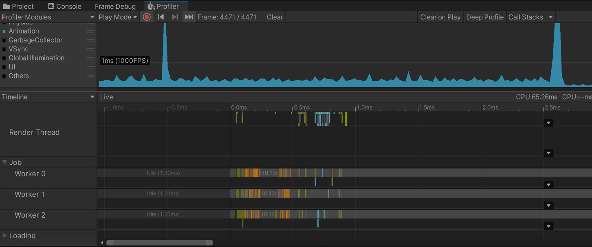
VI: Unity Profiler ở chế độ Timeline — hàng Render Thread và các hàng Job / Worker 0–2 (mỗi worker Idle 1.30–1.31 ms) hiển thị riêng biệt, cho phép so sánh trực tiếp CPU main thread với render thread. Ở đây CPU: 65.26 ms còn GPU: --ms (không có số liệu GPU trên nền tảng này). / EN: The Unity Profiler in Timeline mode, showing the Render Thread and Job worker rows separately.
👉 Xem quy trình chẩn đoán CPU-bound vs GPU-bound đầy đủ ở Module 1. / EN: See Module 1 for the full CPU-bound vs GPU-bound diagnostic workflow.
Bước ĐẦU TIÊN trong tối ưu là XÁC ĐỊNH bottleneck hiện tại để bạn có thể giảm hoặc loại bỏ nó. Bottleneck là phần của pipeline đang làm chậm mọi thứ khác.
💡 Ví dụ: Trong trường hợp quá nhiều draw call tốn quá nhiều thời gian ⇒ CPU là bottleneck. Kể cả khi bạn thực hiện các tối ưu khác làm GPU nhanh hơn, điều đó KHÔNG ảnh hưởng gì tới frame rate vì CPU vẫn chạy quá chậm để tạo một frame trong thời gian yêu cầu.
Hình dung GPU pipeline như một DÂY CHUYỀN LẮP RÁP: khi mỗi giai đoạn xong việc, nó chuyển kết quả cho giai đoạn tiếp theo và làm tiếp phần việc mới. Lý tưởng: mọi giai đoạn đều bận rộn suốt thời gian — vertex shader liên tục xử lý vertex, rasterizer liên tục rasterize pixel, v.v.
🚨 Nhưng điều gì xảy ra khi MỘT giai đoạn mất nhiều thời gian hơn hẳn?
"Một vertex shader ĐẮT ĐỎ KHÔNG thể cấp dữ liệu cho các giai đoạn sau đủ nhanh, và do đó trở thành bottleneck. Nếu bạn có một draw call hành xử như vậy, làm pixel shader nhanh hơn sẽ KHÔNG tạo ra nhiều khác biệt cho tổng thời gian render draw call đó.
🔑 Cách DUY NHẤT để làm mọi thứ nhanh hơn là GIẢM thời gian ở trong vertex shader."
⚖️ Sự thật cần chấp nhận:
"Bạn nên nhớ rằng gần như LUÔN LUÔN sẽ có một bottleneck nào đó — nếu bạn loại bỏ một cái, cái khác sẽ thế chỗ.
Mẹo là biết KHI NÀO bạn có thể làm gì đó về nó, và KHI NÀO bạn phải sống chung với nó vì đó đơn giản là cái giá để render thứ bạn muốn render.
👉 Khi tối ưu, bạn thực sự đang cố loại bỏ những bottleneck KHÔNG CẦN THIẾT."
The very FIRST step in optimization is to IDENTIFY the current bottleneck so you can reduce or eliminate it. A bottleneck is the section of the pipeline that is slowing everything else down.
💡 Example: In the case where too many draw calls cost too much, the CPU is the bottleneck. Even if you performed other optimizations that made the GPU faster, it wouldn't matter to the framerate because the CPU is still too slow to produce a frame in the required time.
Think of the GPU pipeline as an ASSEMBLY LINE: as each stage finishes with its data, it forwards results to the following stage and proceeds with the next piece of work. Ideally every stage is busy working all the time — the vertex shader constantly processing vertices, the rasterizer constantly rasterizing pixels, and so on.
🚨 But what happens if ONE stage takes much longer than the others?
"An expensive vertex shader can't feed the following stages fast enough, and so becomes the bottleneck. If you had a draw call that behaved like this, making the pixel shader faster is NOT going to make much of a difference to the time it takes for the entire draw call to be rendered.
🔑 The ONLY way to make things faster is to REDUCE the time spent in the vertex shader."
⚖️ The truth to accept:
"You should keep in mind that there will ALMOST ALWAYS be a bottleneck of some kind — if you eliminate one, another will just take its place.
The trick is knowing WHEN you can do something about it, and WHEN you have to live with it because that's just what it costs to render what you want to render.
👉 When you optimize, you're really trying to get rid of UNNECESSARY bottlenecks."
Công cụ profiling GPU theo nền tảng
VI: Bài viết liệt kê: NVIDIA Nsight · AMD GPU PerfStudio · Intel GPA · RenderDoc (hiện là công cụ tốt nhất để debug đồ họa trên PC, nhưng không có tính năng profiling nâng cao) · PIX (Microsoft đang mở rộng công cụ profiling Xbox cho Windows, tuy chỉ cho ứng dụng D3D12).
⚠️ "Đáng tiếc, đây là chỗ mọi thứ hơi mơ hồ, vì một số công cụ hiệu năng TỐT NHẤT chỉ có trên console và do đó thuộc diện NDA." — Xem thêm bảng công cụ đầy đủ ở Module 1 §17.
EN: The article lists: NVIDIA Nsight · AMD GPU PerfStudio · Intel GPA · RenderDoc (currently the best tool for graphics debugging on PC, but without advanced profiling features) · PIX. ⚠️ "Some of the best performance tools available are only available for the consoles and therefore under NDA."
3.1. 📏 Benchmark GPU — Biết TRƯỚC bạn nên kỳ vọng gì¶
"Khi profiling, bắt đầu bằng một BENCHMARK là điều HỮU ÍCH. Benchmark cho bạn biết bạn NÊN KỲ VỌNG kết quả profiling như thế nào từ những GPU CỤ THỂ.
👉 Xem GFXBench để có một danh sách TUYỆT VỜI các benchmark CHUẨN NGÀNH cho GPU và card đồ họa. Trang này cung cấp cái nhìn tổng quan tốt về các GPU hiện có và cách chúng SO SÁNH với nhau."
💡 Vì sao bước này quan trọng: nếu không có benchmark, bạn KHÔNG biết 8 ms/frame trên thiết bị đích là "tốt" hay "tệ". Benchmark biến con số tuyệt đối thành con số tương đối so với năng lực phần cứng — điều kiện tiên quyết để kết luận "đã tối ưu đủ".
"When profiling, it's USEFUL to start with a BENCHMARK. A benchmark tells you WHAT profiling results you SHOULD EXPECT from specific GPUs.
👉 See GFXBench for a GREAT list of different INDUSTRY-STANDARD benchmarks for GPUs and graphics cards. The website provides a good overview of the current GPUs available and how they STACK UP against each other."
💡 Why this step matters: without a benchmark you CANNOT tell whether 8 ms/frame on your target device is "good" or "bad". A benchmark turns an absolute number into one that is relative to the hardware's capability — the precondition for concluding "optimized enough".
3.2. 🔧 Kỹ thuật debug THAY THẾ — Sáu công cụ ngoài Unity¶
"Bạn cũng có thể dùng PERFORMANCE COUNTER để đo hiệu năng bằng công cụ BÊN NGOÀI. Nhiều công cụ trong số này cung cấp cái nhìn SÂU HƠN Unity Frame Debugger hay GPU Profiler.
▶️ Build một standalone player và chạy nó qua một trong các công cụ sau."
"You can also use PERFORMANCE COUNTERS to measure performance with EXTERNAL tools. Many of these offer insight BEYOND the Unity Frame Debugger or GPU Profiler.
▶️ Build a standalone player and run it through any of the following."
| Công cụ / Tool | Nền tảng & API | Khả năng nổi bật / Key capability |
|---|---|---|
| Visual Studio Graphics Diagnostics | Direct3D | "Bộ công cụ để PHÂN TÍCH ứng dụng Direct3D. Bạn có thể CHỤP output của ứng dụng, rồi LƯU các frame đã chụp trong Graphics Analyzer. Bạn cũng có thể lấy BẢN TÓM TẮT hiệu năng rendering từ công cụ Frame Analysis" |
| Intel Graphics Performance Analyzers (GPA) | DirectX · Metal · Vulkan · OpenGL | "Một graphics analyzer khác hỗ trợ NHIỀU API HƠN. Xem metric của CPU, GPU và Graphics API THỜI GIAN THỰC để xác định ứng dụng của bạn là CPU- hay GPU-bound. Chụp frame bằng Graphics Frame Analyzer, và xác định chính xác hoạt động CPU/GPU bằng Graphics Trace Analyzer" |
| RenderDoc ⭐ | Windows · Linux · Android (Nintendo Switch™ phân phối riêng qua NintendoSDK) | "Frame debugger MÃ NGUỒN MỞ. 🔑 Unity hỗ trợ TÍCH HỢP RenderDoc ngay trong Editor để việc debug frame DỄ HƠN. 💎 Dùng RenderDoc, ví dụ, để TRỰC QUAN HÓA OVERDRAW với URP" |
| NVIDIA Nsight Graphics | Direct3D · DirectX Raytracing · Vulkan · OpenGL · OpenVR · Oculus SDK | "Công cụ độc lập cho phép debug, profile, và EXPORT frame qua nhiều API. · Range Profiler: phân rã một tập frame đã tuần tự hóa thành THỜI GIAN THỰC THI GPU · GPU Trace: phân tích throughput và mức tận dụng GPU với overhead TỐI THIỂU · Nsight Aftermath: điều tra GPU CRASH và HANG" |
| AMD Radeon Developer Tool Suite | DirectX · Vulkan · OpenGL · OpenCL | "Gồm một GPU Profiler và Analyzer, thêm công cụ để phân tích GPU AMD với các API đồ họa tương thích" |
| Apple Xcode (Instruments) | Metal | "Instruments cho phép bạn thu thập nhiều LOẠI dữ liệu khác nhau và xem chúng SONG SONG. 🔑 Frame Capture cho phép TẠM DỪNG app và chụp snapshot các lệnh Metal cùng buffer. 💎 Bạn có thể sau đó debug một FRAME GRAPH trực quan hiển thị TẤT CẢ render pass và các PHỤ THUỘC giữa chúng" |
🎯 Cách chọn công cụ trong thực chiến
VI: Ghép công cụ với bottleneck bạn nghi ngờ (§3), không phải với thương hiệu GPU:
- Nghi overdraw / fill-rate → RenderDoc (có sẵn tích hợp Editor, và Unity chỉ đích danh nó cho việc trực quan hóa overdraw URP)
- Nghi CPU- hay GPU-bound → Intel GPA (hiển thị metric CPU + GPU thời gian thực SONG SONG)
- Nghi wavefront occupancy / stall GPU (§23.3) → NVIDIA Nsight GPU Trace, hoặc PIX / Razor trên console
- GPU crash / hang → Nsight Aftermath
- Ship iOS/Metal → Xcode Frame Capture (frame graph hiển thị phụ thuộc giữa các render pass — cách nhanh nhất phát hiện pass thừa)
EN: Match the tool to the bottleneck you suspect (§3), not to the GPU brand: overdraw/fill-rate → RenderDoc; CPU- vs GPU-bound → Intel GPA; wavefront occupancy/stalls → Nsight GPU Trace or PIX/Razor; GPU crashes → Nsight Aftermath; iOS/Metal → Xcode Frame Capture.
PHẦN B — BỐN BOTTLENECK GPU PHỔ BIẾN¶
4. Shader Instructions (ALU)¶
Vì phần lớn công việc của GPU được làm bằng shader, chúng thường là nguồn của nhiều bottleneck bạn sẽ gặp.
🔑 Định nghĩa: Khi bottleneck được xác định là shader instructions (đôi khi gọi là ALU — Arithmetic Logic Units, phần cứng thực sự làm phép tính), đơn giản là vertex hoặc pixel shader đang làm RẤT NHIỀU việc và phần còn lại của pipeline đang CHỜ nó xong.
Ba nguyên nhân:
- Chương trình vertex/pixel shader quá phức tạp, chứa nhiều lệnh và mất nhiều thời gian thực thi
- Vertex shader hợp lý nhưng mesh có QUÁ NHIỀU vertex ⇒ cộng dồn thành nhiều thời gian trong vertex shader
- Draw call bao phủ vùng LỚN trên màn hình, chạm nhiều pixel ⇒ tốn nhiều thời gian trong pixel shader
✅ Cách tối ưu — không có gì bất ngờ: THỰC THI ÍT LỆNH HƠN!
- Pixel shader: chọn material đơn giản hơn với ít tính năng hơn để giảm số lệnh chạy trên mỗi pixel
- Vertex shader: đơn giản hóa mesh để giảm số vertex cần xử lý, và chắc chắn phải dùng LOD (Level Of Detail — phiên bản đơn giản hóa của mesh dùng khi object ở xa và nhỏ trên màn hình)
⚠️ NHƯNG cảnh báo quan trọng:
"Đôi khi, bottleneck shader instruction thực ra chỉ là DẤU HIỆU của vấn đề ở CHỖ KHÁC. Những vấn đề như quá nhiều overdraw, hệ thống LOD hoạt động sai, và nhiều thứ khác có thể khiến GPU làm nhiều việc hơn mức cần thiết."
Since most of the GPU's work is done with shaders, they're often the source of many bottlenecks you'll see.
🔑 Definition: When a bottleneck is identified as shader instructions (sometimes referred to as ALUs — Arithmetic Logic Units, the hardware that actually does the calculations), it's simply a way of saying the vertex or pixel shader is doing a lot of work and the rest of the pipeline is WAITING for that work to finish.
Three causes:
- The vertex/pixel shader program itself is just too complex, containing many instructions and taking a long time to execute
- The vertex shader is reasonable but the mesh has TOO MANY vertices ⇒ adding up to a lot of time in the vertex shader
- The draw call covers a LARGE area of the screen, touching many pixels ⇒ a lot of time in the pixel shader
✅ How to optimize — unsurprisingly: EXECUTE LESS INSTRUCTIONS!
- Pixel shaders: choose a simpler material with fewer features to reduce instructions executed per pixel
- Vertex shaders: simplify your mesh to reduce vertices processed, and be sure to use LODs (Level Of Detail — simplified versions of your mesh used when the object is far away and small on screen)
⚠️ BUT an important caveat:
"Sometimes, shader instruction bottlenecks are instead just an INDICATION of problems in some OTHER area. Issues such as too much overdraw, a misbehaving LOD system, and many others can cause the GPU to do a lot more work than necessary."
5. 🔥 Overdraw & Early Depth Test¶
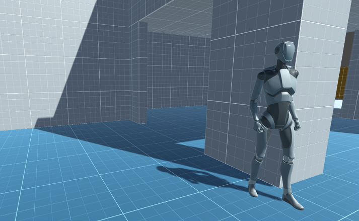
VI: Scene ở chế độ Shaded thông thường. / EN: A Scene in standard Shaded view.
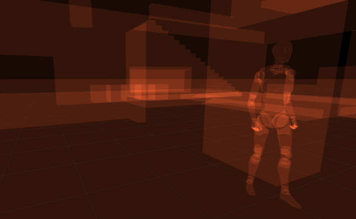
VI: Cùng scene ở chế độ Overdraw — pixel càng SÁNG = càng nhiều lớp vẽ chồng lên nhau; pixel tối = ít overdraw. / EN: The same Scene in Overdraw view — brighter pixels indicate objects drawing on top of one another.
🔑 Định nghĩa: Overdraw là khi cùng MỘT pixel trên màn hình phải được shade NHIỀU LẦN, vì nó bị nhiều draw call chạm tới.
💀 Vì sao đây là vấn đề — tính toán cụ thể:
"Overdraw là vấn đề vì nó GIẢM tổng thời gian GPU có để dành cho việc render. Nếu MỌI pixel trên màn hình phải được shade HAI LẦN, GPU chỉ có thể dành MỘT NỬA thời gian cho mỗi pixel mà vẫn giữ nguyên frame rate."
Bốn nguyên nhân phổ biến nhất (theo e-book Console/PC):
- Geometry đục hoặc trong suốt CHỒNG LẤN
- Shader phức tạp, thường có nhiều render pass
- Particle chưa tối ưu
- Phần tử UI chồng lấn (→ Module 2 §6)
⚖️ Khi nào overdraw KHÔNG tránh được: khi render object trong suốt như particle hoặc vật liệu kính — object nền nhìn thấy được xuyên qua tiền cảnh, nên cả hai đều phải render.
🚨 Nhưng với object ĐỤC, overdraw là HOÀN TOÀN KHÔNG CẦN THIẾT, vì pixel hiển thị trong buffer ở cuối quá trình render là pixel DUY NHẤT thực sự cần được xử lý. Trong trường hợp này, MỌI pixel bị overdraw đều là thời gian GPU LÃNG PHÍ.
🔑 Definition: Overdraw is when the SAME pixel on the screen needs to be shaded MULTIPLE times, because it's touched by multiple draw calls.
💀 Why it's a problem — the concrete arithmetic:
"Overdraw is a problem because it DECREASES the overall time the GPU has to spend on rendering. If EVERY pixel on the screen has to be shaded TWICE, the GPU can only spend HALF the amount of time on each pixel and still maintain the same framerate."
The four most common causes (per the Console/PC e-book):
- Overlapping opaque or transparent geometry
- Complex shaders, often with multiple render passes
- Unoptimized particles
- Overlapping UI elements (→ Module 2 §6)
⚖️ When overdraw is unavoidable: when rendering translucent objects like particles or glass-like materials — the background object is visible through the foreground, so both need to be rendered.
🚨 But for OPAQUE objects, overdraw is COMPLETELY UNNECESSARY, because the pixel shown in the buffer at the end of rendering is the ONLY one that actually needs to be processed. In this case, every overdrawn pixel is just WASTED GPU time.
5.1. Early Depth Test — Cơ chế GPU tự bảo vệ¶
GPU có sẵn biện pháp giảm overdraw cho object đục: EARLY DEPTH TEST.
🔑 Cách hoạt động: Nó xảy ra TRƯỚC pixel shader (xem sơ đồ pipeline §1) và sẽ BỎ QUA việc shade pixel nếu xác định được pixel đó sẽ bị object khác che khuất. Nó làm việc này bằng cách so sánh pixel đang shade với DEPTH BUFFER — một render target nơi GPU lưu độ sâu của cả frame để các object che khuất nhau đúng cách.
🚨 ĐIỀU KIỆN QUAN TRỌNG:
"Nhưng để early depth test có HIỆU QUẢ, object kia PHẢI ĐÃ ĐƯỢC RENDER RỒI để nó có mặt trong depth buffer. Điều đó nghĩa là THỨ TỰ RENDER các object là RẤT QUAN TRỌNG."
✅ Lý tưởng: Mọi scene được render TỪ TRƯỚC RA SAU (front-to-back) — object gần camera nhất trước — để chỉ pixel tiền cảnh được shade và phần còn lại bị early depth test loại bỏ, triệt tiêu overdraw hoàn toàn.
❌ Nhưng thực tế không phải lúc nào cũng làm được:
- Bạn KHÔNG thể sắp xếp lại các tam giác BÊN TRONG một draw call lúc render
- Mesh phức tạp có thể tự che khuất chính nó nhiều lần
- Việc gộp mesh (mesh merging) có thể khiến nhiều object chồng lấn được render theo thứ tự "SAI" ⇒ gây overdraw
👉 "Không có câu trả lời dễ dàng để tránh các trường hợp này — và với trường hợp cuối, đó chỉ là thêm một yếu tố cần cân nhắc khi quyết định CÓ NÊN gộp mesh hay không."
The GPU has a built-in measure to reduce overdraw in opaque objects: the EARLY DEPTH TEST.
🔑 How it works: It happens BEFORE the pixel shader (see the pipeline diagram in §1) and will SKIP pixel shading if it determines the pixel will be hidden by another object. It does this by comparing the pixel being shaded to the DEPTH BUFFER — a render target where the GPU stores the entire frame's depth so objects occlude each other properly.
🚨 THE CRITICAL CONDITION:
"But for the early depth test to be EFFECTIVE, the other object must have ALREADY been RENDERED so it is present in the depth buffer. That means that the RENDERING ORDER of objects is VERY IMPORTANT."
✅ Ideally: every scene would be rendered FRONT-TO-BACK — objects closest to the camera first — so that only foreground pixels get shaded and the rest get killed by the early depth test, eliminating overdraw entirely.
❌ But in the real world that's not always possible:
- You CAN'T reorder the triangles INSIDE a draw call during rendering
- Complex meshes can occlude themselves multiple times
- Mesh merging can result in many overlapping objects being rendered in the "WRONG" order ⇒ causing overdraw
👉 "There's no easy answer for avoiding these cases — and in the latter case it's just another thing to take into consideration when deciding whether or not to MERGE meshes."
5.2. Depth Prepass — Đánh đổi có tính toán¶
Để hỗ trợ early depth testing, một số game thực hiện DEPTH PREPASS một phần.
🔑 Cơ chế: Đây là một pass sơ bộ, trong đó một số object LỚN được biết là occluder hiệu quả (tòa nhà lớn, địa hình, nhân vật chính…) được render bằng shader ĐƠN GIẢN chỉ xuất ra depth buffer — việc này tương đối nhanh vì tránh được mọi công việc pixel shader như lighting hay texturing.
✅ Việc này "MỒI" (prime) depth buffer và tăng lượng công việc pixel shader có thể được BỎ QUA trong pass render đầy đủ sau đó.
⚠️ Nhược điểm — phải cân nhắc:
- Render object occluder HAI LẦN (một lần trong depth-only pass và một lần trong pass chính) ⇒ TĂNG số draw call
- 💀 "Luôn có khả năng thời gian render depth pass còn NHIỀU HƠN thời gian nó tiết kiệm được từ việc tăng hiệu quả early depth test."
👉 Chỉ có PROFILING trong nhiều trường hợp khác nhau mới xác định được nó có đáng hay không với một scene cụ thể.
To help early depth testing, some games do a partial DEPTH PREPASS.
🔑 The mechanism: This is a preliminary pass where certain LARGE objects known to be effective occluders (large buildings, terrain, the main character…) are rendered with a SIMPLE shader that only outputs to the depth buffer — relatively fast as it avoids doing any pixel shader work such as lighting or texturing.
✅ This "PRIMES" the depth buffer and increases the amount of pixel shader work that can be SKIPPED during the full rendering pass later in the frame.
⚠️ The drawback — weigh it carefully:
- Rendering the occluding objects TWICE (once in the depth-only pass and once in the main pass) ⇒ INCREASES the number of draw calls
- 💀 "Plus there's always a chance that the time it takes to render the depth pass itself is MORE than the time it SAVES from increased early depth test efficiency."
👉 Only PROFILING in a variety of cases can determine whether or not it's worth it for any given scene.
5.3. Particle & Vegetation — Hai kẻ gây overdraw kinh điển¶
🎆 PARTICLE — nơi overdraw đặc biệt đáng lo
Vì particle trong suốt và thường chồng lấn RẤT NHIỀU. Artist làm particle effect luôn phải nghĩ tới overdraw.
💡 Lời khuyên cụ thể — rất giá trị:
"Hiệu ứng mây dày có thể tạo ra bằng cách phát ra NHIỀU particle NHỎ, MỜ, CHỒNG LẤN — nhưng điều đó sẽ đẩy chi phí render lên cao.
✅ Phương án hiệu năng TỐT HƠN: phát ra ÍT particle LỚN hơn, và thay vào đó dựa nhiều hơn vào TEXTURE và TEXTURE ANIMATION để truyền tải độ dày đặc.
💎 Kết quả tổng thể thường CÒN HIỆU QUẢ HƠN VỀ THỊ GIÁC, vì phần mềm offline như FumeFX và Houdini thường tạo được hiệu ứng thú vị hơn nhiều qua texture animation, so với hành vi mô phỏng thời gian thực của từng particle riêng lẻ."
Tối ưu từ phía engine — PARTICLE TRIMMING:
"Mọi pixel được render mà kết thúc HOÀN TOÀN TRONG SUỐT đều là thời gian lãng phí" ⇒ tối ưu phổ biến: thay vì render particle bằng 2 tam giác, sinh ra một đa giác VỪA KHÍT tùy chỉnh giúp TỐI THIỂU HÓA vùng trống của texture.
🌿 VEGETATION — còn tệ hơn vì ALPHA TESTING
Với thực vật, việc dùng geometry tùy chỉnh để loại bỏ vùng texture trống còn QUAN TRỌNG HƠN, vì thực vật thường dùng ALPHA TESTING — dùng kênh alpha của texture để quyết định có discard pixel trong pixel shader hay không.
💀 Vì sao alpha testing là vấn đề LỚN:
"Đây là vấn đề vì alpha testing cũng có thể có TÁC DỤNG PHỤ là VÔ HIỆU HÓA HOÀN TOÀN early depth test (vì nó làm mất hiệu lực một số giả định GPU có thể đưa ra về pixel), dẫn tới NHIỀU công việc pixel shader KHÔNG CẦN THIẾT hơn.
Kết hợp điều này với thực tế là thực vật vốn đã chứa RẤT NHIỀU overdraw — nghĩ tới tất cả những chiếc lá chồng lấn trên một cái cây — và nó có thể NHANH CHÓNG trở nên RẤT ĐẮT ĐỎ để render nếu bạn không cẩn thận."
🎆 PARTICLES — where overdraw is a particular concern
Because particles are transparent and often overlap a lot. Artists working on particle effects should always have overdraw in mind.
💡 The concrete advice — very valuable:
"A dense cloud effect can be produced by emitting LOTS of SMALL FAINT OVERLAPPING particles, but that's going to drive up the rendering cost.
✅ A better-performing alternative: emit FEWER LARGER particles, and instead rely more on the TEXTURE and TEXTURE ANIMATION to convey the density of the effect.
💎 The overall result is often MORE VISUALLY EFFECTIVE anyway, because offline software like FumeFX and Houdini can usually produce much more interesting effects through texture animation, compared to real-time simulated behaviour of individual particles."
Engine-side optimization — PARTICLE TRIMMING:
"Every rendered pixel that ends up completely transparent is just wasted time" ⇒ a common optimization: instead of rendering the particle with two triangles, a CUSTOM-FITTED polygon is generated that MINIMIZES the empty areas of the texture.
🌿 VEGETATION — even worse, because of ALPHA TESTING
For vegetation it's EVEN MORE important to use custom geometry to eliminate empty texture space, as vegetation often uses ALPHA TESTING — where the texture's alpha channel decides whether to discard the pixel during the pixel shader stage.
💀 Why alpha testing is a BIG problem:
"This is a problem because alpha testing can ALSO have the SIDE EFFECT of DISABLING the early depth test COMPLETELY (because it invalidates certain assumptions the GPU can make about the pixel), leading to much MORE UNNECESSARY pixel shader work.
Combine this with the fact that vegetation often contains a LOT of overdraw anyway — think of all the overlapping leaves on a tree — and it can QUICKLY become VERY EXPENSIVE to render if you're not careful."
5.4. 🔢 Draw Order & Render Queue — Hiểu THỨ TỰ vẽ để trị overdraw¶
"Để CHỐNG overdraw, bạn PHẢI hiểu cách Unity SẮP XẾP object TRƯỚC KHI render chúng.
🔑 Built-in Render Pipeline sắp xếp GameObject theo Rendering Mode và
renderQueuecủa chúng. Shader của MỖI object đặt nó vào một RENDER QUEUE, và queue này THƯỜNG quyết định THỨ TỰ VẼ.⚠️ MỖI render queue có thể tuân theo NHỮNG QUY TẮC SẮP XẾP KHÁC NHAU trước khi Unity thực sự vẽ object lên màn hình.
📌 Ví dụ: Unity sắp xếp queue Opaque Geometry theo TRƯỚC-RA-SAU (front-to-back), nhưng queue Transparent lại sắp xếp SAU-RA-TRƯỚC (back-to-front)."
💡 Vì sao hai queue ngược nhau? — Nối lại với §5.1:
- Opaque front-to-back ⇒ object gần vẽ trước ⇒ early depth test LOẠI được nhiều pixel nhất
- Transparent back-to-front ⇒ BẮT BUỘC, vì alpha blending cần các lớp phía sau đã có mặt trong buffer để trộn màu đúng ⇒ KHÔNG THỂ hưởng lợi từ early depth test ⇒ đây chính là lý do transparent là nguồn overdraw số 1
🔍 "Object render CHỒNG LÊN NHAU tạo ra overdraw. Nếu bạn dùng Built-in Render Pipeline, bạn có thể trực quan hóa overdraw trong thanh điều khiển Scene view — chuyển draw mode sang Overdraw."
"To combat overdraw, you SHOULD understand how Unity SORTS objects BEFORE rendering them.
🔑 The Built-in Render Pipeline sorts GameObjects according to their Rendering Mode and
renderQueue. EACH object's shader places it in a RENDER QUEUE, which OFTEN determines its DRAW ORDER.⚠️ EACH render queue may follow DIFFERENT RULES for sorting before Unity actually draws the objects to screen.
📌 For example, Unity sorts the Opaque Geometry queue FRONT-TO-BACK, but the Transparent queue sorts BACK-TO-FRONT."
💡 Why are the two queues reversed? — connecting back to §5.1:
- Opaque front-to-back ⇒ nearest objects drawn first ⇒ early depth test rejects the MOST pixels
- Transparent back-to-front ⇒ MANDATORY, since alpha blending needs the layers behind to already be in the buffer to blend correctly ⇒ CANNOT benefit from early depth test ⇒ precisely why transparency is the #1 source of overdraw
🔍 "Objects rendering ON TOP of one another create overdraw. If you are using the Built-in Render Pipeline, you can visualize overdraw in the Scene view control bar — switch the draw mode to Overdraw."
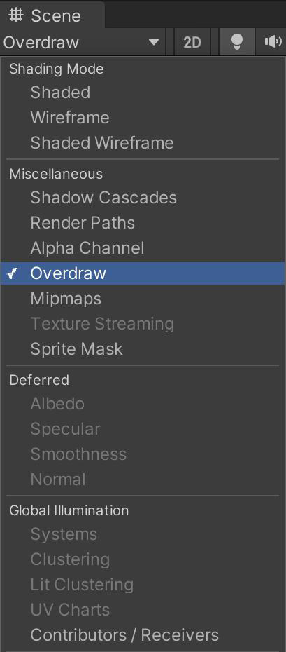
VI: Chuyển draw mode sang Overdraw trong thanh điều khiển Scene view. Chú ý các mục khác cùng nhóm Miscellaneous: Shadow Cascades · Render Paths · Alpha Channel · Overdraw · Mipmaps · Texture Streaming · Sprite Mask. / EN: Overdraw in the Scene view control bar.
🎨 "Pixel SÁNG HƠN cho biết object đang vẽ CHỒNG lên nhau; pixel TỐI nghĩa là ÍT overdraw hơn." (Xem ảnh so sánh Shaded ↔ Overdraw ở §5.)
🔶 HDRP sắp xếp KHÁC — ba bước:
"HDRP điều khiển render queue HƠI KHÁC. Để tính thứ tự của render queue, HDRP:
- GOM các mesh theo MATERIAL DÙNG CHUNG
- TÍNH thứ tự render của các nhóm đó dựa trên MATERIAL PRIORITY
- SẮP XẾP từng nhóm bằng thuộc tính PRIORITY của mỗi Mesh Renderer
👉 Queue kết quả là một danh sách GameObject được sắp xếp TRƯỚC HẾT theo Priority của Material, RỒI mới theo Priority riêng của từng Mesh Renderer."
🎨 "BRIGHTER pixels indicate objects drawing ON TOP of one another; DARK pixels mean LESS overdraw." (See the Shaded ↔ Overdraw comparison in §5.)
🔶 HDRP sorts DIFFERENTLY — three steps:
"HDRP controls the render queue SLIGHTLY DIFFERENTLY. To calculate the order of the render queue, the HDRP:
- GROUPS meshes by SHARED MATERIALS
- CALCULATES the rendering order of those groups based on MATERIAL PRIORITY
- SORTS each group using each Mesh Renderer's PRIORITY property
👉 The resulting queue is a list of GameObjects that are FIRST sorted by their Material's Priority, THEN by their individual Mesh Renderer's Priority."
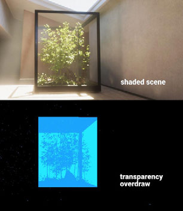
VI: TransparencyOverdraw của HDRP — trên: scene shaded · dưới: overdraw trong suốt (khung cửa sổ hiện màu xanh dương = có pixel trong suốt). / EN: The HDRP Render Pipeline Debug can visualize overdraw from transparent Materials.
"Để trực quan hóa transparency overdraw với HDRP, dùng cửa sổ Render Pipeline Debug (
Window > Render Pipeline > Render Pipeline Debug) để chọnTransparencyOverdraw.🌡️ Tuỳ chọn debug này hiển thị MỖI pixel dưới dạng BẢN ĐỒ NHIỆT (heat map), đi từ ĐEN (nghĩa là KHÔNG có pixel trong suốt) qua XANH DƯƠNG tới ĐỎ (tại đó có số pixel trong suốt bằng Max Pixel Cost).
✅ Khi sửa overdraw, những công cụ chẩn đoán này cung cấp một "phong vũ biểu THỊ GIÁC" cho các tối ưu của bạn."
👉 Xem thêm chế độ QuadOverdraw của Rendering Debugger ở §25 — nó đo chính xác vấn đề overshading ở §6.
"To visualize transparency overdraw with HDRP, use the Render Pipeline Debug window (
Window > Render Pipeline > Render Pipeline Debug) to selectTransparencyOverdraw.🌡️ This debug option displays EACH pixel as a HEAT MAP going from BLACK (which represents NO transparent pixels) through BLUE to RED (at which there are Max Pixel Cost number of transparent pixels).
✅ When correcting overdraw, these diagnostic tools can offer a VISUAL BAROMETER of your optimizations."
👉 See also the Rendering Debugger's QuadOverdraw mode in §25 — it measures exactly the overshading problem from §6.
6. 🔬 Overshading & Quad — Lãng phí 75% âm thầm¶
Đây là kiến thức ÍT NGƯỜI BIẾT nhất nhưng tác động LỚN nhất
OVERSHADING là "họ hàng gần" của overdraw, gây ra bởi tam giác NHỎ XÍU hoặc MỎNG DÍNH, và có thể GÂY HẠI NGHIÊM TRỌNG cho hiệu năng bằng cách lãng phí một phần ĐÁNG KỂ thời gian GPU.
🔑 Nguyên nhân — cách GPU thực sự xử lý pixel:
"Overshading là hệ quả của cách GPU xử lý pixel trong lúc pixel shading: KHÔNG PHẢI từng cái một, mà theo 'QUAD' — khối 4 PIXEL sắp xếp theo mẫu 2×2.
Nó được làm như vậy để phần cứng có thể làm những việc như so sánh UV giữa các pixel để tính mipmap level phù hợp.
💀 Điều này nghĩa là NẾU một tam giác chỉ chạm MỘT pixel của quad (vì tam giác quá nhỏ hoặc quá mỏng), GPU VẪN xử lý CẢ quad và chỉ VỨT BỎ 3 pixel còn lại — LÃNG PHÍ 75% công việc."
🚨 "Thời gian lãng phí đó có thể cộng dồn RẤT NHIỀU, và đặc biệt ĐAU ĐỚN với forward renderer (tức không phải deferred) vốn làm TOÀN BỘ lighting và shading trong MỘT pass duy nhất ở pixel shader."
✅ Cách giảm: "Hình phạt này có thể được giảm bằng cách dùng LOD được tinh chỉnh ĐÚNG CÁCH; ngoài việc tiết kiệm xử lý vertex shader, chúng còn có thể GIẢM MẠNH overshading bằng cách khiến tam giác bao phủ NHIỀU HƠN mỗi quad tính trung bình."
OVERSHADING is a close relative of overdraw, caused by TINY or THIN triangles, and can REALLY HURT performance by wasting a SIGNIFICANT portion of the GPU's time.
🔑 The cause — how GPUs actually process pixels:
"Overshading is a consequence of how GPUs process pixels during pixel shading: NOT one at a time, but instead in 'QUADS' — blocks of FOUR PIXELS arranged in a 2×2 pattern.
It's done like this so the hardware can do things like comparing UVs between pixels to calculate appropriate mipmap levels.
💀 This means that IF a triangle only touches a SINGLE pixel of a quad (because the triangle is tiny or very thin), the GPU STILL processes the WHOLE quad and just THROWS AWAY the other three pixels — WASTING 75% of the work."
🚨 "That wasted time can really add up, and is particularly PAINFUL for FORWARD renderers (i.e. not deferred) that do ALL lighting and shading in a SINGLE pass in the pixel shader."
✅ How to reduce it: "This penalty can be reduced by using PROPERLY-TUNED LODs; besides saving on vertex shader processing, they can also GREATLY REDUCE overshading by having triangles cover MORE of each quad on average."
💡 Chuyện bên lề thú vị — vì sao post effect toàn màn hình dùng MỘT tam giác:
"Quad overshading cũng là lý do đôi khi bạn thấy post effect toàn màn hình dùng MỘT tam giác LỚN duy nhất để phủ màn hình, thay vì HAI tam giác ghép lưng nhau. Với hai tam giác, các quad nằm vắt qua cạnh chung sẽ lãng phí một phần công việc, nên tránh điều đó tiết kiệm được một chút thời gian GPU."
🚨 Hai vấn đề KHÁC của tam giác nhỏ và mỏng:
① Tốc độ rasterize tam giác có GIỚI HẠN
"Ngoài overshading, tam giác nhỏ xíu còn là vấn đề vì GPU chỉ có thể xử lý và rasterize tam giác ở một TỐC ĐỘ NHẤT ĐỊNH, thường TƯƠNG ĐỐI THẤP so với số pixel nó có thể xử lý trong cùng thời gian.
Với quá nhiều tam giác nhỏ, nó không thể sinh pixel đủ nhanh để giữ các shader unit bận rộn ⇒ dẫn tới STALL và thời gian NHÀN RỖI — kẻ thù THỰC SỰ của hiệu năng GPU."
② Tam giác dài và mỏng phá vỡ cách rasterize theo khối
"GPU rasterize pixel theo KHỐI vuông hoặc chữ nhật, KHÔNG theo dải dài. So với tam giác có hình dạng đều đặn hơn với các cạnh cân đối, một tam giác dài mỏng khiến GPU phải làm RẤT NHIỀU việc thừa KHÔNG CẦN THIẾT để rasterize nó thành pixel — có khả năng gây bottleneck ở giai đoạn rasterization."
✅ Kết luận: "Đây là lý do vì sao thường khuyến nghị mesh nên được tessellate thành các tam giác có HÌNH DẠNG ĐỀU ĐẶN — KỂ CẢ khi điều đó làm TĂNG polygon count một chút."
💡 Interesting trivia — why fullscreen post effects use ONE triangle:
"Quad overshading is also the reason you'll sometimes see fullscreen post effects use a SINGLE LARGE triangle to cover the screen instead of TWO back-to-back triangles. With two triangles, quads that straddle the shared edge would be wasting some of their work, so avoiding that saves a minor amount of GPU time."
🚨 Two OTHER problems with tiny and thin triangles:
① Triangle rasterization rate is LIMITED
"Beyond overshading, tiny triangles are also a problem because GPUs can only process and rasterize triangles at a CERTAIN RATE, usually RELATIVELY LOW compared to how many pixels it can process in the same time.
With too many small triangles, it can't produce pixels fast enough to keep the shader units busy ⇒ resulting in STALLS and IDLE time — the REAL enemy of GPU performance."
② Long thin triangles break block-based rasterization
"GPUs rasterize pixels in SQUARE or RECTANGULAR BLOCKS, not in long strips. Compared to a more regular-shaped triangle with even sides, a long thin triangle ends up making the GPU do a LOT of extra UNNECESSARY work to rasterize it into pixels, potentially causing a bottleneck at the rasterization stage."
✅ The conclusion: "This is why it's usually recommended that meshes are tessellated into EVENLY-SHAPED triangles — EVEN IF it INCREASES the polygon count a bit."
7. 💾 Memory Bandwidth & Textures¶
🔑 Nền tảng: Mesh và texture được lưu trong bộ nhớ TÁCH BIỆT VẬT LÝ với shader processor của GPU. Nghĩa là mỗi khi GPU cần truy cập dữ liệu — như texture được pixel shader lấy — nó phải LẤY từ bộ nhớ TRƯỚC khi có thể dùng.
💡 Ẩn dụ tuyệt vời của tác giả:
"Truy cập bộ nhớ tương tự như TẢI FILE từ internet. Việc tải file mất một khoảng thời gian nhất định do BĂNG THÔNG của kết nối — tốc độ dữ liệu có thể truyền.
🔑 Băng thông đó cũng được CHIA SẺ giữa MỌI lượt tải — nếu bạn tải một file ở 6 MB/s, tải HAI file thì mỗi cái chỉ 3 MB/s.
Điều tương tự đúng với truy cập bộ nhớ: index/vertex buffer và texture được GPU truy cập đều mất thời gian và PHẢI CHIA SẺ băng thông bộ nhớ. Tốc độ rõ ràng cao hơn nhiều so với internet — trên giấy tờ, băng thông bộ nhớ GPU của PS4 là 176 GB/s — nhưng ý tưởng thì giống nhau."
Cách shader cố gắng che giấu độ trễ:
"Shader cần truy cập texture sẽ cố BẮT ĐẦU việc truyền SỚM NHẤT có thể, rồi làm việc khác không liên quan (ví dụ tính lighting) và HY VỌNG dữ liệu texture đã về kịp khi tới đoạn chương trình cần nó.
💀 Nếu dữ liệu KHÔNG về kịp — vì việc truyền bị làm chậm bởi nhiều lượt truyền khác, hoặc vì nó hết việc khác để làm (đặc biệt dễ xảy ra với dependent texture fetch) — việc thực thi sẽ DỪNG LẠI và chỉ ngồi đó CHỜ.
👉 Đây là MEMORY BANDWIDTH BOTTLENECK: làm phần còn lại của shader nhanh hơn sẽ KHÔNG có ý nghĩa gì nếu nó vẫn phải dừng và chờ dữ liệu từ bộ nhớ."
🚨 Băng thông bộ nhớ là tài nguyên CỰC KỲ QUÝ: "Nó thậm chí có thể phải CHIA SẺ với CPU hoặc công việc async compute mà GPU đang làm cùng lúc."
🔑 The fundamental: Meshes and textures are stored in memory that is PHYSICALLY SEPARATE from the GPU's shader processors. That means whenever the GPU needs to access data — like a texture fetched by a pixel shader — it must RETRIEVE it from memory BEFORE it can use it.
💡 The author's excellent analogy:
"Memory accesses are analogous to DOWNLOADING FILES from the internet. File downloads take a certain time due to the connection's BANDWIDTH — the speed at which data can be transferred.
🔑 That bandwidth is also SHARED between all downloads — if you can download one file at 6MB/s, TWO files only download at 3MB/s each.
The same is true of memory accesses: index/vertex buffers and textures accessed by the GPU take time and MUST SHARE memory bandwidth. The speeds are obviously much higher — on paper the PS4's GPU memory bandwidth is 176GB/s — but the idea is the same."
How shaders try to hide the latency:
"A shader that needs to access a texture will try to START the transfer as EARLY as possible, then do other unrelated work (for example lighting calculations) and HOPE the texture data has arrived by the time it gets to the part of the program that needs it.
💀 If the data HASN'T arrived in time — because the transfer is slowed by lots of other transfers, or because it runs out of other work to do (especially likely for dependent texture fetches) — execution will STOP and it will just sit there and WAIT.
👉 This is a MEMORY BANDWIDTH BOTTLENECK: making the rest of the shader faster will NOT matter if it still needs to stop and wait for data."
🚨 Memory bandwidth is a VERY PRECIOUS resource: "It might even have to be SHARED with the CPU or async compute work that the GPU is doing at the same time."
7.1. Cache — Tuyến phòng thủ đầu tiên¶
CACHE là mẩu bộ nhớ NHỎ, TỐC ĐỘ CAO mà GPU truy cập rất nhanh, dùng để giữ các khối bộ nhớ vừa được truy cập gần đây phòng khi GPU cần lại.
💡 Trong ẩn dụ internet: cache là ổ cứng máy tính lưu file đã tải để truy cập nhanh hơn về sau.
🔑 Cơ chế then chốt:
"Khi một mẩu bộ nhớ được truy cập — như MỘT texel trong texture — các texel XUNG QUANH cũng được kéo vào cache trong CÙNG lượt truyền.
Lần sau khi GPU tìm một trong các texel đó, nó KHÔNG cần đi tới tận bộ nhớ và có thể lấy từ cache CỰC NHANH.
💎 Đây thực ra là trường hợp PHỔ BIẾN — khi một texel hiển thị trên màn hình ở một pixel, RẤT có khả năng pixel bên cạnh sẽ cần hiển thị CÙNG texel đó, hoặc texel ngay bên cạnh nó trong texture."
⚠️ Filtering làm tăng gánh nặng băng thông: "Bilinear, trilinear, và anisotropic filtering ĐỀU đòi hỏi truy cập NHIỀU texel cho MỖI lần lookup, đặt thêm gánh nặng lên việc dùng băng thông. Anisotropic filtering chất lượng cao đặc biệt NGỐN băng thông."
A CACHE is a SMALL piece of HIGH-SPEED memory the GPU has very fast access to, used to keep chunks of memory accessed recently in case the GPU needs them again.
💡 In the internet analogy: the cache is your computer's hard drive that stores downloaded files for faster access in the future.
🔑 The key mechanism:
"When a piece of memory is accessed — like a SINGLE texel in a texture — the SURROUNDING texels are ALSO pulled into the cache in the SAME memory transfer.
The next time the GPU looks for one of those texels, it doesn't need to go all the way to memory and can instead fetch it from the cache EXTREMELY QUICKLY.
💎 This is actually often the COMMON case — when a texel is displayed on screen in one pixel, it's VERY LIKELY the pixel beside it will need the SAME texel, or the texel right beside it in the texture."
⚠️ Filtering increases the bandwidth burden: "Bilinear, trilinear, and anisotropic filtering ALL require MULTIPLE texels to be accessed for EACH lookup, putting an extra burden on bandwidth usage. High-quality anisotropic filtering is particularly bandwidth-intensive."
7.2. 🎯 Mipmap — Vì sao nó CỨU cache¶
Đoạn giải thích hay nhất về mipmap mà tôi từng đọc
Kịch bản THẢM HỌA khi KHÔNG có mipmap:
"Hãy nghĩ xem điều gì xảy ra trong cache nếu bạn cố hiển thị texture LỚN (ví dụ 2048×2048) trên một object Ở RẤT XA và chỉ chiếm vài pixel trên màn hình.
💀 MỖI pixel sẽ phải lấy từ một phần RẤT KHÁC NHAU của texture, và cache sẽ HOÀN TOÀN VÔ DỤNG vì nó chỉ giữ các texel gần với lần truy cập trước.
Mọi lần truy cập texture sẽ cố tìm kết quả trong cache và THẤT BẠI (gọi là 'CACHE MISS') ⇒ dữ liệu phải lấy từ bộ nhớ, chịu chi phí KÉP: dùng băng thông VÀ thời gian truyền. Một STALL có thể xảy ra, làm chậm CẢ shader.
😱 Nó còn khiến dữ liệu khác (có thể hữu ích) bị "TRỤC XUẤT" khỏi cache để nhường chỗ cho các texel xung quanh mà sẽ KHÔNG BAO GIỜ được dùng, làm giảm hiệu quả tổng thể của cache.
🎨 Tin xấu ở mọi phía — chưa kể vấn đề chất lượng thị giác: camera chỉ cần nhúc nhích một chút là các texel HOÀN TOÀN KHÁC được sample, gây ALIASING và LẤP LÁNH (sparkling)."
✅ MIPMAPPING đến giải cứu:
"Khi một texture fetch được phát ra, GPU có thể PHÂN TÍCH texture coordinate đang dùng ở MỖI pixel, xác định khi nào có KHOẢNG CÁCH LỚN giữa các lần truy cập texture.
Thay vì chịu chi phí cache miss cho mọi texel, nó truy cập một MIP THẤP HƠN của texture KHỚP với độ phân giải nó đang cần.
💎 Ba lợi ích cộng dồn:
- TĂNG MẠNH hiệu quả của cache ⇒ giảm dùng băng thông và khả năng bị bottleneck
- Mip thấp hơn cũng NHỎ HƠN ⇒ cần ÍT dữ liệu truyền từ bộ nhớ hơn ⇒ giảm băng thông thêm nữa
- Vì mip được LỌC TRƯỚC (pre-filtered), việc dùng chúng GIẢM MẠNH aliasing và sparkling
👉 "Vì TẤT CẢ những lý do này, gần như LUÔN LUÔN là ý tưởng tốt khi dùng mipmap — lợi ích CHẮC CHẮN đáng giá phần bộ nhớ thêm vào."
The DISASTER scenario WITHOUT mipmaps:
"Think about what happens in the cache if you try to display a LARGE texture (e.g. 2048×2048) on an object that's VERY FAR AWAY and only takes up a few pixels on the screen.
💀 EACH pixel will need to fetch from a VERY DIFFERENT part of the texture, and the cache will be COMPLETELY INEFFECTIVE since it only keeps texels close to previous accesses.
Every texture access will try to find its result in the cache and FAIL (called a 'CACHE MISS') ⇒ the data must be fetched from memory, incurring the DUAL costs of bandwidth usage AND transfer time. A STALL may occur, slowing the WHOLE shader down.
😱 It will also cause other (potentially useful) data to be 'EVICTED' from the cache to make room for surrounding texels that will NEVER even be used, reducing overall cache efficiency.
🎨 It's bad news all around — not to mention visual quality: tiny movements of the camera will cause COMPLETELY DIFFERENT texels to be sampled, causing ALIASING and SPARKLING."
✅ MIPMAPPING comes to the rescue:
"When a texture fetch is issued, the GPU can ANALYZE the texture coordinates being used at EACH pixel, determining when there is a LARGE GAP between texture accesses.
Instead of incurring cache-miss costs for every texel, it accesses a LOWER MIP of the texture that MATCHES the resolution it's looking for.
💎 Three compounding benefits:
- GREATLY INCREASES cache effectiveness ⇒ reducing bandwidth usage and bottleneck potential
- Lower mips are also SMALLER ⇒ less data transferred from memory ⇒ further reducing bandwidth
- Since mips are PRE-FILTERED, their use VASTLY REDUCES aliasing and sparkling
👉 "For ALL of these reasons, it's almost ALWAYS a good idea to use mipmaps — the advantages are DEFINITELY worth the extra memory usage."
💡 Mipmap = 'LOD dành cho TEXTURE' — và nó BẬT SẴN
"MipMap giống như LOD dành cho TEXTURE MAP. MipMap cho phép texture được GIẢM độ phân giải khi ở XA camera. Chúng cũng có thể được dùng nếu một hệ thống cấu hình thấp đang CHẬT VẬT render một texture ở độ phân giải đã chỉ định.
🔑 MipMap được BẬT MẶC ĐỊNH trên texture khi import vào Unity, và NÊN được bật — TRỪ KHI bạn dùng camera có KHOẢNG CÁCH CỐ ĐỊNH mọi lúc, và/hoặc bạn dùng công cụ RIÊNG để đạt hiệu năng texture tốt hơn."
📝 Ghi chú raw của bạn cũng nêu đúng đường dẫn setting: Texture > Advanced > Generate Mip Maps.
⚠️ Ngoại lệ quan trọng — KHI NÀO nên TẮT mipmap: texture UI/Sprite và texture cho camera trực giao khoảng cách cố định (game 2D, top-down) — chúng LUÔN hiển thị ở tỷ lệ 1:1, nên mipmap chỉ tốn thêm 33% bộ nhớ mà KHÔNG bao giờ được dùng.
"MipMaps are like LODs for TEXTURE MAPS. MipMaps allow textures to be REDUCED in resolution when FAR AWAY from the camera. They can also be used if a LOWER-END system is STRUGGLING to render a texture at the specified resolution.
🔑 MipMaps are ENABLED BY DEFAULT on textures that are imported into Unity and SHOULD be enabled — UNLESS you are using a camera with a FIXED DISTANCE at all times and/or using your OWN unique tools to achieve better texture performance."
📝 Your raw note gives the exact setting path: Texture > Advanced > Generate Mip Maps.
⚠️ The important exception — WHEN to DISABLE mipmaps: UI/Sprite textures and textures for fixed-distance orthographic cameras (2D, top-down games) — they ALWAYS display at a 1:1 ratio, so mipmaps only cost an extra 33% memory that is NEVER used.
7.3. Nén texture & Shadow Pass¶
NÉN TEXTURE là cách quan trọng để giảm băng thông và mức dùng cache (ngoài lợi ích hiển nhiên về bộ nhớ).
"Dùng BC (Block Compression, trước gọi là DXT), texture có thể giảm xuống MỘT PHẦN TƯ hoặc thậm chí MỘT PHẦN SÁU kích thước gốc, đổi lại một chút chất lượng.
💎 Và hầu hết GPU còn GIỮ NGUYÊN texture ở dạng NÉN TRONG CACHE, để lại nhiều chỗ hơn cho dữ liệu texture khác và TĂNG hiệu quả cache tổng thể."
✅ 5 bước loại bỏ bottleneck băng thông (phía art):
- Đảm bảo texture CÓ mip và ĐƯỢC nén
- ĐỪNG dùng anisotropic filtering nặng 8x hay 16x nếu 2x là đủ — hoặc thậm chí trilinear/bilinear nếu được
- Giảm độ phân giải texture, đặc biệt nếu mip cấp cao nhất thường xuyên được hiển thị
- ĐỪNG dùng tính năng material gây truy cập texture trừ khi tính năng đó thực sự cần
- 💎 Đảm bảo MỌI dữ liệu được lấy về ĐỀU được dùng — "đừng sample BỐN texture RGBA khi bạn chỉ cần dữ liệu ở kênh RED của mỗi cái; GỘP 4 kênh đó vào MỘT texture và bạn đã loại bỏ 75% việc dùng băng thông"
TEXTURE COMPRESSION is an important way of reducing bandwidth and cache usage (in addition to the obvious memory savings).
"Using BC (Block Compression, previously known as DXT), textures can be reduced to a QUARTER or even a SIXTH of their original size in exchange for a minor hit in quality.
💎 And most GPUs even KEEP the textures COMPRESSED IN THE CACHE, leaving more room to store other texture data and INCREASING overall cache efficiency."
✅ Five steps to eliminate bandwidth bottlenecks (art side):
- Make sure textures HAVE mips and ARE compressed
- Don't use heavy 8x or 16x anisotropic filtering if 2x is enough — or even trilinear or bilinear if possible
- Reduce texture resolution, particularly if the top-level mip is often displayed
- Don't use material features that cause texture accesses unless the feature is really needed
- 💎 Make sure ALL the data being fetched is actually USED — "don't sample FOUR RGBA textures when you actually only need the data in the RED channels of each; MERGE those four channels into a SINGLE texture and you've removed 75% of the bandwidth usage"
🌑 Shadow Pass — Pass đặc biệt NHẠY với băng thông
"So với draw call thông thường, shadow pass hành xử KHÁC HẲN và có KHẢ NĂNG CAO HƠN NHIỀU bị giới hạn bởi băng thông.
🔑 Lý do: shadow map đơn giản là depth buffer biểu diễn khoảng cách từ đèn tới mesh gần nhất, nên phần lớn công việc render shadow chỉ là TRUYỀN DỮ LIỆU tới và từ bộ nhớ: lấy vertex/index buffer, làm vài phép tính đơn giản để xác định vị trí, rồi ghi độ sâu của mesh vào shadow map.
💀 Hầu hết thời gian, pixel shader thậm chí KHÔNG được thực thi, vì mọi thông tin depth cần thiết đều đến từ vertex data. Điều này để lại RẤT ÍT việc để che giấu overhead của mọi lượt truyền bộ nhớ, và bottleneck khả dĩ là shader chỉ ngồi CHỜ các lượt truyền bộ nhớ hoàn thành.
👉 Kết quả: shadow pass ĐẶC BIỆT NHẠY CẢM với CẢ số vertex/tam giác LẪN độ phân giải shadow map, vì chúng ảnh hưởng TRỰC TIẾP tới lượng băng thông cần thiết."
💡 Ghi chú về Xbox: Xbox 360 có EDRAM (10 MB) và Xbox One có ESRAM (32 MB) — bộ nhớ nhúng gần GPU, đủ lớn để chứa vài render target và texture hay dùng, với băng thông CAO HƠN NHIỀU bộ nhớ hệ thống. Quan trọng không kém tốc độ: băng thông này dùng ĐƯỜNG DẪN RIÊNG, nên KHÔNG phải chia sẻ với các lượt truyền DRAM.
"Compared to regular draw calls, shadow passes behave QUITE DIFFERENTLY and are MUCH MORE LIKELY to be bandwidth bound.
🔑 The reason: shadow maps are simply depth buffers representing the distance from the light to the closest mesh, so most of the work consists of TRANSFERRING DATA to and from memory: fetch the vertex/index buffers, do simple calculations to determine position, then write the mesh depth to the shadow map.
💀 Most of the time, a pixel shader isn't even EXECUTED, because all necessary depth information comes from just the vertex data. This leaves VERY LITTLE work to hide the overhead of all the memory transfers, and the likely bottleneck is the shader just WAITING for memory transfers to complete.
👉 As a result, shadow passes are PARTICULARLY SENSITIVE to BOTH vertex/triangle counts AND shadow map resolution, as they directly affect the bandwidth needed."
💡 Xbox note: The Xbox 360 has EDRAM (10 MB) and Xbox One has ESRAM (32 MB) — memory embedded close to the GPU, big enough to store a few render targets and frequently-used textures, with MUCH HIGHER bandwidth than regular system memory. Just as important as the speed: this bandwidth uses a DEDICATED PATH, so doesn't have to be shared with DRAM transfers.
PHẦN C — RENDER PIPELINE & BATCHING¶
8. Chọn Render Pipeline¶
VI: Dự án demo Boat Attack tạo bằng Universal Render Pipeline. / EN: The Boat Attack demo project created using the Universal Render Pipeline.
Trước khi bắt đầu lighting cho scene, bạn phải chọn một render pipeline. Render pipeline thực hiện một chuỗi thao tác lấy nội dung Scene và hiển thị chúng lên màn hình.
Unity cung cấp 3 render pipeline dựng sẵn với khả năng và đặc tính hiệu năng khác nhau — hoặc bạn tự tạo cái riêng.
Before you begin lighting your scenes, you need to choose a render pipeline. A render pipeline performs a series of operations that take the contents of a Scene and display them on-screen.
Unity provides three prebuilt render pipelines with different capabilities and performance characteristics — or you can create your own.
| Pipeline | Đặc điểm / Characteristics | Khi nào chọn / When to choose |
|---|---|---|
| Built-in Render Pipeline (BiRP) | Pipeline đa dụng với khả năng TÙY BIẾN HẠN CHẾ. Đây là mặc định. Tuy không tùy biến được nhiều như URP/HDRP, nó hỗ trợ RẤT NHIỀU nền tảng | Cần cấu hình các rendering path thủ công và mở rộng bằng command buffer và callback |
| Universal Render Pipeline (URP) | Scriptable Render Pipeline dựng sẵn. Cung cấp workflow thân thiện với artist để tạo đồ họa tối ưu trên nhiều nền tảng, từ mobile tới console và PC cao cấp. Thêm tính năng đồ họa KHÔNG có ở BiRP. ⚖️ Để giữ hiệu năng, nó ĐÁNH ĐỔI để GIẢM chi phí tính toán của lighting và shading | ✅ Chọn URP nếu bạn muốn tiếp cận NHIỀU nền tảng nhất — bao gồm mobile và VR |
| High Definition Render Pipeline (HDRP) | Scriptable Render Pipeline thiết kế cho đồ họa TIÊN TIẾN, ĐỘ TRUNG THỰC CAO. Nhắm phần cứng cao cấp: PC, Xbox, PlayStation. Dùng Lighting và Material dựa trên vật lý, hỗ trợ công cụ debug cải tiến | Game chân thực, demo ô tô, ứng dụng kiến trúc. 🚨 HDRP hiện KHÔNG hỗ trợ nền tảng mobile hay Nintendo Switch |
🔑 URP và HDRP đều hoạt động BÊN TRÊN Scriptable Render Pipeline (SRP) — một lớp API mỏng cho phép bạn lên lịch và cấu hình lệnh render bằng script C#. Sự linh hoạt này cho phép bạn tùy biến gần như MỌI phần của pipeline.
👉 Chọn render pipeline SỚM khi lập kế hoạch dự án.
📦 Package render pipeline cho Console: Để build cho PS4/PS5/Xbox, bạn phải cài package BỔ SUNG cho MỖI nền tảng:
- PlayStation 4 →
com.unity.render-pipelines.ps4 - PlayStation 5 →
com.unity.render-pipelines.ps5 - Xbox One →
com.unity.render-pipelines.xboxone - Game Core Xbox Series / Xbox One →
com.unity.render-pipelines.gamecore
🔑 URP and HDRP both work on top of the Scriptable Render Pipeline (SRP) — a thin API layer that lets you schedule and configure rendering commands using C# scripts. This flexibility allows you to customize virtually EVERY part of the pipeline.
👉 Choose a render pipeline EARLY when planning your project.
📦 Render pipeline packages for consoles: To build for PS4/PS5/Xbox you must install an ADDITIONAL package for EACH platform:
- PlayStation 4 →
com.unity.render-pipelines.ps4 - PlayStation 5 →
com.unity.render-pipelines.ps5 - Xbox One →
com.unity.render-pipelines.xboxone - Game Core Xbox Series / Xbox One →
com.unity.render-pipelines.gamecore
9. Rendering Path — Forward vs Deferred¶
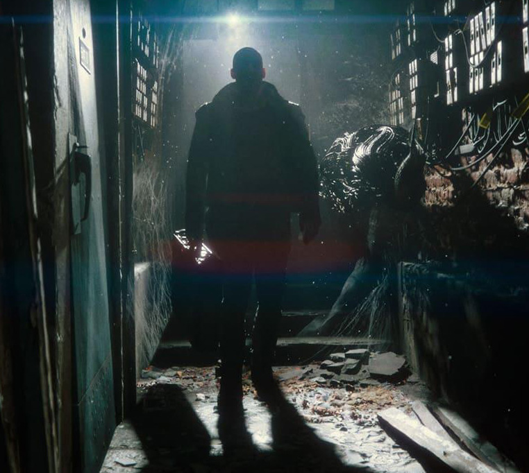
VI: Forward rendering path. / EN: The forward rendering path.
Rendering path biểu diễn một chuỗi thao tác cụ thể liên quan tới lighting và shading. Việc quyết định phụ thuộc vào nhu cầu ứng dụng và phần cứng đích.
🔷 FORWARD RENDERING PATH
URP và Built-in Render Pipeline đều dùng forward renderer.
Cơ chế: Card đồ họa chiếu geometry và chia nó thành vertex. Các vertex đó lại được chia nhỏ thành fragment (pixel), render ra màn hình để tạo ảnh cuối. Pipeline truyền TỪNG object, MỘT CÁI MỘT LẦN, tới graphics API.
🚨 Chi phí đặc trưng: "Forward rendering đi kèm CHI PHÍ cho MỖI ĐÈN. Càng nhiều đèn trong Scene, render càng LÂU."
💀 Vấn đề riêng của BiRP forward renderer:
"Forward renderer của Built-in Render Pipeline vẽ MỖI ĐÈN trong một PASS RIÊNG cho MỖI OBJECT. Nếu bạn có nhiều đèn chiếu vào CÙNG một GameObject, điều này có thể tạo ra OVERDRAW ĐÁNG KỂ — nơi vùng chồng lấn phải vẽ cùng một pixel NHIỀU HƠN MỘT LẦN. Hãy giảm thiểu số đèn real-time để giảm overdraw."
✅ URP làm KHÁC — và TỐT HƠN:
"Thay vì render một pass cho mỗi đèn, URP CULL các đèn THEO TỪNG OBJECT. Điều này cho phép lighting được tính trong MỘT PASS DUY NHẤT, dẫn tới ÍT draw call HƠN so với forward renderer của Built-In."
The rendering path represents a specific series of operations related to lighting and shading. Deciding on one depends on your application needs and target hardware.
🔷 FORWARD RENDERING PATH
URP and the Built-in Render Pipeline both use forward renderers.
Mechanism: The graphics card projects the geometry and splits it into vertices. Those vertices are further broken into fragments (pixels), which render to screen to create the final image. The pipeline passes each object, ONE AT A TIME, to the graphics API.
🚨 The characteristic cost: "Forward rendering comes with a COST for EACH LIGHT. The more lights in your Scene, the LONGER rendering will take."
💀 BiRP forward renderer's specific problem:
"The Built-in Render Pipeline's forward renderer draws EACH LIGHT in a SEPARATE PASS PER OBJECT. If you have multiple lights hitting the SAME GameObject, this can create SIGNIFICANT OVERDRAW, where overlapping areas need to draw the same pixel MORE THAN ONCE. Minimize the number of real-time lights to reduce overdraw."
✅ URP does it DIFFERENTLY — and BETTER:
"Rather than rendering one pass per light, the URP CULLS the lights PER-OBJECT. This allows for the lighting to be computed in ONE SINGLE PASS, resulting in FEWER draw calls compared to the Built-In forward renderer."
VI: Deferred shading path — lighting được áp lên một buffer thay vì lên từng object. / EN: Deferred shading applies lighting to a buffer instead of each object.
🔶 DEFERRED SHADING PATH
Built-in Render Pipeline và HDRP có thể dùng deferred shading.
🔑 Ý tưởng cốt lõi: Trong deferred shading, lighting KHÔNG được tính theo từng object. Nó TRÌ HOÃN việc render nặng — như lighting — sang giai đoạn SAU. Deferred shading dùng 2 PASS:
Pass 1 — G-Buffer Geometry Pass: Unity render các GameObject. Pass này lấy ra nhiều loại thuộc tính hình học và lưu chúng vào một tập texture. G-buffer texture có thể gồm:
- Diffuse và specular color
- Surface smoothness
- Occlusion
- World space normal
- Emission + ambient + reflection + lightmap
Pass 2 — Lighting Pass: Unity render lighting của Scene DỰA TRÊN G-buffer. "Hãy tưởng tượng việc duyệt qua TỪNG PIXEL và tính thông tin lighting dựa trên BUFFER thay vì dựa trên từng object riêng lẻ."
💎 Lợi ích quyết định:
"Do đó, việc thêm NHIỀU đèn KHÔNG đổ bóng trong deferred shading KHÔNG gây tổn thất hiệu năng giống như với forward rendering."
⚠️ "Tuy chọn rendering path bản thân nó KHÔNG phải là một tối ưu, nó ẢNH HƯỞNG tới CÁCH bạn tối ưu dự án. Các kỹ thuật và workflow khác trong phần này có thể KHÁC NHAU tùy render pipeline và rendering path bạn chọn."
🔶 DEFERRED SHADING PATH
The Built-in Render Pipeline and HDRP can also use deferred shading.
🔑 The core idea: In deferred shading, lighting is NOT calculated per object. It POSTPONES heavy rendering — like lighting — to a LATER stage. Deferred shading uses TWO PASSES:
Pass 1 — G-Buffer Geometry Pass: Unity renders the GameObjects. This pass retrieves several types of geometric properties and stores them in a set of textures. G-buffer textures can include:
- Diffuse and specular colors
- Surface smoothness
- Occlusion
- World space normals
- Emission + ambient + reflections + lightmaps
Pass 2 — Lighting Pass: Unity renders the Scene's lighting BASED ON the G-buffer. "Imagine iterating over EACH PIXEL and calculating the lighting information based on the BUFFER instead of the individual objects."
💎 The decisive benefit:
"Thus, adding MORE non-shadow-casting lights in deferred shading does NOT incur the SAME performance hit as with forward rendering."
⚠️ "Though choosing a rendering path is NOT an optimization per se, it can AFFECT HOW you optimize your project. The other techniques and workflows in this section may VARY depending on what render pipeline and rendering path you've chosen."
10. 🎯 Draw Call Batching — Bốn kỹ thuật¶
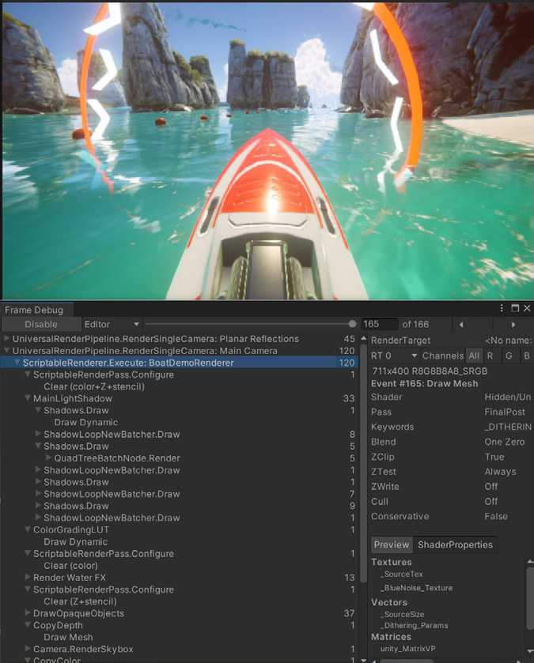
🔑 Nguyên lý: "Draw call batching TỐI THIỂU HÓA các thay đổi state này và GIẢM chi phí CPU của việc render object."
⚖️ "Phần cứng PC và console có thể đẩy được RẤT NHIỀU draw call, nhưng overhead của mỗi lời gọi VẪN đủ cao để đáng công giảm bớt. Trên thiết bị mobile, tối ưu draw call là SỐNG CÒN."
🔑 The principle: "Draw call batching MINIMIZES these state changes and REDUCES the CPU cost of rendering objects."
⚖️ "PC and console hardware can push a lot of draw calls, but the overhead of each call is still high enough to warrant trying to reduce them. On mobile devices, draw call optimization is VITAL."
| Kỹ thuật | Cơ chế / Mechanism | Điều kiện & Lưu ý |
|---|---|---|
| ① SRP Batching | 🔑 KHÔNG giảm số draw call — nó GIẢM phần THIẾT LẬP GPU giữa các DrawCall bằng cách lưu material data THƯỜNG TRÚ trong bộ nhớ GPU ⇒ "làm MỖI draw call RẺ HƠN". Có thể tăng tốc CPU rendering time ĐÁNG KỂ | Bật SRP Batcher trong Pipeline Asset mục Advanced. ✅ Dùng ÍT Shader Variant với TỐI THIỂU Keyword để cải thiện SRP batching |
| ② GPU Instancing | Batch nhiều object GIỐNG HỆT nhau (cùng mesh + cùng material) bằng phần cứng đồ họa | Chọn Material trong Project window → tick Enable Instancing. 💡 "Giới hạn số model trong scene có thể cải thiện hiệu năng. Nếu làm khéo, bạn vẫn dựng được scene phức tạp mà không trông lặp lại" |
| ③ Static Batching | Với geometry KHÔNG di chuyển, Unity giảm draw call cho mọi mesh dùng chung material. Unity gộp TẤT CẢ static mesh thành MỘT mesh LỚN lúc BUILD | ✅ Hiệu quả HƠN dynamic batching, ⚠️ nhưng dùng NHIỀU BỘ NHỚ HƠN. Đánh dấu mesh không di chuyển là Batching Static. 💡 StaticBatchingUtility cho phép tự tạo static batch lúc runtime (ví dụ sau khi sinh level thủ tục) |
| ④ Dynamic Batching | Với mesh NHỎ, Unity nhóm và biến đổi vertex trên CPU rồi vẽ tất cả trong một lần | 🚨 ĐỪNG dùng trừ khi bạn có ĐỦ mesh low-poly — "KHÔNG quá 300 vertex mỗi mesh và 900 vertex attribute tổng". Nếu không, bật nó chỉ LÃNG PHÍ thời gian CPU đi tìm mesh nhỏ để batch |
🚨 Năm quy tắc tối đa hóa batching — quy tắc ③ là bẫy kinh điển
- Dùng CÀNG ÍT Texture trong Scene càng tốt. Ít texture ⇒ ít material duy nhất ⇒ DỄ batch hơn. Ngoài ra, dùng Texture atlas ở mọi nơi có thể.
- LUÔN bake lightmap ở kích thước atlas LỚN NHẤT có thể. Ít lightmap ⇒ ít thay đổi Material state — nhưng để mắt tới memory footprint.
- 🚨 CẨN THẬN đừng vô tình INSTANCE material:
"Truy cập
Renderer.materialtrong script sẽ NHÂN BẢN material và trả về tham chiếu tới BẢN SAO MỚI. Điều này PHÁ VỠ mọi batch đang tồn tại đã bao gồm material đó.✅ Nếu bạn muốn truy cập material của object đã batch, hãy dùng
Renderer.sharedMaterialthay thế."📝 Ghi chú raw cũng cảnh báo điều này: "Never use
renderer.material.xxxat runtime, this will clone the material and break batching too. Use MaterialPropertyBlock để đổi thuộc tính material." - Theo dõi số static và dynamic batch SO VỚI tổng số draw call bằng Profiler hoặc rendering stats trong lúc tối ưu.
- Use as FEW Textures in a Scene as possible. Fewer Textures require fewer unique Materials, making them easier to batch. Additionally, use Texture atlases wherever possible.
- ALWAYS bake lightmaps at the LARGEST atlas size possible. Fewer lightmaps require fewer Material state changes — but keep an eye on the memory footprint.
- 🚨 Be CAREFUL not to instance Materials unintentionally:
"Accessing
Renderer.materialin scripts DUPLICATES the material and returns a reference to the NEW COPY. This BREAKS any existing batch that already includes the material.✅ If you wish to access the batched object's material, use
Renderer.sharedMaterialinstead."📝 The raw notes warn about this too: "Never use
renderer.material.xxxat runtime, this will clone the material and break batching too. Use MaterialPropertyBlock to change material properties." - Keep an eye on static and dynamic batch counts VERSUS the total draw call count using the Profiler or rendering stats.
// ❌ SAI — Renderer.material NHÂN BẢN material ⇒ PHÁ batching
void SetColorBad(Color c)
{
GetComponent<Renderer>().material.color = c; // clone! batch bị phá
}
// ✅ ĐÚNG — MaterialPropertyBlock: đổi thuộc tính mà KHÔNG clone, KHÔNG phá batch
using UnityEngine;
public class TintWithoutBreakingBatch : MonoBehaviour
{
static readonly int BaseColorId = Shader.PropertyToID("_BaseColor"); // hash 1 lần (Module 1 §13.5)
Renderer rend;
MaterialPropertyBlock mpb;
void Awake()
{
rend = GetComponent<Renderer>();
mpb = new MaterialPropertyBlock(); // cấp phát 1 lần, tái dùng
}
public void SetColor(Color c)
{
rend.GetPropertyBlock(mpb); // đọc block hiện tại
mpb.SetColor(BaseColorId, c);
rend.SetPropertyBlock(mpb); // ghi lại — material KHÔNG bị clone
}
// Nếu chỉ ĐỌC material dùng chung (không sửa) → sharedMaterial
public Color ReadSharedColor() => rend.sharedMaterial.GetColor(BaseColorId);
}
10.1. Frame Debugger — "Vì sao draw call này KHÔNG batch được?"¶
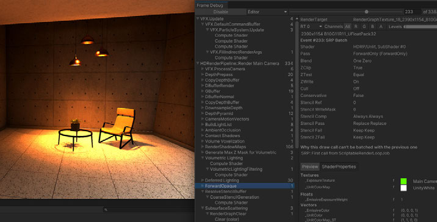
VI: Frame Debugger (HDRP) — panel phải hiển thị "Why this draw call can't be batched with the previous one: SRP: First call from ScriptableRenderContext". Đây là công cụ chính để chẩn đoán batching. / EN: The Frame Debugger showing exactly why a draw call couldn't be batched with the previous one.
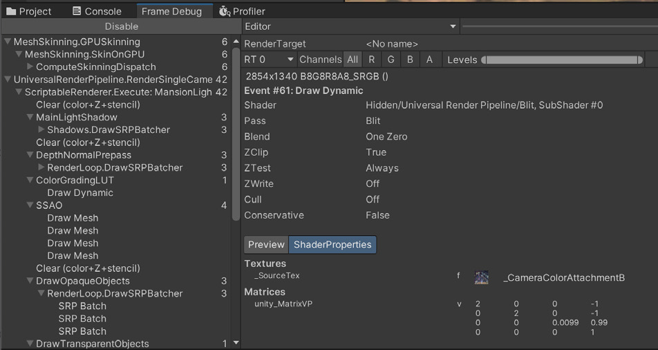
VI: Frame Debugger trên một scene URP — cây bên trái phơi bày TOÀN BỘ thứ tự pass: MeshSkinning.GPUSkinning → MainLightShadow (Shadows.DrawSRPBatcher) → DepthNormalPrepass → ColorGradingLUT → SSAO → DrawOpaqueObjects (3× SRP Batch) → DrawTransparentObjects. Panel phải cho biết render target 2854×1340 B8G8R8A8_SRGB và trạng thái đầy đủ của event (Blend One Zero, ZTest Always, ZWrite Off, Cull Off). / EN: The Frame Debugger on a URP scene, exposing the full pass order and the complete GPU state of the selected event.
👉 Đây chính là "GPU state" ở §2.1 hiện hình: mỗi dòng bên phải (Blend, ZTest, ZWrite, Cull, Textures, Matrices) là một phần của khối state mà driver phải nạp trước draw call. / EN: This is the "GPU state" from §2.1 made visible.
📊 Rendering Statistics — bấm nút Stats góc trên phải Game view. Cửa sổ này hiển thị thông tin render thời gian thực trong Play mode:
- FPS — Frames per second
- CPU Main — tổng thời gian xử lý một frame (và cập nhật Editor cho mọi cửa sổ)
- CPU Render — tổng thời gian render một frame của Game view
- Batches — nhóm draw call được vẽ cùng nhau
- Tris / Verts — hình học mesh
- 🔑 SetPass calls — "số lần Unity PHẢI CHUYỂN shader pass để render các GameObject trên màn hình; MỖI pass có thể tạo thêm overhead CPU"
⚠️ Hai cảnh báo:
- "FPS trong Editor KHÔNG nhất thiết chuyển thành hiệu năng của build. Chúng tôi khuyến nghị profile BUILD để có kết quả chính xác nhất."
- "Frame time tính bằng mili-giây là metric CHÍNH XÁC HƠN frames per second khi benchmark" — đúng như Module 1 §1.
📊 Rendering Statistics — click the Stats button in the top right of the Game view. This shows real-time rendering information during Play mode:
- FPS — Frames per second
- CPU Main — total time to process one frame (and update the Editor for all windows)
- CPU Render — total time to render one frame of the Game view
- Batches — groups of draw calls to be drawn together
- Tris / Verts — mesh geometry
- 🔑 SetPass calls — "the number of times Unity MUST SWITCH shader passes to render the GameObjects on-screen; each pass can introduce EXTRA CPU overhead"
⚠️ Two warnings:
- "In-Editor fps does NOT necessarily translate to BUILD performance. We recommend that you profile your BUILD for the most accurate results."
- "Frame time in milliseconds is a MORE ACCURATE metric than frames per second when benchmarking" — exactly as in Module 1 §1.
10.2. ⚖️ Batches vs SetPass Calls — Khác biệt ÍT NGƯỜI BIẾT¶
🧭 Nguồn mới bổ sung ở audit lần 3: Unity Draw Call Batching: The Ultimate Guide — Ruben Torres Bonet, TheGameDev.Guru · Static Batching May Not Reduce Your Draw Calls — hai bài này giải thích phần "vì sao" mà tài liệu Unity chính thức bỏ qua.
"Có một chi tiết NHỎ mà ÍT lập trình viên biết. CÓ SỰ KHÁC BIỆT giữa metric Batches và SetPasses mà bạn thấy trong Profiler và cửa sổ Stats. Và sự khác biệt này có TÁC ĐỘNG KHỔNG LỒ.
🔹 BATCHES là thứ ta thường gọi là DRAW CALL. Đó là những LỆNH VẼ THUẦN TUÝ — vẽ object này ở đây, rồi vẽ object kia ở kia. Nó CHỦ YẾU là việc vẽ một object với render state TOÀN CỤC HIỆN TẠI: cùng shader, tham số tương tự.
🔸 SETPASSES thì mô tả một thao tác ĐẮT ĐỎ HƠN: THAY ĐỔI MATERIAL. Đổi material là ĐẮT vì ta PHẢI THIẾT LẬP một render state MỚI. Điều này bao gồm tham số shader và setting pipeline như alpha blending, Z testing, Z writing…"
👉 Đây chính là "GPU state" ở §2.1 được đo bằng một con số cụ thể. Batches = số lệnh vẽ · SetPasses = số lần nạp lại khối state.
"There's a LITTLE DETAIL few developers know of. There's a DIFFERENCE between the Batches and SetPasses metrics you see in the profiler and stats window. But this difference has a HUGE IMPACT.
🔹 BATCHES are what we usually describe as DRAW CALLS. Those are PLAIN DRAW COMMANDS — draw this object here and then this other one there. This is mostly about drawing an object with the CURRENT GLOBAL RENDER STATE: same shader, similar parameters.
🔸 SETPASSES, however, describe a MORE EXPENSIVE operation: MATERIAL CHANGES. Changing a material is expensive because we have to SET A NEW RENDER STATE. This includes shader parameters and pipeline settings, such as alpha blending, Z testing, Z writing…"
👉 This is exactly the "GPU state" from §2.1 expressed as a concrete number. Batches = draw commands · SetPasses = state reloads.
📊 Bốn kịch bản với BA cái ghế dùng CHUNG mesh / Four scenarios with THREE chairs sharing the same mesh
| 💀 "You're Screwed" | 💀 "You're Still Screwed" | 🙂 "Getting Better" | 🏆 "Kicking Ass" | |
|---|---|---|---|---|
| Batching Setting | Disabled | Enabled | Disabled | Enabled |
| Material Setup | Riêng (×3) Individual (×3) |
Riêng (×3) Individual (×3) |
DÙNG CHUNG (×1) Shared (×1) |
DÙNG CHUNG (×1) Shared (×1) |
| Draw Events | SetPass(ghế 1) → Draw(1) SetPass(ghế 2) → Draw(2) SetPass(ghế 3) → Draw(3) |
SetPass(ghế 1) → Draw(1) SetPass(ghế 2) → Draw(2) SetPass(ghế 3) → Draw(3) |
SetPass(material ghế) → Draw(1) → Draw(2) → Draw(3) |
SetPass(material ghế) → Draw(1+2+3) |
| SetPasses | 3 | 3 | ✅ 1 | ✅ 1 |
| Batches (D.C.) | 3 | 3 | 3 | 🏆 1 |
| Hiệu năng | Tệ nhất | Tệ nhất | Tốt | 🏆 Tốt nhất |
🔑 Đọc bảng này ĐÚNG cách — đây là bài học quan trọng nhất về batching
"Kịch bản 1 và 2 GIỐNG NHAU: material KHÁC NHAU làm SetPass count TĂNG VỌT. Và chính chúng gây tác động hiệu năng TỆ NHẤT lên render thread. Batching là BẤT KHẢ THI, vì batching ĐÒI HỎI material GIỐNG HỆT NHAU.
💡 Kịch bản 3 hé lộ tia sáng: DÙNG CHUNG MATERIAL tạo ra TẤT CẢ khác biệt. Có một material duy nhất GIẢM SetPass count xuống 1, mang lại mức tăng hiệu năng ĐÁNG KINH NGẠC. Đúng, ta vẫn còn 3 draw call — NHƯNG CHÚNG RẤT RẺ."
🎯 Hệ quả thực chiến — thứ tự ưu tiên khi tối ưu:
- ƯU TIÊN 1 — Gộp/dùng chung MATERIAL ⇒ kéo SetPass từ 3 xuống 1 (bước có lợi NHẤT, làm được NGAY cả khi batching tắt)
- ƯU TIÊN 2 — Bật batching ⇒ kéo Batches từ 3 xuống 1
⚠️ Làm ngược thứ tự là vô ích: kịch bản 2 (bật batching + material riêng) cho kết quả Y HỆT kịch bản 1 — "tệ nhất". Bật batching mà KHÔNG dùng chung material thì KHÔNG có tác dụng gì cả.
"The first and second scenarios are similar: DIFFERENT MATERIALS skyrocket our SetPass count. And those have the WORST performance hit in the render thread. Batching is NOT POSSIBLE, as batching REQUIRES using IDENTICAL materials.
💡 However, we see a hint of light with the third scenario. SHARING MATERIALS makes ALL the difference. Having a unique material REDUCES the SetPass count to 1, which gives you an INCREDIBLE performance boost. Sure, we still have three draw calls, BUT THOSE ARE VERY CHEAP."
🎯 The practical consequence — optimization priority order:
- PRIORITY 1 — Merge/share MATERIALS ⇒ drops SetPass from 3 to 1 (the HIGHEST-value step, and it works even with batching off)
- PRIORITY 2 — Enable batching ⇒ drops Batches from 3 to 1
⚠️ Doing it in the reverse order is pointless: scenario 2 (batching on + individual materials) gives the EXACT SAME result as scenario 1 — "worst". Enabling batching WITHOUT sharing materials achieves NOTHING.
10.3. 🧭 Cây quyết định — Đếm draw call KHÔNG PHẢI là tìm bottleneck¶
"Trước khi lao vào chống draw call, ta cần đúng công cụ để ĐO chúng. Nhưng trước hết, hãy tránh cái bẫy kinh điển: ĐẾM draw call KHÔNG PHẢI là chuyện GIỐNG với việc TÌM ra bottleneck của bạn."
Cây quyết định — dùng TRƯỚC KHI bạn ngồi dựng atlas lúc 3 giờ sáng:
- ❓ Bạn CPU-bound hay GPU-bound? Mở Profiler. "NẾU CPU chủ yếu đang CHỜ GPU, việc cạo bớt draw call sẽ KHÔNG cứu bạn. Hãy sửa chi phí GPU (độ phức tạp shader, overdraw, lighting, post-processing)."
- ✅ NẾU bạn CPU-bound ở khâu rendering: "giờ draw call và SetPass call MỚI quan trọng. Đó là lúc batching có lời."
- 📊 Mở cửa sổ Stats (góc trên-phải Game view) và nhìn vào Batches và SetPass Calls
Đọc kết quả:
- 🔴 SetPass Calls CAO? — "Bạn đang ĐỔI material/shader/keyword QUÁ THƯỜNG XUYÊN. Hãy DÙNG CHUNG material, GỘP material, và trên URP/HDRP hãy dựa vào SRP Batcher (và NGỪNG làm nổ tung số shader variant)." → §14
- 🟠 Batches CAO nhưng SetPass Calls THẤP? — "Bạn chủ yếu đang trả overhead THEO TỪNG OBJECT. Giờ bạn đang ở thế giới của Static Batching, GPU Instancing, và (URP/HDRP) GPU Resident Drawer." → §10.4
🔍 Bước cuối: "mở Frame Debugger. ĐÂY là nơi SỰ THẬT nằm. Trong URP/HDRP bạn MUỐN thấy các mục như SRP Batch và Hybrid Batch Group. NẾU bạn KHÔNG thấy, bạn đã tìm ra thứ tiếp theo cần sửa."
"Before we dig into fighting draw calls, we need the proper tools to measure them. But first, let's avoid the classic trap: COUNTING draw calls is NOT the same thing as FINDING your bottleneck."
The decision tree — use it before you start building atlases at 3AM:
- ❓ Are you CPU-bound or GPU-bound? Open the Profiler. "IF the CPU is mostly WAITING on the GPU, shaving draw calls will NOT save you. Fix GPU cost (shader complexity, overdraw, lighting, post-processing)."
- ✅ IF you are CPU-bound on rendering: "now draw calls and SetPass calls MATTER. That is when batching PAYS OFF."
- 📊 Open the Stats window (top-right of the Game view) and look at Batches and SetPass Calls
Reading the result:
- 🔴 High SetPass Calls? — "You are CHANGING materials/shaders/keywords TOO OFTEN. SHARE materials, MERGE materials, and on URP/HDRP lean on SRP Batcher (and STOP exploding shader variants)." → §14
- 🟠 High Batches but LOW SetPass Calls? — "You are mostly paying PER-OBJECT overhead. Now you are in the world of Static Batching, GPU Instancing, and (URP/HDRP) GPU Resident Drawer." → §10.4
🔍 Final step: "open the Frame Debugger. This is where the TRUTH lives. In URP/HDRP you want to see entries like SRP Batch and Hybrid Batch Group. IF you do NOT, you have already found the NEXT thing to fix."
🚨 Static Batching có thể KHÔNG giảm draw call — và điều đó VẪN OK
"Static batching sẽ KHÔNG NHẤT THIẾT giảm số draw call, NGAY CẢ KHI bạn thoả mãn MỌI yêu cầu. Đó là do CÁCH static batching hoạt động BÊN TRONG."
🔬 Cơ chế — hai buffer:
- Vertex buffer: chứa thuộc tính như position, normal, color, UV…
- Index buffer: cho phép ta CHỌN những vertex CỤ THỂ nào sẽ dùng từ vertex buffer khi render
🔑 Để vẽ danh sách object này, Unity PHẢI CHỈ ĐỊNH một DẢI (range) hoặc TẬP CON các phần tử trong hai buffer đó. Nếu không ta sẽ vẽ TẤT CẢ.
💀 Và NẾU các phần tử khác nhau nằm ở những VÙNG KHÔNG LIÊN TIẾP của buffer đó — vấn đề đấy — vì khi đó ta PHẢI vẽ NHIỀU LẦN, mỗi lần chỉ định một vùng khác nhau của buffer.
👉 ĐÂY là lý do đôi khi static batching KHÔNG giảm số draw call — vì ta cần vẽ geometry nằm ở các vùng KHÁC NHAU của index buffer mà KHÔNG thể vẽ liên tiếp."
✅ Nhưng đó KHÔNG phải vấn đề — và đây mới là điểm cốt lõi:
"Trông có vẻ như vấn đề vì ta có nhiều draw call hơn cần thiết. Nhưng mấu chốt là: TA VẪN ĐANG VẼ TỪ CÙNG MỘT BUFFER. Do đó ta KHÔNG THAY ĐỔI GPU STATE — và ĐÓ MỚI LÀ THỨ THỰC SỰ ĐẮT.
👛 Ví von: công sức là ở việc RÚT VÍ ra khỏi túi và MỞ ngăn đựng xu. Một khi đã mở, việc lấy đồng 2 euro hay đồng 5 xu đều SIÊU DỄ. Với GPU cũng vậy: công sức BIND vào buffer ĐÃ ĐƯỢC BỎ RA RỒI."
⚠️ "Rõ ràng việc này sẽ KHÔNG hoạt động nếu geometry của bạn KHÔNG có sẵn trong level từ trước. Nếu bạn dựng level THỦ TỤC (procedural), bạn sẽ KHÔNG dùng static batching ngay được" → xem §10.5.
📝 Ghi chú raw của bạn khớp: "Static Batching occurs during application INITIALIZATION, whereas Dynamic Batching takes place at RUNTIME" — batch tĩnh được LẮP RÁP một lần lúc nạp, nên nó KHÔNG tốn CPU mỗi frame như dynamic batching.
"Static batching will NOT necessarily reduce the number of draw calls, EVEN IF you fulfill ALL the requirements. This is because of the way that static batching internally works."
🔬 The mechanism — two buffers:
- Vertex buffers: with attributes like position, normal, color, UVs…
- Index buffers: this buffer lets us PICK which SPECIFIC vertices to use from the vertex buffers while rendering
🔑 In order for Unity to draw this list of objects, Unity MUST SPECIFY a RANGE or a SUBSET of elements within these two buffers to draw. Otherwise we would draw everything.
💀 And IF different elements are in NON-CONSECUTIVE REGIONS of that buffer, well, that's a problem, because then we have to draw MULTIPLE TIMES specifying different regions of this buffer.
👉 THIS is why sometimes static batching does NOT reduce the number of draw calls — because we need to draw geometry that exists within DIFFERENT AREAS of the index buffer that we CANNOT draw consecutively."
✅ But that is NOT a problem — and here is the core insight:
"It may LOOK like [a problem] because hey, we have more draw calls than we need. But the key is this: WE ARE STILL DRAWING FROM THE SAME BUFFER. Therefore we are NOT CHANGING THE GPU STATE, which is what is ACTUALLY EXPENSIVE.
👛 The analogy: the effort is TAKING THE WALLET out of your pants and OPENING the coins compartment. Once it is open, taking the two-euro coin or the five-cent coin is SUPER EASY. Same with GPUs: the effort of BINDING to this buffer HAS ALREADY BEEN PUT."
⚠️ "Obviously, this is NOT going to work if your geometry is NOT here on the level beforehand. So if I just design my level PROCEDURALLY you're NOT going to be able to use static batching out of the box" → see §10.5.
📝 Your raw note matches: "Static Batching occurs during application INITIALIZATION, whereas Dynamic Batching takes place at RUNTIME" — a static batch is ASSEMBLED ONCE at load, so it does NOT cost CPU every frame the way dynamic batching does.
10.4. 🖥️ GPU Resident Drawer — Để GPU lo phần việc buồn tẻ¶
"Nếu SRP Batcher là 'cú giảm thuế cho render thread', thì GPU Resident Drawer là nút 'thôi, để GPU lo phần việc BUỒN TẺ'.
🔑 Nó dùng API
BatchRendererGroupcủa Unity BÊN DƯỚI để vẽ RẤT NHIỀU GameObject bằng GPU instancing, đồng thời GIẢI PHÓNG thời gian CPU."
✅ Khi nào NÊN dùng:
- "Tôi có CỰC NHIỀU mesh GIỐNG NHAU (props, tán lá, đá, mảnh module)"
- "Tôi đang CPU-bound ở khâu rendering và số draw call CAO"
⚠️ Điều kiện tiên quyết & cạm bẫy:
- Đòi hỏi graphics API và nền tảng có hỗ trợ COMPUTE SHADER — URP loại trừ RÕ RÀNG OpenGL ES
- Trong URP nó ĐÒI HỎI rendering path
Forward+ - ⏱️ Thời gian BUILD có thể TĂNG vì Unity biên dịch thêm shader variant của
BatchRendererGroup - Object phải tương thích: MeshRenderer + shader hỗ trợ DOTS instancing + 🚨 KHÔNG dùng
MaterialPropertyBlock
🚨 Lưu ý quan trọng: yêu cầu "KHÔNG MaterialPropertyBlock" MÂU THUẪN trực tiếp với lời khuyên ở §10 (dùng MaterialPropertyBlock thay cho .material). Bạn phải CHỌN MỘT trong hai con đường — đây là ví dụ điển hình cho việc "tối ưu KHÔNG cộng dồn được".
▶️ Cách bật (URP):
Project Settings > Graphics→ BatchRendererGroup Variants =Keep All- URP Asset → bật SRP Batcher, rồi đặt GPU Resident Drawer =
Instanced Drawing - Universal Renderer → Rendering Path =
Forward+
▶️ Cách bật (HDRP): Project Settings > Graphics → BatchRendererGroup Variants = Keep All; HDRP Asset → GPU Resident Drawer = Instanced Drawing
🔍 Xác minh nó ĐANG chạy: mở Frame Debugger và tìm draw call tên Hybrid Batch Group.
💡 Hai mẹo thực chiến:
- 🤯 "Unity thậm chí ĐỀ XUẤT TẮT Static Batching để tăng tốc việc này (vâng, thật đấy)" — hai hệ thống này KHÔNG chơi chung được với nhau
- Nếu cần LOẠI TRỪ một object cụ thể, thêm component
Disallow GPU Driven Rendering
"If SRP Batcher is the 'render thread tax cut', then GPU Resident Drawer is the 'okay, let the GPU do the BORING PART' button.
🔑 It uses Unity's
BatchRendererGroupAPI UNDER THE HOOD to draw LOTS of GameObjects with GPU instancing, while FREEING UP CPU time."
✅ When to reach for it:
- "I have TONS of the SAME MESH (props, foliage, rocks, modular pieces)"
- "I'm CPU-bound on rendering and the draw call count is HIGH"
⚠️ Prerequisites / gotchas:
- Requires graphics APIs and platforms that support COMPUTE SHADERS — URP explicitly EXCLUDES OpenGL ES
- In URP it REQUIRES the
Forward+rendering path - ⏱️ Build times can GO UP because Unity compiles extra
BatchRendererGroupshader variants - Your objects must be compatible: MeshRenderer + a shader supporting DOTS instancing + 🚨 NO
MaterialPropertyBlock
🚨 Important note: the "no MaterialPropertyBlock" requirement DIRECTLY CONFLICTS with the advice in §10 (use MaterialPropertyBlock instead of .material). You must CHOOSE ONE of the two paths — a textbook example of optimizations that DON'T STACK.
▶️ Enable it (URP):
Project Settings > Graphics→ BatchRendererGroup Variants =Keep All- URP Asset → enable SRP Batcher, then set GPU Resident Drawer =
Instanced Drawing - Universal Renderer → Rendering Path =
Forward+
▶️ Enable it (HDRP): Project Settings > Graphics → BatchRendererGroup Variants = Keep All; HDRP Asset → GPU Resident Drawer = Instanced Drawing
🔍 Verify it's working: open the Frame Debugger and look for draw calls named Hybrid Batch Group.
💡 Two practical tips:
- 🤯 "Unity even suggests DISABLING Static Batching to speed this up (yes, really)" — the two systems DON'T play together
- If a specific object should be EXCLUDED, add the
Disallow GPU Driven Renderingcomponent
10.5. 🔧 Run-Time Batching API — Gộp mesh LÚC CHẠY¶
Vấn đề mà API này giải quyết — ví dụ chiếc xe đua:
"Giả sử bạn đang lái một chiếc xe. Bên trong có ghế, tay nắm, kính chắn gió và tất cả cốc cà phê bạn tích luỹ qua thời gian. Bạn TUỲ BIẾN những thứ này TRƯỚC KHI cuộc đua bắt đầu.
🔑 Bản thân chiếc xe là ĐỘNG. Nhưng MỌI bộ phận bên trong KHÔNG di chuyển của nó? Chúng có thể coi là TĨNH TƯƠNG ĐỐI so với object xe. Kính chắn gió LUÔN ở cùng một chỗ trong xe.
💀 Tuy vậy, Unity coi TẤT CẢ những mảnh này là ĐỘNG. Đó là lý do static batching KHÔNG hoạt động trong tình huống này.
✅ Dù vậy, ta VẪN có thể lợi dụng các API static batching để TẠO những batch này THỦ CÔNG."
HAI API:
StaticBatchingUtility.Combine— "Hàm này nhận vào một GameObject GỐC và sẽ DUYỆT QUA TẤT CẢ con của nó rồi GỘP geometry của chúng thành MỘT KHỐI LỚN duy nhất."
🚨 "Một yêu cầu DỄ QUÊN: import settings của MỌI sub-mesh cần batch PHẢI cho phép CPU read/write."Mesh.CombineMeshes— "Hàm này nhận GIÁN TIẾP một DANH SÁCH mesh và tạo ra một mesh ĐÃ GỘP. Bạn sau đó gán mesh đó cho một mesh filter và xong."
👉 Đây chính là lời giải cho vấn đề "level dựng THỦ TỤC không dùng static batching được" nêu ở §10.3, và cũng khớp ghi chú raw của bạn: "combine nhiều mesh nhỏ thành mesh lớn".
The problem this API solves — the race car example:
"Let's say you're driving a car. In the interior you see several elements such as the seats, the handles, the windshield and all the coffee mugs you accumulated over time. You customize these elements BEFORE the race starts.
🔑 The car itself is DYNAMIC. But all its NON-MOVING inner parts? They can be considered STATIC RELATIVE to the car object. The windshield will ALWAYS remain at the same place within the car.
💀 Yet, Unity considers ALL these pieces to be DYNAMIC. That's why static batching WON'T work in this situation.
✅ Still, we can profit from the static batching APIs to create these batches MANUALLY."
The TWO APIs:
StaticBatchingUtility.Combine— "This function takes a ROOT game object and will ITERATE over ALL its children and MERGE their geometry into a BIG SINGLE CHUNK."
🚨 "One requirement that is EASY TO FORGET is that the import settings of ALL sub-meshes to batch MUST allow CPU read/write."Mesh.CombineMeshes— "This function indirectly takes a LIST of meshes and creates a COMBINED mesh. You can then assign that mesh to a mesh filter and you're good to go."
👉 This is the answer to the "procedurally generated levels can't use static batching" problem raised in §10.3, and it also matches your raw note: "combine many small meshes into one large mesh".
// Cách 1 — StaticBatchingUtility: gộp toàn bộ con của một root lúc RUNTIME
// Option 1 — StaticBatchingUtility: combine all children of a root at RUNTIME
using UnityEngine;
public class RuntimeStaticBatcher : MonoBehaviour
{
// Gọi SAU KHI đã sinh xong level thủ tục / sau khi người chơi tuỳ biến xong
// Call AFTER procedural level generation / after the player finishes customizing
public void CombineChildren()
{
// ⚠️ MỌI sub-mesh phải bật Read/Write Enabled trong import settings
// ⚠️ EVERY sub-mesh must have Read/Write Enabled in its import settings
StaticBatchingUtility.Combine(gameObject);
}
}
// Cách 2 — Mesh.CombineMeshes: kiểm soát chi tiết hơn, tự tạo mesh kết quả
// Option 2 — Mesh.CombineMeshes: finer control, you build the resulting mesh
using UnityEngine;
public class MeshCombiner : MonoBehaviour
{
public void Combine()
{
var filters = GetComponentsInChildren<MeshFilter>();
var combine = new CombineInstance[filters.Length];
for (int i = 0; i < filters.Length; i++)
{
combine[i].mesh = filters[i].sharedMesh;
combine[i].transform = filters[i].transform.localToWorldMatrix;
filters[i].gameObject.SetActive(false); // ẩn bản gốc
}
var combined = new Mesh();
// true = gộp thành MỘT submesh duy nhất (chỉ đúng khi CÙNG material)
// Với mesh > 65535 vertex, nhớ đặt indexFormat = UInt32
combined.indexFormat = UnityEngine.Rendering.IndexFormat.UInt32;
combined.CombineMeshes(combine, mergeSubMeshes: true);
var mf = gameObject.AddComponent<MeshFilter>();
mf.sharedMesh = combined;
gameObject.AddComponent<MeshRenderer>().sharedMaterial = /* material chung */ null;
gameObject.SetActive(true);
}
}
10.6. 📋 Chín điều kiện KHIẾN Dynamic Batching THẤT BẠI¶
Bảng ở §10 chỉ nêu giới hạn vertex. Dưới đây là danh sách ĐẦY ĐỦ theo tài liệu Unity — mỗi dòng là một lý do khiến bạn bật dynamic batching mà KHÔNG thấy tác dụng.
The table in §10 only lists the vertex limits. Below is the COMPLETE list per Unity's documentation — each row is a reason you enabled dynamic batching and saw NO effect.
| # | Điều kiện phá vỡ batching / Batch-breaking condition |
|---|---|
| ① | "Batching dynamic GameObjects has certain overhead PER VERTEX, so batching is applied ONLY to Meshes containing FEWER THAN 900 vertex attributes in total." |
| ② | "If your Shader is using Vertex Position, Normal, and single UV, then you can batch up to 300 verts. If your Shader is using Vertex Position, Normal, UV0, UV1, and Tangent, then you can ONLY batch 180 verts." ⚠️ "Note: attribute count limit might be changed in future." |
| ③ | "GameObjects are NOT batched if they contain MIRRORING on the transform" — ví dụ object A scale +1 và object B scale −1 KHÔNG batch chung được |
| ④ | "Using DIFFERENT MATERIAL INSTANCES causes GameObjects NOT to batch together, EVEN IF they are essentially the same." 💡 Ngoại lệ: shadow caster rendering |
| ⑤ | "GameObjects with LIGHTMAPS have additional renderer parameters: lightmap index and offset/scale into the lightmap. Generally, dynamic lightmapped GameObjects should point to EXACTLY THE SAME lightmap location to be batched." |
| ⑥ | "MULTI-PASS Shaders BREAK batching." |
| ⑦ | "Almost ALL Unity Shaders support several Lights in forward rendering, effectively doing ADDITIONAL PASSES for them. The draw calls for 'additional per-pixel lights' are NOT batched." 👉 nối với giới hạn đèn ở §16 |
| ⑧ | "The Legacy Deferred (light pre-pass) rendering path has dynamic batching DISABLED because it has to draw GameObjects TWICE." 👉 xem §9 |
| ⑨ | "Skinned Meshes, Cloth, and other types of rendering components are NOT batched." 👉 đây chính là lý do tồn tại của §12 Animation Instancing và §22.3 BakeMesh |
💡 Ba mẹo bổ trợ từ cùng nguồn
- 🗺️ Texture Atlas — "Vì batching hoạt động DỰA TRÊN material giống nhau, bạn có thể GỘP nhiều object lại nếu chúng dùng CHUNG một texture LỚN. NHIỀU texture độ phân giải cao sẽ LÀM CHẬM hiệu năng." Kỹ thuật này được đẩy tới cực hạn trong Rage và Doom với Megatexture và virtual texturing.
- 💡 Giả lập đèn bằng EMISSIVE MAP — "Ví dụ bảng điều khiển máy bay có RẤT NHIỀU đèn nhỏ. Tạo một point light cho MỖI cái sẽ CỰC KỲ đắt, nhưng dùng một loạt vùng emissive trên MỘT texture map lớn vừa phục vụ cùng mục đích vừa HIỆU NĂNG HƠN NHIỀU." 👉 khớp với lời khuyên "FAKE the lighting using emissive materials" ở §34.3
- 🖼️ IMPOSTER — dạng LOD cực đoan — "Imposter là dạng LOD CỰC ĐOAN và đã được dùng từ RẤT LÂU. Nếu bạn từng chơi game cũ, có thể bạn đã thấy đám đông được render bằng billboard mesh có animation, hay cây cối chỉ là ẢNH. Tại sao phải render một mesh low-poly khi bạn có thể render một MẶT PHẲNG?" 👉 mở rộng của §22 LOD
- 🗺️ Texture Atlas — "Since batching works BASED ON like materials, you can COMBINE many objects together if they SHARE ONE BIG TEXTURE. Multiple high-resolution textures will SLOW DOWN performance." This technique was taken to the extreme in Rage and Doom with Megatextures and virtual texturing.
- 💡 Fake lights with EMISSIVE MAPS — "An example would be the dashboard of a plane that has MANY SMALL LIGHTS. Creating a point light for EACH of these would be INCREDIBLY EXPENSIVE, but using a series of emissive areas on ONE BIG texture map not only serves the SAME PURPOSE but is also MUCH MORE PERFORMANT." 👉 matches the "FAKE the lighting using emissive materials" advice in §34.3
- 🖼️ IMPOSTERS — an extreme form of LOD — "Imposters are an EXTREME form of LODs and have been used for QUITE SOME TIME. If you've ever played an older game you may have noticed crowds rendered using ANIMATED BILLBOARD MESHES. Trees that just appeared as IMAGES. Why render out a low poly mesh when you can render out a FLAT PLANE?" 👉 an extension of §22 LOD
11. GPU Instancing — Chi tiết từ Unity Manual¶
🔑 Định nghĩa chính thức: "GPU instancing là phương pháp tối ưu draw call dùng MỘT draw call DUY NHẤT để render NHIỀU GameObject dùng CÙNG mesh và CÙNG material. Nó tăng tốc rendering khi bạn vẽ những thứ xuất hiện nhiều lần trong scene — ví dụ cây cối hoặc bụi rậm."
GPU instancing là chức năng DỰNG SẴN của GPU. Mỗi bản sao của mesh gọi là một INSTANCE. Mỗi instance có thể có thuộc tính KHÁC NHAU — như màu sắc hay scale.
⚖️ Cảnh báo về lợi ích — rất quan trọng:
"Lợi ích hiệu năng của GPU instancing PHỤ THUỘC vào nền tảng và GPU. Với MỖI draw call, Unity phải THU THẬP, KẾT HỢP và UPLOAD thuộc tính từ nhiều vị trí bộ nhớ khác nhau, nên overhead hiệu năng CÓ THỂ LỚN HƠN lợi ích.
💡 Lợi ích hiệu năng TỐT HƠN trên nền tảng MOBILE so với desktop."
🔑 The official definition: "GPU instancing is a draw call optimization method that uses a SINGLE draw call to render MULTIPLE GameObjects that use the SAME mesh and material. This speeds up rendering when you draw things that appear multiple times in a scene, for example trees or bushes."
GPU instancing is a BUILT-IN functionality of GPUs. Each copy of the mesh is called an INSTANCE. Each instance can have DIFFERENT properties — such as color or scale.
⚖️ The benefits caveat — very important:
"The performance benefits of GPU instancing DEPEND on the platform and the GPU. For EACH draw call, Unity has to COLLECT, COMBINE, and UPLOAD properties from various memory locations, so the performance overhead MIGHT OUTWEIGH the benefits.
💡 The performance benefits are BETTER on MOBILE platforms than on desktop platforms."
11.1. ⚠️ Bảng tương thích — Ba giới hạn phải biết¶
| Khía cạnh | Giới hạn / Limitation |
|---|---|
| 🚨 URP / HDRP + custom shader | GPU instancing CHỈ hoạt động với custom shader NẾU bạn TẮT SRP Batcher — hoặc làm shader KHÔNG tương thích với SRP Batcher. ⚖️ Nghĩa là bạn phải CHỌN một trong hai |
| 🚨 Built-in RP (BiRP) | GPU Instancing KHÔNG hoạt động với shader Shader Graph |
| 🚨 Skinned Mesh | Mesh Renderer được hỗ trợ · Skinned Mesh Renderer KHÔNG được hỗ trợ → xem §12 (Animation Instancing) |
✅ Tương thích Indirect Lighting — GPU instancing hỗ trợ:
- GameObject ĐỘNG nhận lighting từ Light Probes
- GameObject TĨNH nhận lighting từ lightmap — nếu chúng bật Contribute GI trong Static Editor Flags, VÀ chúng bake vào CÙNG một lightmap texture
- GameObject dùng Light Probe Proxy Volume (LPPV) — ⚠️ bạn PHẢI bake LPPV cho TOÀN BỘ không gian chứa mọi instance
✅ Mesh & Shader tương thích:
- Mesh Renderer trong scene
- Mesh render bằng script qua API hỗ trợ GPU instancing, như
Graphics.RenderMeshInstanced - Hầu hết prebuilt material — shader tương thích có property Enable GPU Instancing
- Shader Graph material — NẾU bạn dùng URP hoặc HDRP
✅ Indirect lighting compatibility — GPU instancing supports:
- DYNAMIC GameObjects that get lighting from Light Probes
- STATIC GameObjects that get lighting from lightmaps — if they have Contribute GI enabled in their Static Editor Flags, AND they bake to the SAME lightmap texture
- GameObjects using Light Probe Proxy Volumes (LPPV) — ⚠️ you MUST bake the LPPV for the ENTIRE space that contains ALL the instances
✅ Compatible meshes & shaders:
- Mesh Renderer components in your scene
- Meshes rendered in script using APIs that support GPU instancing, such as
Graphics.RenderMeshInstanced - Most prebuilt materials — compatible shaders have an Enable GPU Instancing property
- Shader Graph materials — IF you use URP or HDRP
12. 🦴 Animation Instancing — Instancing cho SkinnedMeshRenderer¶
Về nguồn của mục này
VI: Bài blog gốc blog.unity.com/technology/animation-instancing-instancing-for-skinnedmeshrenderer trả 404 ở MỌI biến thể URL (Unity đã gỡ; Wayback Machine cũng không truy cập được trong phiên này). Nội dung dưới đây khôi phục từ README của repo chính thức Unity-Technologies/Animation-Instancing kết hợp đoạn trích NGUYÊN VĂN của bài blog được lưu trong raw-optimization-data.txt.
Bối cảnh — nguyên văn từ README repo:
"Là developer, chúng ta luôn để ý tới hiệu năng, cả về CPU lẫn GPU. Duy trì hiệu năng tốt trở nên KHÓ HƠN khi scene LỚN HƠN và PHỨC TẠP HƠN — đặc biệt khi ta thêm NGÀY CÀNG NHIỀU nhân vật.
Tôi và đồng nghiệp ở Thượng Hải gặp vấn đề này thường xuyên khi hỗ trợ khách hàng, nên chúng tôi quyết định dành vài tuần cho một dự án nhằm cải thiện hiệu năng khi instancing nhân vật. Chúng tôi gọi kỹ thuật kết quả là Animation Instancing."
🚨 VẤN ĐỀ — đoạn trích nguyên văn từ bài blog (lưu trong file raw):
"Với SkinnedMeshRenderer (ví dụ nhân vật), chúng ta KHÔNG THỂ dùng instancing, vì việc skinning được tính TRÊN CPU, và submit lên GPU TỪNG CÁI MỘT.
Nhìn chung, chúng ta KHÔNG THỂ vẽ TẤT CẢ nhân vật qua MỘT lần submission. Khi có RẤT NHIỀU SkinnedMeshRenderer trong scene, điều này dẫn tới RẤT NHIỀU draw call và tính toán animation."
✅ GIẢI PHÁP — cơ chế (theo ghi chú raw):
"Tổng hợp velocity pos, velocity angle, trigger ⇒ VertexCache của các skeleton (cùng loại hoặc khác loại) ⇒ vertex gửi MỘT LẦN qua GPU."
🔑 Diễn giải: Thay vì để CPU tính skinning cho từng nhân vật rồi submit riêng lẻ, kỹ thuật này bake dữ liệu animation vào một VertexCache (thường là texture chứa vị trí xương theo từng frame), rồi GPU tự đọc cache đó và tự làm skinning ⇒ mọi nhân vật cùng loại được vẽ trong MỘT draw call.
The context — verbatim from the repo README:
"As developers, we're always aware of performance, both in terms of CPU and GPU. Maintaining good performance gets MORE CHALLENGING as scenes get LARGER and MORE COMPLEX — especially as we add MORE AND MORE characters.
Me and my colleague in Shanghai come across this problem often when helping customers, so we decided to dedicate a few weeks to a project aimed to improve performance when instancing characters. We call the resulting technique Animation Instancing."
🚨 THE PROBLEM — verbatim blog excerpt (preserved in the raw file):
"SkinnedMeshRenderer (for example characters) — we CAN'T use instancing, because the skinning is calculated ON THE CPU, and submitted to the GPU ONE BY ONE.
In general, we CAN'T draw ALL characters through ONE submission. When there are LOTS of SkinnedMeshRenderers in the scene, this results in LOTS of draw calls and animation calculations."
✅ THE SOLUTION — the mechanism (per the raw notes):
"Aggregate velocity pos, velocity angle, trigger ⇒ a VertexCache of the skeletons (same or different types) ⇒ vertices sent ONCE through the GPU."
🔑 Interpretation: Instead of the CPU computing skinning per character and submitting individually, the technique bakes animation data into a VertexCache (typically a texture holding per-frame bone positions), then the GPU reads that cache and performs the skinning itself ⇒ all characters of the same type are drawn in ONE draw call.
📦 Tính năng của package (nguyên văn README):
- Instancing SkinnedMeshRenderer
- Root motion
- Attachments (vật phẩm gắn lên nhân vật)
- LOD
- Hỗ trợ nền tảng mobile
- Culling
⚠️ "Cần ít nhất Unity 5.4."
⚠️ "Trước khi chạy example, bạn nên chọn menu Custom Editor → AssetBundle → BuildAssetBundle để build asset bundle."
🔧 Cách setup object mang Attachment:
- Mở menu generator → AnimationInstancing → Animation Generator
- Bật checkbox attachment
- Chọn file FBX được prefab tham chiếu
- Bật tên skeleton cần sinh ra
- Bấm nút Generate
📦 Package features (verbatim README):
- Instancing SkinnedMeshRenderer
- Root motion
- Attachments
- LOD
- Support mobile platform
- Culling
⚠️ "It needs at least Unity 5.4."
⚠️ "Before running the example, you should select menu Custom Editor → AssetBundle → BuildAssetBundle to build asset bundle."
🔧 How to setup the object which holds the attachment:
- Open the generator menu → AnimationInstancing → Animation Generator
- Enable the attachment checkbox
- Select the FBX referenced by the prefab
- Enable the skeleton's name to generate
- Press the Generate button
PHẦN D — SHADER & VARIANT¶
13. Tối ưu Shader Graph — 5 kỹ thuật¶
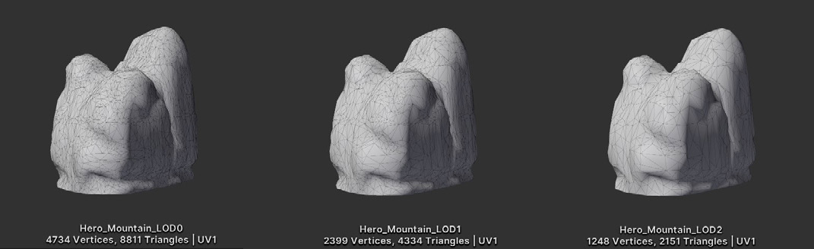
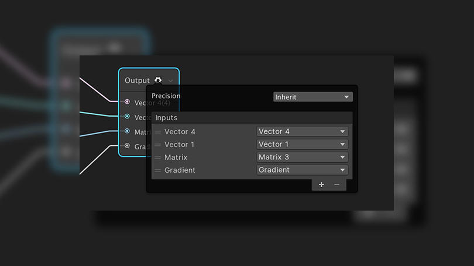
VI: Setting Precision trên node Shader Graph — mặc định Inherit, đổi được sang Single (float) hoặc Half (half). Đây chính là nơi áp dụng kỹ thuật ② dưới đây. / EN: The Precision setting on a Shader Graph node.
Shader Graph là giao diện trực quan để tạo shader, được CẢ HDRP và URP hỗ trợ. Dùng 150+ node trong hệ thống graph trực quan — hoặc tự tạo node riêng bằng API.
🔑 Cơ chế bên dưới: Shader Graph truyền vào backend của render pipeline. Kết quả cuối là một shader ShaderLab, về chức năng TƯƠNG TỰ shader viết tay bằng HLSL hoặc Cg.
⚠️ Nguyên tắc nền tảng: "Tối ưu Shader Graph tuân theo nhiều quy tắc GIỐNG như với Shader HLSL/Cg truyền thống. Shader Graph càng xử lý NHIỀU, nó càng ẢNH HƯỞNG tới hiệu năng ứng dụng."
🚨 Điều kiện tiên quyết — đọc kỹ:
"Nếu bạn đang CPU-BOUND, tối ưu shader sẽ KHÔNG cải thiện frame rate — nhưng có thể cải thiện tuổi thọ PIN cho nền tảng mobile."
👉 Nghĩa là: PHẢI chẩn đoán CPU-bound hay GPU-bound TRƯỚC (xem Module 1 §3). Chỉ khi GPU-bound thì 5 hướng dẫn dưới đây mới có tác dụng.
Shader Graph is a visual interface for shader creation, supported by BOTH HDRP and URP. Use the 150+ nodes in the visual graph system — or make your own custom nodes with the API.
🔑 The underlying mechanism: The Shader Graph passes into the render pipeline's backend. The final result is a ShaderLab shader, functionally SIMILAR to one written in HLSL or Cg.
⚠️ The founding principle: "Optimizing a Shader Graph follows many of the SAME rules that apply to traditional HLSL/Cg Shaders. The MORE processing your Shader Graph does, the MORE it will IMPACT the performance of your application."
🚨 The prerequisite — read carefully:
"If you are CPU-BOUND, optimizing your shaders WON'T improve frame rate — but may improve your BATTERY LIFE for mobile platforms."
👉 Meaning: you MUST diagnose CPU-bound vs GPU-bound FIRST (see Module 1 §3). Only when GPU-bound do the five guidelines below help.
| # | Kỹ thuật / Technique | Chi tiết |
|---|---|---|
| ① | Decimate your nodes Loại bỏ node thừa |
Gỡ node không dùng. ⚠️ "ĐỪNG đổi bất kỳ giá trị mặc định nào hay nối node trừ khi những thay đổi đó là CẦN THIẾT." ✅ Shader Graph tự động compile-out mọi tính năng không dùng. 💎 Khi có thể, BAKE giá trị vào TEXTURE — ví dụ thay vì dùng node để làm sáng texture, hãy áp độ sáng thêm vào chính texture asset |
| ② | Use a smaller data format Dùng định dạng dữ liệu nhỏ hơn |
Chuyển sang cấu trúc dữ liệu NHỎ HƠN khi có thể. Cân nhắc Vector2 thay vì Vector3 nếu không ảnh hưởng dự án. Cũng có thể GIẢM ĐỘ CHÍNH XÁC nếu tình huống cho phép — ví dụ half thay vì float (giảm precision ở Output node) |
| ③ | Reduce math operations Giảm phép toán |
"Thao tác shader chạy RẤT NHIỀU LẦN mỗi giây, nên hãy tối ưu mọi toán tử khi có thể." → Cố BLEND kết quả thay vì tạo NHÁNH LOGIC · Dùng hằng số · Kết hợp giá trị vô hướng TRƯỚC khi áp dụng vector · Chuyển mọi property KHÔNG cần xuất hiện trong Inspector thành in-line Node. 💡 "Tất cả những tăng tốc từng chút này đều có thể giúp frame budget của bạn" |
| ④ | Branch a preview Tách nhánh preview |
🔑 "Khi graph lớn hơn, nó có thể trở nên CHẬM HƠN để compile." ✅ Đơn giản hóa workflow bằng một nhánh RIÊNG, NHỎ HƠN chỉ chứa thao tác bạn muốn preview, rồi lặp nhanh hơn trên nhánh nhỏ này. 💎 Nếu nhánh KHÔNG nối vào master node, bạn AN TOÀN để lại nó trong graph — Unity gỡ bỏ node không ảnh hưởng output cuối lúc compile |
| ⑤ | Manually optimize Tối ưu thủ công |
"Kể cả khi bạn là graphics programmer giàu kinh nghiệm, bạn VẪN có thể dùng Shader Graph để đặt nền boilerplate code cho shader viết tay." → Chọn Shader Graph asset → Copy Shader từ context menu → tạo Shader HLSL/Cg mới → paste vào. ⚠️ Đây là thao tác MỘT CHIỀU, nhưng cho phép bạn vắt thêm hiệu năng bằng tối ưu thủ công |
Dọn Always Included Shaders
VI: "GỠ MỌI shader bạn KHÔNG dùng khỏi danh sách Always Included trong Graphics Settings (Edit > Project Settings > Graphics). Chỉ thêm vào đây những shader cần thiết cho vòng đời của ứng dụng."
EN: "Remove EVERY shader that you don't use from the Always Included list of shaders in the Graphics Settings (Edit > Project Settings > Graphics). Add shaders here needed for the lifetime of the application."
14. 🧬 Strip Shader Variants — Đọc Editor.log¶
Bạn dùng shader compilation pragma directive để compile shader khác nhau cho các nền tảng đích. Rồi dùng shader keyword (hoặc Shader Graph Keyword node) để tạo shader variant với tính năng bật/tắt.
⚖️ Đánh đổi: "Shader variant CÓ ÍCH cho tính năng đặc thù nền tảng nhưng LÀM TĂNG build time và kích thước file. Bạn có thể NGĂN shader variant khỏi được đưa vào build, NẾU bạn biết chúng KHÔNG cần thiết."
🔍 Cách chẩn đoán — parse Editor.log:
Tìm các dòng bắt đầu bằng "Compiled shader" và "Compressed shader".
You use shader compilation pragma directives to compile the shader differently for target platforms. Then use a shader keyword (or a Shader Graph Keyword node) to create shader variants with features enabled or disabled.
⚖️ The trade-off: "Shader variants can be USEFUL for platform-specific features but INCREASE build times and file size. You can PREVENT shader variants from being included in your build, IF you know they are NOT required."
🔍 How to diagnose — parse Editor.log:
Locate the lines that begin with "Compiled shader" and "Compressed shader".
# Ví dụ log NGUYÊN VĂN từ e-book — shader "TEST"
Compiled shader 'TEST Standard (Specular setup)' in 31.23s
d3d9 (total internal programs: 482, unique: 474)
d3d11 (total internal programs: 482, unique: 466)
metal (total internal programs: 482, unique: 480)
glcore (total internal programs: 482, unique: 454)
Compressed shader 'TEST Standard (Specular setup)' on d3d9 from 1.04MB to 0.14MB
Compressed shader 'TEST Standard (Specular setup)' on d3d11 from 1.39MB to 0.12MB
Compressed shader 'TEST Standard (Specular setup)' on metal from 2.56MB to 0.20MB
Compressed shader 'TEST Standard (Specular setup)' on glcore from 2.04MB to 0.15MB
📊 Ba điều log này nói cho bạn biết — phân tích nguyên văn
- 🚨 Shader này BÙNG NỔ thành 482 VARIANT do
#pragma multi_compilevàshader_feature. - 💾 Unity NÉN shader đưa vào game data xuống xấp xỉ tổng các kích thước đã nén: 0.14 + 0.12 + 0.20 + 0.15 = 0.61 MB.
- 🔑 LÚC RUNTIME, Unity GIỮ dữ liệu ĐÃ NÉN trong bộ nhớ (0.61 MB), trong khi dữ liệu cho graphics API HIỆN TẠI của bạn được GIẢI NÉN. Ví dụ, nếu API hiện tại là Metal, phần đó sẽ chiếm 2.56 MB.
👉 Đây là con số quan trọng: một shader duy nhất tốn 0.61 MB nén + 2.56 MB giải nén = ~3.2 MB runtime memory. Nhân với số shader trong dự án bạn.
✅ Quy trình khắc phục:
"Sau khi build, Project Auditor có thể parse
Editor.logđể hiển thị danh sách TẤT CẢ shader, shader keyword, và shader variant được compile vào dự án. Nó cũng có thể phân tíchPlayer.logSAU KHI game chạy — cho bạn thấy ứng dụng THỰC SỰ compile và dùng những variant nào lúc runtime.💎 Dùng thông tin này để xây dựng hệ thống SCRIPTABLE SHADER STRIPPING và giảm số variant. Việc này cải thiện build time, build size, VÀ runtime memory."
- 🚨 The shader EXPANDS into 482 VARIANTS due to
#pragma multi_compileandshader_feature. - 💾 Unity COMPRESSES the shader included in the game data to roughly the sum of the compressed sizes: 0.14 + 0.12 + 0.20 + 0.15 = 0.61 MB.
- 🔑 At RUNTIME, Unity KEEPS the COMPRESSED data in memory (0.61 MB), while the data for your CURRENT graphics API is UNCOMPRESSED. For example, if your current API was Metal, that would account for 2.56 MB.
👉 This is the number that matters: a single shader costs 0.61 MB compressed + 2.56 MB uncompressed = ~3.2 MB of runtime memory. Multiply by the number of shaders in your project.
✅ The remediation workflow:
"After a build, Project Auditor can parse the
Editor.logto display a list of ALL shaders, shader keywords, and shader variants compiled into a project. It can also analyze thePlayer.logAFTER the game is run — showing you what variants the application ACTUALLY compiled and used at runtime.💎 Employ this information to build a SCRIPTABLE SHADER STRIPPING system and reduce the number of variants. This can improve build times, build sizes, AND runtime memory usage."
// Scriptable shader stripping — loại bỏ variant KHÔNG cần lúc build
// Scriptable shader stripping — remove unneeded variants at build time
using System.Collections.Generic;
using UnityEditor;
using UnityEditor.Build;
using UnityEditor.Rendering;
using UnityEngine;
using UnityEngine.Rendering;
class ShaderVariantStripper : IPreprocessShaders
{
public int callbackOrder => 0;
// Keyword ta biết CHẮC CHẮN không dùng trong dự án
static readonly ShaderKeyword KwLightmapping = new ShaderKeyword("LIGHTMAP_ON");
static readonly ShaderKeyword KwDirectionalLM = new ShaderKeyword("DIRLIGHTMAP_COMBINED");
public void OnProcessShader(Shader shader, ShaderSnippetData snippet,
IList<ShaderCompilerData> data)
{
int before = data.Count;
// Duyệt NGƯỢC vì ta xóa phần tử trong lúc lặp
for (int i = data.Count - 1; i >= 0; --i)
{
var keywords = data[i].shaderKeywordSet;
// Ví dụ: dự án chỉ dùng realtime lighting ⇒ strip mọi variant lightmap
if (keywords.IsEnabled(KwLightmapping) || keywords.IsEnabled(KwDirectionalLM))
data.RemoveAt(i);
}
if (before != data.Count)
Debug.Log($"[Stripper] {shader.name} / {snippet.passName}: " +
$"{before} → {data.Count} variants");
}
}
15. 🎭 Stencil Buffer trong URP — Hiệu ứng nhìn xuyên vật thể¶
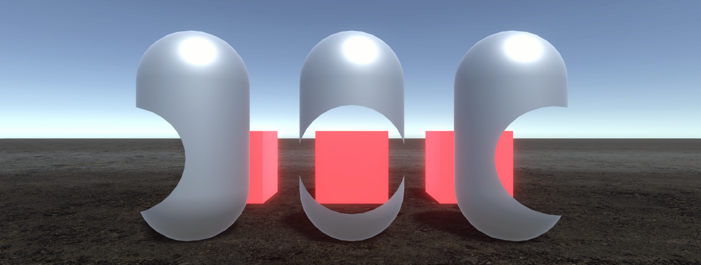
VI: Kết quả — quả cầu Mask "khoét" một lỗ trên viên nang, cho thấy khối lập phương đỏ phía sau. / EN: The result — the Mask sphere "cuts a hole" through the capsule, revealing the red cube behind it.
🔑 Vấn đề khởi điểm:
"Tính tới thời điểm viết bài, công cụ Shader Graph của Unity KHÔNG cho phép người dùng set Stencil Buffer trên shader. Chúng ta có thể lách qua bằng cách tạo một shader RẤT ĐƠN GIẢN rồi cấu hình các tùy chọn stencil buffer thông qua Forward Renderer của URP."
BƯỚC 1 — Tạo shader Mask tối giản:
🔑 The starting problem:
"As of this writing, Unity's Shader Graph tool doesn't allow users to set Stencil Buffers on a shader. We can get around this by creating a VERY SIMPLE shader and then configuring the stencil buffer options using the URP's Forward Renderer."
STEP 1 — Create the minimal Mask shader:
// Create > Shader > Unlit Shader, đặt tên "mask", thay TOÀN BỘ nội dung bằng:
Shader "Custom/Mask"
{
Properties{}
SubShader{
Tags {
"RenderType" = "Opaque" // để Mask render CÙNG các shader Opaque khác
}
Pass {
ZWrite Off // KHÔNG render pixel nào ⇒ ta KHÔNG THẤY mask
}
}
}
"Ta set RenderType = Opaque để Mask được render cùng các shader Opaque khác. ZWrite Off bảo renderer KHÔNG render pixel nào, nên ta sẽ KHÔNG NHÌN THẤY mask." → Chuột phải shader → Create → Material.
BƯỚC 2 — Setup Scene:
- Tạo 3D Cube tại
0, 0, 3 - Tạo 3D Capsule tại
0, 0, 0, đặt tên 'SeeThrough' - Đổi Layer của nó → Add Layer… → thêm 2 layer mới:
MaskvàSeeThrough - Gán Capsule vào layer
SeeThrough - Tạo 3D Sphere tại
0, 0, -1, đặt tên 'Mask', gán vào layerMask - Trong Mesh Renderer của nó, đổi material từ 'Lit' sang material mask của bạn
- Đổi Cast Shadows → 'Off'
"We set RenderType = Opaque so that our Mask will be rendered with other Opaque shaders. ZWrite Off tells the renderer to NOT render any pixels, so we won't SEE our mask." → Right-click the shader → Create → Material.
STEP 2 — Scene setup:
- Create a 3D Cube at
0, 0, 3 - Create a 3D Capsule at
0, 0, 0, name it 'SeeThrough' - Change its Layer → Add Layer… → add two new Layers:
MaskandSeeThrough - Assign the Capsule to the
SeeThroughlayer - Create a 3D Sphere at
0, 0, -1, name it 'Mask', assign it theMasklayer - Under its Mesh Renderer change the material from 'Lit' to your mask material
- Change Cast Shadows → 'Off'
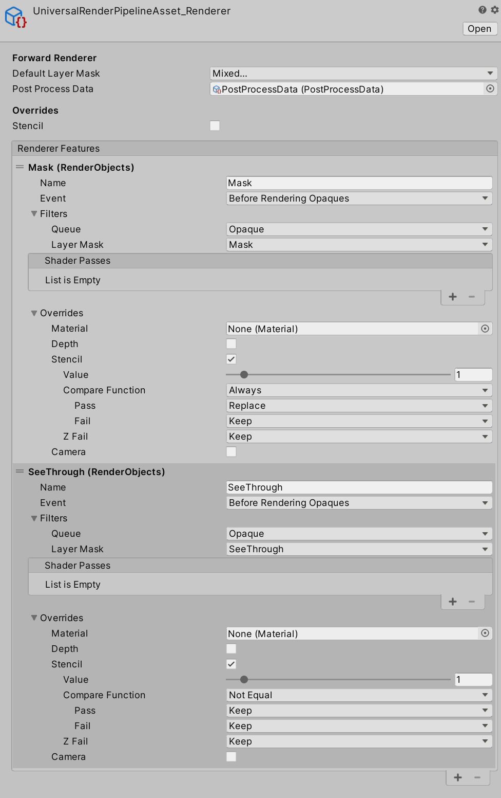
VI: Cấu hình hoàn chỉnh trên Forward Renderer — 2 Renderer Feature Mask và SeeThrough với setting Stencil khác nhau. / EN: The completed Forward Renderer configuration with two Render Objects features.
BƯỚC 3 — Cấu hình Stencil qua URP Forward Renderer
- Tìm Forward Renderer trong Project panel (mặc định tên
UniversalRenderPipelineAsset_Renderer) - Dưới Default Layer Mask, BỎ TICK
SeeThroughvàMask— ngăn renderer render 2 layer này - Thêm chúng lại bằng cách bấm + dưới Renderer Features → Render Objects (Experimental)
- Feature 1 — đặt tên
Mask:- Event → Before Rendering Opaques
- Layer Mask →
Mask - Tick Stencil: Value = 1 · Compare = Always · Pass = Replace
- Feature 2 — đặt tên
SeeThrough:- Event → Before Rendering Opaques
- Layer Mask →
SeeThrough - Tick Stencil: Value = 1 · Compare = NotEqual
⚠️ Bug cần biết: "Có thể có bug ngăn thay đổi của bạn được lưu — cụ thể ở các mục Renderer Features. Nếu bạn thêm renderer feature rồi SAVE SCENE, chúng sẽ hiện ra trong Project panel lồng dưới Renderer của bạn. Bấm vào từng cái sẽ cho phép cập nhật giá trị. Nếu vẫn không cập nhật, xóa đi và thêm lại."
- Find your Forward Renderer in the Project panel (default name
UniversalRenderPipelineAsset_Renderer) - Under Default Layer Mask, UNCHECK
SeeThroughandMask— this prevents the renderer from rendering these two layers - Add them back by clicking + under Renderer Features → Render Objects (Experimental)
- Feature 1 — name it
Mask:- Event → Before Rendering Opaques
- Layer Mask →
Mask - Check Stencil: Value = 1 · Compare = Always · Pass = Replace
- Feature 2 — name it
SeeThrough:- Event → Before Rendering Opaques
- Layer Mask →
SeeThrough - Check Stencil: Value = 1 · Compare = NotEqual
⚠️ A bug to know: "There may be a bug that prevents your changes from saving — specifically on the Renderer Features items. If you add the renderer features, then SAVE YOUR SCENE, you should see them pop up in the Project panel nested under your Renderer. Clicking these individually should let you update the values. If it really isn't updating, delete it and re-add."
15.1. 🔬 Vì sao nó hoạt động — Giải thích cơ chế¶
"Đầu tiên, chúng ta lấy layer Mask và SeeThrough RA KHỎI Forward Renderer HOÀN TOÀN. Ở điểm này, khi chưa thêm Renderer Feature nào, chúng sẽ biến mất hoàn toàn khỏi tầm nhìn.
Ngay sau đó, chúng ta thêm vào 2 Render Objects feature, gán một cái cho layer
Maskvà cái kia cho layerSeeThroughtại event Before Rendering Opaques. Việc này bảo Renderer thêm lại 2 layer đó vào việc render TRƯỚC khi các shader Opaque khác được render. Cuối cùng, chúng ta ghi đè tùy chọn stencil buffer cho CẢ HAI layer.🔑 Với layer
Mask: dùng compare functionAlwaysnghĩa là thao tác Pass LUÔN được chạy. Đặt Pass =Replacenghĩa là TẤT CẢ pixel BÊN TRONG mesh mask sẽ có giá trị stencil được set = 1.🔑 Với layer
SeeThrough: đặt compare functionNotEqualnghĩa là TẤT CẢ pixel trên layer SeeThrough có giá trị Stencil KHÁC 1 sẽ được render. Vì các pixel PHÍA SAU mask đã được set = 1 ở bước trước, điều này nghĩa là MỌI THỨ phía sau quả cầu mask sẽ KHÔNG được render."
"First, we took our Mask and SeeThrough layers OUT of the Forward Renderer COMPLETELY. At this point, without adding any Renderer Features, they should disappear completely from view.
Immediately after that, we added in two Render Objects features and assigned one to the
Masklayer and another to theSeeThroughlayer at the Before Rendering Opaques event. This told our Renderer to add back in those two layers to rendering BEFORE other Opaque shaders are rendered. Finally, we overrode the stencil buffer options for those two entire layers.🔑 For the
Masklayer: using a compare function ofAlwaysmeans the Pass operation is ALWAYS run. Setting Pass =Replacemeans that ALL the pixels INSIDE our mask's mesh will have a stencil value set to 1.🔑 For the
SeeThroughlayer: setting the compare function toNotEqualmeans that ALL the pixels on layer SeeThrough with a Stencil value NOT EQUAL to 1 will be rendered. Because the pixels BEHIND our mask were set to 1 in the earlier step, this means that EVERYTHING behind our mask sphere will NOT be rendered."
🚨 Ba lưu ý QUAN TRỌNG
① THỨ TỰ QUAN TRỌNG
"Thứ tự rất quan trọng ở đây. Nếu bạn đặt Render Objects Feature
SeeThroughPHÍA TRÊNMask, thì Mask sẽ set giá trị = 1 SAU KHI layer SeeThrough đã làm phép kiểm tra của nó, và KHÔNG có gì xảy ra cả."
② Xung đột với Cascading Shadows
"Cũng đáng lưu ý, nếu bạn dùng Cascading Shadows trong URP renderer, hiện có vẻ có một GLITCH khiến chúng render ĐÈ LÊN layer SeeThrough của bạn. TẮT Cascades sẽ render bình thường trở lại."
③ Vì sao Pass và Fail của SeeThrough vẫn là Keep
"
Keepđơn giản nghĩa là giá trị buffer KHÔNG thay đổi — nó vẫn là 1.🔑 Compare function làm HAI việc: Thứ nhất, nó CHỈ render những pixel KHỚP điều kiện của nó dùng giá trị tham chiếu. Thứ hai, dựa trên việc điều kiện trả về true hay false, thao tác pass hoặc fail được chạy. Điều này cho tùy chọn thay đổi lại giá trị tham chiếu."
💡 Ứng dụng mở rộng (theo tác giả): "Có RẤT NHIỀU tính năng hay ho khác ta có thể làm với Render Objects. Ta có thể dùng nó để hiện OUTLINE của các đơn vị đang trốn sau tòa nhà, hoặc dùng nó để áp material tùy chỉnh lên object ở những điểm nhất định trong quá trình render."
① ORDER MATTERS
"The ordering is important here. If you put the
SeeThroughRender Objects Feature ABOVE theMask, the Mask will set the value to 1 AFTER the SeeThrough layer does its check, and NOTHING will happen."
② Conflict with Cascading Shadows
"Also worth noting, if you are using Cascading Shadows in your URP renderer, currently there seems to be a GLITCH that they render ABOVE your SeeThrough layer. Turning Cascades OFF should render as normal."
③ Why SeeThrough's Pass and Fail are still Keep
"
Keepsimply means that the buffer value doesn't change — it remains 1.🔑 The compare function does TWO things: First, it ONLY renders the pixels that MATCH its condition using the reference value. Second, based on whether the condition comes back true or false, the pass or fail operations are run. This gives the option to change the reference value again."
💡 Extended applications (per the author): "There are a LOT more cool features we can do with the Render Objects feature. We could use it to show OUTLINES of units hiding behind buildings, or use it to apply custom materials to objects at certain points in our render."
PHẦN E — LIGHTING¶
16. Giới hạn đèn trong URP — Ba con số phải nhớ¶
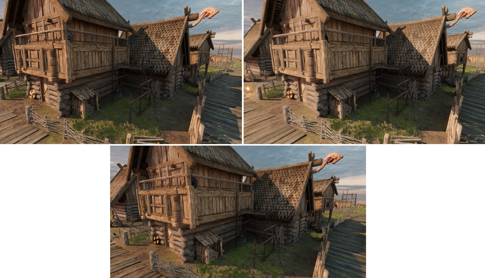
🔑 URP được xây dựng với real-time lighting ĐÃ TỐI ƯU trong đầu. URP Forward Renderer hỗ trợ:
- Tối đa 8 đèn real-time TRÊN MỖI OBJECT
- Tối đa 256 đèn real-time TRÊN MỖI CAMERA — cho game desktop
- 32 đèn real-time TRÊN MỖI CAMERA — cho mobile và thiết bị cầm tay
💡 URP cũng cho phép cấu hình Light setting theo từng object bên trong Pipeline Asset để kiểm soát lighting tinh vi hơn.
🔑 URP is built with OPTIMIZED real-time lighting in mind. The URP Forward Renderer supports:
- Up to 8 real-time lights PER OBJECT
- Up to 256 real-time lights PER CAMERA — for desktop games
- 32 real-time lights PER CAMERA — for mobile and other handheld platforms
💡 URP also allows for configurable per-object Light settings inside the Pipeline Asset for refined control over lighting.
17. 💡 Bake Lightmap — Tối ưu lighting hiệu quả NHẤT¶
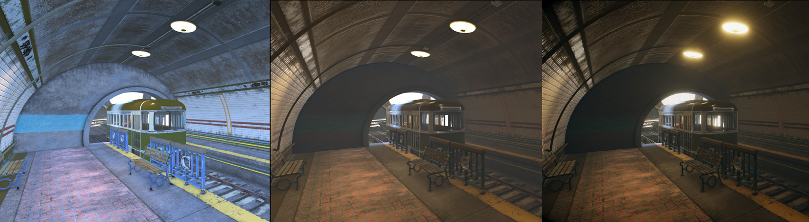
VI: Ba thiết lập lighting cho CÙNG một scene — từ trái sang phải: KHÔNG có dữ liệu lighting · ĐÃ bake lighting · thêm post-processing. / EN: From left to right: no lighting data, baked lighting, post-processing added.
🔑 Nguyên tắc vàng: "Cách NHANH NHẤT để tạo lighting là cách KHÔNG cần tính TOÁN mỗi frame. Để làm vậy, dùng Lightmapping để 'BAKE' static lighting CHỈ MỘT LẦN, thay vì tính nó real-time."
📊 Con số cụ thể — lợi ích của bake:
"Quá trình tạo môi trường có lightmap mất LÂU HƠN so với chỉ đặt một cái đèn vào scene, nhưng nó:
- 🚀 chạy NHANH HƠN — nhanh gấp 2–3 LẦN với đèn two-per-pixel
- 🎨 trông ĐẸP HƠN — Global Illumination có thể tính toán lighting TRỰC TIẾP và GIÁN TIẾP trông chân thực. Lightmapper còn làm mượt (smooth) và khử nhiễu (denoise) bản đồ kết quả."
💎 Từ e-book URP — lợi ích thêm về batching:
"Texture lighting đã bake được BATCH vào MỘT draw call DUY NHẤT, mà KHÔNG cần được tính toán liên tục. Điều này đặc biệt hữu ích nếu scene của bạn dùng NHIỀU ĐÈN.
Một lý do TUYỆT VỜI khác để bake lighting: nó cho phép render ánh sáng NẢY (bounced) hoặc GIÁN TIẾP trong scene và cải thiện chất lượng thị giác."
⚡ Tăng tốc bake: "Scene phức tạp có thể cần thời gian bake lâu. Nếu phần cứng hỗ trợ Progressive GPU Lightmapper, tùy chọn này có thể tăng tốc việc sinh lightmap ĐÁNG KỂ — TỚI GẤP 10 LẦN trong một số trường hợp."
🔑 The golden principle: "The FASTEST option to create lighting is one that DOESN'T need to be computed per-frame. To do this, use Lightmapping to 'BAKE' static lighting JUST ONCE, instead of calculating it in real-time."
📊 The concrete numbers — the benefits of baking:
"The process of generating a lightmapped environment takes LONGER than just placing a light in the scene, but this:
- 🚀 runs FASTER — 2–3 times faster for two-per-pixel lights
- 🎨 looks BETTER — Global Illumination can calculate realistic-looking DIRECT and INDIRECT lighting. The lightmapper smooths and denoises the resulting map."
💎 From the URP e-book — the extra batching benefit:
"The baked lighting textures are BATCHED into a SINGLE draw call, WITHOUT needing to be continuously calculated. This is especially useful if your scene uses MULTIPLE LIGHTS.
Another GREAT reason to bake your lighting is that it allows you to render BOUNCED or INDIRECT lighting in your scene and improve the visual quality."
⚡ Speeding up baking: "Complex Scenes may require long bake times. If your hardware supports the Progressive GPU Lightmapper, this option can DRAMATICALLY speed up your lightmap generation — UP TO TENFOLD in some cases."
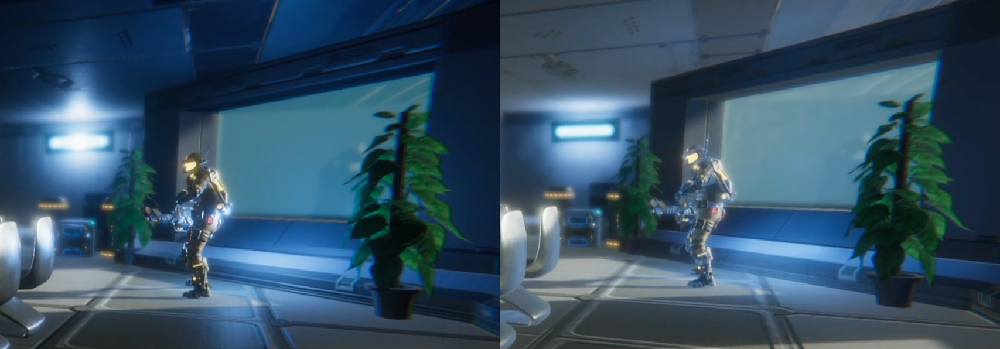
VI: Tác động của bake lên bóng đổ — trước khi bake (trái) và sau khi bake (phải). / EN: The effect of light baking on shadows: before baking on the left, and after on the right.
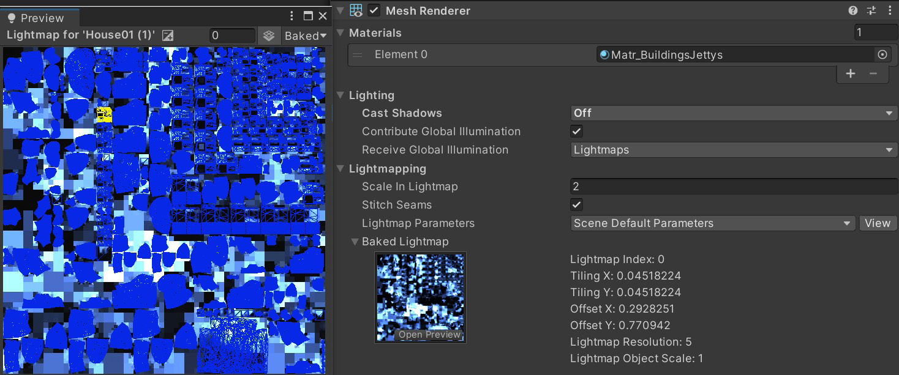
VI: Lightmap đã bake trong Inspector — chú ý Contribute Global Illumination ✓, Receive Global Illumination: Lightmaps, Scale In Lightmap: 2, Lightmap Resolution: 5. / EN: A baked lightmap in the Inspector with the Mesh Renderer's lightmapping settings.
⚠️ Đánh đổi của bake — điều e-book URP nói thẳng
"Trong ảnh trước, bạn có thể thấy các specular highlight trên mặt đất bị MẤT khi bake. Baked light CHỈ chứa DIFFUSE lighting.
✅ Bất cứ khi nào có thể, hãy TÍNH phần đóng góp lighting TRỰC TIẾP từ REAL-TIME, và để Global Illumination đến từ Image Based Lighting (IBL) / shadow map / Probe."
💾 Về bộ nhớ: "Dùng Lightmap Resolution và Lightmap Size THẤP NHẤT có thể khi bake (Window > Rendering > Lighting > Scene). Điều này giúp GIẢM yêu cầu bộ nhớ texture."
"In the previous image, you can see that the specular highlights on the ground are LOST when baking. Baked lights ONLY contain DIFFUSE lighting.
✅ Whenever possible, COMPUTE the direct lighting contribution from REAL-TIME, and have Global Illumination come from Image Based Lighting (IBL) / shadow maps / Probes."
💾 On memory: "Use the LOWEST possible Lightmap Resolution and Lightmap Size when baking (Window > Rendering > Lighting > Scene). This helps to LOWER the texture memory requirement."
📝 Cấu hình Lighting từ ghi chú raw / Lighting config from the raw notes:
Window > Rendering > Lighting:
· Environment Lighting / Source → White Color
· Environment Reflections Source → Custom
· Dùng Directional Light
· Dùng Baked Lighting
· Shadow projector (thay cho dynamic shadow)
18. Light Probes & Reflection Probes¶
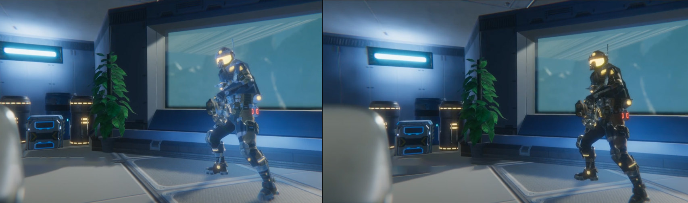
VI: Tác động của Light Probe khi render object động — CÓ Light Probe (trái) và KHÔNG có (phải). / EN: The effect of using Light Probes when rendering a dynamic object: with Light Probe on the left, without on the right.
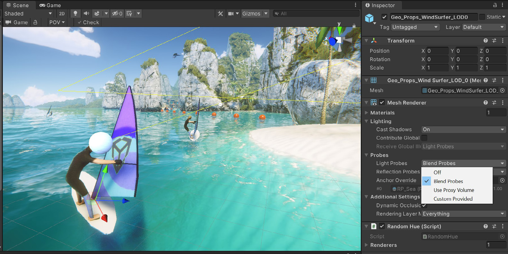
VI: Setting Light Probes: Blend Probes trên Mesh Renderer (dự án BoatAttack). / EN: The Light Probes: Blend Probes setting on a Mesh Renderer.
🔑 LIGHT PROBES — cơ chế:
"Light Probe SAMPLE dữ liệu lighting trong scene TRONG LÚC BAKE, và cho phép thông tin ánh sáng NẢY được dùng bởi các object ĐỘNG khi chúng di chuyển hoặc thay đổi. Điều này giúp chúng HÒA HỢP và cảm giác TỰ NHIÊN hơn trong môi trường lighting đã bake."
💎 Lợi ích đặc biệt: "Light Probe thêm tính TỰ NHIÊN cho render mà KHÔNG LÀM TĂNG thời gian xử lý một frame. Điều này khiến chúng PHÙ HỢP với MỌI phần cứng — kể cả thiết bị mobile cấp thấp."
Từ e-book Console/PC — chi tiết kỹ thuật:
"Light Probe lưu thông tin lighting đã bake về KHÔNG GIAN TRỐNG trong Scene, đồng thời cung cấp lighting CHẤT LƯỢNG CAO (cả trực tiếp lẫn gián tiếp).
🔑 Chúng dùng SPHERICAL HARMONICS — tính toán RẤT NHANH so với đèn động. Điều này đặc biệt hữu ích cho object DI CHUYỂN, vốn thường KHÔNG nhận được baked lightmapping."
💡 Chiến lược lai — rất giá trị:
"Tiếp tục dùng lightmapping cho geometry level NỔI BẬT, nhưng CHUYỂN các chi tiết NHỎ sang probe lighting.
✅ Light Probe illumination KHÔNG đòi hỏi UV đúng chuẩn ⇒ tiết kiệm bước unwrap mesh. Probe cũng GIẢM dung lượng đĩa vì chúng KHÔNG sinh ra lightmap texture."
💡 Light Probe cũng áp dụng được cho static mesh: trong component MeshRenderer, tìm dropdown Receive Global Illumination và chuyển từ Lightmaps sang Light Probes.
🔑 LIGHT PROBES — the mechanism:
"Light Probes SAMPLE the lighting data in the scene DURING BAKING, and allow the bounced light information to be used by DYNAMIC objects as they move or change. This helps them BLEND INTO and feel MORE NATURAL in the baked lighting environment."
💎 The special benefit: "Light Probes add naturalism to a render WITHOUT INCREASING the processing time for a rendered frame. This makes them suitable for ALL hardware — even low-end mobile devices."
From the Console/PC e-book — technical detail:
"Light Probes store baked lighting information about the EMPTY SPACE in your Scene, while providing HIGH-QUALITY lighting (both direct and indirect).
🔑 They use SPHERICAL HARMONICS, which calculate VERY QUICKLY compared to dynamic lights. This is especially useful for MOVING objects, which normally cannot receive baked lightmapping."
💡 The hybrid strategy — very valuable:
"Continue using lightmapping for your PROMINENT level geometry, but SWITCH SMALLER details to probe lighting.
✅ Light Probe illumination does NOT require proper UVs ⇒ saving you the extra step of unwrapping meshes. Probes also REDUCE disk space since they don't generate lightmap textures."
💡 Light Probes can apply to static meshes as well: in the MeshRenderer component, locate the Receive Global Illumination dropdown and toggle it from Lightmaps to Light Probes.
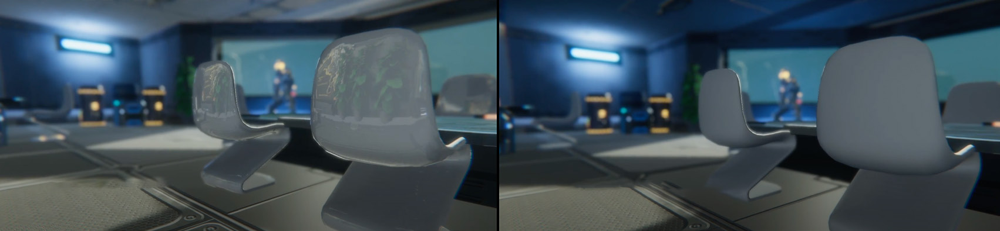
VI: Tác động của Reflection Probe trên bề mặt nhẵn — CÓ Reflection Probe (trái) và KHÔNG có (phải). / EN: The effect of using Reflection Probes on smooth surfaces.
🪞 REFLECTION PROBES — Đắt đỏ về batch, phải tối ưu
Từ e-book URP: "Reflection Probe chiếu các phần của môi trường lên geometry lân cận để tạo phản chiếu chân thực hơn. Mặc định Unity dùng Skybox làm reflection map. Nhưng khi dùng một hay nhiều Reflection Probe, phản chiếu sẽ KHỚP với môi trường xung quanh SÁT HƠN."
💾 "Kích thước cubemap sinh ra khi bake Reflection Probe PHỤ THUỘC vào việc Camera tiến gần object phản chiếu tới đâu. LUÔN đảm bảo dùng kích thước map NHỎ NHẤT phù hợp nhu cầu để tối ưu scene."
🚨 Từ e-book Console/PC — cảnh báo mạnh hơn:
"Reflection Probe có thể tạo phản chiếu chân thực, nhưng điều này có thể RẤT TỐN KÉM VỀ BATCH.
✅ Dùng cubemap ĐỘ PHÂN GIẢI THẤP, culling mask, và nén texture để cải thiện hiệu năng runtime.
✅ Dùng
Type: Bakedđể TRÁNH cập nhật mỗi frame.⚠️ Nếu BẮT BUỘC dùng
Type: Realtimetrong URP: TRÁNHEvery Framenếu có thể. Điều chỉnh setting Refresh Mode và Time Slicing để giảm tốc độ cập nhật. Bạn cũng có thể kiểm soát refresh bằng tùy chọnVia Scriptingvà render probe từ script tùy chỉnh.⚠️ Nếu BẮT BUỘC dùng
Type: Realtimetrong HDRP: dùng chế độOn Demand. Cũng có thể sửa Frame Settings ởProject Settings > HDRP Default Settings— giảm chất lượng và tính năng dướiRealtime Reflection."
From the URP e-book: "Reflection Probes project parts of the environment onto nearby geometry to create MORE REALISTIC reflections. By default Unity uses the Skybox as the reflection map. But by using one or more Reflection Probes, the reflections will MATCH their surroundings MORE CLOSELY."
💾 "The size of the cubemap generated when baking Reflection Probes DEPENDS on how close the Camera gets to a reflective object. ALWAYS make sure to use the SMALLEST map size that suits your needs."
🚨 From the Console/PC e-book — a stronger warning:
"A Reflection Probe can create realistic reflections, but this can be VERY COSTLY in terms of BATCHES.
✅ Use LOW-RESOLUTION cubemaps, culling masks, and texture compression to improve runtime performance.
✅ Use
Type: Bakedto AVOID per-frame updates.⚠️ If
Type: Realtimeis necessary in URP: AVOIDEvery Frameif possible. Adjust the Refresh Mode and Time Slicing settings to reduce the update rate. You can also control the refresh with theVia Scriptingoption and render the probe from a custom script.⚠️ If
Type: Realtimeis necessary in HDRP: useOn Demandmode. You can also modify Frame Settings inProject Settings > HDRP Default Settings— reduce the quality and features underRealtime Reflection."
19. 🌑 Shadow — Point Light tốn GẤP 6 LẦN¶
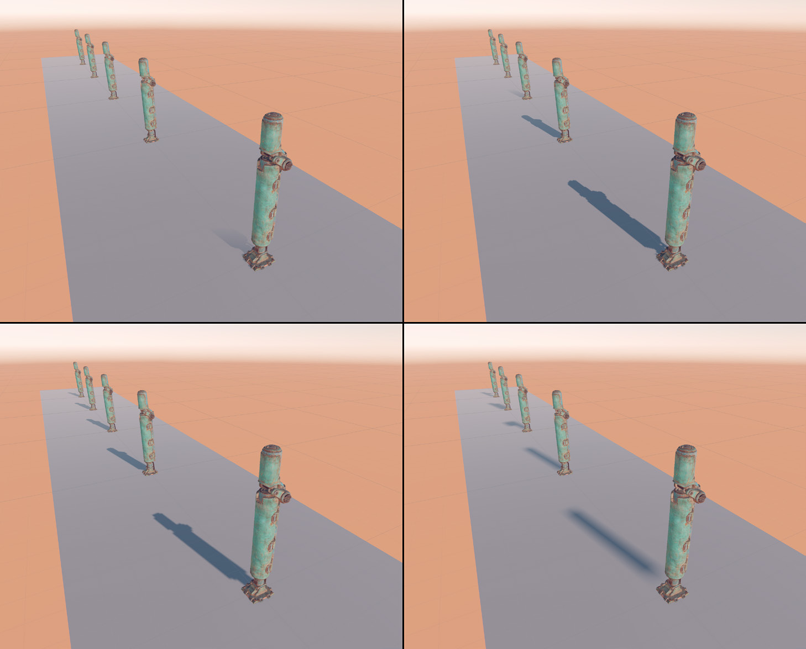
VI: Shadow Cascades trong URP. / EN: Shadow Cascades in URP.
Tắt shadow ở nơi có thể: "Shadow casting có thể tắt theo TỪNG MeshRenderer và TỪNG đèn. TẮT shadow bất cứ khi nào có thể để GIẢM draw call."
💡 Thay thế bằng shadow giả: "Bạn cũng có thể tạo shadow GIẢ bằng một texture đã làm mờ áp lên mesh hoặc quad ĐƠN GIẢN bên dưới nhân vật. Hoặc bạn có thể tạo blob shadow bằng shader tùy chỉnh."
🚨 Con số quan trọng nhất về shadow — ĐỌC KỸ:
"Đặc biệt, TRÁNH bật shadow cho POINT LIGHT.
💀 MỖI point light có shadow đòi hỏi SÁU (6) shadow map pass cho MỖI đèn — so sánh với MỘT (1) shadow map pass duy nhất cho spotlight.
✅ Cân nhắc THAY point light bằng SPOTLIGHT ở những nơi dynamic shadow thực sự cần thiết.
✅ Nếu có thể TRÁNH dynamic shadow, hãy dùng CUBEMAP làm
Light.cookievới point light của bạn thay thế."
👉 Liên hệ §7.3: shadow pass vốn đã nhạy cảm với băng thông ⇒ 6 pass = 6 lần chi phí băng thông đó.
💡 Thay đèn bằng SHADER:
"Trong một số trường hợp, bạn có thể áp dụng mẹo đơn giản thay vì thêm nhiều đèn phụ. Ví dụ: thay vì tạo một cái đèn chiếu thẳng vào camera để tạo hiệu ứng RIM LIGHTING, hãy dùng một SHADER MÔ PHỎNG rim lighting."
💡 Dùng LIGHT LAYERS:
"Với scene phức tạp có nhiều đèn, TÁCH các object bằng LAYER, rồi GIỚI HẠN ảnh hưởng của MỖI đèn vào một CULLING MASK cụ thể."
Disable shadows where possible: "Shadow casting can be disabled PER MeshRenderer and PER light. DISABLE shadows whenever possible to REDUCE draw calls."
💡 Replace with fake shadows: "You can also create FAKE shadows using a blurred texture applied to a SIMPLE mesh or quad underneath your characters. Otherwise, you can create blob shadows with custom shaders."
🚨 The most important shadow number — READ CAREFULLY:
"In particular, AVOID enabling shadows for POINT LIGHTS.
💀 EACH point light with shadows requires SIX (6) shadow map passes PER LIGHT — compare that with a SINGLE (1) shadow map pass for a spotlight.
✅ Consider REPLACING point lights with SPOTLIGHTS where dynamic shadows are absolutely necessary.
✅ If you can AVOID dynamic shadows, use a CUBEMAP as a
Light.cookiewith your point lights instead."
👉 Connects to §7.3: shadow passes are already bandwidth-sensitive ⇒ 6 passes = 6× that bandwidth cost.
💡 Substitute a SHADER effect:
"In some cases, you can apply simple tricks rather than adding multiple extra lights. For example: instead of creating a light that shines straight into the camera to give a RIM LIGHTING effect, use a SHADER which SIMULATES rim lighting."
💡 Use LIGHT LAYERS:
"For complex scenes with multiple lights, SEPARATE your objects using LAYERS, then CONFINE EACH light's influence to a SPECIFIC CULLING MASK."
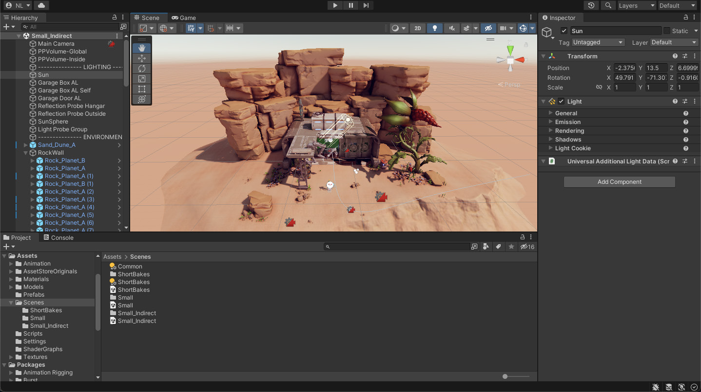
VI: Các Light Mode trong URP. / EN: Light Modes in URP.
20. Anti-aliasing — Bốn lựa chọn¶
"Anti-aliasing RẤT đáng mong muốn vì nó giúp làm MƯỢT ảnh, GIẢM cạnh răng cưa, và TỐI THIỂU HÓA specular aliasing."
"Anti-aliasing is HIGHLY DESIRABLE as it helps to SMOOTH the image, REDUCE jagged edges, and MINIMIZE specular aliasing."
| Kỹ thuật | Cơ chế | Chi phí & Nơi cấu hình |
|---|---|---|
| MSAA Multisample AA |
Chất lượng CAO | ⚠️ Có thể ĐẮT. · BiRP Forward → Quality Settings · URP/HDRP Forward → trên Render Pipeline Asset · MSAA Sample Count: None / 2X / 4X / 8X — số sample renderer dùng để đánh giá hiệu ứng |
| FXAA Fast approximate AA |
Làm mượt cạnh ở mức TỪNG PIXEL | ✅ ÍT tốn tài nguyên NHẤT, ⚠️ làm ảnh cuối hơi MỜ. Post-processing trên Camera |
| SMAA Subpixel morphological AA |
Trộn pixel dựa trên BIÊN của ảnh | ✅ Kết quả SẮC NÉT HƠN NHIỀU so với FXAA. 💡 Phù hợp với phong cách nghệ thuật phẳng, hoạt hình, hoặc sạch sẽ** |
| TAA Temporal AA — chỉ HDRP |
Làm mượt cạnh dùng các frame từ HISTORY BUFFER | ✅ Hiệu quả HƠN FXAA, ⚠️ ĐÒI HỎI motion vector. 💎 Cũng có thể cải thiện Ambient Occlusion và Volumetrics. ⚠️ Chất lượng cao hơn FXAA nhưng TỐN TÀI NGUYÊN HƠN và có thể tạo GHOSTING** |
PHẦN F — CULLING, LOD & CAMERA¶
21. Frustum Culling vs Occlusion Culling¶
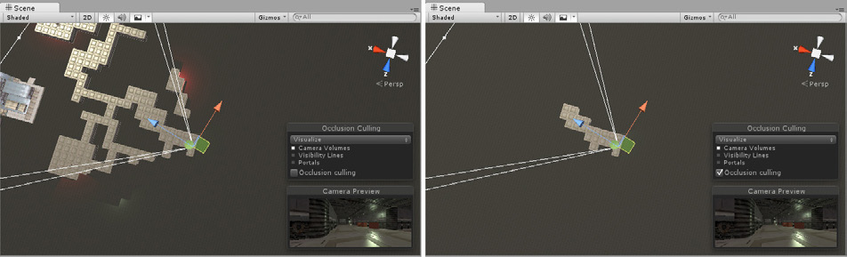
VI: Frustum culling (trái) và occlusion culling (phải). / EN: Frustum culling on the left, occlusion culling on the right.
🔑 Culling xảy ra THEO TỪNG CAMERA. "Nó có thể có tác động LỚN tới hiệu năng — đặc biệt khi NHIỀU camera được bật ĐỒNG THỜI." Unity dùng 2 loại culling.
🔷 ① FRUSTUM CULLING — tự động
"Được thực hiện TỰ ĐỘNG trên MỌI Camera. Frustum culling đảm bảo GameObject NGOÀI View Frustum KHÔNG được render để tiết kiệm hiệu năng."
💎 Kỹ thuật nâng cao — Camera.layerCullDistances:
"Bạn có thể set khoảng cách cull THEO TỪNG LAYER thủ công qua
Camera.layerCullDistances. Điều này cho phép bạn cull các GameObject NHỎ ở khoảng cách NGẮN HƠNfarClipPlanemặc định.Tổ chức GameObject vào Layer. Dùng mảng
layerCullDistancesđể gán cho MỖI trong 32 layer một giá trị NHỎ HƠNfarClipPlane(hoặc dùng 0 để mặc định vềfarClipPlane)."
🔬 Thứ tự xử lý — chi tiết kỹ thuật quan trọng:
"Unity cull THEO LAYER TRƯỚC. Nó chỉ giữ những GameObject trên layer mà Camera dùng. SAU ĐÓ, frustum culling loại bỏ GameObject nằm ngoài camera frustum.
⚡ Frustum culling được thực hiện dưới dạng một chuỗi JOB để tận dụng worker thread khả dụng."
⚠️ Nhưng có giới hạn:
"MỖI phép test layer culling RẤT NHANH (về cơ bản chỉ là thao tác bit mask). Tuy nhiên, chi phí này VẪN có thể cộng dồn với SỐ LƯỢNG RẤT LỚN GameObject.
✅ Nếu điều này thành vấn đề, bạn có thể cần cài đặt hệ thống chia thế giới thành các "SECTOR" và TẮT những sector nằm ngoài Camera frustum để giảm áp lực lên hệ thống layer/frustum culling của Unity."
🔑 Culling happens PER CAMERA. "It can have a LARGE impact on performance — especially when MULTIPLE cameras are enabled CONCURRENTLY." Unity uses two types of culling.
🔷 ① FRUSTUM CULLING — automatic
"Performed AUTOMATICALLY on EVERY Camera. Frustum culling makes sure that GameObjects OUTSIDE the View Frustum are NOT rendered to save rendering performance."
💎 Advanced technique — Camera.layerCullDistances:
"You can set PER-LAYER culling distances manually via
Camera.layerCullDistances. This allows you to cull SMALL GameObjects at a distance SHORTER than the defaultfarClipPlane.Organize GameObjects into Layers. Use the
layerCullDistancesarray to assign EACH of the 32 layers a value less thanfarClipPlane(or use 0 to default tofarClipPlane)."
🔬 Processing order — an important technical detail:
"Unity culls BY LAYER FIRST. It only keeps GameObjects on layers the Camera uses. AFTERWARDS, frustum culling removes any GameObjects outside the camera frustum.
⚡ Frustum culling is performed as a series of JOBS to take advantage of available worker threads."
⚠️ But there's a limit:
"EACH layer culling test is VERY FAST (essentially just a bit mask operation). However, this cost could STILL add up with a VERY LARGE number of GameObjects.
✅ If this becomes a problem, you may need to implement a system to divide your world into "SECTORS" and DISABLE sectors outside the Camera frustum to relieve pressure on Unity's layer/frustum culling system."
// layerCullDistances — cull object nhỏ ở khoảng cách NGẮN hơn farClipPlane
// Cull small objects at a shorter distance than farClipPlane
using UnityEngine;
[RequireComponent(typeof(Camera))]
public class PerLayerCulling : MonoBehaviour
{
void Start()
{
Camera cam = GetComponent<Camera>();
// Mảng 32 phần tử — MỘT cho mỗi layer
float[] distances = new float[32];
// 0 = dùng farClipPlane mặc định (áp cho mọi layer chưa chỉ định)
// Layer "SmallProps" chỉ hiển thị trong 30m
distances[LayerMask.NameToLayer("SmallProps")] = 30f;
// Layer "Debris" chỉ 15m
distances[LayerMask.NameToLayer("Debris")] = 15f;
// Layer "Vegetation" 60m
distances[LayerMask.NameToLayer("Vegetation")] = 60f;
cam.layerCullDistances = distances;
// Spherical culling: dùng khoảng cách CẦU thay vì mặt phẳng
// (chính xác hơn khi xoay camera, nhưng tốn hơn một chút)
cam.layerCullSpherical = true;
}
}
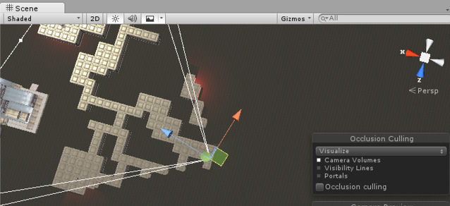
VI: Occlusion culling trong Scene view với cửa sổ Visualize — Camera Volumes · Visibility Lines · Portals. / EN: Occlusion culling visualization in the Scene view.
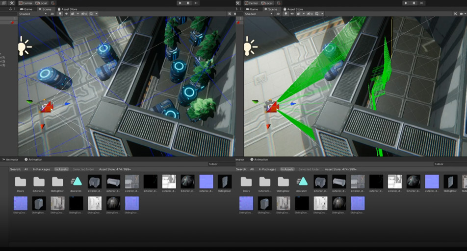
VI: Tác động của occlusion culling — TẮT (trái) và BẬT (phải): các tia xanh cho thấy vùng nhìn thấy được. / EN: The effect of occlusion culling off in the left image, and on in the right.
🔶 ② OCCLUSION CULLING — phải BAKE
"Occlusion culling LOẠI BỎ mọi GameObject khỏi Game View NẾU Camera KHÔNG THỂ NHÌN THẤY chúng. Object bị ẩn sau object khác vẫn có khả năng được render và tốn tài nguyên — dùng occlusion culling để loại chúng."
💡 Ví dụ: render một căn phòng khác là KHÔNG CẦN THIẾT nếu cửa đã đóng và Camera không nhìn vào phòng đó.
⚖️ Đánh đổi — nói rõ ràng:
"Nếu bạn bật occlusion culling, nó có thể TĂNG hiệu năng ĐÁNG KỂ nhưng có thể dùng NHIỀU dung lượng đĩa, thời gian CPU, và RAM HƠN.
🔑 Unity BAKE dữ liệu occlusion TRONG LÚC BUILD. Sau đó nó cần LOAD dữ liệu từ ĐĨA vào RAM khi loading một Scene."
Cách bật (theo e-book URP):
- Đánh dấu geometry là Occluder Static hoặc Occludee Static
- Mở
Window > Rendering > Occlusion Culling, chọn tab Bake → bấm Bake - Unity sinh dữ liệu occlusion, lưu thành asset trong dự án và liên kết asset đó với scene hiện tại
🔑 Phân biệt Occluder vs Occludee:
"Occluder là object TRUNG BÌNH tới LỚN có thể che khuất các object đánh dấu là Occludee. Để là Occluder, object PHẢI ĐỤC (opaque), có component Terrain hoặc Mesh Renderer, và KHÔNG di chuyển lúc runtime.
Occludee có thể là BẤT KỲ object nào có component Renderer — kể cả object NHỎ và TRONG SUỐT mà tương tự không di chuyển lúc runtime."
💡 Scene lý tưởng: "Occlusion culling phù hợp nhất với scene nơi SỐ LƯỢNG ĐÁNG KỂ object có thể bị CHE khi một vật khác xuất hiện giữa chúng và Camera. Game kiểu mê cung hành lang là ứng viên LÝ TƯỞNG."
🔶 ② OCCLUSION CULLING — must be BAKED
"Occlusion culling REMOVES any GameObjects from the Game View IF the Camera CANNOT SEE them. Objects hidden behind other objects can potentially STILL render and cost resources — use occlusion culling to discard them."
💡 Example: rendering another room is UNNECESSARY if a door is closed and the Camera cannot see into the room.
⚖️ The trade-off — stated plainly:
"If you enable occlusion culling, it may SIGNIFICANTLY increase performance but can use MORE disk space, CPU time, and RAM.
🔑 Unity BAKES the occlusion data DURING THE BUILD. It then needs to LOAD it from DISK to RAM while loading a Scene."
How to enable (per the URP e-book):
- Mark geometry as Occluder Static or Occludee Static
- Open
Window > Rendering > Occlusion Culling, select the Bake tab → press Bake - Unity generates occlusion data, saving it as an asset in your project and linking it to the current scene
🔑 Occluder vs Occludee:
"Occluders are MEDIUM to LARGE objects that can OCCLUDE objects marked as Occludees. To be an Occluder, an object MUST be OPAQUE, have a Terrain or Mesh Renderer component, and NOT move at runtime.
Occludees can be ANY object with a Renderer component — including SMALL and TRANSPARENT objects that similarly do not move at runtime."
💡 The ideal scene: "Occlusion culling is BEST SUITED to a scene where SIGNIFICANT NUMBERS of objects might be MASKED when another item appears between them and the Camera. A cellular corridor maze-type game is an IDEAL candidate."
21.1. 🧊 Umbra — Occlusion Culling hoạt động BÊN TRONG thế nào¶
🧭 Nguồn bổ sung ở audit lần 3: How to Use Occlusion Culling in Unity — The Sneaky Way — TheGameDev.Guru — phần "vì sao" và ba tham số bake mà tài liệu Unity không giải thích rõ.
"Unity dùng công nghệ occlusion culling vận hành bởi UMBRA. Và Umbra làm việc ở HAI chế độ khác nhau."
🔨 ① Lúc EDITOR — quá trình BAKE gồm 3 bước:
- Umbra "VOXEL HOÁ" (voxelize) scene của bạn để làm việc với các phần tử RỜI RẠC thay vì một "mớ polygon"
- Umbra TẠO các CELL từ những voxel này bằng cách GỘP các voxel RỖNG — tức voxel KHÔNG có geometry bên trong
- Cuối cùng, Umbra tạo các PORTAL nối những cell này lại với nhau
"Ta lưu tổ hợp cell + portal này vào các CẤU TRÚC DỮ LIỆU mà ta truy cập lúc runtime."
⚡ ② Lúc RUNTIME:
"Umbra lấy VỊ TRÍ camera của bạn để tìm ra bạn đang ở CELL NÀO ngay lúc này. Rồi Umbra thực hiện các OCCLUSION QUERY đối chiếu với cấu trúc dữ liệu chứa cell và portal để xác định phần tử nào camera THẤY được và phần tử nào bị CHE.
👉 Một khi Unity biết object nào bị che — đơn giản là KHÔNG render chúng."
"Unity uses an occlusion culling technology powered by UMBRA. And Umbra works in TWO different modes."
🔨 ① At EDITOR time — baking is a 3-step process:
- Umbra "VOXELIZES" your scene to work with DISCRETE elements instead of with a "polygon soup"
- Umbra CREATES CELLS out of these voxels by MERGING EMPTY voxels — i.e., voxels WITHOUT geometry inside
- Finally, Umbra creates PORTALS that CONNECT these cells
"We store this combination of cells + portals into DATA STRUCTURES that we access during run-time."
⚡ ② At RUN-TIME:
"Umbra takes the POSITION of your camera to find in WHICH CELL you are right now. Then, Umbra does OCCLUSION QUERIES against the data structures that contain cells and portals to determine which elements your camera CAN SEE and which ones are OCCLUDED.
👉 Once Unity knows which objects are occluded — you just DON'T RENDER them."
⚖️ BA hệ quả của occlusion culling — hai TỐT, một XẤU
- ✅ ÍT draw call hơn — cải thiện hiệu năng CPU
- ❌ THÊM chi phí culling — LÀM TỆ ĐI hiệu năng CPU
- ✅ ÍT overdraw và fillrate hơn — cải thiện hiệu năng GPU
💰 Occlusion query KHÔNG miễn phí — nó bao gồm:
- DUYỆT các cấu trúc dữ liệu LỚN
- Render depth + TEST một software depth buffer TRÊN CPU
"Tất cả đều tốn thời gian. Và điện. Và nhiệt. Và có thể khiến người chơi VR của bạn NÔN."
🚨 Và một cảnh báo ít ai để ý: "Occlusion culling KHÔNG PHẢI viên đạn bạc, vì Unity VẪN render BÓNG (shadows) vì những lý do hiển nhiên."
⚖️ Thời gian bạn TIẾT KIỆM được ở draw call và thao tác GPU PHẢI đáng với chi phí CPU THÊM VÀO.
- ✅ FEWER draw calls — improves CPU performance
- ❌ ADDITIONAL culling cost — WORSENS CPU performance
- ✅ LESS overdraw and fillrate — improves GPU performance
💰 Occlusion queries are NOT free — they imply:
- TRAVERSING LARGE data structures
- Rendering depth + TESTING a software depth buffer ON THE CPU
"This all takes time. And power. And heat. And may make your VR players vomit."
🚨 And a warning few people notice: "occlusion culling is NOT the silver bullet, since Unity STILL renders SHADOWS for obvious reasons."
⚖️ The time you SAVE in draw calls and GPU operations MUST be worth its EXTRA CPU cost.
🏠 Quy tắc quyết định NGẮN GỌN:
- ✅ DÙNG occlusion culling trong INTERIOR (nội thất).
- ❌ TRÁNH occlusion culling ở EXTERIOR (ngoại cảnh).
"Lý do rất đơn giản: trong nội thất bạn có NHIỀU KHẢ NĂNG có những OCCLUDER LỚN che các phần tử phía sau chúng — hãy nghĩ tới TƯỜNG, CỬA. Và việc có các phòng NGĂN CÁCH bởi HÀNH LANG cũng giúp rất nhiều.
💡 Scene nội thất thường NHỎ HƠN, điều này có thể khiến occlusion query của bạn RẺ HƠN (ít bộ nhớ và thời gian CPU hơn)."
👉 Khớp với lời khuyên của Unity ở §21: "game kiểu mê cung hành lang là ứng viên LÝ TƯỞNG".
🏠 The SHORT decision rule:
- ✅ USE occlusion culling in INTERIORS.
- ❌ AVOID occlusion culling in EXTERIORS.
"The reason is simple: in interiors you are MORE LIKELY to have BIG OCCLUDERS that hide elements behind them — think of WALLS, DOORS. And having rooms SEPARATED BY CORRIDORS is also a big help.
💡 Interior scenes are often SMALLER, which may make your occlusion queries CHEAPER (less memory and CPU time)."
👉 This matches Unity's own advice in §21: "a cellular corridor maze-type game is an IDEAL candidate".
21.2. 🎚️ Ba tham số bake — Giá trị khuyến nghị CỤ THỂ¶
Ba tham số trong cửa sổ Window > Rendering > Occlusion Culling > Bake quyết định chất lượng, tốc độ query, và mức dùng RAM của hệ thống. Đây là ý nghĩa THỰC SỰ của chúng:
The three parameters in Window > Rendering > Occlusion Culling > Bake determine the system's quality, query speed, and RAM usage. Here is what they ACTUALLY mean:
| Tham số | Ý nghĩa thật / What it really is | Giá trị NHỎ | Giá trị LỚN | ✅ Khuyến nghị |
|---|---|---|---|---|
| Smallest Occluder | 🔑 "Độ phân giải ĐẦU RA của quá trình bake" — kích thước (mét) của phần tử NHỎ NHẤT trong scene có thể đóng vai occluder | Occlusion culling CHÍNH XÁC HƠN lúc runtime, nhưng query LÂU HƠN trên CPU và tốn NHIỀU bộ nhớ hơn | Hiệu quả occlusion NHỎ HƠN, query NHANH HƠN, bộ nhớ THẤP HƠN ⇒ bạn sẽ render nhiều thứ KHÔNG nhìn thấy hơn | 🏆 2 – 5 m "hoạt động tốt trong môi trường tỷ lệ NGƯỜI" |
| Smallest Hole | 🔑 "Độ phân giải ĐẦU VÀO của quá trình bake" — kích thước (mét) của LỖ NHỎ NHẤT bạn có thể NHÌN XUYÊN QUA, ví dụ khoảng trống giữa các thanh hàng rào. ⚙️ Đây chính là KÍCH THƯỚC VOXEL Umbra dùng để sinh cell | Bake CHÍNH XÁC HƠN, Unity phân biệt occluder thật tốt hơn — nhưng bake LÂU HƠN và tốn nhiều bộ nhớ EDITOR hơn (không phải runtime) | 💀 Voxel QUÁ TO ⇒ khả năng voxel chứa geometry và chặn tầm nhìn TĂNG ⇒ "bạn có nguy cơ BỎ QUA việc render geometry mà lẽ ra bạn PHẢI nhìn thấy được" | 🏆 0.2 – 0.5 m "hoạt động tốt trong môi trường tỷ lệ bình thường" |
| Backface Threshold | 🔑 Tối ưu mức dùng bộ nhớ RUNTIME. Đặt 90% ⇒ Umbra BỎ QUA một cell bất cứ khi nào 90% số mặt nhìn thấy từ cell đó là MẶT SAU (backface)** | ⚠️ "Nếu đặt QUÁ THẤP, bạn có thể 'tối ưu' MẤT những cell HỢP LỆ mà người chơi thực sự có thể đứng. Nếu xảy ra, KẾT QUẢ LÀ KHÔNG XÁC ĐỊNH (undefined)." | Giữ nhiều dữ liệu hơn, an toàn hơn | 🏆 Để nguyên 100% — "TRỪ KHI occlusion culling của bạn ngốn QUÁ NHIỀU RAM (bất cứ mức nào trên 40 MB)". 💡 Và kể cả khi muốn tối ưu bộ nhớ, hãy BẮT ĐẦU bằng việc TĂNG Smallest Occluder trước. |
🔬 Trực giác cho Backface Threshold — ví von rất rõ:
"Hãy tưởng tượng bạn đang đi TRÊN một địa hình. Khi nhìn XUỐNG, bạn THẤY địa hình vì normal của nó hướng LÊN.
💡 Giờ nếu bạn 'gian lận' và chui XUỐNG DƯỚI địa hình, bạn sẽ KHÔNG thấy nó do backface culling. Vậy đó là một vị trí "KHÔNG HỢP LỆ" mà ta có thể AN TOÀN bỏ qua occlusion culling.
👉 Nói cách khác: ta có thể XOÁ dữ liệu occlusion culling của những cell mà người chơi KHÓ CÓ KHẢ NĂNG đứng vào."
📌 Occlusion Area — "là một VÙNG QUAN TÂM nơi ta muốn bake occlusion culling ở ĐỘ CHÍNH XÁC CAO HƠN". Dùng nó để tập trung ngân sách bake vào những khu vực người chơi thực sự đi qua.
🔬 The intuition for Backface Threshold — a clear analogy:
"Imagine you are walking ON TOP of a terrain. When you look DOWN, you CAN SEE the terrain because its normals point UPWARDS.
💡 Now, if you CHEATED and got BENEATH the terrain you WOULDN'T be able to see it because of backface culling. So that would be an "INVALID" position for which we can SAFELY IGNORE occlusion culling.
👉 In other words: we can REMOVE the occlusion culling data for CELLS WE ARE NOT LIKELY TO BE IN."
📌 Occlusion Areas — "an AREA OF INTEREST where we want to bake occlusion culling at a HIGHER PRECISION". Use them to concentrate your bake budget on the areas players actually traverse.
22. LOD & Camera — Mỗi Camera tốn tới 1 ms¶
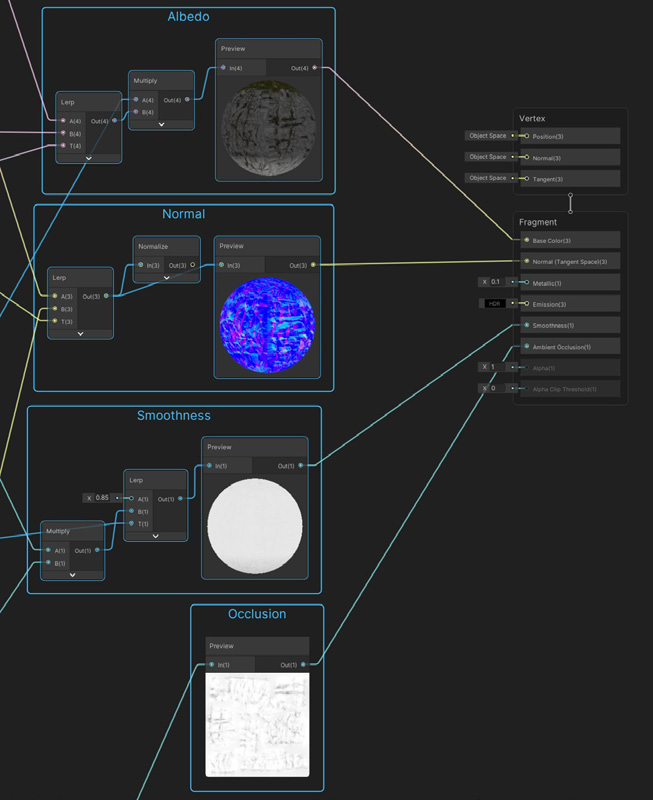
VI: Ví dụ Mesh dùng LOD Group — các mesh nguồn được model ở nhiều độ phân giải khác nhau. / EN: Example of a Mesh using a Level of Detail Group; source meshes modeled at varying resolutions.
LOD (Level of Detail): "Khi object di chuyển ra XA, Level of Detail có thể điều chỉnh hoặc CHUYỂN chúng sang mesh ĐỘ PHÂN GIẢI THẤP HƠN với material và shader ĐƠN GIẢN HƠN để hỗ trợ hiệu năng GPU."
👉 Nhắc lại từ §4 và §6: LOD vừa giảm vertex shader work, VỪA GIẢM MẠNH overshading bằng cách khiến tam giác phủ nhiều quad hơn.
💾 Nhắc lại từ Module 3 §4.1: dùng maxLOD trong Quality Settings để loại mesh chi tiết cao khỏi BUILD.
LOD (Level of Detail): "As objects move into the DISTANCE, Level of Detail can adjust or SWITCH them to use LOWER-RESOLUTION meshes with SIMPLER materials and shaders to aid GPU performance."
👉 Recall from §4 and §6: LODs both reduce vertex shader work AND GREATLY reduce overshading by having triangles cover more of each quad.
💾 Recall from Module 3 §4.1: use maxLOD in Quality Settings to remove high-detail meshes from the BUILD.
📊 Chi phí ẨN của Camera — con số ít ai biết
"Bạn CÓ THỂ dùng Camera Stacking trong URP để render nhiều camera view. Tuy nhiên, VẪN có việc culling và rendering ĐÁNG KỂ được làm cho MỖI camera.
🚨 MỖI camera đều gây ra một số overhead — DÙ nó có làm việc có ý nghĩa hay KHÔNG.
✅ CHỈ dùng những component Camera thực sự CẦN cho việc render.
💀 Trên nền tảng MOBILE, MỖI camera đang bật có thể dùng TỚI 1 ms thời gian CPU — KỂ CẢ KHI nó KHÔNG render gì cả."
👉 Với ngân sách 11 ms cho 60fps mobile (Module 1 §1.1), 3 camera thừa = 27% ngân sách BIẾN MẤT mà không vẽ gì.
"You COULD use Camera Stacking in URP to render more than one camera view. However, there is STILL SIGNIFICANT culling and rendering done for EACH camera.
🚨 EACH camera incurs SOME overhead — WHETHER it's doing meaningful work or NOT.
✅ ONLY use Camera components REQUIRED for rendering.
💀 On MOBILE platforms, EACH active camera can use UP TO 1 ms of CPU time — EVEN WHEN rendering NOTHING."
👉 With an 11 ms budget for 60fps mobile (Module 1 §1.1), 3 redundant cameras = 27% of your budget GONE without drawing anything.
22.1. Thay Camera bằng RenderObjects (URP) / CustomPassVolumes (HDRP)¶
🔷 URP — RenderObjects
"Trong URP, thay vì dùng NHIỀU CAMERA, hãy thử một custom RenderObject." Chọn Add Renderer Feature trong Renderer Data asset → RenderObject (Experimental).
Khi override mỗi RenderObject, bạn có thể:
- Gắn nó với một Event và tiêm vào một thời điểm cụ thể của render loop
- Lọc theo Render Queue (Transparent hoặc Opaque) và LayerMask
- Tác động tới setting Depth và Stencil (→ chính là kỹ thuật ở §15)
- Sửa setting Camera (Field of View và Position Offset)
💡 Ví dụ thực tế từ Universal Rendering Examples:
"Layer mask chia geometry tiền cảnh và hậu cảnh. Rồi custom Forward Renderer vẽ layer vũ khí với FOV ÍT MÉO HƠN và LUÔN render nó LÊN TRÊN geometry của level.
Override trên mỗi Renderer sửa setting Stencil và Depth để NGĂN tiền cảnh CẮT (clip) phần geometry còn lại của scene."
🔶 HDRP — CustomPassVolumes
Cấu hình một Custom Pass dùng Custom Pass Volume — tương tự cách dùng HDRP Volume. Custom Pass cho phép bạn:
- Thay đổi ngoại hình của material trong scene
- Thay đổi THỨ TỰ Unity render GameObject
- Đọc Camera buffer vào shader
✅ "Dùng Custom Pass trong HDRP có thể giúp bạn TRÁNH dùng Camera thừa và overhead đi kèm. Custom pass có độ linh hoạt CAO HƠN trong cách tương tác với shader. Bạn cũng có thể mở rộng class Custom Pass bằng C#."
🔷 URP — RenderObjects
"In URP, instead of using MULTIPLE CAMERAS, try a custom RenderObject." Select Add Renderer Feature in the Renderer Data asset → RenderObject (Experimental).
When overriding each RenderObject, you can:
- Associate it with an Event and inject it into a specific timing of the render loop
- Filter by Render Queue (Transparent or Opaque) and LayerMask
- Affect the Depth and Stencil settings (→ exactly the technique in §15)
- Modify the Camera settings (Field of View and Position Offset)
💡 A real example from Universal Rendering Examples:
"Layer masks divide up the foreground and background meshes. Then the custom Forward Renderer draws the weapon layer with a LESS DISTORTED FOV and ALWAYS renders it ON TOP of the level geometry.
Overrides on each Renderer modify the Stencil and Depth settings to PREVENT the foreground from CLIPPING the rest of the scene geometry."
🔶 HDRP — CustomPassVolumes
Configuring a Custom Pass using a Custom Pass Volume is analogous to using an HDRP Volume. A Custom Pass allows you to:
- Change the appearance of materials in your scene
- Change the ORDER that Unity renders GameObjects
- Read Camera buffers into shaders
✅ "Using Custom Passes in HDRP can help you AVOID using extra Cameras and the additional overhead. Custom passes have extra FLEXIBILITY in how they interact with shaders. You can also extend the Custom Pass class with C#."
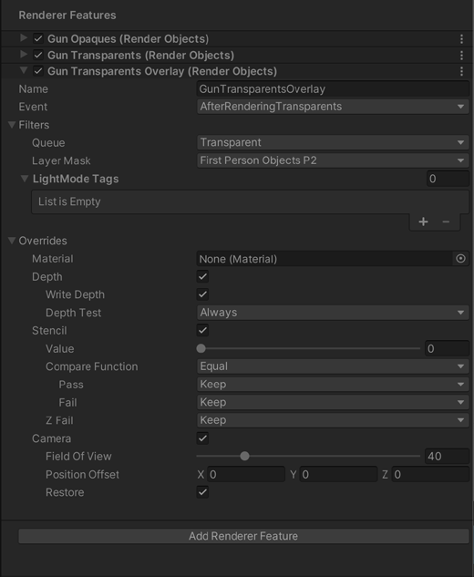
VI: Ba Render Objects feature đúng như ví dụ vũ khí ở trên — Gun Opaques, Gun Transparents, Gun Transparents Overlay. Feature đang mở cho thấy: Event: AfterRenderingTransparents · Queue: Transparent · Layer Mask: First Person Objects P2 · Override Depth ✓ (Write Depth ✓, Depth Test: Always) · Stencil ✓ (Value 0, Compare Function: Equal, Pass/Fail/Z Fail: Keep) · Camera ✓ (Field Of View 40, Position Offset 0,0,0, Restore ✓). / EN: Three Render Objects features implementing the first-person weapon example, with the Depth, Stencil and Camera overrides visible.
💡 Chú ý Depth Test: Always — đây chính là thứ khiến vũ khí LUÔN vẽ đè lên geometry của level, và Field Of View 40 riêng biệt tạo ra "FOV ÍT MÉO HƠN". KHÔNG cần thêm một Camera nào. / EN: Note Depth Test: Always — that is what makes the weapon ALWAYS draw over level geometry, and the separate Field Of View 40 creates the "less distorted FOV". No extra Camera required.
22.2. 📉 Dynamic Resolution & Độ phân giải mobile¶
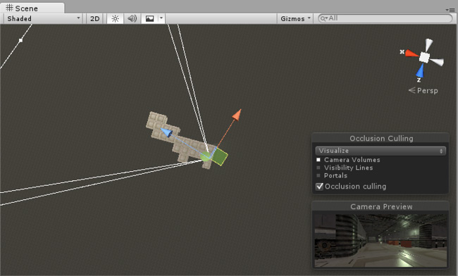
VI: Allow Dynamic Resolution — setting Camera cho phép điều chỉnh động độ phân giải render target. / EN: Allow Dynamic Resolution is a Camera setting.
"Allow Dynamic Resolution là một setting của CAMERA cho phép bạn SCALE ĐỘNG từng render target riêng lẻ để GIẢM khối lượng công việc trên GPU.
🔑 Trong trường hợp frame rate của ứng dụng GIẢM, bạn có thể TỪ TỪ hạ độ phân giải xuống để DUY TRÌ frame rate ỔN ĐỊNH.
⚙️ Unity KÍCH HOẠT việc scale này NẾU dữ liệu hiệu năng cho thấy frame rate SẮP giảm do bị GPU-BOUND.
💎 Bạn CŨNG có thể kích hoạt việc scale này THỦ CÔNG và CHỦ ĐỘNG bằng script. Điều này HỮU ÍCH nếu bạn sắp bước vào một đoạn NẶNG GPU của ứng dụng.
✅ NẾU được scale TỪ TỪ, dynamic resolution có thể GẦN NHƯ KHÔNG THỂ NHẬN RA."
👉 Đây là "van an toàn" cho ngân sách frame: thay vì rớt frame khi cảnh nặng, bạn đổi độ sắc nét lấy sự MƯỢT MÀ. Kết hợp với chẩn đoán GPU-bound ở §3 — dynamic resolution CHỈ giúp khi bạn GPU-bound.
📱 Với mobile — hạ độ phân giải TRỰC TIẾP:
"Điện thoại và tablet ngày càng TIÊN TIẾN, với các thiết bị mới có ĐỘ PHÂN GIẢI RẤT CAO.
▶️ Dùng
Screen.SetResolution(width, height, false)để HẠ độ phân giải xuất ra và LẤY LẠI một phần hiệu năng.🔬 Hãy PROFILE NHIỀU độ phân giải để tìm CÂN BẰNG TỐT NHẤT giữa chất lượng và tốc độ."
💡 Nhắc lại §6 và §7: hạ độ phân giải giảm ĐỒNG THỜI cả pixel shader work LẪN băng thông bộ nhớ — đó là lý do nó là đòn bẩy GPU MẠNH NHẤT tính theo công sức bỏ ra.
"Allow Dynamic Resolution is a CAMERA setting that allows you to DYNAMICALLY SCALE individual render targets to REDUCE workload on the GPU.
🔑 In cases where the application's frame rate REDUCES, you can GRADUALLY scale down the resolution to MAINTAIN a CONSISTENT frame rate.
⚙️ Unity TRIGGERS this scaling IF performance data suggests that the frame rate is ABOUT TO DECREASE as a result of being GPU-BOUND.
💎 You can ALSO PREEMPTIVELY trigger this scaling MANUALLY with script. This is useful if you are APPROACHING a GPU-INTENSIVE section of the application.
✅ IF scaled GRADUALLY, dynamic resolution can be ALMOST UNNOTICEABLE."
👉 This is the safety valve for your frame budget: instead of dropping frames on a heavy scene, you trade SHARPNESS for SMOOTHNESS. Combine with the GPU-bound diagnosis in §3 — dynamic resolution ONLY helps when you are GPU-bound.
📱 On mobile — lower the resolution DIRECTLY:
"Phones and tablets have become INCREASINGLY ADVANCED, with newer devices sporting VERY HIGH RESOLUTIONS.
▶️ Use
Screen.SetResolution(width, height, false)to LOWER the output resolution and REGAIN some performance.🔬 PROFILE MULTIPLE resolutions to find the BEST BALANCE between quality and speed."
💡 Recall §6 and §7: lowering resolution reduces BOTH pixel shader work AND memory bandwidth at once — which is why it is the highest-leverage GPU knob per unit of effort.
// Hạ độ phân giải theo tỷ lệ, giữ đúng aspect ratio của thiết bị
// Scale the resolution down while preserving the device aspect ratio
using UnityEngine;
public class ResolutionScaler : MonoBehaviour
{
[Range(0.5f, 1f)] public float scale = 0.8f;
void Start()
{
int w = Mathf.RoundToInt(Screen.currentResolution.width * scale);
int h = Mathf.RoundToInt(Screen.currentResolution.height * scale);
// false = KHÔNG fullscreen-exclusive; trên mobile tham số này bị bỏ qua
Screen.SetResolution(w, h, false);
}
}
22.3. 🦴 Tối ưu SkinnedMeshRenderer — BakeMesh và hoán đổi¶
"Render skinned mesh là ĐẮT ĐỎ. Hãy ĐẢM BẢO MỌI object dùng SkinnedMeshRenderer đều THỰC SỰ CẦN nó.
💎 NẾU một GameObject CHỈ cần animation TRONG MỘT SỐ THỜI ĐIỂM, hãy dùng hàm
BakeMeshđể ĐÓNG BĂNG skinned mesh ở một TƯ THẾ TĨNH, rồi HOÁN ĐỔI sang một MeshRenderer ĐƠN GIẢN HƠN lúc runtime."
🔑 Vì sao đây là đòn bẩy lớn: nhắc lại §12 — skinning được tính TRÊN CPU và submit lên GPU TỪNG CÁI MỘT, nên SkinnedMeshRenderer KHÔNG THỂ instancing. Ngược lại, một MeshRenderer tĩnh thì batch/instancing được BÌNH THƯỜNG (§10).
📌 Ứng viên điển hình để "bake và hoán đổi": xác chết · NPC ở XA · nhân vật trong cutscene đã dừng · mannequin trang trí · đám đông nền.
"Rendering skinned meshes is EXPENSIVE. Make SURE that EVERY object using a SkinnedMeshRenderer REQUIRES it.
💎 IF a GameObject ONLY needs animation SOME OF THE TIME, use the
BakeMeshfunction to FREEZE the skinned mesh in a STATIC POSE, and SWAP to a SIMPLER MeshRenderer at runtime."
🔑 Why this is high leverage: recall §12 — skinning is computed ON THE CPU and submitted to the GPU ONE BY ONE, so a SkinnedMeshRenderer CANNOT be instanced. A static MeshRenderer, by contrast, batches and instances NORMALLY (§10).
📌 Typical "bake and swap" candidates: corpses · DISTANT NPCs · characters frozen at the end of a cutscene · decorative mannequins · background crowds.
// Bake skinned mesh về tư thế tĩnh rồi hoán đổi sang MeshRenderer
// Bake the skinned mesh into a static pose, then swap to a MeshRenderer
using UnityEngine;
[RequireComponent(typeof(SkinnedMeshRenderer))]
public class BakeAndSwap : MonoBehaviour
{
public void FreezePose()
{
var smr = GetComponent<SkinnedMeshRenderer>();
// BakeMesh ghi tư thế HIỆN TẠI (đã skinning) vào một Mesh tĩnh
var baked = new Mesh();
smr.BakeMesh(baked);
// Gắn MeshFilter + MeshRenderer dùng mesh đã bake
var filter = gameObject.AddComponent<MeshFilter>();
filter.sharedMesh = baked;
var renderer = gameObject.AddComponent<MeshRenderer>();
// sharedMaterials — KHÔNG dùng .materials, tránh clone phá batching (§10)
renderer.sharedMaterials = smr.sharedMaterials;
// Tắt SkinnedMeshRenderer: từ đây object batch/instancing được bình thường
smr.enabled = false;
// Nếu KHÔNG bao giờ cần animate lại, có thể huỷ luôn Animator để
// loại object khỏi vòng cập nhật animation của Unity
if (TryGetComponent<Animator>(out var animator))
animator.enabled = false;
}
}
PHẦN G — TỐI ƯU GPU NÂNG CAO (CONSOLE)¶
23. 🎮 Bốn kỹ thuật đặc thù Console¶
"Tuy phát triển cho Xbox và PlayStation KHÁ GIỐNG với làm việc trên PC, các nền tảng đó có những thách thức RIÊNG. Đạt frame rate mượt thường có nghĩa là TẬP TRUNG vào tối ưu GPU."
🔧 Công cụ native BẮT BUỘC: "Microsoft và Sony cung cấp công cụ TUYỆT VỜI để phân tích hiệu năng dự án trên CẢ CPU lẫn GPU. Hãy đưa PIX cho Xbox và Razor cho PlayStation vào bộ đồ nghề của bạn."
📊 Case study được dùng trong e-book: port dự án môi trường "Book of the Dead" sang PlayStation 4 — view ban đầu GPU-bound trên PS4 Pro ở khoảng 45 ms/frame.
"Though developing for Xbox and PlayStation does RESEMBLE working with their PC counterparts, those platforms present their OWN challenges. Achieving smooth frame rates often means FOCUSING on GPU optimization."
🔧 Mandatory native tools: "Microsoft and Sony provide EXCELLENT tools for analyzing your project's performance on BOTH the CPU and GPU. Make PIX for Xbox and Razor for PlayStation part of your toolbox."
📊 The case study used in the e-book: porting the "Book of the Dead" environment project to PlayStation 4 — the initial view was GPU-bound on a PS4 Pro at roughly 45 ms per frame.
23.1. ⚡ Graphics Jobs — Trải rendering ra nhiều nhân CPU¶
"Bật tùy chọn này ở Player Settings > Other Settings để tận dụng bộ xử lý ĐA NHÂN của PlayStation hoặc Xbox.
🔑 Graphics Jobs (Experimental) cho phép Unity TRẢI công việc rendering ra NHIỀU NHÂN CPU, GỠ ÁP LỰC khỏi render thread."
👉 Liên hệ Module 1 §3.3 — nếu chẩn đoán ra render thread bound, đây chính là công cụ.
"Enable this option in Player Settings > Other Settings to take advantage of the MULTI-CORE processors in PlayStation or Xbox.
🔑 Graphics Jobs (Experimental) allows Unity to SPREAD the rendering work across MULTIPLE CPU CORES, REMOVING PRESSURE from the render thread."
👉 Connects to Module 1 §3.3 — if you diagnosed render-thread bound, this is the tool.
23.2. 🚫 Tránh Tessellation, Thay Geometry Shader bằng Compute Shader¶
TRÁNH TESSELLATION SHADER
"Tessellation chia nhỏ hình dạng thành các phiên bản NHỎ HƠN của hình đó. Việc này có thể tăng chi tiết thông qua tăng geometry.
⚠️ Tuy có những ví dụ hợp lý (ví dụ vỏ cây chân thực trong Book of the Dead), NHÌN CHUNG hãy TRÁNH tessellation trên console. Chúng có thể RẤT ĐẮT trên GPU."
💎 THAY GEOMETRY SHADER BẰNG COMPUTE SHADER — kiến thức quan trọng
"Giống tessellation shader, geometry và vertex shader có thể chạy HAI LẦN mỗi frame trên GPU — một lần trong DEPTH PRE-PASS, và một lần nữa trong SHADOW PASS.
🔑 Nếu bạn muốn SINH hoặc SỬA vertex data trên GPU, COMPUTE SHADER thường là lựa chọn TỐT HƠN geometry shader.
✅ Làm việc đó trong compute shader nghĩa là vertex shader THỰC SỰ render geometry có thể NHANH và ĐƠN GIẢN hơn tương đối."
📝 Đây chính là điều ghi chú raw nhắc tới: "compute shader trên render texture".
AVOID TESSELLATION SHADERS
"Tessellation SUBDIVIDES shapes into SMALLER versions of that shape. This can enhance detail through increased geometry.
⚠️ Though there are examples where tessellation does make sense (e.g., Book of the Dead's realistic tree bark), IN GENERAL, AVOID tessellation on consoles. They can be EXPENSIVE on the GPU."
💎 REPLACE GEOMETRY SHADERS WITH COMPUTE SHADERS — important knowledge
"Like tessellation shaders, geometry and vertex shaders can run TWICE PER FRAME on the GPU — once during the DEPTH PRE-PASS, and again during the SHADOW PASS.
🔑 If you want to GENERATE or MODIFY vertex data on the GPU, a COMPUTE SHADER is often a BETTER choice than a geometry shader.
✅ Doing the work in a compute shader means the vertex shader that ACTUALLY renders the geometry can be COMPARATIVELY FAST and SIMPLE."
📝 This is exactly what the raw notes refer to: "compute shader on render texture".
23.3. 🌊 Wavefront Occupancy — Đo mức tận dụng GPU¶
🔑 Cơ chế:
"Khi bạn gửi một draw call tới GPU, công việc đó CHIA thành nhiều WAVEFRONT mà Unity PHÂN PHỐI khắp các SIMD khả dụng bên trong GPU.
MỖI SIMD có SỐ LƯỢNG TỐI ĐA wavefront có thể chạy CÙNG LÚC.
👉 WAVEFRONT OCCUPANCY chỉ SỐ wavefront hiện đang được dùng SO VỚI mức tối đa. Nó ĐO mức bạn đang tận dụng TIỀM NĂNG của GPU tốt tới đâu. PIX và Razor hiển thị wavefront occupancy RẤT chi tiết."
📊 Cách đọc — ví dụ từ Book of the Dead:
"Wavefront của vertex shader hiện màu XANH LÁ. Wavefront của pixel shader hiện màu XANH DƯƠNG.
💀 Trên đồ thị dưới, NHIỀU wavefront vertex shader xuất hiện mà KHÔNG có nhiều hoạt động pixel shader. Điều này cho thấy GPU đang bị TẬN DỤNG DƯỚI MỨC (underutilization).
🔑 Nếu bạn làm RẤT NHIỀU việc vertex shader mà KHÔNG cho ra pixel, điều đó có thể chỉ ra sự KÉM HIỆU QUẢ."
⚖️ Nhưng KHÔNG đơn giản "càng cao càng tốt":
"Tuy occupancy THẤP KHÔNG NHẤT THIẾT là xấu, nó là một metric để bắt đầu tối ưu shader và kiểm tra các bottleneck khác.
✅ Ví dụ, nếu bạn bị STALL do thao tác memory hoặc compute, TĂNG occupancy có thể giúp hiệu năng.
🚨 Mặt khác, QUÁ NHIỀU wavefront đang bay (in-flight) có thể gây CACHE THRASHING và GIẢM hiệu năng."
🔑 The mechanism:
"When you send a draw call to the GPU, that work SPLITS into many WAVEFRONTS that Unity DISTRIBUTES throughout the available SIMDs within the GPU.
EACH SIMD has a MAXIMUM number of wavefronts that can be running AT ONE TIME.
👉 WAVEFRONT OCCUPANCY refers to how many wavefronts are currently in use RELATIVE to the maximum. It MEASURES how well you are using the GPU's POTENTIAL. PIX and Razor show wavefront occupancy in GREAT detail."
📊 How to read it — the Book of the Dead example:
"Vertex shader wavefronts appear in GREEN. Pixel shader wavefronts appear in BLUE.
💀 On the bottom graph, MANY vertex shader wavefronts appear WITHOUT much pixel shader activity. This shows an UNDERUTILIZATION of the GPU's potential.
🔑 If you're doing a LOT of vertex shader work that DOESN'T result in pixels, that may indicate an INEFFICIENCY."
⚖️ But it's NOT simply "higher is better":
"While LOW wavefront occupancy is NOT NECESSARILY BAD, it's a metric to START optimizing your shaders and checking for other bottlenecks.
✅ For example, if you have a STALL due to memory or compute operations, INCREASING occupancy may help performance.
🚨 On the other hand, TOO MANY in-flight wavefronts can cause CACHE THRASHING and DECREASE performance."
23.4. 🔀 Async Compute — Lấp chỗ trống của GPU¶
Kỹ thuật nâng cao nhất trong chương
"Nếu bạn có khoảng thời gian đang TẬN DỤNG DƯỚI MỨC GPU, Async Compute cho phép bạn CHUYỂN công việc compute shader HỮU ÍCH chạy SONG SONG với graphics queue của bạn. Điều này tận dụng TỐT HƠN các tài nguyên GPU đó."
📖 Ví dụ cụ thể — rất sáng rõ:
"Ví dụ, trong lúc SINH SHADOW MAP, GPU thực hiện render CHỈ DEPTH. RẤT ÍT công việc pixel shader xảy ra ở điểm này, và NHIỀU wavefront vẫn TRỐNG.
✅ Nếu bạn có thể ĐỒNG BỘ một số công việc compute shader với việc render chỉ-depth này, nó tạo ra việc SỬ DỤNG GPU TỔNG THỂ TỐT HƠN.
💎 Các wavefront không dùng có thể giúp với Screen Space Ambient Occlusion hoặc BẤT KỲ tác vụ nào BỔ SUNG cho công việc hiện tại."
📊 Kết quả case study: "Trong ví dụ này từ Book of the Dead, một số tối ưu đã cắt được VÀI MILI-GIÂY khỏi shadow mapping, lighting pass, và atmospherics. Chi phí frame kết quả cho phép ứng dụng chạy 30 fps trên PS4 Pro."
👉 Nhắc lại: view ban đầu GPU-bound ở ~45 ms/frame ⇒ sau tối ưu đạt 30 fps (33.3 ms).
"If you have intervals where you are UNDERUTILIZING the GPU, Async Compute allows you to MOVE useful compute shader work IN PARALLEL to your graphics queue. This makes BETTER use of those GPU resources."
📖 The concrete example — very illuminating:
"For example, during SHADOW MAP GENERATION, the GPU performs DEPTH-ONLY rendering. VERY LITTLE pixel shader work happens at this point, and MANY wavefronts remain UNOCCUPIED.
✅ If you can SYNCHRONIZE some compute shader work with the depth-only rendering, this makes for a BETTER OVERALL USE of the GPU.
💎 The unused wavefronts could help with Screen Space Ambient Occlusion or ANY task that COMPLEMENTS the current work."
📊 The case study result: "In this example from Book of the Dead, several optimizations shaved SEVERAL MILLISECONDS off the shadow mapping, lighting pass, and atmospherics. The resulting frame cost allowed the application to run at 30 fps on a PS4 Pro."
👉 Recall: the initial view was GPU-bound at ~45 ms/frame ⇒ after optimization it hit 30 fps (33.3 ms).
Hai kỹ thuật console còn lại:
- Giảm kích thước render target của shadow mapping: "Setting High Quality của HDRP MẶC ĐỊNH dùng shadow map 4K. Hãy GIẢM độ phân giải shadow map và ĐO tác động lên chi phí frame. Chỉ cần lưu ý bạn có thể phải bù đắp thay đổi chất lượng thị giác bằng setting của đèn."
- Dùng built-in và custom pass của HDRP: "Built-in pass có thể giúp bạn tối ưu shader. HDRP bao gồm nhiều INJECTION POINT nơi bạn có thể thêm custom pass."
The two remaining console techniques:
- Reduce shadow mapping render target size: "The High Quality setting of HDRP DEFAULTS to using a 4K shadow map. REDUCE the shadow map resolution and MEASURE the impact on frame cost. Just be aware you may need to compensate for visual quality changes with the light's settings."
- Use HDRP built-in and custom passes: "The built-in passes can help you optimize your shaders. HDRP includes several INJECTION POINTS where you can add custom passes."
24. 🎆 Particle System vs Visual Effect Graph¶
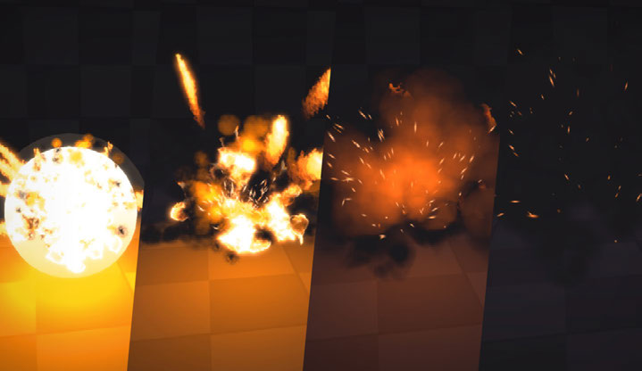
VI: Mô phỏng hiệu ứng đơn giản bằng Particle System. / EN: A simple effects simulation using the Particle System.
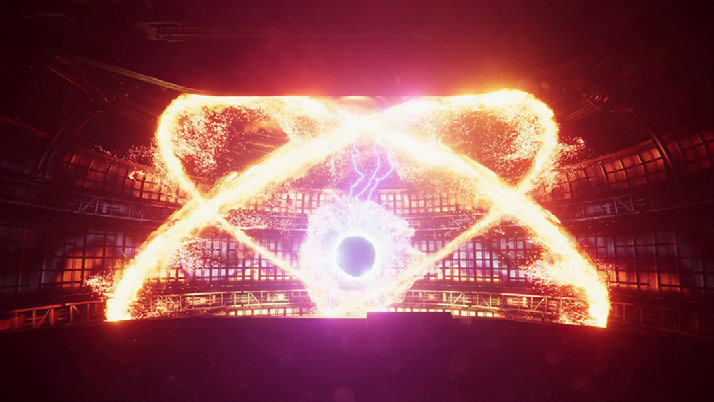
VI: HÀNG TRIỆU particle trên màn hình tạo bằng Visual Effect Graph. / EN: Millions of particles on-screen created with the Visual Effect Graph.
| Particle System | Visual Effect Graph | |
|---|---|---|
| Chạy trên | 🖥️ CPU | ⚡ GPU — qua compute shader |
| Quy mô | Mô phỏng HÀNG NGHÌN particle | Mô phỏng HÀNG TRIỆU particle trong hiệu ứng quy mô lớn |
| Điều khiển | Dùng script C# để định nghĩa system và từng particle | Graph view có khả năng tùy biến CAO |
| Physics | ✅ Tương tác được với hệ thống physics và mọi Collider trong Scene | ❌ KHÔNG truy cập được hệ thống physics |
| Khả năng đặc biệt | — | ✅ Particle tương tác được với COLOR và DEPTH BUFFER; làm việc với Point Caches, Vector Fields, Signed Distance Fields |
| Tương thích | ✅ Tương thích TỐI ĐA — chạy trên MỌI nền tảng Unity hỗ trợ | ⚠️ CHỈ chạy trên nền tảng hỗ trợ COMPUTE SHADER và HDRP (hỗ trợ URP hiện đang Preview) |
Quy tắc chọn — nhớ khả năng thiết bị
VI: "Khi chọn một trong hai hệ thống, hãy nhớ tới TÍNH TƯƠNG THÍCH của thiết bị. Hầu hết PC và console HỖ TRỢ compute shader, nhưng NHIỀU thiết bị mobile thì KHÔNG. Nếu nền tảng đích của bạn CÓ hỗ trợ compute shader, Unity cho phép bạn dùng CẢ HAI loại mô phỏng particle trong cùng dự án."
EN: "When selecting one of the two systems, keep DEVICE COMPATIBILITY in mind. Most PCs and consoles support compute shaders, but MANY mobile devices do NOT. If your target platform does support compute shaders, Unity allows you to use BOTH types of particle simulation in your project."
👉 Nhắc lại từ §5.3: dù dùng hệ thống nào, overdraw của particle vẫn là mối lo hàng đầu.
25. 🎆 Tối ưu VFX Graph — Toàn bộ chương OPTIMIZATION¶
📕 Nguồn: e-book The definitive guide to creating advanced visual effects in Unity, 120 trang — chương OPTIMIZATION (tr.98–110), bóc tách toàn văn + trích ảnh.
"Sau khi làm việc SÂU với VFX Graph, bạn nhiều khả năng sẽ muốn TÁI TỔ CHỨC và TỐI ƯU chúng — GIỐNG như cách một lập trình viên profile code và kiểm tra hiệu năng của nó.
✅ Khi hiệu ứng đã TRÔNG ĐÚNG, hãy ĐẢM BẢO nó KHÔNG dùng tài nguyên DƯ THỪA trước khi deploy vào game hay ứng dụng cuối cùng."
"After working CLOSELY with VFX Graphs, you'll likely want to REORGANIZE and OPTIMIZE them, MUCH LIKE how a programmer profiles code and checks its performance.
✅ Once the effect LOOKS RIGHT, make SURE it's NOT using EXCESS resources before deploying to your final game or application."
25.1. Profiler & Frame Debugger cho VFX¶
"Unity Profiler (
Window > Analysis > Profiler) và Frame Debugger (Window > Analysis > Frame Debugger) có thể dùng để tối ưu graph của bạn cho hiệu năng MẠNH HƠN.🚨 TUY NHIÊN, Unity EDITOR có thể ẢNH HƯỞNG tới thông tin profiling của bạn, dẫn tới KẾT QUẢ KHÔNG CHÍNH XÁC.
✅ Dùng tuỳ chọn Profiler STANDALONE PROCESS hoặc TẠO MỘT BUILD RIÊNG khi bạn cần đo hiệu năng THỰC TẾ."
⏱️ Nhắc lại metric đúng:
"Khi xem xét thống kê rendering, hãy chú ý CHI PHÍ THỜI GIAN MỖI FRAME thay vì frame per second.
fpscó thể GÂY HIỂU LẦM khi làm chuẩn đo vì nó PHI TUYẾN.📊 Nếu bạn nhắm 60 fps, hãy dùng 16 ms/frame làm frame budget (hoặc 33 ms/frame cho 30 fps)."
👉 Cùng một bài học với Module 1 §1 — fps phi tuyến, frame time thì tuyến tính.
🔍 "Frame Debugger hiển thị thông tin draw call. Panel TRÁI hiển thị trình tự draw call và các sự kiện rendering khác, sắp xếp PHÂN CẤP. Panel PHẢI hiển thị chi tiết của draw call được chọn, GỒM CẢ shader pass và texture. Điều này giúp bạn đóng vai 'THÁM TỬ FRAME' và tìm ra Unity đang tiêu tài nguyên ở ĐÂU."
"The Unity Profiler (
Window > Analysis > Profiler) and Frame Debugger (Window > Analysis > Frame Debugger) can be used to optimize your graphs for STRONGER performance.🚨 HOWEVER, the Unity EDITOR can AFFECT your profiling information, leading to INACCURATE RESULTS.
✅ Use the Profiler STANDALONE PROCESS option or CREATE A SEPARATE BUILD when you need to measure REAL-WORLD performance."
⏱️ The correct metric, restated:
"When examining rendering statistics, take note of the TIME COST PER FRAME rather than frames per second. The
fpscan be MISLEADING as a benchmark because it's NONLINEAR.📊 If you're aiming for 60 fps, use 16 ms per frame as your frame budget (or 33 ms per frame for 30 fps)."
👉 The same lesson as Module 1 §1 — fps is nonlinear, frame time is linear.
🔍 "The Frame Debugger shows draw call information. The LEFT panel shows the sequence of draw calls and other rendering events arranged HIERARCHICALLY. The RIGHT panel displays the details of a selected draw call, INCLUDING shader passes and textures. This helps you play 'FRAME DETECTIVE' and find out WHERE Unity is spending its resources."
25.2. 🕵️ "Những nghi phạm quen thuộc" — Bảy điểm phải rà¶
| # | Nghi phạm / Suspect | Nguyên văn Unity |
|---|---|---|
| ① | Texture size Kích thước texture |
"Nếu asset KHÔNG tiến gần Camera, hãy GIẢM độ phân giải của nó." |
| ② | Capacity Sức chứa |
"ÍT particle hơn thì dùng ÍT tài nguyên hơn. Đặt Capacity trong Initialize Block để GIỚI HẠN số particle TỐI ĐA của System." |
| ③ | Visibility and lifetime Khả kiến & vòng đời |
"Nhìn chung, NẾU bạn KHÔNG THỂ THẤY thứ gì đó trên màn hình, hãy TẮT nó đi." |
| ④ | Operators and memory Operator & bộ nhớ |
"ĐƠN GIẢN HOÁ các Operator KHÔNG CẦN THIẾT. Nếu KHÔNG khác biệt về mặt THỊ GIÁC, hãy dùng ÍT VÒNG LẶP hơn." |
| ⑤ | Flipbooks | "Thay vì mô phỏng TỪNG particle, hãy cân nhắc PRE-RENDER một số hiệu ứng thành texture flipbook. Rồi PHÁT LẠI texture động ở những nơi KHÔNG cần mô phỏng đầy đủ." |
| ⑥ | Mesh size Kích thước mesh |
"Nếu particle của bạn là Output Meshes, hãy CHẮC CHẮN GIẢM số đa giác." |
| ⑦ | Excessive overdraw Overdraw quá mức |
"Nếu bạn có NHIỀU bề mặt trong suốt, chúng SẼ NGỐN tài nguyên rendering. Dùng RENDERING DEBUGGER (Window > Analysis > Rendering Debugger) để kiểm tra overdraw dư thừa và tinh chỉnh graph tương ứng. Đồng thời, CHUYỂN SANG OCTAGON PARTICLE khi có thể." |
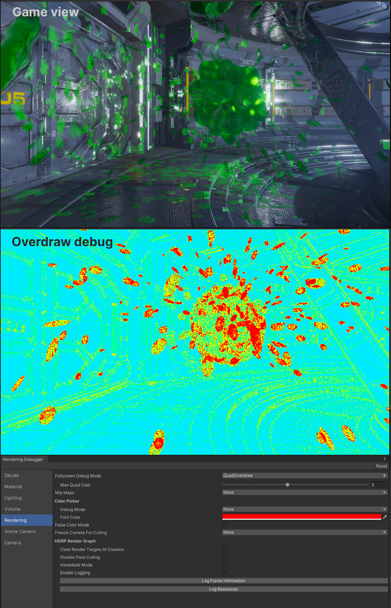
VI: Rendering Debugger — chế độ QuadOverdraw (Max Quad Cost = 5). Trên: Game view · Dưới: Overdraw debug — XANH LAM = rẻ · VÀNG = trung bình · ĐỎ = tốn kém. Chú ý vụ nổ ở giữa và các mảnh particle đều hiện ĐỎ. / EN: The Rendering Debugger in QuadOverdraw mode. Minimize overdraw (red) to improve performance.
🔬 QuadOverdraw chính là công cụ ĐO trực tiếp vấn đề ở §6
VI: Chế độ này KHÔNG đếm số lần một pixel bị vẽ lại như Overdraw thường — nó đếm CHI PHÍ QUAD, tức chính là overshading đã phân tích ở §6. Particle nhỏ và mảnh vụn hiện ĐỎ vì mỗi mảnh chỉ phủ vài pixel nhưng vẫn buộc GPU shade trọn khối 2×2 quad. Tham số Max Quad Cost đặt ngưỡng ứng với màu đỏ (ở ảnh trên là 5).
EN: This mode does NOT count how many times a pixel is redrawn like plain Overdraw — it counts QUAD COST, i.e. exactly the overshading analyzed in §6. Small particles and debris show RED because each fragment covers only a few pixels yet still forces the GPU to shade a full 2×2 quad. Max Quad Cost sets the threshold that maps to red (5 in the image above).
🧪 A/B test bằng cách bật/tắt từng Block
"Khi tìm nguyên nhân hiệu năng, hãy BẬT hoặc TẮT TỪNG Block bằng checkbox ở góc TRÊN-PHẢI. Điều này cho phép bạn A/B test NHANH để đo hiệu năng (TRƯỚC và SAU), qua đó CÔ LẬP một phần của graph.
⚠️ ĐỪNG QUÊN khôi phục các Block về trạng thái Active sau khi xong."
🐞 Debug modes trong VFX Control panel:
"VFX Control panel gồm Debug mode dùng để xác định VÒNG ĐỜI và SỨC CHỨA của particle — hai thứ có thể ảnh hưởng tới CẢ hiệu năng LẪN mức dùng bộ nhớ. Sửa một instance Visual Effect từ Inspector, rồi đặt tuỳ chọn Debug thành
AlivehoặcEfficiency.📈 Các đồ thị kết quả sẽ cho thấy BAO NHIÊU particle đang SỐNG, hoặc con số đó SO SÁNH thế nào với sức chứa (capacity) đã đặt của System. Điều chỉnh count và capacity để CẢI THIỆN HIỆU SUẤT của VFX Graph."
"When troubleshooting performance, ENABLE or DISABLE EACH Block with the checkbox at the TOP-RIGHT corner. This lets you do QUICK A/B TESTING to measure performance (BEFORE and AFTER) so you can ISOLATE part of your graph.
⚠️ DON'T FORGET to restore your Blocks to their Active state once complete."
🐞 Debug modes in the VFX Control panel:
"The VFX Control panel includes Debug modes you can use to determine particle LIFETIME and CAPACITY, which can influence performance AND memory usage alike. Edit a Visual Effect instance from the Inspector, then set the Debug option to
AliveorEfficiency.📈 The resulting plots will show HOW MANY particles are ALIVE, or how that count COMPARES to the System's set capacity. Adjust your count and capacity settings to IMPROVE your VFX Graph's EFFICIENCY."
25.3. 📦 Bounds — Tối ưu culling DỰNG SẴN của VFX¶
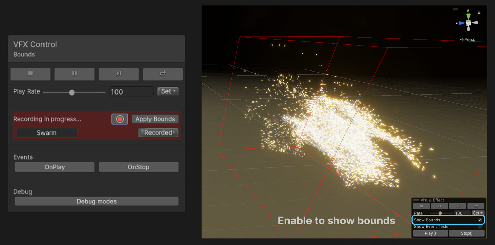
VI: Ghi lại Bounds lúc runtime — panel VFX Control (trái) với Recording in progress… · Apply Bounds · chế độ Recorded, và Scene view (phải) hiển thị khung Bounds MÀU ĐỎ nở ra theo hiệu ứng khi bật Show Bounds. / EN: Recording the Bounds at runtime.
"Bounds của visual effect là một TỐI ƯU DỰNG SẴN dựa trên KHẢ KIẾN (visibility). … NẾU Camera KHÔNG THỂ THẤY Bounds, Unity CULL hiệu ứng — nghĩa là nó KHÔNG được render."
⚖️ Hai thái cực đều SAI:
- Nếu Bounds QUÁ LỚN, camera sẽ XỬ LÝ visual effect NGAY CẢ KHI từng particle đã ra NGOÀI màn hình. Điều này LÃNG PHÍ tài nguyên.
- Nếu Bounds QUÁ NHỎ, Unity có thể CULL visual effect NGAY CẢ KHI một số particle vẫn CÒN trên màn hình. Điều này tạo ra hiện tượng POPPING nhìn thấy được.
💡 "Mặc định, Unity tính Bounds của MỖI System TỰ ĐỘNG, nhưng bạn có thể đổi Bounds Setting Mode."
"The Bounds of visual effects comprise a BUILT-IN OPTIMIZATION based on VISIBILITY. … IF the Camera CAN'T SEE the Bounds, Unity CULLS the effect, meaning that it DOESN'T RENDER."
⚖️ Both extremes are WRONG:
- If the Bounds are TOO LARGE, cameras will PROCESS the visual effects EVEN IF individual particles go OFFSCREEN. This WASTES resources.
- If the Bounds are TOO SMALL, Unity might CULL the visual effects EVEN IF some particles are STILL onscreen. This can produce VISIBLE POPPING.
💡 "By default, Unity calculates the Bounds of each System AUTOMATICALLY, but you can change the Bounds Setting Mode."
| Bounds Setting Mode | Cơ chế / Mechanism |
|---|---|
Automatic |
"Unity NỞ RỘNG Bounds để giữ hiệu ứng LUÔN NHÌN THẤY. ⚠️ NẾU tuỳ chọn này KHÔNG phải là cách HIỆU QUẢ NHẤT, hãy dùng một trong các tuỳ chọn dưới đây để TỐI ƯU Bounds." |
Manual |
"Dùng Bounds và Bounds Padding để ĐỊNH NGHĨA một THỂ TÍCH trong Initialize Context. ⚠️ ĐƠN GIẢN nhưng TỐN THỜI GIAN để thiết lập cho TẤT CẢ System của bạn." |
Recorded ⭐ |
"Cho phép bạn GHI LẠI Bounds từ VFX Control panel. Bounds — hiển thị MÀU ĐỎ khi đang ghi — NỞ RA khi bạn phát lại hiệu ứng. Bấm Apply Bounds để LƯU kích thước." |
💎 "Bạn có thể dùng Operator LÚC RUNTIME để TÍNH Bounds cho MỖI System ở chế độ Manual hoặc Recorded. Initialize Context chứa một đầu vào Bounds Padding — dùng Vector3 này để NỚI RỘNG giá trị Bounds."
💎 "You can use Operators AT RUNTIME to CALCULATE the Bounds for each System in Manual or Recorded mode. The Initialize Context contains a Bounds Padding input; use this Vector3 to ENLARGE the Bounds' values."
25.4. 🪨 Mesh LOD & Mesh Count¶
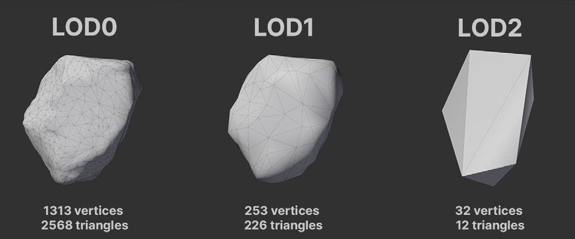
VI: Ba mức LOD của cùng một tảng đá — LOD0: 1.313 vertex / 2.568 tam giác · LOD1: 253 vertex / 226 tam giác · LOD2: 32 vertex / 12 tam giác. / EN: LOD resolutions.
"Hãy tận dụng LEVEL OF DETAIL (LOD) NẾU particle của bạn xuất ra MESH. Ở đây bạn có thể CHỈ ĐỊNH THỦ CÔNG các mesh ĐƠN GIẢN HƠN cho particle ở XA.
🔑 Particle Mesh Output có tham số `Mesh Count` hiển thị trong Inspector, cho phép bạn chỉ định TỚI BỐN MESH cho mỗi output. Khi KẾT HỢP với checkbox LOD, bạn có thể TỰ ĐỘNG CHUYỂN ĐỔI giữa các mesh DỰA TRÊN việc chúng xuất hiện LỚN tới đâu trên màn hình.
📊 Model độ phân giải CAO có thể BÀN GIAO cho model độ phân giải THẤP, tuỳ theo TỶ LỆ PHẦN TRĂM KHÔNG GIAN MÀN HÌNH trong các giá trị LOD của Output context.
📌 Trong ví dụ này, model
SpaceRock_LOD0HOÁN ĐỔI với model NHỎ HƠNSpaceRock_LOD1khi mesh chiếm DƯỚI 15% màn hình."
🚀 "Khi tạo SỐ LƯỢNG KHỔNG LỒ mesh particle, bạn sẽ KHÔNG cần render hàng TRIỆU đa giác. Điều này CẮT GIẢM ĐÁNG KỂ frame time." — Xem ví dụ PlanetaryRing trong dự án mẫu.
👉 Con số ở ảnh trên nói lên tất cả: LOD0 → LOD2 giảm từ 2.568 xuống 12 tam giác — tức 0,47%, tương đương giảm 99,5% khối lượng geometry. Cùng nguyên lý với LOD thường ở §22, nhưng nhân lên với HÀNG NGHÌN particle.
"Take advantage of LEVEL OF DETAIL (LOD) IF your particles are OUTPUTTING MESHES. Here, you can MANUALLY SPECIFY SIMPLER meshes for DISTANT particles.
🔑 Particle Mesh Outputs have a `Mesh Count` parameter visible in the Inspector, which lets you specify UP TO FOUR MESHES per output. When you COMBINE this with the LOD checkbox, you can AUTOMATICALLY SWITCH between meshes BASED ON how large they appear onscreen.
📊 Higher resolution models can HAND OFF to lower resolution models, depending on the SCREEN SPACE PERCENTAGE in the LOD values of the Output context.
📌 In this example, the
SpaceRock_LOD0model SWAPS with the smallerSpaceRock_LOD1model when the mesh occupies LESS THAN 15% of the screen."
🚀 "When creating a MASSIVE NUMBER of mesh particles, you WON'T need to render MILLIONS of polygons. This SIGNIFICANTLY CUTS DOWN the frame time." — See the PlanetaryRing example in the sample project.
👉 The numbers above say it all: LOD0 → LOD2 drops from 2,568 to 12 triangles — 0.47%, a 99.5% reduction in geometry work. The same principle as regular LOD in §22, but multiplied across THOUSANDS of particles.
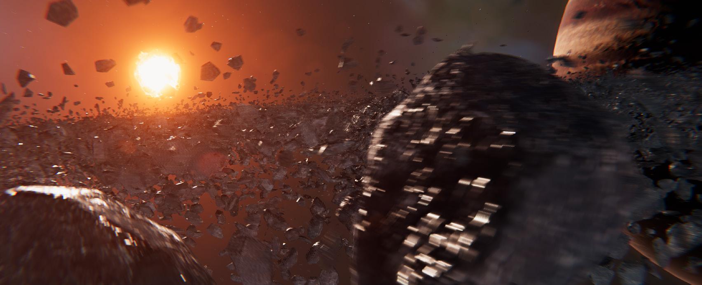
VI: Mesh LOD tiết kiệm tài nguyên rendering — hàng nghìn mảnh thiên thạch, mỗi mảnh tự chọn mức LOD theo kích thước trên màn hình. / EN: Mesh LODs save rendering resources.
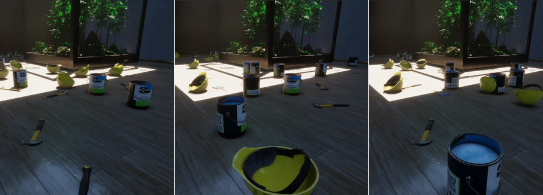
VI: Mesh Count dùng KHÔNG kèm LOD — BỐN mesh khác nhau cho Output Particle Lit Mesh tạo ra sự ĐA DẠNG cho các vật thể rải trên sàn. / EN: The Mesh Count randomizes mesh particles.
💡 "Bạn cũng có thể tận dụng Mesh Count mà KHÔNG dùng LOD. Trong trường hợp này, ta dùng NHIỀU MESH để thêm TÍNH NGẪU NHIÊN." — Một draw setup, nhiều hình dạng: đa dạng thị giác MÀ KHÔNG tốn thêm draw call.
💡 "You can similarly leverage the Mesh Count WITHOUT LOD. In this case, we use MULTIPLE MESHES to add RANDOMNESS." — One draw setup, many shapes: visual variety WITHOUT extra draw calls.
25.5. 🔺 Particle rendering — Tam giác, Octagon & Low Res Transparency¶
| Kỹ thuật | Nguyên văn Unity | Áp dụng |
|---|---|---|
| Triangle particles | "Với MỘT NỬA lượng geometry so với quad particle, chúng HIỆU QUẢ cho hiệu ứng DI CHUYỂN NHANH và render SỐ LƯỢNG LỚN particle." | ✅ Mọi pipeline |
| Simplified lighting | "NẾU bạn KHÔNG cần shader Lit HDRP đầy đủ, hãy CHUYỂN sang cái ÍT NGỐN tài nguyên hơn. TUỲ BIẾN output bằng Shader Graph để BỎ những tính năng bạn KHÔNG cần cho một số hiệu ứng." (ví dụ: scene mẫu Bonfire dùng Shader Graph cách điệu, ĐƠN GIẢN HOÁ MẠNH output) | ✅ Mọi pipeline |
| Low resolution transparency 🏆 | "Trong HDRP Rendering properties, bật Low Res Transparency để render particle trong suốt ở ĐỘ PHÂN GIẢI THẤP HƠN. 🚀 Điều này sẽ TĂNG HIỆU NĂNG GẤP BỐN LẦN, đổi lại một chút MỜ. Khi dùng KHÔN NGOAN, nó gần như KHÔNG THỂ PHÂN BIỆT với render ở độ phân giải đầy đủ." |
⚠️ CHỈ HDRP |
| Octagon particles | "Octagon particle CẮT BỎ các GÓC của quad particle. NẾU texture particle của bạn TRONG SUỐT ở các góc, kỹ thuật này có thể GIẢM hoặc NGĂN overdraw. Vùng trong suốt CHỒNG NHAU vẫn đòi hỏi MỘT SỐ tính toán, nên dùng octagon giúp TIẾT KIỆM công sức KHÔNG CẦN THIẾT trong việc tính chỗ các GÓC của quad GIAO NHAU." | ⚠️ CHỈ HDRP |
💡 Vì sao Octagon là ý tưởng thông minh
VI: Một quad particle có 4 góc RỖNG (alpha = 0) nhưng GPU vẫn phải shade chúng rồi mới loại. Cắt góc thành bát giác giảm ~15% diện tích fragment mà KHÔNG đổi hình ảnh — và với particle, diện tích chính là fill rate (§5). Đây là overdraw "miễn phí" bị loại bỏ, không phải đánh đổi chất lượng.
EN: A quad particle has 4 EMPTY corners (alpha = 0) that the GPU still shades before discarding. Cropping to an octagon removes ~15% of fragment area with NO visual change — and for particles, area IS fill rate (§5). This is free overdraw eliminated, not a quality trade-off.
25.6. 🚀 Case study — Tối ưu tia lửa trên Spaceship Demo¶
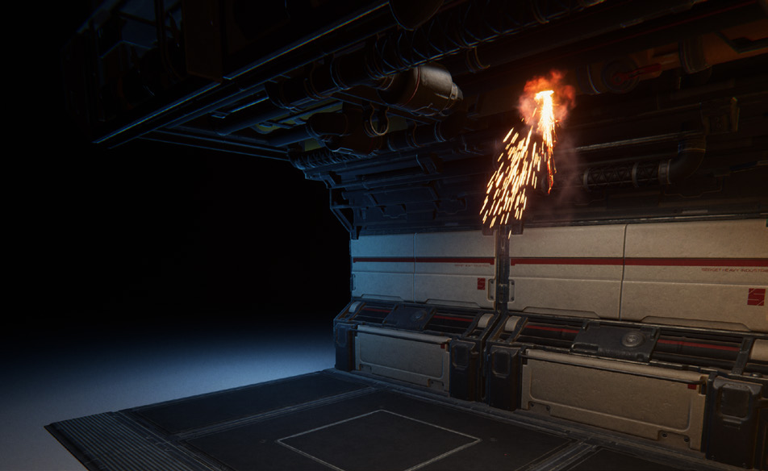
VI: Tia lửa bắn ra từ vách khoang tàu — hiệu ứng Sparkle trong Spaceship Demo. / EN: Particles show the spaceship in danger.
🔴 Vấn đề:
"Khi độ toàn vẹn của con tàu bắt đầu HỎNG, sự căng thẳng tăng lên. Camera RUNG dữ dội trong khi tia lửa bắn ra từ vách khoang. Lõi tàu cạn dần và tia lửa xuất hiện THƯỜNG XUYÊN HƠN.
💀 Hãy nhớ rằng chỉ vài particle cho MỖI tia lửa cũng đã TỐN tài nguyên. Tạo ra vài CHỤC tia lửa có thể sinh ra HÀNG TRĂM draw call DƯ THỪA.
⚠️ Tình huống này có thể CHẤP NHẬN được khi đang PROTOTYPE, nhưng MỌI kém hiệu quả ĐÁNG KỂ nên được KHẮC PHỤC trong graph TRƯỚC KHI game của bạn phát hành."
🟢 Giải pháp — custom VFX Binder:
"Giải pháp cho dự án Spaceship là dùng một CUSTOM VFX BINDER — trong ví dụ này là
MultiPosOrientedParameterBinder.🔑 Component tuỳ chỉnh này CHUYỂN ĐỔI một SỐ LƯỢNG LỚN Transform thành một POINT CACHE MAP. Bạn sau đó có thể TRUY CẬP dữ liệu chứa trong map đó.
✅ MỘT mô phỏng DUY NHẤT có thể TÁI TẠO cùng timing và vị trí của hiệu ứng Sparkle bằng cách truy cập Position Map và Direction Map trong Initialize Particle Context.
🏆 KẾT QUẢ? HÀNG TRĂM draw call ÍT HƠN và CHỈ CÒN một NHÚM instance VFX. So sánh graph
SparkleBurst_SinglevàSparkleBurst_Shaketrong dự án Spaceship Demo để thấy khác biệt."
💎 Nguyên lý tổng quát — đáng ghi nhớ:
"LƯU DỮ LIỆU TRONG TEXTURE là một kỹ thuật tối ưu PHỔ BIẾN cho hiệu ứng thời gian thực. Nếu bạn dùng Unity 2021 LTS trở lên, hãy tận dụng hỗ trợ GRAPHICS BUFFER (thử nghiệm) khi di chuyển LƯỢNG LỚN dữ liệu."
👉 Cùng một tư tưởng với §12 Animation Instancing (VertexCache) và §23.2 (compute shader): đẩy dữ liệu lên GPU MỘT LẦN dưới dạng texture/buffer, thay vì submit từng đối tượng qua CPU mỗi frame.
🔴 The problem:
"As the ship's integrity begins to FAIL, the tension is heightened. The camera SHAKES VIOLENTLY while the sparks fly off the interior bulkhead. The core nears depletion and the sparks appear MORE FREQUENTLY.
💀 Remember that EVEN JUST A FEW particles for each spark will COST resources. Instantiating a few DOZEN sparks can generate HUNDREDS of EXTRA draw calls.
⚠️ This situation might be FINE while PROTOTYPING, but ANY significant inefficiencies SHOULD be RECTIFIED in your graphs BEFORE your game application ships."
🟢 The solution — a custom VFX Binder:
"The solution for the Spaceship project is to use a CUSTOM VFX BINDER — in this example,
MultiPosOrientedParameterBinder.🔑 This custom component CONVERTS a LARGE NUMBER of Transforms into a POINT CACHE MAP. You can then ACCESS the data contained in the map.
✅ A SINGLE simulation can RECREATE the same Sparkle effect's timing and placement by accessing the Position Map and Direction Map in the Initialize Particle Context.
🏆 The result? HUNDREDS of FEWER draw calls and ONLY A HANDFUL of VFX instances. Compare the
SparkleBurst_SingleandSparkleBurst_Shakegraphs in the Spaceship Demo project to see the differences."
💎 The general principle — worth remembering:
"STORING DATA IN TEXTURES is a COMMON optimization technique for real-time effects. If you're using Unity 2021 LTS or newer, harness its support for experimental GRAPHICS BUFFERS when moving LARGE AMOUNTS of data."
👉 The same idea as §12 Animation Instancing (VertexCache) and §23.2 (compute shaders): push data to the GPU ONCE as a texture/buffer, instead of submitting each object through the CPU every frame.
🖼️ Image Sequencer — Bake mô phỏng thành Flipbook
"Dùng Flipbook Texture Sheet để BAKE hiệu ứng động thành một sprite.
🔑 NẾU bạn KHÔNG có frame budget để MÔ PHỎNG các hiệu ứng như KHÓI, LỬA, hay VỤ NỔ, việc lưu các ảnh thành một Flipbook Texture Sheet có thể tạo ra hiệu ứng "ĐÃ BAKE" TƯƠNG ĐƯƠNG mà KHÔNG có CHI PHÍ CAO.
▶️ Quy trình: ① dùng Unity hoặc một package DCC khác để render một CHUỖI ẢNH của hiệu ứng vào thư mục dự án → ② chuyển các ảnh riêng lẻ thành MỘT texture sheet DUY NHẤT bằng Image Sequencer → ③ chỉnh timing và lặp trước khi phát lại bằng Flipbook Player Block."
🧰 VFXToolbox — "bổ sung công cụ cho nghệ sĩ VFX của Unity. Nó cho phép EXPORT file .pCache và .vf từ Point Cache Exporter và Volume Exporter của SideFX Houdini." Cài qua Package Manager từ repo GitHub.
"Use Flipbook Texture Sheets to BAKE animated effects into a sprite.
🔑 IF you DON'T have the frame budget to SIMULATE effects like SMOKE, FIRE, or EXPLOSIONS, saving the images as a Flipbook Texture Sheet can produce a COMPARABLE "BAKED" effect WITHOUT the HIGH COST.
▶️ The workflow: ① use Unity or another DCC package to render an IMAGE SEQUENCE of effects into a project folder → ② convert the individual images into a SINGLE texture sheet using the Image Sequencer → ③ retime and loop the images before playing them back with the Flipbook Player Block."
🧰 VFXToolbox — "features additional tools for Unity visual effects artists. It enables the export of .pCache and .vf files from SideFX's Houdini Point Cache Exporter and Volume Exporter." Install via the Package Manager from the GitHub repo.
👉 Đây chính là cơ chế Flipbook đã dùng ở §38.1 — nhưng ở đây nó được trình bày như một quyết định TỐI ƯU, không chỉ là kỹ thuật authoring. / This is the same Flipbook mechanism used in §38.1 — but framed here as an OPTIMIZATION decision, not just an authoring technique.
26. 🔶 Tối ưu HDRP — Tắt tính năng & Rendering Debugger¶
📘 Nguồn: The Definitive Guide to Lighting in HDRP, 83 tr. và HDRP Lighting — 2021 LTS edition, 100 tr. — các mục Optimizing HDRP (tr.17–19), Rendering Debugger (tr.74–75), cùng toàn bộ Performance tip / Optimization tip rải trong hai sách.
26.1. 🔌 Nguyên tắc gốc — CHỈ bật thứ bạn THỰC SỰ dùng¶
"Hãy Ý THỨC rằng việc BẬT THÊM tính năng trong Pipeline Asset sẽ TIÊU THỤ THÊM tài nguyên.
🔑 NHÌN CHUNG, hãy tối ưu dự án của bạn để CHỈ DÙNG những gì BẠN CẦN nhằm đạt được hiệu ứng bạn muốn. NẾU bạn KHÔNG cần một tính năng, hãy TẮT nó để CẢI THIỆN hiệu năng và TIẾT KIỆM tài nguyên."
💡 Đây là điểm khác biệt cốt lõi giữa HDRP và URP về mặt tối ưu: URP mặc định là TỐI THIỂU và bạn THÊM vào; HDRP mặc định là ĐẦY ĐỦ và bạn phải BỚT đi. Một dự án HDRP chưa từng được dọn tính năng gần như CHẮC CHẮN đang trả tiền cho những thứ nó không dùng.
"BE AWARE that ENABLING MORE features in the Pipeline Asset will CONSUME MORE resources.
🔑 IN GENERAL, optimize your project to USE ONLY WHAT YOU NEED to achieve your intended effect. IF you DON'T need a feature, you can TURN IT OFF to IMPROVE performance and SAVE resources."
💡 This is the core optimization difference between HDRP and URP: URP defaults to MINIMAL and you ADD; HDRP defaults to FULL and you must REMOVE. An HDRP project whose features have never been pruned is almost CERTAINLY paying for things it does not use.
Hai danh sách tính năng có thể TẮT — nguyên văn / The two feature lists you can disable — verbatim
| Vị trí / Location | Tính năng có thể tắt nếu KHÔNG dùng / Features to disable if unused |
|---|---|
| 🅰️ Trong HDRP Asset In the HDRP Asset |
Decals · Low-res transparency · Transparent backface · Depth prepass · Depth postpass · SSAO · SSR · Contact shadows · Volumetrics · Subsurface scattering · Distortions |
| 🅱️ Trong Frame Settings của Camera In the camera's Frame Settings — (Main Camera, camera dùng cho hiệu ứng tích hợp như reflection, hoặc camera phụ cho hiệu ứng tuỳ chỉnh) |
Refraction · Post-Process · After Post-Process · Transmission · Reflection Probe · Planar Reflection Probe · Big Tile Prepass |
🪤 Bẫy hai tầng — bật ở Global Settings VẪN chưa đủ
"Khi phát triển dự án, bạn có thể cần quay lại Global Settings để bật/tắt một tính năng cụ thể. MỘT SỐ tính năng sẽ KHÔNG render TRỪ KHI checkbox tương ứng trong HDRP Global Settings được bật. Hãy đảm bảo bạn CHỈ bật những tính năng bạn CẦN vì chúng có thể tác động TIÊU CỰC tới hiệu năng rendering và mức dùng bộ nhớ.
🚨 Bật một tính năng trong HDRP Global Settings KHÔNG ĐẢM BẢO nó có thể được render bất cứ lúc nào bởi bất kỳ camera nào. Bạn PHẢI đảm bảo rằng Render Pipeline Asset có Quality level đang được chọn tại
Project Settings > QualityCŨNG hỗ trợ tính năng đó.📌 Ví dụ: để đảm bảo camera có thể render Volumetric Clouds, bạn PHẢI bật chúng ở CẢ
HDRP Global Settings > Frame Settings > Camera > LightingLẪN trong Render Pipeline Asset đang hoạt động, dướiLighting > Volumetrics."
👉 Cùng bản chất với cái bẫy Quality Level của URP ở §33.5: setting nằm ở HAI NƠI, và cả hai đều phải đồng ý.
🔎 Mẹo tìm nhanh: "Hãy dùng ô Search ở góc TRÊN-PHẢI trong Project Settings. Nó sẽ CHỈ hiển thị các panel liên quan với từ khoá được TÔ SÁNG."
"As you develop your project, you might need to return to the Global settings to toggle a specific feature on or off. SOME features will NOT RENDER UNLESS the corresponding checkbox in HDRP Global Settings is ENABLED. Make sure you ONLY ENABLE features you REQUIRE because they might NEGATIVELY IMPACT the rendering performance and memory usage.
🚨 Enabling a feature in the HDRP Global Settings does NOT GUARANTEE it can be rendered at any time by any camera. You MUST ensure that the Render Pipeline Asset whose Quality level is selected under
Project Settings > Qualitysupports that feature AS WELL.📌 For instance, to ensure cameras can render Volumetric Clouds, you must toggle them under
HDRP Global Settings > Frame Settings > Camera > LightingAND in the active Render Pipeline Asset, underLighting > Volumetrics."
👉 The same nature as URP's Quality Level trap in §33.5: the setting lives in TWO PLACES, and both must agree.
🔎 A quick-find tip: "make use of the top right Search field in the Project Settings. This will ONLY show you the relevant panels with the search terms HIGHLIGHTED."
26.2. ⚖️ Bốn "Performance tip" & "Optimization tip" nằm rải trong sách¶
| Chủ đề | Nguyên văn Unity | Ghi chú |
|---|---|---|
| 🫧 Volumes (Performance tip) | "ĐỪNG dùng SỐ LƯỢNG LỚN Volume. Việc ĐÁNH GIÁ MỖI Volume (blending, spatialization, tính toán override, v.v.) đi kèm MỘT SỐ CHI PHÍ CPU." | 👉 Chi phí này nằm ở CPU, không phải GPU — nó KHÔNG hiện ra khi bạn profile GPU. Xem §35.1 về Blend Distance / Weight / Priority |
| 🪞 Realtime Reflection Probes (Optimization tip) | "Để tối ưu realtime reflection probe, TẮT MỌI tính năng rendering KHÔNG ẢNH HƯỞNG ĐÁNG KỂ tới chất lượng thị giác của phản chiếu, bằng cách override setting camera CHUNG hoặc TỪNG reflection probe. Bạn cũng có thể VIẾT SCRIPT để TIME SLICE việc cập nhật." | 👉 Bổ sung cho §18: ngoài Refresh Mode và Time Slicing có sẵn, bạn còn có thể cắt tính năng bên trong lần render của probe |
| 🌀 Motion Blur | "Để TỐI THIỂU HOÁ chi phí hiệu năng, hãy GIẢM Sample Count, TĂNG Minimum Velocity, và GIẢM Maximum Velocity. Bạn cũng có thể GIẢM các tham số Camera Clamp Mode trong Additional Properties." |
👉 Một trong 16 hiệu ứng post-processing ở §35.2 — và là hiệu ứng đắt nhất theo Sample Count |
| 🌫️ Local Volumetric Fog | "HDRP VOXEL HOÁ Local Volumetric Fog để TĂNG CƯỜNG hiệu năng. TUY NHIÊN, việc voxel hoá có thể trông RẤT THÔ. Để GIẢM RĂNG CƯA, hãy dùng một Density Mask Texture và TĂNG Blend Distance để LÀM MỀM rìa của sương mù." |
👉 Ví dụ điển hình của đánh đổi hiệu năng ↔ chất lượng có cách bù: giữ tối ưu, sửa artifact bằng texture thay vì bằng độ phân giải |
🔀 Forward vs Deferred trong HDRP — lời khuyên thẳng thắn:
"[Forward trong HDRP dùng] MỘT PASS DUY NHẤT trên mỗi material của object. TUY NHIÊN, đó VẪN là một quá trình TƯƠNG ĐỐI ĐẮT ĐỎ.
✅ NẾU hiệu năng là vấn đề, bạn có thể muốn dùng DEFERRED SHADING thay thế."
👉 So sánh với §9: HDRP mặc định cho phép chọn Deferred, Forward, hoặc Both qua Lit Shader Mode trong Pipeline Asset. Với scene NHIỀU ĐÈN, deferred thường thắng.
🎛️ Nhắc lại §23.4: setting High Quality của HDRP MẶC ĐỊNH dùng shadow map 4K — đây thường là khoản cắt giảm ĐẦU TIÊN và LỚN NHẤT trong một dự án HDRP.
🔀 Forward vs Deferred in HDRP — the blunt advice:
"[HDRP Forward uses] a SINGLE PASS PER OBJECT MATERIAL. HOWEVER, it's STILL a RELATIVELY EXPENSIVE process.
✅ IF performance is an ISSUE, you may want to use DEFERRED SHADING instead."
👉 Compare with §9: HDRP lets you choose Deferred, Forward, or Both via Lit Shader Mode in the Pipeline Asset. For MANY-LIGHT scenes, deferred usually wins.
🎛️ Recall §23.4: HDRP's High Quality setting DEFAULTS to a 4K shadow map — usually the FIRST and LARGEST cut in an HDRP project.
26.3. 🔬 Rendering Debugger — "Thám tử PIXEL"¶
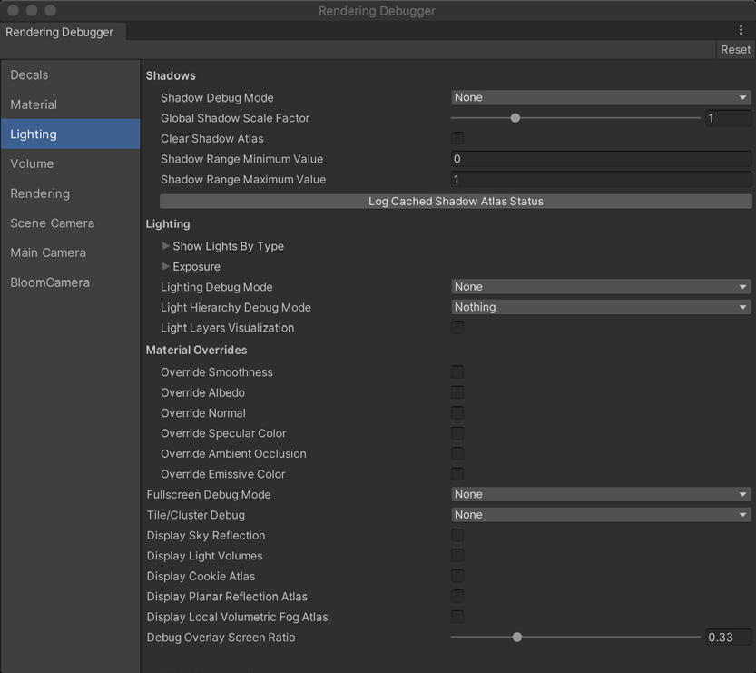
VI: Cửa sổ Rendering Debugger — cột trái phân loại theo Decals · Material · Lighting · Volume · Rendering · Scene Camera · Main Camera · BloomCamera. Panel Lighting đang mở với Shadow Debug Mode · Global Shadow Scale Factor · Clear Shadow Atlas · Log Cached Shadow Atlas Status, các Material Overrides (Smoothness / Albedo / Normal / Specular Color / Ambient Occlusion / Emissive Color), và Fullscreen Debug Mode · Tile/Cluster Debug · Display Sky Reflection · Display Light Volumes · Display Cookie Atlas · Display Planar Reflection Atlas · Display Local Volumetric Fog Atlas · Debug Overlay Screen Ratio 0.33. / EN: The Rendering Debugger window.
"Cửa sổ Rendering Debugger (
Window > Analysis > Rendering Debugger) chứa các công cụ debug và trực quan hoá ĐẶC THÙ cho Scriptable Render Pipeline. Phía trái được TỔ CHỨC THEO DANH MỤC. MỖI panel cho phép bạn CÔ LẬP vấn đề với lighting, material, volume, camera, v.v.🔍 Debugger có thể giúp bạn KHẮC PHỤC SỰ CỐ một RENDER PASS CỤ THỂ. Trên panel Lighting, bạn có thể vào FULLSCREEN DEBUG MODE và chọn tính năng để debug.
🕵️ Các chế độ Debug này cho phép bạn đóng vai "THÁM TỬ PIXEL" và XÁC ĐỊNH NGUỒN GỐC của một vấn đề lighting hay shading cụ thể. Các panel bên trái có thể cho bạn thấy THỐNG KÊ SỐNG CÒN từ camera, Material, Volume, v.v., để giúp TỐI ƯU bản render.
🖥️ Với chế độ Debug toàn màn hình đang bật, Scene và Game view CHUYỂN sang một TRỰC QUAN HOÁ TẠM THỜI của một tính năng cụ thể. Điều này có thể là một CÔNG CỤ CHẨN ĐOÁN hữu ích."
"The Rendering Debugger window (
Window > Analysis > Rendering Debugger) contains debugging and visualization tools SPECIFIC to the Scriptable Render Pipeline. The left side is ORGANIZED BY CATEGORY. EACH panel allows you to ISOLATE issues with lighting, materials, volumes, cameras, and so on.🔍 The Debugger can help you TROUBLESHOOT a SPECIFIC RENDERING PASS. On the Lighting panel, you can enter FULLSCREEN DEBUG MODE and choose features to debug.
🕵️ These Debug modes let you play "PIXEL DETECTIVE" and IDENTIFY THE SOURCE of a specific lighting or shading issue. The panels on the left can show you VITAL STATISTICS from your cameras, Materials, Volumes, and so on, to help OPTIMIZE your render.
🖥️ With the fullscreen Debug mode ACTIVE, the Scene and Game views SWITCH to a TEMPORARY VISUALIZATION of a specific feature. This can serve as a USEFUL DIAGNOSTIC."
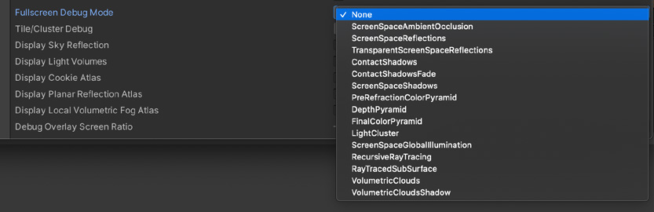
VI: Danh sách Fullscreen Debug Mode đầy đủ: ScreenSpaceAmbientOcclusion · ScreenSpaceReflections · TransparentScreenSpaceReflections · ContactShadows · ContactShadowsFade · ScreenSpaceShadows · PreRefractionColorPyramid · DepthPyramid · FinalColorPyramid · LightCluster · ScreenSpaceGlobalIllumination · RecursiveRayTracing · RayTracedSubSurface · VolumetricClouds · VolumetricCloudsShadow. / EN: The full Fullscreen Debug Mode options list.
🎯 Ghép chế độ Debug với tính năng bạn định TẮT
VI: Danh sách trên khớp gần như 1-1 với danh sách tính năng cần tắt ở §26.1. Đó chính là quy trình đúng:
- Bật Fullscreen Debug Mode cho tính năng bạn NGHI là thừa (ví dụ
ScreenSpaceReflections) - Nhìn xem nó thực sự đóng góp bao nhiêu vào khung hình cuối
- Nếu đóng góp KHÔNG đáng kể → TẮT nó trong HDRP Asset (§26.1)
- Đo lại frame time để xác nhận mức tiết kiệm
👉 Đây là phiên bản HDRP của vòng lặp "đo → sửa → đo lại" ở §3.
EN: That list maps almost 1-to-1 onto the disable-list in §26.1. That IS the correct workflow: enable the Fullscreen Debug Mode for the feature you suspect is redundant → see how much it actually contributes → if negligible, disable it in the HDRP Asset → re-measure frame time. This is the HDRP version of the "measure → change → re-measure" loop from §3.
PHẦN H — ASYNC UPLOAD PIPELINE (AUP)¶
📖 Nguồn: blog.unity.com — Optimizing loading performance: Understanding the Async Upload Pipeline (2018-10-08) — cào lại toàn văn qua Jina reader, kèm 6 hình gốc.
🎯 Lời mở đầu của Unity — nói thẳng vào lợi ích:
"KHÔNG AI thích màn hình loading. Bạn có biết rằng chỉ cần điều chỉnh nhanh vài tham số của Async Upload Pipeline (AUP) là có thể CẢI THIỆN ĐÁNG KỂ thời gian load không?
💎 Hiểu được điều này có thể giúp bạn tăng tốc thời gian load ĐÁNG KỂ — MỘT SỐ DỰ ÁN ĐÃ THẤY MỨC CẢI THIỆN HƠN 2 LẦN!"
👉 Đây là phần bổ sung trực tiếp cho Module 3 (Addressables & loading) — nhưng nó nằm ở tầng GPU upload, nên thuộc về Module này.
🎯 Unity's opening — straight to the benefit:
"NOBODY likes loading screens. Did you know that you can quickly adjust Async Upload Pipeline (AUP) parameters to SIGNIFICANTLY improve your loading times?
💎 This understanding could help you speed up loading time significantly — SOME PROJECTS HAVE SEEN OVER 2X PERFORMANCE IMPROVEMENTS!"
👉 This directly complements Module 3 (Addressables & loading) — but it sits at the GPU-upload layer, so it belongs here.
27. AUP được dùng KHI NÀO — và những NGOẠI LỆ¶
🔑 Điều kiện để asset đi qua AUP
"Trước 2018.3, AUP CHỈ xử lý TEXTURE. Bắt đầu từ 2018.3 beta, AUP giờ load CẢ texture LẪN mesh — nhưng có một số NGOẠI LỆ:
❌ Texture ĐANG BẬT read/write, hoặc mesh ĐANG BẬT read/write HOẶC ĐÃ NÉN (compressed), sẽ KHÔNG dùng AUP.
💡 (Lưu ý rằng Texture Mipmap Streaming, giới thiệu ở 2018.2, CŨNG dùng AUP.)"
📝 Ghi chú raw của bạn khớp CHÍNH XÁC: "Qualify setting: Textures/Model that are NOT read/write-enabled are uploaded through the AUP."
👉 Đây là lý do KHÁC để tắt Read/Write Enabled ngoài lý do bộ nhớ ở Module 3: bật nó cũng LOẠI asset khỏi đường ống load nhanh.
"Prior to 2018.3, the AUP only handled TEXTURES. Starting with 2018.3 beta, the AUP now loads textures AND meshes, but there are some EXCEPTIONS:
❌ Textures that are read/write enabled, or meshes that are read/write enabled OR COMPRESSED, will NOT use the AUP.
💡 (Note that Texture Mipmap Streaming, which was introduced in 2018.2, ALSO uses AUP.)"
📝 Your raw note matches EXACTLY: "Qualify setting: Textures/Model that are NOT read/write-enabled are uploaded through the AUP."
👉 This is ANOTHER reason to disable Read/Write Enabled beyond the memory reason in Module 3: enabling it also EXCLUDES the asset from the fast loading path.
28. Quá trình load hoạt động thế nào — Serialized file vs .resS¶
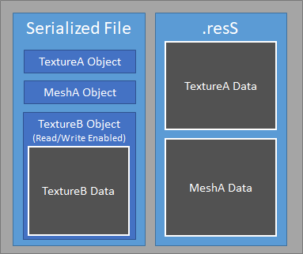
VI: Bố cục dữ liệu — Serialized File chứa TextureA Object, MeshA Object, và TextureB Object (Read/Write Enabled) KÈM LUÔN TextureB Data ở BÊN TRONG. Còn .resS chứa TextureA Data và MeshA Data. / EN: The serialized file / .resS split; note that read/write-enabled TextureB keeps its data INSIDE the serialized file.
🔬 Cơ chế build-time — toàn văn:
"Trong quá trình BUILD, Texture hoặc Mesh Object được ghi vào một SERIALIZED FILE, còn dữ liệu nhị phân LỚN (texture hoặc vertex data) được ghi vào một file
.resSđi kèm. Bố cục này áp dụng cho CẢ player data LẪN asset bundle.✅ Việc TÁCH RỜI object và dữ liệu nhị phân cho phép LOAD NHANH HƠN serialized file (vốn thường chứa các object NHỎ), và nó cho phép load LIỀN MẠCH (streamlined) dữ liệu nhị phân lớn từ file
.resSSAU ĐÓ.🔑 Khi Texture hoặc Mesh Object được DESERIALIZE, nó GỬI một COMMAND vào COMMAND QUEUE của AUP. Khi command đó HOÀN TẤT, dữ liệu Texture/Mesh ĐÃ được upload lên GPU và object có thể được TÍCH HỢP trên MAIN THREAD."
💡 Cơ chế upload — ring buffer:
"Trong quá trình upload, dữ liệu nhị phân lớn từ file
.resSđược ĐỌC vào một RING BUFFER CÓ KÍCH THƯỚC CỐ ĐỊNH. Khi đã ở trong bộ nhớ, dữ liệu được upload lên GPU theo kiểu TIME-SLICE trên RENDER THREAD.👉 KÍCH THƯỚC ring buffer và THỜI LƯỢNG time-slice chính là HAI tham số bạn có thể thay đổi để tác động tới hành vi hệ thống."
🔬 The build-time mechanism — verbatim:
"During the build process, the Texture or Mesh Object is written to a SERIALIZED FILE and the LARGE binary data (texture or vertex data) is written to an accompanying
.resSfile. This layout applies to BOTH player data AND asset bundles.✅ The SEPARATION of the object and binary data allows for FASTER LOADING of the serialized file (which will generally contain SMALL objects), and it enables STREAMLINED loading of the large binary data from the
.resSfile AFTER.🔑 When the Texture or Mesh Object is DESERIALIZED, it SUBMITS a COMMAND to the AUP's COMMAND QUEUE. Once that command COMPLETES, the Texture or Mesh data has been uploaded to the GPU and the object can be INTEGRATED on the MAIN THREAD."
💡 The upload mechanism — the ring buffer:
"During the upload process, the large binary data from the
.resSfile is READ to a FIXED-SIZED RING BUFFER. Once in memory, the data is uploaded to the GPU in a TIME-SLICED fashion on the RENDER THREAD.👉 The SIZE of the ring buffer and the DURATION of the time-slice are the TWO parameters that you can change to affect the behavior of the system."
28.1. 🔁 Năm bước của MỖI command AUP¶
| # | Bước / Step (nguyên văn) | Giải thích tiếng Việt |
|---|---|---|
| 1 | Wait until the required memory is available in the ring buffer. | CHỜ cho tới khi ring buffer có ĐỦ bộ nhớ cần thiết |
| 2 | Read data from the source .resS file to the allocated memory. |
ĐỌC dữ liệu từ file .resS nguồn vào vùng nhớ đã cấp phát |
| 3 | Perform post-processing (texture decompression, mesh collision generation, per platform fixup, etc). | HẬU XỬ LÝ: giải nén texture, sinh mesh collision, fixup theo nền tảng… |
| 4 | Upload in a time-sliced manner on the render thread. | UPLOAD theo kiểu time-slice trên RENDER THREAD |
| 5 | Release Ring Buffer memory. | GIẢI PHÓNG bộ nhớ Ring Buffer |
⚠️ Điều gì xảy ra khi Ring Buffer ĐẦY — chi tiết quan trọng
"NHIỀU command có thể đang tiến hành ĐỒNG THỜI, nhưng TẤT CẢ đều phải cấp phát bộ nhớ cần thiết ra từ CÙNG MỘT ring buffer CHIA SẺ.
🔑 Khi ring buffer ĐẦY, các command mới sẽ PHẢI CHỜ. Việc chờ này KHÔNG gây BLOCK main-thread và KHÔNG ảnh hưởng frame rate — nó CHỈ ĐƠN GIẢN LÀM CHẬM quá trình async loading."
👉 Đây là điểm rất quan trọng để chẩn đoán: ring buffer nhỏ KHÔNG làm tụt FPS — nó chỉ KÉO DÀI màn hình loading. Nếu bạn thấy FPS mượt nhưng load lâu, đây là nghi phạm số một.
"MULTIPLE commands can be in progress SIMULTANEOUSLY, but ALL must allocate their required memory out of the SAME SHARED ring buffer.
🔑 When the ring buffer FILLS UP, new commands will WAIT; this waiting will NOT cause main-thread BLOCKING or affect FRAME RATE, it simply SLOWS the async loading process."
👉 A crucial diagnostic point: a small ring buffer does NOT drop your FPS — it only LENGTHENS the loading screen. If you see smooth FPS but slow loads, this is suspect number one.
28.2. 📊 So sánh: CÓ AUP vs KHÔNG có AUP¶
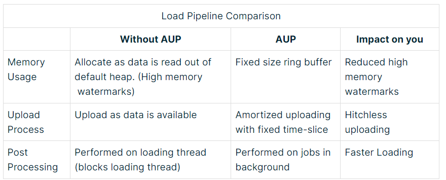
| KHÔNG có AUP / Without AUP | CÓ AUP / With AUP | Tác động lên bạn / Impact on you | |
|---|---|---|---|
| Memory Usage Dùng bộ nhớ |
Allocate as data is read out of default heap. (High memory watermarks) Cấp phát khi dữ liệu được đọc ra từ heap mặc định — đỉnh bộ nhớ CAO** |
Fixed size ring buffer Ring buffer KÍCH THƯỚC CỐ ĐỊNH** |
✅ Reduced high memory watermarks GIẢM đỉnh bộ nhớ |
| Upload Process Quá trình upload |
Upload as data is available Upload ngay khi có dữ liệu |
Amortized* uploading with fixed time-slice Upload PHÂN BỔ ĐỀU với time-slice CỐ ĐỊNH*** |
✅ Hitchless uploading Upload KHÔNG GIẬT |
| Post Processing Hậu xử lý |
Performed on loading thread (blocks loading thread) Chạy trên loading thread — **CHẶN loading thread |
Performed on JOBS in background Chạy trên **JOB ở nền |
✅ Faster Loading Load NHANH HƠN |
29. 🎛️ Ba tham số API — Giá trị mặc định & Khuyến nghị¶
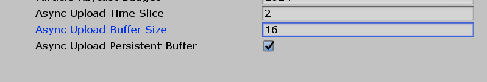
VI: Ba setting trong Project Settings > Quality — Async Upload Time Slice: 2, Async Upload Buffer Size: 16, Async Upload Persistent Buffer ✓. / EN: The three Async Upload settings in Quality Settings.
"Để tận dụng TỐI ĐA AUP trong 2018.3, có BA tham số có thể điều chỉnh LÚC RUNTIME cho hệ thống này."
💡 "Các setting này có thể chỉnh qua scripting API HOẶC qua menu QualitySettings."
"To take FULL ADVANTAGE of the AUP in 2018.3, there are THREE parameters that can be adjusted at RUNTIME for this system."
💡 "These settings can be adjusted through the scripting API OR via the QualitySettings menu."
29.1. QualitySettings.asyncUploadTimeSlice¶
"LƯỢNG THỜI GIAN tính bằng MILI-GIÂY dành cho việc upload texture và mesh data trên RENDER THREAD MỖI FRAME.
🔑 Khi một thao tác async load đang tiến hành, hệ thống sẽ thực hiện HAI time slice có kích thước này.
📊 Giá trị MẶC ĐỊNH là 2 ms.
⚠️ Nếu giá trị này QUÁ NHỎ, bạn có thể bị BOTTLENECK ở khâu upload texture/mesh lên GPU.
⚠️ Ngược lại, giá trị QUÁ LỚN có thể dẫn tới GIẬT (hitching) frame rate."
"The AMOUNT OF TIME in MILLISECONDS spent uploading textures and mesh data on the RENDER THREAD for EACH FRAME.
🔑 When an async load operation is in progress, the system will perform TWO time slices of this size.
📊 The DEFAULT value is 2ms.
⚠️ If this value is TOO SMALL, you could become BOTTLENECKED on texture/mesh GPU uploading.
⚠️ A value TOO LARGE, on the other hand, might result in framerate HITCHING."
29.2. QualitySettings.asyncUploadBufferSize¶
"KÍCH THƯỚC của Ring Buffer tính bằng MEGABYTE.
🔑 Khi upload time slice xảy ra mỗi frame, ta muốn CHẮC CHẮN có ĐỦ dữ liệu trong ring buffer để TẬN DỤNG TOÀN BỘ time-slice.
⚠️ Nếu ring buffer QUÁ NHỎ, upload time slice sẽ bị CẮT NGẮN.
📊 Mặc định là 4 MB ở 2018.2, nhưng ĐÃ TĂNG lên 16 MB ở 2018.3."
"The SIZE of the Ring Buffer in MEGABYTES.
🔑 When the upload time slice occurs each frame, we want to be SURE that we have ENOUGH DATA in the ring buffer to UTILIZE THE ENTIRE time-slice.
⚠️ If the ring buffer is TOO SMALL, the upload time slice will be CUT SHORT.
📊 The default was 4MB in 2018.2 but has increased to 16MB in 2018.3."
29.3. QualitySettings.asyncUploadPersistentBuffer¶
"Giới thiệu ở 2018.3, cờ này quyết định upload ring buffer có được GIẢI PHÓNG (deallocated) khi MỌI pending read đã xong hay KHÔNG.
🚨 Việc cấp phát rồi giải phóng buffer này THƯỜNG có thể gây PHÂN MẢNH BỘ NHỚ (memory fragmentation), nên NHÌN CHUNG hãy để nó ở giá trị mặc định (
true).💡 Nếu bạn THỰC SỰ cần đòi lại bộ nhớ khi KHÔNG loading, bạn có thể set giá trị này thành
false."
👉 Liên hệ Module 3 — phân mảnh bộ nhớ là kẻ thù của mobile; ở đây Unity chọn giữ buffer THƯỜNG TRỰC chính vì lý do đó.
"Introduced in 2018.3, this flag determines IF the upload ring buffer is DEALLOCATED when ALL pending reads are complete.
🚨 Allocating and deallocating this buffer can OFTEN cause MEMORY FRAGMENTATION, so it should GENERALLY be left at its default (
true).💡 If you REALLY need to reclaim memory when you are NOT loading, you can set this value to
false."
👉 Connects to Module 3 — memory fragmentation is the enemy on mobile; here Unity keeps the buffer PERSISTENT for exactly that reason.
30. 📈 Workflow thực tế — Đọc Profiler để chỉnh AUP¶
30.1. Trước khi chỉnh — 2 ms / 4 MB (mặc định)¶
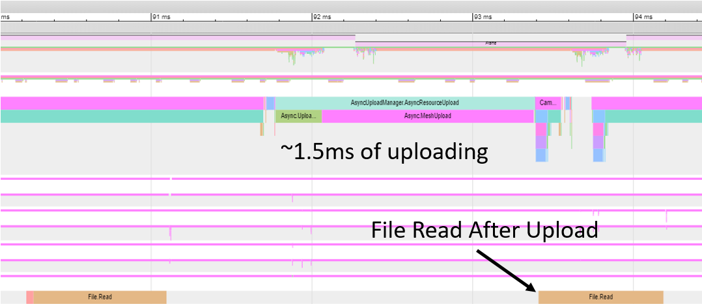
VI: Timeline Profiler với setting mặc định — AsyncUploadManager.AsyncResourceUpload chỉ chiếm ~1.5 ms uploading, và ngay sau đó có "File Read After Upload" (mũi tên) — DẤU HIỆU ring buffer QUÁ NHỎ. / EN: The Timeline Profiler at default settings: only ~1.5 ms of uploading, then a File Read immediately after upload.
"Hãy khảo sát một workload có RẤT NHIỀU texture và mesh được upload qua AUP, dùng time slice 2 ms mặc định và ring buffer 4 MB.
🔑 Vì ta đang loading nên ta được 2 TIME-SLICE mỗi render frame ⇒ đáng lẽ phải có 4 MILI-GIÂY thời gian upload.
💀 Nhìn dữ liệu profiler, ta CHỈ dùng KHOẢNG 1.5 mili-giây.
🔍 Ta cũng thấy rằng NGAY SAU khi upload, một thao tác READ MỚI được phát ra vì giờ ring buffer mới có bộ nhớ trống. ĐÂY LÀ DẤU HIỆU cần một RING BUFFER LỚN HƠN."
"Let's examine a workload with lots of textures and meshes being uploaded through the Async Upload Pipeline using the default 2ms time slice and a 4MB ring buffer.
🔑 Since we're loading, we get 2 TIME-SLICES per render frame, so we should have 4 MILLISECONDS of upload time.
💀 Looking at the profiler data, we only use about 1.5 milliseconds.
🔍 We can also see that IMMEDIATELY AFTER the upload, a NEW READ operation is issued now that memory is available in the ring buffer. This is a SIGN that a LARGER RING BUFFER is needed."
30.2. Sau khi chỉnh — 4 ms / 16 MB¶
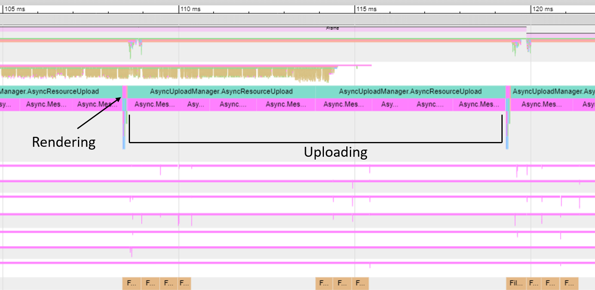
VI: Cùng workload với Ring Buffer 16 MB và time slice 4 ms — gần như TOÀN BỘ render thread giờ là AsyncUploadManager.AsyncResourceUpload, chỉ còn khoảng trống NGẮN để "Rendering". / EN: The same workload at 16MB / 4ms: almost all render-thread time is now uploading, with only a short gap for rendering.
"Hãy thử TĂNG Ring Buffer, và vì ta đang ở màn hình loading, việc TĂNG upload time-slice cũng là ý hay. Đây là hình dạng của Ring Buffer 16 MB và time slice 4 mili-giây:
✅ Giờ ta có thể thấy ta đang dành GẦN NHƯ TOÀN BỘ thời gian render thread để UPLOAD, và chỉ một khoảng NGẮN giữa các lần upload để RENDER frame."
"Let's try INCREASING the Ring Buffer and since we're in a loading screen, it is also a good idea to INCREASE the upload time-slice. Here's what a 16MB Ring Buffer and 4-millisecond time slice look like:
✅ Now we can see that we are spending ALMOST ALL our render thread time UPLOADING, and just a SHORT time between uploads RENDERING the frame."
30.3. 🏁 Kết quả benchmark — Con số THẬT¶
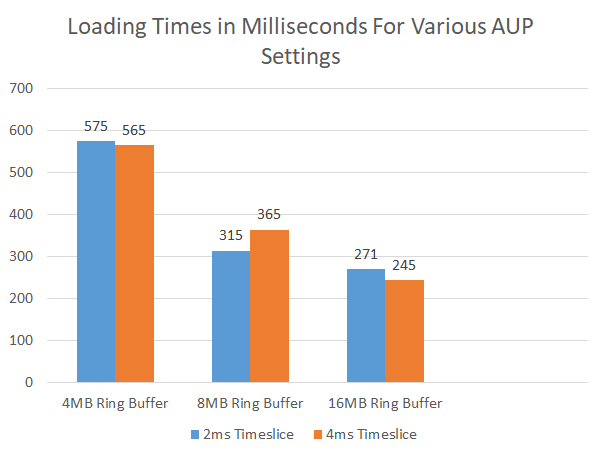
| Ring Buffer | 2 ms Timeslice | 4 ms Timeslice |
|---|---|---|
| 4 MB | 575 ms | 565 ms |
| 8 MB | 315 ms | 365 ms |
| 16 MB | 271 ms | 🏆 245 ms |
📋 Điều kiện đo — Unity ghi rõ:
"Dưới đây là thời gian load của workload mẫu với NHIỀU upload time slice và kích thước Ring Buffer khác nhau. Test chạy trên MacBook Pro, Intel Core i7 2.8 GHz chạy OS X El Capitan.
⚠️ Tốc độ upload và tốc độ I/O sẽ KHÁC NHAU trên các nền tảng và thiết bị khác nhau.
📦 Workload là một TẬP CON của dự án mẫu Viking Village mà Unity dùng nội bộ để test hiệu năng. Vì có các object KHÁC cũng đang được load, ta KHÔNG thể lấy được mức thắng hiệu năng CHÍNH XÁC của từng giá trị.
✅ Tuy nhiên, có thể nói an toàn rằng trong trường hợp này, việc load texture và mesh NHANH GẤP ÍT NHẤT 2 LẦN khi chuyển từ setting 4MB/2MS sang 16MB/4MS."
🔢 Kiểm chứng bằng bảng trên: 575 ms ÷ 245 ms = 2.35 lần ✅
🔍 Quan sát tinh tế: ở 4 MB, tăng timeslice từ 2→4 ms hầu như KHÔNG giúp gì (575→565) — vì ring buffer quá nhỏ khiến time slice bị cắt ngắn. Ở 8 MB, timeslice 4 ms còn TỆ HƠN (315→365). CHỈ khi ring buffer đủ 16 MB thì timeslice lớn mới phát huy (271→245).
👉 Bài học: LUÔN tăng asyncUploadBufferSize TRƯỚC, rồi mới tăng asyncUploadTimeSlice.
📋 The measurement conditions — Unity states them clearly:
"Below are the loading times of the sample workload with a variety of upload time slices and Ring Buffer sizes. Tests were run on a MacBook Pro, 2.8GHz Intel Core i7 running OS X El Capitan.
⚠️ Upload speeds and I/O speeds will VARY on different platforms and devices.
📦 The workload is a SUBSET of the Viking Village sample project that we use internally for performance testing. Because there are OTHER objects being loaded, we aren't able to get the PRECISE performance win of the different values.
✅ It's safe to say in this case, however, that the texture and mesh loading is AT LEAST TWICE AS FAST when switching from the 4MB/2MS settings to the 16MB/4MS settings."
🔢 Verified against the table: 575 ms ÷ 245 ms = 2.35× ✅
🔍 A subtle observation: at 4 MB, raising the timeslice from 2→4 ms barely helps at all (575→565) — because the too-small ring buffer cuts the time slice short. At 8 MB, a 4 ms timeslice is actually WORSE (315→365). ONLY once the ring buffer reaches 16 MB does the larger timeslice pay off (271→245).
👉 The lesson: ALWAYS raise asyncUploadBufferSize FIRST, then raise asyncUploadTimeSlice.
30.4. Cấu hình tối ưu — chính xác như ghi chú raw của bạn¶
// Cấu hình Unity khuyến nghị cho dự án mẫu này
// The configuration Unity recommends for this sample project
QualitySettings.asyncUploadTimeSlice = 4; // ms mỗi frame trên render thread
QualitySettings.asyncUploadBufferSize = 16; // MB — kích thước Ring Buffer
QualitySettings.asyncUploadPersistentBuffer = true; // giữ buffer, tránh phân mảnh
// Mẫu thực chiến: TĂNG khi vào loading screen, HẠ khi vào gameplay
// Practical pattern: raise during the loading screen, lower during gameplay
using UnityEngine;
public static class AsyncUploadTuner
{
// Lưu lại giá trị gameplay để khôi phục
const int GameplayTimeSlice = 2;
const int GameplayBufferSize = 16;
// Trong loading screen ta KHÔNG cần frame rate cao ⇒ ưu tiên upload
const int LoadingTimeSlice = 4;
const int LoadingBufferSize = 32; // Unity: "increase it to 16MB or 32MB"
public static void EnterLoadingScreen()
{
QualitySettings.asyncUploadTimeSlice = LoadingTimeSlice;
QualitySettings.asyncUploadBufferSize = LoadingBufferSize;
QualitySettings.asyncUploadPersistentBuffer = true;
}
public static void ExitLoadingScreen()
{
// Hạ time slice để KHÔNG ăn vào ngân sách render thread lúc gameplay
QualitySettings.asyncUploadTimeSlice = GameplayTimeSlice;
QualitySettings.asyncUploadBufferSize = GameplayBufferSize;
// Vẫn để persistent = true: tránh memory fragmentation
}
}
31. ✅ Năm khuyến nghị chính thức của Unity¶
"Khuyến nghị CHUNG để tối ưu tốc độ load của texture và mesh:"
- 🎯 Chọn
asyncUploadTimeSliceLỚN NHẤT mà KHÔNG gây rớt frame. - ⏫ Trong màn hình loading, TĂNG TẠM THỜI
asyncUploadTimeSlice. - 🔬 Dùng Profiler để khảo sát mức TẬN DỤNG time slice. Time slice sẽ hiện lên trong profiler với tên
AsyncUploadManager.AsyncResourceUpload. TĂNGasyncUploadBufferSizeNẾU time slice của bạn KHÔNG được tận dụng hết. - 💾 Mọi thứ nhìn chung sẽ load NHANH HƠN với
asyncUploadBufferSizeLỚN HƠN — vậy nên nếu bạn CÓ ĐỦ bộ nhớ, hãy tăng nó lên 16 MB hoặc 32 MB. - 🔒 Để
asyncUploadPersistentBufferởtrueTRỪ KHI bạn có lý do THUYẾT PHỤC để giảm dung lượng bộ nhớ runtime lúc KHÔNG loading.
"General recommendations for optimizing loading speed of textures and meshes:"
- 🎯 Choose the LARGEST
QualitySettings.asyncUploadTimeSlicethat doesn't result in dropping frames. - ⏫ During loading screens, TEMPORARILY INCREASE
QualitySettings.asyncUploadTimeSlice. - 🔬 Use the profiler to examine the time slice UTILIZATION. The time slice will show up as
AsyncUploadManager.AsyncResourceUploadin the profiler. INCREASEQualitySettings.asyncUploadBufferSizeif your time slice is NOT being FULLY UTILIZED. - 💾 Things will generally load FASTER with a LARGER
QualitySettings.asyncUploadBufferSize, so if you can afford the memory, INCREASE IT TO 16MB OR 32MB. - 🔒 Leave
QualitySettings.asyncUploadPersistentBufferset totrueUNLESS you have a COMPELLING reason to reduce your runtime memory usage while NOT loading.
32. ❓ FAQ chính thức — Toàn văn 4 câu hỏi¶
Q1: Upload time-slice xảy ra BAO NHIÊU LẦN trên render thread? / How often will time-sliced uploading occur on the render thread?
"Upload time-slice sẽ xảy ra MỘT LẦN mỗi render frame, HOẶC HAI LẦN trong một thao tác async load.
🔑 VSYNC CÓ ẢNH HƯỞNG tới pipeline này. Trong lúc render thread đang CHỜ VSync, bạn CÓ THỂ đang upload.
📊 Nếu bạn đang chạy frame 16 ms rồi MỘT frame bị kéo dài — giả sử 17 ms — bạn sẽ phải CHỜ VSync 15 ms.
👉 NHÌN CHUNG, FRAME RATE CÀNG CAO thì upload time slice xảy ra CÀNG THƯỜNG XUYÊN."
💡 Đây là một hệ quả PHẢN TRỰC GIÁC rất giá trị: chạy nhanh hơn cũng khiến LOAD nhanh hơn. Liên hệ Module 1 về Gfx.WaitForPresent và VSync.
"Time-sliced uploading will occur ONCE per render frame, OR TWICE during an async load operation.
🔑 VSync AFFECTS this pipeline. While the render thread is WAITING for a VSync, you COULD be uploading.
📊 If you are running at 16ms frames and then ONE frame goes long, say 17ms, you will end up WAITING for the vsync for 15ms.
👉 IN GENERAL, the HIGHER the FRAME RATE, the MORE FREQUENTLY upload time slices will occur."
💡 A valuable COUNTERINTUITIVE consequence: running faster also makes you LOAD faster. Connects to Module 1 on Gfx.WaitForPresent and VSync.
Q2: Những gì được load QUA AUP? / What is loaded through the AUP?
- ✅ Texture KHÔNG bật read/write được upload qua AUP.
- ✅ Từ 2018.2, texture MIPMAP được STREAM qua AUP.
- ✅ Từ 2018.3, MESH cũng được upload qua AUP — MIỄN LÀ chúng KHÔNG NÉN và KHÔNG bật read/write.
- ✅ Textures that are NOT read/write-enabled are uploaded through the AUP.
- ✅ As of 2018.2, texture MIPMAPS are STREAMED through the AUP.
- ✅ As of 2018.3, MESHES are also uploaded through the AUP so long as they are UNCOMPRESSED and NOT read/write enabled.
Q3: Nếu ring buffer KHÔNG ĐỦ LỚN để chứa dữ liệu (ví dụ một texture RẤT LỚN)? / What if the ring buffer is not large enough to hold the data being uploaded?
"Các upload command LỚN HƠN ring buffer sẽ CHỜ cho tới khi ring buffer được TIÊU THỤ HOÀN TOÀN, sau đó ring buffer sẽ được CẤP PHÁT LẠI (reallocated) cho vừa với allocation lớn đó.
🔄 Khi upload hoàn tất, ring buffer sẽ được CẤP PHÁT LẠI về kích thước BAN ĐẦU."
🚨 Hệ quả thực chiến: một texture 4096×4096 duy nhất có thể làm ĐÌNH TRỆ toàn bộ pipeline VÀ gây HAI lần realloc — chính là nguồn phân mảnh bộ nhớ được cảnh báo ở §27.3.
"Upload commands that are LARGER than the ring buffer will WAIT until the ring buffer is FULLY CONSUMED, then the ring buffer will be REALLOCATED to fit the large allocation.
🔄 Once the upload is complete, the ring buffer will be REALLOCATED to its ORIGINAL size."
🚨 Practical consequence: a single 4096×4096 texture can STALL the entire pipeline AND cause TWO reallocations — exactly the source of memory fragmentation warned about in §27.3.
Q4: API load ĐỒNG BỘ hoạt động thế nào? (Resources.Load, AssetBundle.LoadAsset…) / How do synchronous load APIs work?
"Các lệnh gọi load ĐỒNG BỘ VẪN DÙNG AUP, và về cơ bản sẽ CHẶN (block) MAIN THREAD cho tới khi thao tác async upload HOÀN TẤT.
🔑 Loại API load được dùng KHÔNG LIÊN QUAN (not relevant)."
💀 Đây là điểm quan trọng nhất của FAQ: Resources.Load KHÔNG "bỏ qua" AUP để nhanh hơn — nó vẫn đi qua ĐÚNG pipeline đó, chỉ khác là nó ĐÓNG BĂNG main thread trong lúc chờ. ⇒ Cấu hình AUP kém sẽ khiến CẢ load đồng bộ cũng chậm theo.
"Synchronous loading calls USE the AUP and will essentially BLOCK the MAIN THREAD until the async upload operation COMPLETES.
🔑 The type of loading API used is NOT RELEVANT."
💀 The most important point in the FAQ: Resources.Load does NOT "bypass" the AUP to go faster — it goes through the SAME pipeline, it just FREEZES the main thread while waiting. ⇒ A poorly configured AUP makes SYNCHRONOUS loads slow too.
PHẦN I — URP CHUYÊN SÂU: CHUYỂN ĐỔI, LIGHTING & PIPELINE CALLBACKS¶
📗 Toàn bộ Phần J bóc tách từ e-book Introduction to the Universal Render Pipeline for advanced Unity creators (2021 LTS, 125 trang) — các chương Conversion process (tr.12–32), Lighting in URP (tr.33–64), Shaders (tr.65–73), Pipeline callbacks (tr.74–84), Post-processing (tr.85–92), Camera Stacking (tr.93–96).
33. Chuyển dự án BiRP → URP¶
33.1. Ba bước bắt buộc¶
🚨 CẢNH BÁO đầu tiên của Unity — đọc TRƯỚC KHI làm bất cứ điều gì:
"Quan trọng: HÃY CHẮC CHẮN sao lưu dự án bằng source control TRƯỚC KHI thực hiện các bước trong phần này. Quá trình này SẼ CHUYỂN ĐỔI asset, và Unity KHÔNG cung cấp tuỳ chọn undo. Nếu bạn dùng source control, bạn sẽ có thể quay lại các phiên bản trước của asset nếu cần."
① Cài package: Window > Package Manager → dropdown Unity Registry → Universal RP → Download → Install. (URP KHÔNG có sẵn trong Unity 2021.2 / 2021 LTS.)
② Tạo URP Asset: chuột phải trong Project window → Create > Rendering > URP Asset (with Universal Renderer).
③ Gán vào Graphics panel: Edit > Project Settings > Graphics → bấm chấm nhỏ cạnh None (Render Pipeline Asset) → chọn UniversalRP.
⚠️ Cái bẫy Unity nêu đích danh:
"DÙ đã theo các bước này để tạo URP Asset, một scene đang mở trong Scene hoặc Game view VẪN sẽ dùng Built-in Render Pipeline. Bạn PHẢI hoàn thành BƯỚC CUỐI CÙNG để chuyển sang URP" — chính là bước ③.
🚨 Unity's first warning — read BEFORE doing anything:
"Important: Be sure to backup your project using source control BEFORE following the steps in this section. This process WILL CONVERT assets, and Unity does NOT provide an undo option. If you use source control, you will be able to revert to previous versions of the assets if necessary."
① Install the package: Window > Package Manager → Unity Registry dropdown → Universal RP → Download → Install. (URP is NOT included in Unity 2021.2 / 2021 LTS.)
② Create a URP Asset: right-click in the Project window → Create > Rendering > URP Asset (with Universal Renderer).
③ Assign it in the Graphics panel: Edit > Project Settings > Graphics → click the small dot next to None (Render Pipeline Asset) → select UniversalRP.
⚠️ The trap Unity calls out by name:
"DESPITE following these steps to create a URP Asset, an open scene in the Scene or Game view will STILL use the Built-in Render Pipeline. You MUST complete one LAST step to make the switch to URP" — which is step ③.
33.2. 🔑 HAI asset, KHÔNG phải một — điểm gây nhầm lẫn nhất¶
URP dùng HAI file .asset riêng biệt
"Thay vì tạo MỘT URP Asset duy nhất, URP dùng HAI file, mỗi file có phần mở rộng
.asset."
🅰️ File kết thúc bằng _Renderer — RENDERER DATA ASSET
"Đây là Renderer Data Asset mà bạn có thể dùng để LỌC các layer mà renderer làm việc trên đó, và CHẶN (intercept) rendering pipeline để tuỳ biến cách scene được render. Nhờ vậy bạn có thể tạo ra các hiệu ứng chất lượng cao.
Ngoài ra,
UniversalRP_Rendererđiều khiển logic rendering và các pass ở TẦNG CAO cho URP. Nó hỗ trợ đường Forward và Deferred, cùng một 2D Renderer vốn bật các tính năng như 2D lights, 2D shadows, và Light Blend Styles. Bạn thậm chí có thể MỞ RỘNG URP để tạo renderer của RIÊNG mình."
🅱️ File còn lại — SETTINGS ASSET (URP Asset)
"URP Asset còn lại phục vụ việc điều khiển setting cho Quality, Lighting, Shadows, và Post-processing. Bạn có thể dùng NHIỀU URP Asset khác nhau để điều khiển Quality settings.
🔗 Settings Asset này LIÊN KẾT tới Renderer Data Asset qua RENDERER LIST. Khi bạn tạo một URP Asset mới, Settings Asset sẽ có một Renderer List chứa MỘT mục duy nhất — chính là Renderer Data Asset được tạo cùng lúc, đặt làm default. Bạn có thể THÊM các Renderer Data Asset khác vào danh sách này."
💎 Cơ chế override theo Camera:
"Renderer mặc định được dùng cho MỌI Camera, KỂ CẢ Scene view. Một Camera có thể GHI ĐÈ renderer mặc định bằng cách chọn một renderer khác từ Renderer List. Việc này có thể làm QUA SCRIPT khi cần."
👉 Đây chính là nền tảng kỹ thuật cho ví dụ vũ khí FPS ở §22.1.
"Rather than creating a SINGLE URP Asset, URP uses TWO files, each with an
.assetextension."
🅰️ The file ending in _Renderer — the RENDERER DATA ASSET
"This is a Renderer Data Asset that you can use to FILTER the layers the renderer works on, and INTERCEPT the rendering pipeline to customize how the scene is rendered. This way, you can facilitate the creation of high-quality effects.
Additionally, the
UniversalRP_Renderercontrols HIGH-LEVEL rendering logic and passes for URP. It supports Forward and Deferred paths, and a 2D Renderer that enables features such as 2D lights, 2D shadows, and Light Blend Styles. You can even EXTEND URP to create your OWN renderers."
🅱️ The other file — the SETTINGS ASSET (URP Asset)
"The other URP Asset serves to control settings for Quality, Lighting, Shadows, and Post-processing. You can use DIFFERENT URP Assets to control the Quality settings.
🔗 This Settings Asset is LINKED to the Renderer Data Asset via the RENDERER LIST. When you create a new URP Asset, the Settings Asset will have a Renderer List containing a SINGLE item — the Renderer Data Asset created at the same time, set as the default. You can ADD alternative Renderer Data Assets to this list."
💎 The per-Camera override mechanism:
"The default renderer is used for ALL Cameras, INCLUDING the Scene view. A Camera can OVERRIDE the default renderer by selecting another one from the Renderer List. This can be done through the use of a SCRIPT, as needed."
👉 This is the technical foundation for the FPS weapon example in §22.1.
33.3. 🟣 Scene chuyển sang MÀU HỒNG — và Render Pipeline Converter¶
"Sau khi hoàn thành các bước trên, bạn sẽ thấy những scene tuyệt đẹp của mình BỖNG NHIÊN chuyển sang MÀU HỒNG CÁNH SEN (magenta). Đó là vì các shader mà material trong dự án BiRP dùng KHÔNG được hỗ trợ trong URP. May mắn là có cách khôi phục scene về chất lượng ban đầu."
🔧 Công cụ: Window > Rendering > Render Pipeline Converter → chọn Built-In to URP (dự án 3D) hoặc Convert Built-In to 2D (URP) (dự án 2D).
Bốn converter có sẵn:
- Rendering Settings — "tạo NHIỀU Render Pipeline setting asset khớp SÁT NHẤT có thể với Quality settings của BiRP. Điều này cho phép bạn test các Quality Level HIỆU QUẢ HƠN."
- Material Upgrade — "chuyển đổi material từ BiRP sang URP."
- Animation Clip Converter — "chuyển đổi animation clip. Nó chạy SAU KHI Material Upgrade converter hoàn tất."
- Read-only Material Converter — "chuyển đổi các Material dựng sẵn, CHỈ ĐỌC có trong dự án Unity. Nó lập chỉ mục dự án và tạo file
.indextạm thời. ⚠️ Lưu ý việc này có thể mất THỜI GIAN ĐÁNG KỂ."
▶️ Sau khi chọn: bấm Initialize Converters → dự án được quét → bấm Convert Assets.
🚨 Custom shader KHÔNG được chuyển tự động:
"Custom shader KHÔNG được chuyển bằng Material Upgrade converter. … Dùng Shader Graph thường là cách NHANH NHẤT để cập nhật một custom shader lên URP."
"After you complete the above steps, you'll find that your beautiful scenes are SUDDENLY colored MAGENTA. This is because the shaders used by the materials in a Built-in Render Pipeline project are NOT supported in URP. Fortunately, there is a method for restoring your scenes to their original quality."
🔧 The tool: Window > Rendering > Render Pipeline Converter → choose Built-In to URP (3D project) or Convert Built-In to 2D (URP) (2D project).
The four available converters:
- Rendering Settings — "create MULTIPLE Render Pipeline setting assets that will match Built-in Render Pipeline Quality settings AS CLOSELY AS POSSIBLE. This lets you test different Quality Levels MORE EFFICIENTLY."
- Material Upgrade — "convert materials from the Built-in Render Pipeline to URP."
- Animation Clip Converter — "converts animation clips. It runs ONCE the Material Upgrade converter finishes."
- Read-only Material Converter — "converts the prebuilt, read-only Materials included in a Unity project. It indexes the project and creates the temporary
.indexfile. ⚠️ Note that it can take SIGNIFICANT TIME."
▶️ After selecting: click Initialize Converters → the project is scanned → click Convert Assets.
🚨 Custom shaders are NOT converted automatically:
"Custom shaders are NOT converted using the Material Upgrade converter. … Using Shader Graph is often the QUICKEST way to update a custom shader to URP."
33.4. 🎨 SÁU shader URP — và cái bẫy Simple Lit¶
| Shader URP | Mô tả / Description |
|---|---|
Universal Render Pipeline/Lit |
Shader PBR (physically based render), tương tự Standard Shader built-in, dùng được cho hầu hết vật liệu đời thực. Hỗ trợ mọi tính năng của Standard Shader với CẢ workflow metallic LẪN specular |
Universal Render Pipeline/Simple Lit |
Dùng mô hình Blinn-Phong, phù hợp cho thiết bị mobile cấp thấp hoặc game KHÔNG dùng workflow PBR |
Universal Render Pipeline/Unlit |
Shader HIỆU NĂNG CAO trên GPU — KHÔNG dùng phương trình lighting |
Universal Render Pipeline/Terrain/Lit |
Phù hợp dùng với package Terrain Tools |
Universal Render Pipeline/Particles/Lit |
Shader particle dùng mô hình lighting PBR |
Universal Render Pipeline/Particles/Unlit |
Shader particle unlit — NHẸ cho GPU |
⚠️ Bẫy hiệu năng: Simple Lit KHÔNG nhanh như legacy/mobile shader
"Mặc dù Simple Lit THAY THẾ nhiều legacy/mobile shader, HIỆU NĂNG KHÔNG GIỐNG NHAU.
💀 Legacy/mobile shader CHỈ đánh giá lighting MỘT PHẦN, trong khi Simple Lit XÉT TẤT CẢ các đèn được định nghĩa bởi URP Asset."
👉 Hệ quả thực chiến: nếu bạn port một game mobile từ BiRP và chỉ đổi Mobile/Diffuse → Simple Lit, bạn CÓ THỂ bị CHẬM ĐI vì số đèn được xét đã tăng lên. Hãy giới hạn Additional Lights > Per Object Limit trong URP Asset (xem §34.5).
"Although Simple Lit REPLACES many legacy/mobile shaders, the performance is NOT THE SAME.
💀 Legacy/mobile shaders ONLY PARTIALLY evaluate lighting, whereas Simple Lit CONSIDERS ALL LIGHTS as defined by the URP Asset."
👉 Practical consequence: if you port a mobile game from BiRP and simply swap Mobile/Diffuse → Simple Lit, you can end up SLOWER because more lights are now evaluated. Limit Additional Lights > Per Object Limit in the URP Asset (see §34.5).
33.5. 📋 Quality settings nằm ở ĐÂU — Quality panel vs URP Asset¶
"Quality settings TRƯỚC ĐÂY được xử lý trong Quality panel của Project Settings. Khi dùng URP, setting được CHIA ra giữa Quality panel và setting của TỪNG URP Asset."
"Quality settings were PREVIOUSLY handled in the Quality panel of Project Settings. When using URP, settings are DIVIDED between the Quality panel and those for EACH URP Asset."
| Nhóm | ⚙️ Nằm ở Quality panel | 📦 Nằm ở URP Asset |
|---|---|---|
| Rendering | Resolution Scaling Fixed DPI Factor · VSync Count | Anti-aliasing · Render Scale · Depth Texture · Opaque Texture · Opaque Downsampling · Terrain Holes · HDR |
| Textures | Texture Quality · Anisotropic Textures · Texture Streaming | — |
| Particles | Particle Raycast Budget | — |
| Terrain | Billboards Face Camera Position | — |
| Shadows | Shadowmask Mode | Shadow Resolution · Shadow Distance · Shadow Cascades · Cascade splits · Working unit · Depth Bias · Normal Bias · Soft Shadows |
| Async Asset Upload | Time Slice · Buffer Size · Persistent Buffer (→ §29) | — |
| Level of Detail | LOD Bias · Maximum LOD level | — |
| Meshes | Skin Weights | — |
| Lighting | — | Main Light (+Cast Shadows, Shadow Resolution) · Additional Lights (+Per Object Limit, Cast Shadows, Shadow Atlas Resolution, Shadow Resolution tiers, Cookie Atlas Resolution, Cookie Atlas Format) |
| Reflection Probes | (nhóm) | Probe Blending · Box Projection |
| Post-processing | — | Grading Mode · LUT size · Fast sRGB/Linear conversion |
🪤 Cái bẫy Quality Level — Unity mô tả chính xác sự nhầm lẫn
"Nếu bạn chuyển giữa các tuỳ chọn Quality, hãy chọn một Quality Level cho Render Pipeline Asset trong Quality panel qua Project Settings.
🚨 Lưu ý rằng NẾU Quality Level KHÔNG được đặt, Render Pipeline Asset sẽ MẶC ĐỊNH về cái được đặt làm Scriptable Render Pipeline Asset trong Graphics panel.
💀 Điều này có thể gây NHẦM LẪN khi bạn cố điều chỉnh Quality settings của một URP Asset. Ví dụ, bạn có thể VÔ TÌNH cho rằng Quality Level đặt trong URP Asset chính là cái hiện đang được Scene và Game view dùng."
👉 Nói cách khác: bạn sửa URP Asset A, nhưng màn hình đang render bằng URP Asset B. Đây là lý do #1 khiến người ta tưởng "URP không nhận setting".
"If you switch between Quality options, choose a Quality Level for the Render Pipeline Asset in the Quality panel via Project Settings.
🚨 Note that IF the Quality Level is NOT set, the Render Pipeline Asset will DEFAULT to the one set as the Scriptable Render Pipeline Asset in the Graphics panel.
💀 This can cause some CONFUSION as you attempt to adjust the Quality settings of a URP Asset. For instance, you might ACCIDENTALLY ASSUME that the Quality Level set in the URP Asset is the one currently used by the Scene and Game views."
👉 In other words: you edit URP Asset A, but the screen renders with URP Asset B. This is the #1 reason people think "URP is ignoring my settings".
33.6. 📊 BiRP → URP: Bảng ánh xạ Quality (Low & High)¶
Bảng dưới là bảng ánh xạ NGUYÊN VĂN mà Unity cung cấp — dùng để kiểm chứng converter "Rendering Settings" có tạo đúng preset hay không. Cột NA = Not applicable (không áp dụng ở nơi đó).
The table below is Unity's VERBATIM mapping — use it to verify the "Rendering Settings" converter produced the correct presets. NA = Not applicable in that location.
| Setting | BiRP Low | URP Low | URP Asset Low | BiRP High | URP High | URP Asset High |
|---|---|---|---|---|---|---|
| Pixel Light Count | 0 | NA * | NA | 2 | NA | NA |
| Anti-aliasing | Disabled | NA | Disabled | Disabled | NA | 2x |
| Render Scale | NA | NA | 1 | NA | NA | 1 |
| Real-time Reflection Probes | No | No | — | Yes | Yes | NA |
| Resolution Scaling Fixed DPI Factor | 1 | 1 | NA | 1 | 1 | NA |
| VSync Count | Don't sync | Don't sync | — | Every V Blank | Every V Blank | NA |
| Depth Texture | NA | NA | No | NA | NA | No |
| Opaque Texture | NA | NA | No | NA | NA | No |
| Terrain Holes | NA | NA | Yes | NA | NA | Yes |
| HDR | NA | NA | Yes | NA | NA | Yes |
| Texture Quality | Half res | Half res | NA | Full res | Full res | NA |
| Anisotropic Textures | Disabled | Disabled | NA | Disabled | Disabled | NA |
| Texture Streaming | No | No | NA | No | No | NA |
| Soft Particles | No | NA | NA | No | NA | NA |
| Particle Raycast Budget | 16 | 16 | NA | 256 | 256 | NA |
| Billboards Face Camera Position | No | No | NA | Yes | Yes | NA |
| Shadowmask Mode | Shadowmask | Shadowmask | NA | Distance Shadowmask | Distance Shadowmask | NA |
| Shadows | Disabled | NA | NA | Hard and Soft Shadows | NA | NA |
| Shadow Resolution | Low resolution | NA | NA | Medium resolution | NA | 2048 |
| Shadow Projection | Stable fit | NA | NA | Stable fit | NA | NA |
| Shadow Distance | 20 | NA | NA | 40 | NA | 50 |
| Shadow Near Plane Offset | 3 | NA | NA | 3 | NA | NA |
| Shadow Cascades | No Cascades | NA | NA | 2 Cascades | NA | 2 |
| Cascade splits | NA | NA | NA | 33/67 | NA | 12.5/33.8/3.8 |
| Working unit | NA | NA | NA | Percent | Percent | Metric |
| Depth Bias / Normal Bias | NA | NA | NA | NA | NA | 1 / 1 |
| Soft Shadows | NA | NA | NA | NA | NA | Yes |
| Async: Time Slice | 2 | 2 | NA | 2 | 2 | NA |
| Async: Buffer Size | 16 | 16 | NA | 16 | 16 | NA |
| Async: Persistent Buffer | Yes | Yes | NA | Yes | Yes | NA |
| LOD Bias | 0.4 | 0.4 | NA | 1 | 1 | NA |
| Maximum LOD level | 0 | 0 | NA | 0 | 0 | NA |
| Skin Weights | 4 bones | 4 bones | NA | Unlimited | Unlimited | NA |
| Main Light | NA | NA | Per pixel | NA | NA | Per pixel |
| Main Light: Cast Shadows | NA | NA | No | NA | NA | Yes |
| Additional Lights | NA | NA | Disabled | NA | NA | Per pixel |
| Additional: Per Object Limit | NA | NA | NA | NA | NA | 4 |
| Additional: Cast Shadows | NA | NA | NA | NA | NA | Yes |
| Additional: Shadow Atlas Resolution | NA | NA | NA | NA | NA | 2048 |
| Additional: Shadow Resolution tiers | NA | NA | NA | NA | NA | 512 / 1024 / 2048 |
| Additional: Cookie Atlas Resolution | NA | NA | NA | NA | NA | 2048 |
| Additional: Cookie Atlas Format | NA | NA | NA | NA | NA | Color high |
| Reflection Probes: Probe Blending | NA | NA | No | NA | NA | Yes |
| Reflection Probes: Box Projection | NA | NA | No | NA | NA | No |
| Post: Grading Mode | NA | NA | Low Dynamic Range | NA | NA | Low Dynamic Range |
| Post: LUT size | NA | NA | 16 | NA | NA | 32 |
| Post: Fast sRGB/Linear conversion | NA | NA | No | NA | NA | No |
📌 Chú thích của Unity: "* Trong URP, Pixel Light Count được xử lý bằng Additional Lights > (Per pixel) > Per Object Limit."
🔍 Ba quan sát đáng giá từ bảng này:
- ⚡ Async Upload giữ NGUYÊN 2 / 16 / Yes ở CẢ Low LẪN High — Unity coi đây là giá trị nền hợp lý phổ quát. Muốn nhanh hơn thì phải chỉnh runtime như §30.4.
- 🌑 Cascade splits ĐỔI ĐƠN VỊ: BiRP dùng Percent (33/67), URP High dùng Metric (12.5/33.8/3.8 m) — KHÔNG so sánh trực tiếp được.
- 🚫 Ở preset Low,
Additional Lights = Disabled— nghĩa là MỌI đèn ngoài Main Light BIẾN MẤT. Đây là đòn tối ưu mạnh nhất cho máy yếu.
📌 Unity's footnote: "* In URP, Pixel Light Count is handled using Additional Lights > (Per pixel) > Per Object Limit."
🔍 Three worthwhile observations from this table:
- ⚡ Async Upload stays at 2 / 16 / Yes in BOTH Low AND High — Unity treats these as universally sensible baselines. To go faster you must tune at runtime as in §30.4.
- 🌑 Cascade splits CHANGE UNITS: BiRP uses Percent (33/67), URP High uses Metric (12.5/33.8/3.8 m) — they are NOT directly comparable.
- 🚫 In the Low preset,
Additional Lights = Disabled— meaning EVERY light other than the Main Light DISAPPEARS. This is the single strongest optimization lever for weak hardware.
34. Lighting trong URP — Chi tiết đầy đủ¶
34.1. ⚠️ Vì sao lighting TRÔNG KHÁC sau khi chuyển¶
"Nếu bạn chuyển một dự án từ BiRP sang URP, bạn có thể để ý thấy KHÁC BIỆT trong lighting. Đó là vì BiRP dùng mô hình lighting GAMMA theo mặc định còn URP dùng mô hình LINEAR.
🔑 Do đó, BẤT KỲ đèn nào có giá trị intensity KHÁC 1.0 sẽ CẦN được điều chỉnh."
👉 Liên hệ §41.2 — cùng một vấn đề color space, biểu hiện khác nhau. Template URP "đảm bảo dự án của bạn được đặt dùng LINEAR color space, vốn BẮT BUỘC để tính lighting chính xác."
🔬 Khác biệt thứ hai — light falloff / attenuation:
"Một khác biệt nữa giữa BiRP và URP là cách chúng tính light falloff/attenuation áp dụng cho đèn Spot và Point.
✅ URP dùng falloff
InverseSquaredDỰA TRÊN VẬT LÝ.⚠️ BiRP dùng falloff LEGACY, vốn KHÔNG dựa trên vật lý.
💀 Bán kính đèn ẢNH HƯỞNG tới falloff, điều này có thể tạo ra những đèn có BÁN KÍNH LỚN, và qua đó TÁC ĐỘNG TỚI HIỆU NĂNG CULLING vì đèn sẽ chạm vào NHIỀU object hơn mức cần thiết."
"If you convert a project from BiRP to URP, you might notice DIFFERENCES in the lighting. This is because BiRP uses a GAMMA lighting model by default and URP uses a LINEAR model.
🔑 As such, ANY light with an intensity value DIFFERING from 1.0 will need to be ADJUSTED."
👉 Connects to §41.2 — the same color-space issue, a different symptom. The URP template "ensures that your project is set to use a LINEAR color space, which is REQUIRED for calculating lighting correctly."
🔬 The second difference — light falloff / attenuation:
"Another difference between BiRP and URP is how they compute light falloff/attenuation that applies to Spot and Point lights.
✅ URP uses the PHYSICALLY BASED
InverseSquaredfalloff.⚠️ BiRP uses the LEGACY falloff, which is NOT physically based.
💀 The light radius AFFECTS the falloff, which can result in lights with a BIG RADIUS, and thereby IMPACT CULLING PERFORMANCE as the light will touch MORE objects than necessary."
34.2. 🧩 BỐN shader cho scene có lighting¶
| Shader | Mô tả / Description |
|---|---|
| Complex Lit | "Có TẤT CẢ tính năng của Lit Shader. Chọn nó khi dùng tuỳ chọn Clear Coat để tạo ánh kim loại cho, ví dụ, một chiếc xe hơi. 🔑 Specular reflection được tính HAI LẦN — một lần cho lớp nền, và một lần nữa để mô phỏng lớp mỏng TRONG SUỐT phủ trên lớp nền." |
| Lit ⭐ | "Cho phép render bề mặt đời thực như đá, gỗ, kính, nhựa, kim loại với chất lượng ẢNH THẬT. Mức sáng và phản chiếu trông SỐNG ĐỘNG và phản ứng qua nhiều điều kiện ánh sáng, từ nắng chói tới hang tối. ✅ Đây là lựa chọn MẶC ĐỊNH cho hầu hết material có lighting. Hỗ trợ baked, mixed, và real-time lighting, và hoạt động với CẢ Forward LẪN Deferred. ⚠️ Đây là mô hình physically based shading (PBS). Do ĐỘ PHỨC TẠP của các phép tính shading, TỐT NHẤT nên TRÁNH dùng shader này trên phần cứng mobile cấp thấp." |
| Simple Lit | "KHÔNG dựa trên vật lý. Dùng mô hình shading Blinn-Phong KHÔNG bảo toàn năng lượng và cho kết quả KÉM ẢNH THẬT hơn. Tuy vậy nó vẫn cho ngoại hình thị giác XUẤT SẮC. Phù hợp hơn cho dự án KHÔNG physically based khi nhắm tới thiết bị mobile cấp thấp." |
| Baked Lit | "🚀 Cho mức TĂNG HIỆU NĂNG với object KHÔNG cần hỗ trợ real-time lighting — bao gồm object tĩnh ở XA sẽ KHÔNG BAO GIỜ bị ảnh hưởng bởi object động, đèn real-time, hay bóng động." |
💡 Lit hay Simple Lit? "Lựa chọn giữa Lit và Simple Lit PHẦN LỚN là quyết định NGHỆ THUẬT. Nghệ sĩ DỄ đạt render chân thực hơn với Lit Shader, nhưng nếu muốn render CÁCH ĐIỆU hơn, Simple Lit cho kết quả TUYỆT VỜI."
💎 "Bạn hoàn toàn có thể tự cài đặt mô hình lighting RIÊNG bằng cách viết custom shader hoặc dùng Shader Graph."
💡 Lit or Simple Lit? "The choice between a Lit Shader and Simple Lit Shader is LARGELY an ARTISTIC decision. It is EASIER for artists to get a realistic render using the Lit Shader, but if a more STYLIZED render is desired, Simple Lit provides STELLAR results."
💎 "It's possible to implement your OWN custom lighting model by writing a custom shader or using Shader Graph."
34.3. 🔦 Main Light vs Additional Lights — Bảng giới hạn ĐẦY ĐỦ¶
"Đèn trong URP được CHIA thành Main Light và Additional Lights. Main Light là đèn Directional QUAN TRỌNG NHẤT. Đây là đèn SÁNG NHẤT, HOẶC đèn được đặt qua
Window > Rendering > Lighting > Environment > Sun Source."
"Lights are DIVIDED into Main Light and Additional Lights in URP. The Main Light is the MOST SIGNIFICANT Directional light. This is either the BRIGHTEST light OR the one set via
Window > Rendering > Lighting > Environment > Sun Source."
Camera light limits when using the URP Forward Renderer (bảng nguyên văn / verbatim table)
| Light type | Category | Max lights (non-mobile) | Max lights (mobile) | Max lights (OpenGLES 2.0) | Supports shadows |
|---|---|---|---|---|---|
| Directional | Main | 1 | 1 | 1 | ✅ True |
| Spot | Additional | 256 * | 32 * | 16 * | ✅ True |
| Point | Additional | 256 * | 32 * | 16 * | ✅ True |
| Directional | Additional | 256 * | 32 * | 16 * | ❌ False |
* TẤT CẢ Additional Lights CHIA SẺ CÙNG một ngân sách. / All Additional Lights share the same budget.
🔬 Quy trình cull đèn — BỐN bước, giải thích đầy đủ
🚨 Cảnh báo Unity nêu ĐÍCH DANH — rất ít người biết:
"TẮT (disable) một đèn đặt ở Real-time hoặc Mixed Mode KHÔNG NGĂN nó khỏi việc được ĐƯA VÀO quy trình light culling.
💀 Bạn có thể đang giới hạn đèn cho phần cứng yếu bằng Settings Asset, nhưng chúng VẪN gây ra một mức GIẢM HIỆU NĂNG NHỎ do light culling (workflow này đang được sửa cho các bản phát hành tương lai)."
Bốn bước của quy trình:
- 🔷 Cull theo Camera frustum: "Đèn Real-time và Mixed Mode ĐẦU TIÊN được cull đối chiếu với Camera frustum. NẾU occlusion culling được bật, đèn bị CHE bởi các object khác trong scene CŨNG bị cull."
- 🔶 Sắp xếp theo khoảng cách: "Danh sách đèn nhìn thấy được sống sót qua quy trình cull SAU ĐÓ được SẮP XẾP theo KHOẢNG CÁCH của từng đèn tới Camera."
- 📏 Áp giới hạn bảng trên: "Nếu có đèn nhìn thấy được, các giới hạn trong bảng bên trên phát huy tác dụng. Ví dụ, nếu bạn có 1.000 đèn trong scene nhưng CHỈ 200 cái Camera nhìn thấy, TẤT CẢ chúng vẫn vừa với giới hạn của nền tảng non-mobile."
- 🎯 Cull THEO TỪNG OBJECT: "Giờ danh sách đèn nhìn thấy được được cull THEO TỪNG OBJECT. Đèn được sắp xếp theo CƯỜNG ĐỘ tại PIVOT của object — nhờ vậy đèn SÁNG HƠN được ưu tiên trước. Nếu một object bị ảnh hưởng bởi NHIỀU HƠN số đèn tối đa cho phép mỗi object, các đèn DƯ THỪA bị LOẠI BỎ."
⚠️ Hệ quả nhìn thấy được — "light popping": "Dự án với ÍT đèn động có thể KHÔNG gặp vấn đề gì, tuy nhiên khi bạn thêm nhiều đèn hơn, bạn có thể gặp hiện tượng LIGHT POPPING khi các đèn khác nhau bị cull ĐỘNG."
🚨 The warning Unity states EXPLICITLY — very few people know this:
"DISABLING a light set to Real-time or Mixed Mode does NOT STOP it from being INCLUDED in the light culling process.
💀 You might be limiting the lights for low-end hardware using the Settings Asset, but they will STILL cause a SMALL performance hit due to light culling (this workflow is being corrected for future releases)."
The four steps of the process:
- 🔷 Cull against the Camera frustum: "Real-time and Mixed Mode lights are FIRST culled against the Camera frustum. IF occlusion culling is enabled, lights HIDDEN by other objects in the scene are ALSO culled."
- 🔶 Sort by distance: "The visible list of lights that survive the culling process is THEN SORTED by each light's DISTANCE to Camera."
- 📏 Apply the table limits: "If there are visible lights, the limits in the table above come into play. For example, if you have 1,000 lights in the scene, but only 200 visible by the Camera, ALL those would fit the limit for non-mobile platforms."
- 🎯 Cull PER OBJECT: "Now the list of visible lights is culled PER OBJECT. Lights are sorted by INTENSITY at the PIVOT of the object – this way, BRIGHTER lights are prioritized first. If an object is affected by MORE than the maximum number of lights allowed per object, the EXCESSIVE lights are DISCARDED."
⚠️ The visible consequence — "light popping": "Projects with a SMALL number of dynamic lights might not encounter any issues, however, as you add MORE lights, you might experience LIGHT POPPING as different lights are DYNAMICALLY CULLED."
✅ BỐN cách xử lý khi CHẠM giới hạn đèn — nguyên văn Unity:
- "Nếu vị trí VÀ cường độ của đèn là TĨNH, hãy BAKE nó và dùng LIGHT PROBE để thêm ánh sáng đó vào việc render geometry ĐỘNG."
- "Dùng LIGHT LAYERS để giới hạn geometry nào bị ảnh hưởng bởi đèn nào."
- "GIỚI HẠN tầm (range) của đèn. Tuỳ chọn này KHÔNG áp dụng cho đèn Directional vì chúng là toàn cục."
- "GIẢ LẬP lighting bằng EMISSIVE MATERIAL."
🔑 Vì sao Forward Renderer có giới hạn này:
"Forward Renderer dùng cách tiếp cận MỘT PASS để tính lighting của một object trong MỘT draw call duy nhất. Đây là tuỳ chọn HIỆU NĂNG CAO, tuy nhiên vì GIỚI HẠN GPU nên số đèn mà một object có thể xét khi đặt màu cho một pixel bị hạn chế.
✅ Nếu bạn nhắm tới phần cứng CAO CẤP, bạn có thể TRÁNH các giới hạn này bằng cách dùng Deferred Rendering Path trong URP."
👉 Khớp chính xác với phân tích Forward vs Deferred ở §9.
✅ FOUR options when you HIT the light limits — Unity verbatim:
- "If the light's position AND intensity are STATIC, BAKE it and use LIGHT PROBES to add the light to the rendering of DYNAMIC geometry."
- "Use LIGHT LAYERS to limit which geometry is affected by which light."
- "LIMIT the RANGE of the light. This option does not apply to Directional lights, as they're global."
- "FAKE the lighting using EMISSIVE MATERIALS."
🔑 Why the Forward Renderer has this limit:
"The Forward Renderer uses a SINGLE-PASS approach to calculate the lighting of an object in a SINGLE draw call. This is a PERFORMANT option, however, as GPU LIMITATIONS restrict the number of lights that an object can consider when setting the color for a pixel.
✅ If you're targeting HIGH-END hardware, you can AVOID these limitations by using the Deferred Rendering Path in URP."
👉 This matches the Forward vs Deferred analysis in §9 exactly.
34.4. 🔍 Light Inspector — URP khác BiRP ở đâu¶
"Giống BiRP, URP hỗ trợ đèn Directional, Spot, Point, và Area — dù đèn Area CHỈ hoạt động ở Baked Indirect Mode."
"Phiên bản URP có NĂM nhóm điều khiển, tuỳ theo đèn là Directional hay Point, cùng một nhóm SHAPE bổ sung cho đèn Spot và Area."
"Just as with BiRP, URP supports Directional, Spot, Point, and Area lights — though Area lights ONLY work in Baked Indirect Mode."
"The URP version has FIVE groupings of controls, based on whether the light is Directional or Point, and an additional SHAPE grouping for Spot and Area lights."
| Thuộc tính URP | Mô tả / Description | Tương ứng BiRP |
|---|---|---|
| Light Appearance | Chọn giữa Color hoặc Filter and Temperature. Color đặt màu ánh sáng phát ra. Filter and Temperature dùng CẢ một màu (filter) LẪN một nhiệt độ để chuyển giữa ánh sáng lạnh và ấm | ❌ NA (không có) |
| Bias | "Bias điều khiển shadow acne. Mặc định là DÙNG URP Asset. Ngoài ra bạn có thể đặt giá trị TUỲ CHỈNH bằng Inspector này." | Bias / Normal Bias |
| Light Cookie | "Nếu texture được đặt dùng làm light cookie và đèn là Directional, một panel mới cho phép điều khiển kích thước x, y của cookie cùng offset của nó. 🔑 Cookie cho đèn Point PHẢI là một CUBEMAP. ✅ URP hỗ trợ cookie CÓ MÀU, trong khi BiRP CHỈ có THANG XÁM." | Cookie |
| Shape: Spot | "Giờ bạn có thể điều khiển CẢ góc nón TRONG lẫn NGOÀI cho đèn Spot" | Spot Angle, Range |
| Shape: Area | Điều khiển hình dạng của đèn Area | Shape, Width, Height, Radius |
| ❌ NA | "Dễ dàng tái tạo bằng một billboard HOẶC một Fresnel shader điều khiển giá trị alpha của một hình cầu đặt ở TÂM của đèn" | Draw Halo |
| ❌ NA | Xem phần Lens Flare để biết cách cài đặt Lens Flare trong URP | Flare |
34.5. 🌑 URP Asset — Nhóm Lighting & Shadow¶
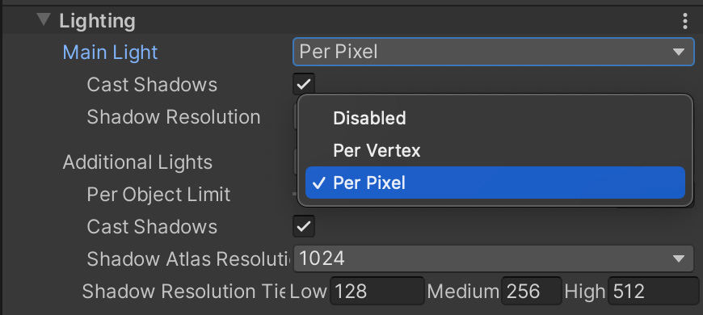
VI: Nhóm Lighting trong URP Asset — Main Light: Per Pixel (dropdown mở cho thấy Disabled / Per Vertex / Per Pixel), Cast Shadows ✓, Additional Lights với Shadow Atlas Resolution: 1024 và Shadow Resolution Tiers: Low 128 · Medium 256 · High 512. / EN: The Lighting group in the URP Asset.
🔑 Thay đổi LỚN NHẤT khi chuyển sang URP:
"Thay đổi LỚN NHẤT từ làm việc với BiRP sang URP nằm ở CÁCH BẠN THIẾT LẬP SHADOW.
🚨 Shadow setting KHÔNG CÒN khả dụng qua
Project Settings > Quality. Như đã bàn trước đó, bạn cần một Renderer Data object và một Render Pipeline Asset khi dùng URP."
Trình tự thiết lập Main Light Shadow:
- Đặt Main Light Shadow =
DisabledhoặcPer Pixel - Bật checkbox Cast Shadows
- Đặt độ phân giải của shadow map
📊 BỐN yếu tố làm TĂNG chi phí xử lý shadow — nguyên văn:
- "SỐ LƯỢNG Shadow Caster được render trong shadow map — con số này với Main Light PHỤ THUỘC vào Shadow Distance (mặt phẳng xa của shadow frustum)"
- "Shadow Receiver nhìn thấy được (bạn phải bao trọn TẤT CẢ chúng)"
- "Các phân đoạn Shadow Cascade"
- "Shadow filtering (Soft Shadows)"
🔑 The BIGGEST change when moving to URP:
"The BIGGEST change from working with BiRP to URP lies in HOW YOU SET UP SHADOWS.
🚨 Shadow settings are NO LONGER available via
Project Settings > Quality. As discussed earlier, you need a Renderer Data object and a Render Pipeline Asset when using URP."
The Main Light Shadow setup sequence:
- Set Main Light Shadow to
DisabledorPer Pixel - Tick the Cast Shadows checkbox
- Set the shadow map resolution
📊 FOUR factors that INCREASE shadow processing — verbatim:
- "The NUMBER of Shadow Casters rendered in the shadow map — this number for the Main Light DEPENDS on the Shadow Distance (far plane of shadow frustum)"
- "Shadow Receivers that are VISIBLE (you have to encompass them ALL)"
- "Shadow Cascades splits"
- "Shadow filtering (Soft Shadows)"
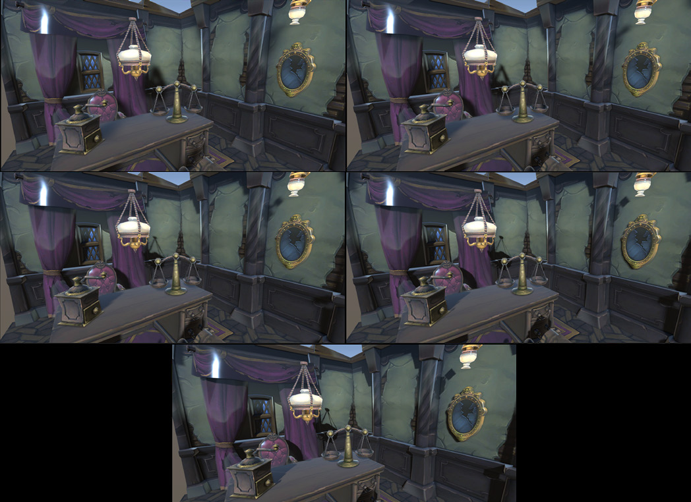
VI: Main Light Shadow Resolution — trên-trái: 256 · trên-phải: 512 · giữa-trái: 1024 · giữa-phải: 2048 · dưới: 4096. / EN: Shadow Resolution set to 256, 512, 1024, 2048 and 4096 respectively.
💡 Độ phân giải CAO NHẤT KHÔNG phải lúc nào cũng LÝ TƯỞNG
"Nếu bạn từng làm việc với shadow trong Unity, bạn biết rằng real-time shadow đòi hỏi render một shadow map chứa ĐỘ SÂU của object nhìn từ GÓC NHÌN CỦA ĐÈN. Độ phân giải shadow map càng CAO thì độ trung thực thị giác càng CAO — dù ĐÒI HỎI CẢ nhiều sức xử lý HƠN LẪN nhiều bộ nhớ HƠN.
🔑 Độ phân giải CAO NHẤT KHÔNG phải lúc nào cũng lý tưởng. Ví dụ, tuỳ chọn Soft Shadows có tác dụng LÀM MỜ bản đồ. Trong ảnh căn phòng ma ám kiểu hoạt hình, bạn có thể thấy chiếc ghế ở tiền cảnh đổ bóng lên các ngăn kéo bàn, và bóng đó trông QUÁ SẮC NÉT khi độ phân giải LỚN HƠN 1024."
👉 Đây là một trong số ÍT chỗ trong toàn bộ tài liệu Unity mà giảm setting vừa NHANH HƠN vừa ĐẸP HƠN.
"If you've worked with shadows in Unity before, you know that real-time shadows require rendering a shadow map that contains the DEPTH of objects from the PERSPECTIVE OF THE LIGHT. The HIGHER the resolution of this shadow map, the HIGHER the visual fidelity — though BOTH more processing power AND increased memory are required.
🔑 The HIGHEST resolution isn't ALWAYS ideal. For example, the Soft Shadows option has the effect of BLURRING the map. In the image of the cartoon-like haunted room, you can see that the chair in the foreground casts a shadow on the desk drawers, which appears TOO CRISP when the resolution is GREATER than 1024."
👉 This is one of the FEW places in all of Unity's documentation where lowering a setting is BOTH faster AND better-looking.
34.6. 📏 Shadow Max Distance — Setting bị hiểu sai nhiều nhất¶
VI: Max Distance của Main Light Shadow — trên-trái: 10 · trên-phải: 30 · dưới-trái: 60 · dưới-phải: 400. Các cột cách nhau 10 đơn vị. / EN: Varying Max Distance for the Main Light Shadow: 10, 30, 60 and 400. The poles are 10 units apart.
"Trong ảnh trên, các cột cách nhau 10 đơn vị. Max Distance biến thiên từ 10 đến 400 đơn vị.
🔍 Ở 10: chú ý rằng CHỈ cột đầu tiên đổ bóng, và bóng đó bị CẮT NGẮN ở 10 đơn vị tính từ vị trí Camera.
✅ Ở 60 (ảnh dưới-trái): TẤT CẢ bóng đều nằm trong tầm nhìn — độ trung thực bóng ĐẠT YÊU CẦU.
💀 Khi Max Distance LỚN HƠN NHIỀU so với các asset nhìn thấy được, shadow map bị TRẢI RA trên một VÙNG QUÁ LỚN. Nghĩa là vùng trong khung hình có độ phân giải THẤP HƠN NHIỀU so với mức cần thiết."
🎯 Quy tắc vàng:
"Thuộc tính Max Distance cần liên hệ TRỰC TIẾP tới những gì người dùng có thể THẤY, cũng như đơn vị dùng trong scene. Hãy nhắm tới khoảng cách TỐI THIỂU cho ra bóng CHẤP NHẬN ĐƯỢC. Nếu người chơi chỉ thấy bóng của object động ở 60 đơn vị từ Camera, thì hãy đặt Max Distance = 60."
💎 Tương tác với Shadowmask:
"Khi Lighting Mode cho Mixed Lights được đặt là Shadowmask, bóng của các object VƯỢT QUÁ Shadow Distance được BAKE. Nếu đây là một scene tĩnh thì bạn sẽ thấy bóng trên MỌI object, nhưng CHỈ bóng động mới được VẼ tới tận Shadow Distance."
⚠️ Hạn chế của URP — quan trọng:
"URP CHỈ hỗ trợ Stable Fit Shadow Projection, vốn DỰA VÀO người dùng thiết lập Max Distance. BiRP hỗ trợ CẢ Stable Fit LẪN Close Fit.
Ở chế độ Close Fit, ảnh dưới-trái và dưới-phải sẽ có CÙNG chất lượng, vì Close Fit GIẢM mặt phẳng shadow distance để vừa với caster CUỐI CÙNG.
⚠️ Nhược điểm: vì Close Fit thay đổi shadow frustum "ĐỘNG", nó có thể gây hiệu ứng RUNG/NHẢY MÚA (shimmer/dancing) trong bóng."
"In the image above, the poles are 10 units apart. The Max Distance varies from 10 to 400 units.
🔍 At 10: notice that ONLY the first pole casts a shadow, and this is CUT SHORT at 10 units from the Camera location.
✅ At 60 (bottom-left image): ALL shadows are in view — the shadow fidelity is ADEQUATE.
💀 When the Max Distance is MUCH GREATER than the visible assets, the shadow map is being SPREAD over TOO LARGE an area. This means that the region in-shot has a MUCH LOWER resolution than required."
🎯 The golden rule:
"The Max Distance property needs to relate DIRECTLY to what the user can SEE, as well as the units used in the scene. Aim for the MINIMUM distance that gives ACCEPTABLE shadows. If the player only sees shadows from dynamic objects 60 units from the Camera, then set Max Distance to 60."
💎 Interaction with Shadowmask:
"When the Lighting Mode for Mixed Lights is set to Shadowmask, the shadows of objects BEYOND Shadow Distance are BAKED. If this was a static scene then you would see shadows on ALL objects, but ONLY dynamic shadows would be DRAWN up to the Shadow Distance."
⚠️ A URP limitation — important:
"URP ONLY supports Stable Fit Shadow Projection, which RELIES on the user to set up the Max Distance. BiRP supports BOTH Stable Fit AND Close Fit.
In the latter mode, the bottom-left and -right images would have the SAME quality, as Close Fit REDUCES the shadow distance plane to fit the LAST caster.
⚠️ The disadvantage: since Close Fit changes the shadow frustum "DYNAMICALLY," it can cause a SHIMMER/DANCING effect in the shadows."
34.7. 🪜 Shadow Cascades — Khi nào dùng 1, khi nào dùng 4¶
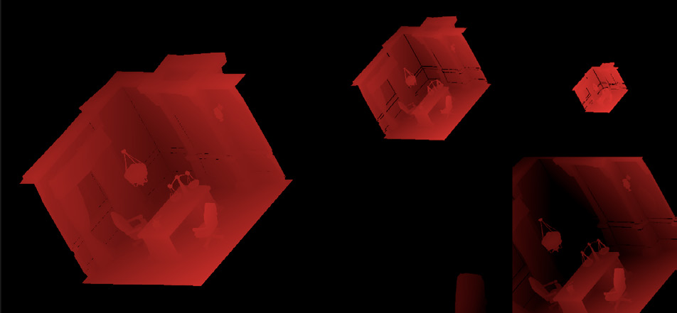
VI: Shadow map của scene — cascade count = 1 (trái, bản đồ chiếm TRỌN vùng) và cascade count = 4 (phải, gồm BỐN bản đồ khác nhau, mỗi vùng nhận bản đồ độ phân giải THẤP HƠN). / EN: Shadow map when cascade count is set to 1 (left) and 4 (right).
"Khi asset biến mất vào xa do phối cảnh, việc GIẢM Shadow Resolution là hợp lý, qua đó DÀNH nhiều shadow map hơn cho bóng GẦN Camera. Shadow Cascades giúp làm điều này.
🔑 Cascade count = 1 nhiều khả năng cho KẾT QUẢ TỐT NHẤT với scene NHỎ như thế này.
✅ Nhưng NẾU Max Distance của bạn là một giá trị LỚN, thì cascade count 2 hoặc 3 sẽ cho bóng TỐT HƠN cho object tiền cảnh, vì chúng nhận được TỶ LỆ LỚN HƠN của shadow map.
🔍 Chú ý chiếc ghế trong ảnh bên TRÁI LỚN HƠN NHIỀU, dẫn tới bóng SẮC NÉT HƠN."
⚠️ Quy tắc chỉnh cascade:
"LUÔN điều chỉnh Max Distance về giá trị VỪA KHÍT với scene và chọn vị trí slider một cách CẨN TRỌNG.
🔑 Nếu bạn dùng METRIC làm đơn vị làm việc, LUÔN chọn cascade CUỐI CÙNG, nhiều nhất, bằng khoảng cách của Shadow Caster CUỐI CÙNG."
👉 Nhắc lại §2: cascaded shadow có thể LÀM GẤP ĐÔI số draw call. Mỗi cascade thêm vào là một lượt render lại toàn bộ shadow caster.
"As assets disappear into the distance due to perspective, it is convenient to DECREASE Shadow Resolution, thereby devoting MORE of the shadow map to shadows CLOSER to the Camera. Shadow Cascades can help with this.
🔑 A cascade count of 1 is likely to give the BEST result for SMALL scenes like this.
✅ But IF your Max Distance is a LARGE value, then a cascade count of 2 or 3 will give BETTER shadows for FOREGROUND objects, as these receive a LARGER PROPORTION of the shadow map.
🔍 Notice that the chair in the LEFT image is MUCH BIGGER, resulting in a SHARPER shadow."
⚠️ The cascade tuning rule:
"ALWAYS adjust Max Distance to a value that is a CLOSE FIT for your scene and choose the slider positions CAREFULLY.
🔑 If you use METRIC as the working unit, ALWAYS choose the LAST cascade to be, AT MOST, the distance of the LAST Shadow Caster."
👉 Recall §2: cascaded shadows can DOUBLE your draw call count. Every added cascade is another full re-render of the shadow casters.
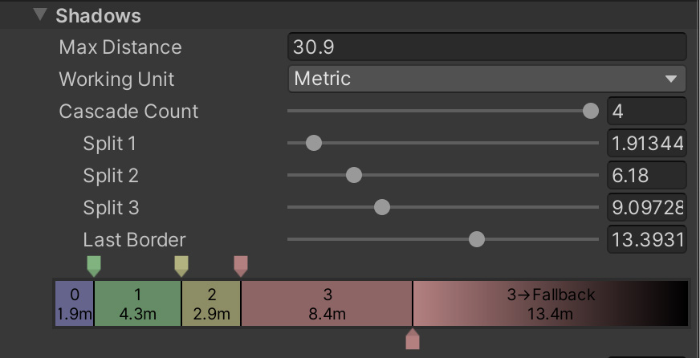
VI: Điều chỉnh dải Shadow Cascade — Max Distance 30.9 · Working Unit: Metric · Cascade Count 4, các Split lần lượt 1.91 / 6.18 / 9.10 / Last Border 13.39, và dải màu bên dưới hiển thị độ rộng thực tế của từng cascade: 0 → 1.9 m · 1 → 4.3 m · 2 → 2.9 m · 3 → 8.4 m · 3→Fallback 13.4 m. / EN: Adjusting the range of a Shadow Cascade.
34.8. 🗺️ Additional Light Shadows & Shadow Atlas¶
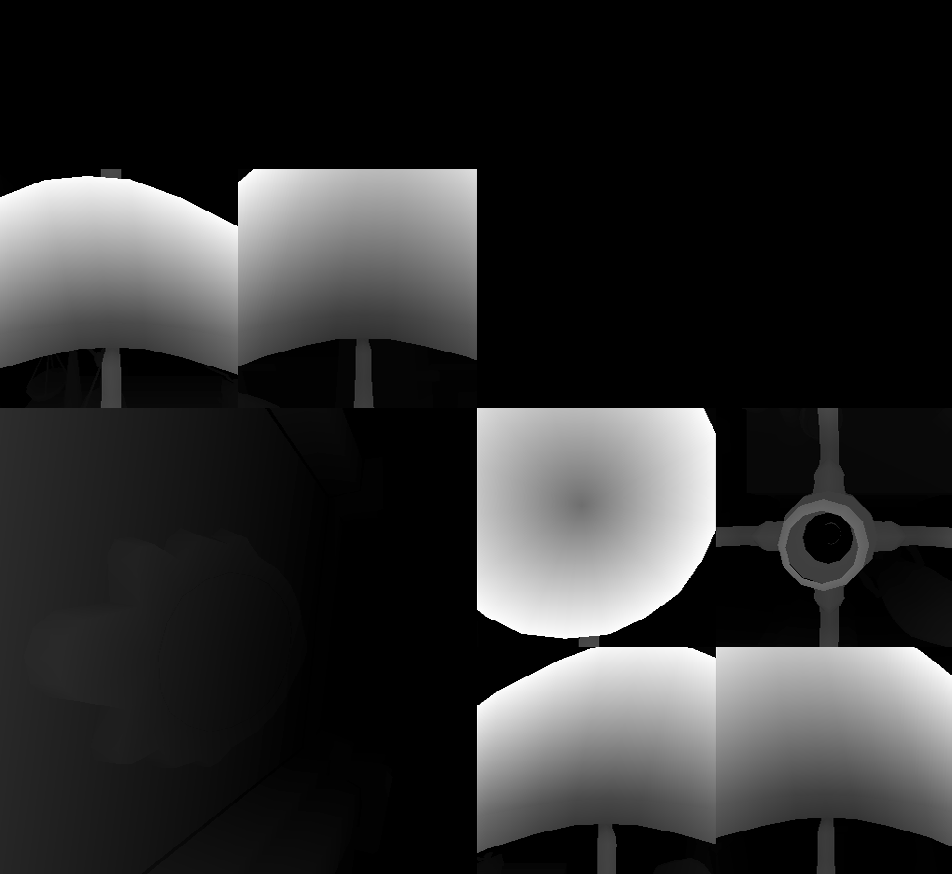
VI: Shadow Atlas cho Additional Lights — SÁU bản đồ của đèn Point (resolution: medium, tier 256px) cộng với đèn Spot (resolution: high, tier 512px), tất cả gói vào MỘT atlas. / EN: The Shadow Atlas showing the six maps used by the Point light plus the Spot light's map.
"Bật đèn phụ đổ bóng bằng cách đặt Additional Lights Mode của URP Asset thành
Per Pixel. Tuy mode có thể đặt làDisabled,Per Vertex, hoặcPer Pixel, CHỈ CÁI CUỐI CÙNG hoạt động với shadow.Tick ô Cast Shadows. Rồi chọn độ phân giải của Shadow Atlas — bản đồ dùng để GỘP tất cả bản đồ của MỌI đèn đang đổ bóng.
🚨 Hãy nhớ rằng một đèn Point đổ SÁU shadow map, tạo thành một CUBEMAP, vì nó chiếu sáng theo MỌI hướng. Điều này khiến đèn Point là loại ĐÒI HỎI NHIỀU NHẤT về hiệu năng.
🔑 Độ phân giải RIÊNG của một additional light shadow map được đặt bằng KẾT HỢP của BA tier Shadow Resolution, CỘNG độ phân giải chọn qua Light Inspector khi chọn đèn đó trong Hierarchy."
📐 Ví dụ tính toán NGUYÊN VĂN của Unity:
"Trong căn phòng ma ám, có một đèn Spot trên gương và một đèn Point trên bàn. Cũng có BẢY bản đồ (6 của Point + 1 của Spot).
🧮 Để nhét BẢY bản đồ này vào một bản đồ vuông 1024px, kích thước MỖI bản đồ cần là 256px hoặc NHỎ HƠN.
⚠️ Nếu bạn VƯỢT kích thước này, độ phân giải của shadow map sẽ BỊ CO LẠI cho vừa atlas, dẫn tới MỘT THÔNG BÁO CẢNH BÁO trong console."
"Enable additional lights to cast shadows by setting the Additional Lights Mode for the URP Asset to
Per Pixel. While the mode can be set toDisabled,Per Vertex, orPer Pixel, ONLY THE LATTER works with shadows.Check the Cast Shadows box. Then, select the resolution of the Shadow Atlas — the map that will be used to COMBINE all the maps for EVERY light casting shadows.
🚨 Bear in mind that a Point light casts SIX shadow maps, creating a CUBEMAP, since it casts light in ALL DIRECTIONS. This makes a Point light the MOST DEMANDING performance-wise.
🔑 The individual resolution of an additional light shadow map is set using a COMBINATION of the THREE Shadow Resolution tiers, PLUS the resolution chosen via the Light Inspector when selecting the light in the Hierarchy window."
📐 Unity's VERBATIM worked example:
"In the haunted room, there is a Spot light over the mirror and a Point light over the desk. There are also SEVEN maps (6 from the Point + 1 from the Spot).
🧮 To fit these SEVEN maps onto a 1024px square map, the size of EACH map needs to be 256px or SMALLER.
⚠️ If you EXCEED this size, the resolution of shadow maps will SHRINK to fit the atlas, resulting in a WARNING MESSAGE in the console."
Kích thước Shadow Atlas theo số bản đồ / Setting the Shadow Atlas size based on the number of maps
| Số bản đồ / Number of maps | Atlas tiling | Atlas size (nhân tier size với) |
|---|---|---|
| 1 | 1×1 | × 1 |
| 2–4 | 2×2 | × 2 |
| 5–16 | 4×4 | × 4 |
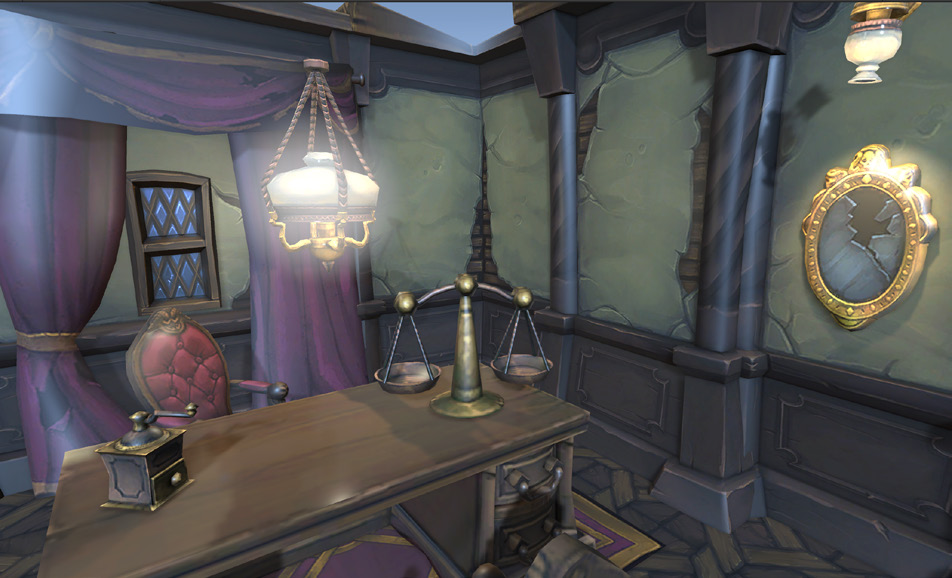
VI: Phiên bản low-poly của căn phòng ma ám — chiếu sáng bằng MỘT Main Directional light, MỘT Point light trên bàn, và MỘT Spot light trên gương. TẤT CẢ đèn đều real-time và đang đổ bóng. / EN: A low-polygon version of the haunted room, lit with a Main Directional light, a Point light over the desk, and a Spot light over the mirror. All lights are real-time and casting shadows.
34.9. 🎛️ Light Modes — Baked Indirect vs Subtractive vs Shadowmask¶
"Môi trường CHỦ YẾU có geometry TĨNH, nên nếu một cái đèn là TĨNH, bạn KHÔNG cần tính lighting và shadow cho nó LẶP ĐI LẶP LẠI. Bạn có thể tính MỘT LẦN ở thời điểm THIẾT KẾ, rồi dùng dữ liệu đó khi render geometry. Đây gọi là LIGHTMAPPING hay BAKING.
✅ Workflow lightmapping KHÔNG THAY ĐỔI giữa BiRP và URP."
📌 Ghi chú kỹ thuật rất giá trị — "low frequency" nghĩa là gì:
"Low frequency ám chỉ việc lightmap được CẬP NHẬT ở TỐC ĐỘ THẤP HƠN NHIỀU so với cập nhật màn hình.
🔑 SPECULAR LOBE CHỈ có thể được tính bởi đèn REAL-TIME.
💡 Bạn có thể áp dụng Global Illumination (GI) cho object ĐỘNG bằng Light Probe, nhưng chúng CŨNG CHỈ bắt được ánh sáng diffuse tần số thấp.
⚠️ BiRP hỗ trợ Light Probe Proxy Volume (LPPV), thứ mang lại cho Light Probe CÙNG mức chất lượng mà lightmap mang lại — cho object động. TUY NHIÊN, trong URP, LPPV KHÔNG được hỗ trợ do nó là một hệ thống TƯƠNG ĐỐI CHẬM và KHÔNG mở rộng tốt.
🔮 Thay vào đó, URP dự định hỗ trợ ADAPTIVE PROBE VOLUMES, thứ có thể THAY THẾ lightmap và hoạt động cho CẢ object tĩnh LẪN động."
"Environments have predominantly STATIC geometry, so that if a light is STATIC, you don't need to calculate the lighting and shadows for it REPEATEDLY. You can calculate this ONCE at DESIGN TIME, and then use that data when rendering the geometry. This is called LIGHTMAPPING or BAKING.
✅ The workflow for lightmapping is UNCHANGED between BiRP and URP."
📌 A very valuable technical note — what "low frequency" means:
"Low frequency refers to the fact that lightmaps are UPDATED at a MUCH LOWER RATE than screen updates.
🔑 SPECULAR LOBES can ONLY be computed by REAL-TIME lights.
💡 You can apply Global Illumination (GI) to DYNAMIC objects by using Light Probes, but those ALSO only capture low frequency diffuse light.
⚠️ BiRP supports Light Probe Proxy Volume (LPPV), which provides the SAME level of quality for Light Probes as lightmaps do for dynamic objects. However, in URP, LPPV is NOT SUPPORTED due to it being a RELATIVELY SLOW system that DOESN'T SCALE.
🔮 Instead, URP plans to support ADAPTIVE PROBE VOLUMES, which could REPLACE lightmaps and work for BOTH static AND dynamic objects."
⚙️ TÁM bước bake lightmap trong URP / The EIGHT lightmap baking steps in URP (theo dự án FPS Sample: The Inspection)
| # | Bước / Step |
|---|---|
| 1 | "Scene chứa chủ yếu geometry TĨNH. Để đưa geometry vào lightmapping, tick ô Static ở phía phải Inspector." |
| 2 | "Chọn setting lightmapping qua Window > Rendering > Lighting > Scene. 🔑 Giữ Lightmap Resolution THẤP TRONG LÚC điều chỉnh setting. Khi đã có setting mong muốn, TĂNG giá trị lên khi sinh lightmap CUỐI CÙNG. ⚡ Chọn Progressive GPU (Preview) để tăng tốc sinh lightmap, nếu GPU hỗ trợ." |
| 3 | "Filtering LÀM MỜ bản đồ để giảm thiểu NHIỄU. Việc này có thể tạo ra KHE HỞ trong bóng ở nơi một object gặp object khác. Dùng A-TROUS FILTERING để giảm thiểu artifact này." |
| 4 | "Đảm bảo MỌI geometry tĩnh KHÔNG có giá trị UV CHỒNG LẤN, hoặc đang sinh lighting UV khi import." |
| 5 | "Đặt Light Mode thành Baked hoặc Mixed. Chọn đèn trong Hierarchy và dùng Inspector. 💡 Mixed Lights sẽ chiếu sáng CẢ object động LẪN tĩnh." |
| 6 | "Khi dùng Mixed Lights, đặt Light Mode thành Baked Indirect, Subtractive, hoặc Shadowmask qua Window > Rendering > Lighting > Scene." → xem bảng dưới |
| 7 | "Điều chỉnh Lightmap Scale qua Asset > Inspector > Lightmapping > Scale In Lightmap, để object ở XA chiếm ÍT chỗ hơn trên lightmap." (ví dụ trong sách: texel size của lightmap tảng đá nền biến thiên từ 0.05 tới 0.5) |
| 8 | "Bấm Generate Lighting để bake. ⏱️ Thời gian bake PHỤ THUỘC vào: số object tĩnh, số đèn đặt ở Mixed hoặc Baked mode, và các setting chọn cho lightmapping — ĐẶC BIỆT là Max Lightmap Size và Lightmap Resolution." |
BA Lighting Mode cho Mixed Lights / The THREE Lighting Modes for Mixed Lights
| Mode | Cơ chế / Mechanism | Đánh giá / Verdict |
|---|---|---|
| 🅰️ Baked Indirect | "CHỈ phần đóng góp ánh sáng GIÁN TIẾP được bake vào lightmap và Light Probe (chỉ các lần NẢY của đèn). Ánh sáng TRỰC TIẾP và bóng là REAL-TIME." | ⚠️ "Đây là tuỳ chọn ĐẮT ĐỎ và KHÔNG lý tưởng cho nền tảng mobile. Tuy nhiên, nó có nghĩa là bạn có được bóng và ánh sáng trực tiếp CHÍNH XÁC cho CẢ geometry tĩnh LẪN động." |
| 🅱️ Subtractive | "Bạn bake ánh sáng TRỰC TIẾP từ một đèn Directional đặt ở Mixed vào geometry TĨNH, rồi TRỪ ĐI ánh sáng khỏi bóng đổ bởi geometry ĐỘNG. 🔬 URP tính một ƯỚC LƯỢNG phần đóng góp của ánh sáng từ Directional Light và TRỪ nó khỏi baked Global Illumination. Ước lượng này bị KẸP (clamped) bởi setting Real-time Shadow Color trong phần Environment của cửa sổ Lighting, nên MÀU BỊ TRỪ KHÔNG BAO GIỜ TỐI HƠN màu này. Rồi chọn màu TỐI THIỂU giữa giá trị đã trừ và màu bake gốc." | ⚠️ "Kết quả là geometry tĩnh KHÔNG THỂ đổ bóng lên object động, TRỪ KHI dùng Light Probe — điều này có thể gây ra những ĐỨT ĐOẠN THỊ GIÁC KHÓ CHỊU." ✅ "Đây là tuỳ chọn PHÙ HỢP NHẤT cho phần cứng CẤP THẤP." |
| 🅾️ Shadowmask | "Tuy tương tự Baked Indirect Mode, Shadowmask KẾT HỢP CẢ bóng động LẪN bóng bake, render bóng ở KHOẢNG CÁCH XA. Nó làm điều đó bằng cách dùng một texture SHADOWMASK BỔ SUNG và lưu thông tin THÊM trong Light Probe." | ✅ "Cho bóng ĐỘ TRUNG THỰC CAO NHẤT" ⚠️ "nhưng CŨNG là tuỳ chọn ĐẮT NHẤT về mức dùng BỘ NHỚ và HIỆU NĂNG. Về thị giác, nó GIỐNG HỆT Baked Indirect ở các cảnh gần. Khác biệt lộ rõ khi nhìn ra XA, khiến nó RẤT PHÙ HỢP cho scene open-world. Do chi phí xử lý, CHỈ khuyến nghị cho phần cứng trung tới cao cấp." |
34.10. 🎯 Light Layers — Làm nổi bật vật thể quan trọng¶
"Tính năng Light Layers cho phép bạn cấu hình một số đèn CHỈ ảnh hưởng tới các GameObject CỤ THỂ, để bạn có thể NHẤN MẠNH và THU HÚT SỰ CHÚ Ý tới chúng trong scene.
📖 Ví dụ trong sách: ống tiêm — một vật phẩm thu thập QUAN TRỌNG — xuất hiện ở phần TỐI của scene. Với một Light Layer, nó trở nên NHÌN THẤY ĐƯỢC và giúp đảm bảo người chơi KHÔNG BỎ LỠ việc nhặt nó."
SÁU bước thiết lập:
- Chọn URP Asset. Trong mục Lighting, bấm biểu tượng ⋮ (vertical ellipsis) → Show Additional Properties
- Một setting mới, Light Layers, sẽ xuất hiện dưới mục Lighting
- Đổi tên một Light Layer qua
Project Settings > Graphics > URP Global Settings - Giờ Light Layers đã bật, Light Inspector sẽ có thêm dropdown Light Layer. MỘT đèn có thể đóng góp cho NHIỀU HƠN MỘT layer.
- Với Light Layers bật, bạn cần thiết lập một CUSTOM SHADOW LAYER. Đèn mới có thể đổ bóng từ Main Light của scene HOẶC từ frustum của CHÍNH NÓ.
- Cuối cùng, chọn object áp dụng trong Hierarchy rồi đặt Rendering Layer Mask
👉 Nhắc lại §19: Light Layers cũng chính là kỹ thuật giới hạn ảnh hưởng của mỗi đèn vào một culling mask mà e-book Console khuyên dùng cho scene nhiều đèn.
"The Light Layers feature lets you configure certain lights to affect ONLY SPECIFIC GameObjects so you can EMPHASIZE and DRAW ATTENTION to them in a scene.
📖 The book's example: the syringe, a KEY COLLECTABLE, appears in a SHADED part of the scene. With a Light Layer, it becomes VISIBLE and helps ensure that the player DOESN'T MISS picking it up."
The SIX setup steps:
- Select the URP Asset. In the Lighting section, click the ⋮ (vertical ellipsis) icon → Show Additional Properties
- A new setting, Light Layers, appears under the Lighting section
- Rename a Light Layer via
Project Settings > Graphics > URP Global Settings - Now that Light Layers are enabled, the Light Inspector will include a Light Layer drop-down. A light can contribute to MORE THAN ONE layer.
- With Light Layers enabled, you need to set up a CUSTOM SHADOW LAYER. The new light can cast shadows from the scene's Main Light OR from its OWN frustum.
- Lastly, select the object this applies to in the Hierarchy window and set the Rendering Layer Mask
👉 Recall §19: Light Layers is exactly the "confine each light's influence to a culling mask" technique the Console e-book recommends for multi-light scenes.
// Đặt Rendering Layer Mask ĐỘNG bằng code — nguyên văn từ e-book URP
// Setting the Rendering Layer Mask dynamically in code — verbatim from the URP e-book
Renderer renderer = GetComponent<Renderer>();
int layerID = 1;
int mask = 1 << layerID;
renderer.renderingLayerMask = (uint)mask;
34.11. 🔵 Light Probes — Cách ĐẶT cho đúng¶
"KHUYẾN NGHỊ thêm Light Probe vào scene khi dùng Mixed Lighting Mode. Light Probe LƯU dữ liệu ánh sáng tại một VỊ TRÍ CỤ THỂ trong môi trường khi bạn bake lighting bằng cách bấm Generate Lighting qua
Window > Rendering > Lighting.✅ Điều này đảm bảo việc chiếu sáng của một object ĐỘNG di chuyển qua môi trường PHẢN ÁNH ĐÚNG các mức sáng mà object đã bake dùng. Ở vùng TỐI nó sẽ TỐI, ở vùng SÁNG hơn nó sẽ SÁNG hơn."
Cách tạo: chuột phải trong Hierarchy → Light > Light Probe Group.
"Ban đầu sẽ có MỘT KHỐI LẬP PHƯƠNG gồm TÁM Light Probe. Để xem và sửa vị trí, chọn Light Probe Group trong Hierarchy, và trong Inspector bấm Light Probe Group > Edit Light Probes. Scene view giờ ở chế độ chỉnh sửa, nơi CHỈ Light Probe mới chọn được. Dùng Move tool để di chuyển chúng."
🎯 Quy tắc ĐẶT Light Probe — quan trọng nhất:
"Light Probe nên được đặt, THỨ NHẤT, ở vùng mà một object ĐỘNG có thể DI CHUYỂN TỚI, và THỨ HAI, ở nơi có THAY ĐỔI ĐÁNG KỂ về mức độ ánh sáng.
🔬 Khi tính mức sáng cho một object, engine TÌM một KHỐI CHÓP (pyramid) các Light Probe GẦN NHẤT và dùng chúng để xác định một giá trị NỘI SUY cho mức chiếu sáng."
"It's RECOMMENDED to also add Light Probes to your scene when using Mixed Lighting Mode. Light Probes SAVE the light data at a PARTICULAR POSITION within an environment when you bake the lighting by clicking Generate Lighting via
Window > Rendering > Lighting.✅ This ensures that the illumination of a DYNAMIC object moving through an environment REFLECTS the lighting levels used by the baked objects. In a DARK area it will be DARK, and in a LIGHTER area it will be BRIGHTER."
How to create: right-click in the Hierarchy → Light > Light Probe Group.
"Initially, there will be a CUBE of Light Probes, EIGHT in total. To view and edit the positioning, select the Light Probe Group in the Hierarchy, and in the Inspector click Light Probe Group > Edit Light Probes. The Scene view will now be in an editing mode where ONLY Light Probes can be selected. Use the Move tool to move them around."
🎯 The Light Probe PLACEMENT rule — the most important part:
"Light Probes should be positioned, FIRST, in an area where a DYNAMIC object might MOVE TO, and SECOND, where there is a SIGNIFICANT CHANGE in lighting level.
🔬 When calculating the lighting level for an object, the engine finds a PYRAMID of the NEAREST Light Probes and uses those to determine an INTERPOLATED value for the illumination level."
VI: Robot ở TRONG (trên) và NGOÀI (dưới) nhà chứa máy bay — mức chiếu sáng thay đổi nhờ Light Probe. / EN: The robot inside and outside of the hangar, with lighting level affected by Light Probes.
💡 "Việc ĐẶT Light Probe có thể TỐN THỜI GIAN, nhưng một cách tiếp cận DỰA TRÊN CODE có thể tăng tốc việc chỉnh sửa, ĐẶC BIỆT với scene LỚN."
💡 "Positioning Light Probes can be TIME-CONSUMING, but a CODE-BASED approach can speed up your editing, ESPECIALLY for a LARGE scene."
34.12. 🪞 Reflection Probes — Cubemap, Blending & Box Projection¶
VI: HAI Reflection Probe dùng trong FPS Sample: The Inspection — một BÊN TRONG nhà chứa (trái, phản chiếu TỐI có khe cửa) và một BÊN NGOÀI (phải, phản chiếu bầu trời sa mạc). Ở giữa là cubemap texture mà MỖI probe chụp được. / EN: Each Reflection Probe captures an image of its surroundings in a cubemap texture.
🔬 Vì sao cần Reflection Probe — lập luận của Unity:
"Một công cụ ray-tracing như Maya hay Blender có thể dành thời gian tính CHÍNH XÁC giá trị cho từng pixel frame của một bề mặt phản chiếu. Quá trình này QUÁ LÂU cho một real-time renderer, đó là lý do các LỐI TẮT thường được dùng.
🔑 Phản chiếu trong real-time renderer dùng ENVIRONMENT MAP (cubemap ĐÃ render trước). Unity cung cấp một map mặc định bằng SkyManager.
💀 Việc có MỘT map DUY NHẤT làm nguồn phản chiếu cho MỌI vị trí trong scene có thể dẫn tới phản chiếu KHÔNG THUYẾT PHỤC. Lấy ví dụ con robot: nếu các phần kim loại của nhân vật này LUÔN phản chiếu BẦU TRỜI, nó sẽ trông RẤT LẠ khi ở BÊN TRONG nhà chứa nơi KHÔNG nhìn thấy bầu trời."
📦 "Reflection Probe đơn giản là một CUBEMAP đã render trước, đặt ở một VỊ TRÍ THEN CHỐT trong scene. Bạn có thể dùng NHIỀU Reflection Probe trong MỘT scene. Khi một object ĐỘNG di chuyển qua scene, nó có thể CHỌN Reflection Probe GẦN NHẤT và dùng cái đó làm cơ sở cho phản chiếu của mình."
Cách tạo: chuột phải trong Hierarchy → Light > Reflection Probe → đặt vị trí, chỉnh setting → bấm Bake để sinh cubemap.
🔀 REFLECTION PROBE BLENDING — bật qua panel Renderer Asset Settings:
"Blending DẦN DẦN LÀM MỜ cubemap của một probe, đồng thời LÀM HIỆN cái kia khi object phản chiếu đi từ vùng này sang vùng khác.
✅ Chuyển tiếp DẦN DẦN này TRÁNH được tình huống một vật thể ĐẶC TRƯNG BỖNG NHIÊN "POP" vào phản chiếu khi object băng qua RANH GIỚI vùng."
📦 BOX PROJECTION — dành cho scene TRONG NHÀ:
"Thông thường, reflection cubemap được GIẢ ĐỊNH nằm ở khoảng cách VÔ HẠN so với bất kỳ object nào. Các góc khác nhau của cubemap sẽ nhìn thấy được khi object xoay, nhưng object KHÔNG THỂ tiến gần hơn hay xa hơn khỏi môi trường được phản chiếu.
💀 Tuy điều này hoạt động TỐT cho scene NGOÀI TRỜI, hạn chế của nó LỘ RÕ trong scene TRONG NHÀ. Tường trong của một căn phòng RÕ RÀNG KHÔNG ở khoảng cách vô hạn, và phản chiếu của một bức tường LẼ RA phải TO DẦN khi object tiến gần nó.
✅ Tuỳ chọn Box Projection cho phép bạn tạo reflection cubemap ở khoảng cách HỮU HẠN so với probe, cho phép object hiển thị phản chiếu với KÍCH THƯỚC KHÁC NHAU tuỳ theo khoảng cách của chúng tới các "bức tường" của cubemap.
📏 Kích thước cubemap bao quanh được xác định bởi VÙNG ẢNH HƯỞNG của probe, phụ thuộc vào thuộc tính Box Size. Ví dụ, với một probe phản chiếu nội thất của một căn phòng, bạn nên đặt kích thước KHỚP với kích thước của căn phòng đó."
👉 Nhắc lại §18: Reflection Probe realtime RẤT TỐN BATCH ⇒ ưu tiên Type: Baked + blending thay vì realtime.
🔬 Why Reflection Probes exist — Unity's reasoning:
"A ray-tracing tool, such as Maya or Blender, can take the time to ACCURATELY calculate the values for each frame pixel of a reflective surface. This process takes FAR TOO LONG for a real-time renderer, which is why SHORTCUTS are often used.
🔑 Reflections in a real-time renderer use ENVIRONMENT MAPS (pre-rendered cubemaps). Unity supplies a default map using the SkyManager.
💀 Having a SINGLE map as the source of reflections from ALL LOCATIONS in a scene can lead to UNCONVINCING reflections. Take the example of the robot: if the metal parts of this character ALWAYS reflect the SKY, then it will look VERY STRANGE when INSIDE the hangar where the sky is NOT visible."
📦 "A Reflection Probe is simply a PRE-RENDERED CUBEMAP placed at a KEY POSITION in the scene. You can use SEVERAL Reflection Probes in a SINGLE scene. As a DYNAMIC object moves through the scene, it can SELECT the NEAREST Reflection Probe and use that as the basis of its reflections."
How to create: right-click the Hierarchy → Light > Reflection Probe → position it, adjust settings → click Bake to generate a cubemap.
🔀 REFLECTION PROBE BLENDING — enable it via the Renderer Asset Settings panel:
"Blending GRADUALLY FADES OUT one probe's cubemap, while FADING IN the other as the reflective object passes from one zone to the other.
✅ This GRADUAL TRANSITION AVOIDS the situation where a DISTINCTIVE object SUDDENLY "POPS" into the reflection as an object crosses the ZONE BOUNDARY."
📦 BOX PROJECTION — for INDOOR scenes:
"Normally, the reflection cubemap is ASSUMED to be at an INFINITE DISTANCE from any given object. Different angles of the cubemap will be visible as the object turns, but it's NOT POSSIBLE for the object to move CLOSER or FURTHER AWAY from the reflected surroundings.
💀 While this works WELL for OUTDOOR scenes, its limitations SHOW in an INDOOR scene. The interior walls of a room are CLEARLY NOT an infinite distance away, and the reflection of a wall SHOULD GET LARGER as the object nears it.
✅ The Box Projection option enables you to create a reflection cubemap at a FINITE DISTANCE from the probe, allowing objects to show reflections of DIFFERENT SIZES according to their DISTANCE from the cubemap's walls.
📏 The size of the surrounding cubemap is determined by the probe's ZONE OF EFFECT, depending on its Box Size property. For example, with a probe that reflects the interior of a room, you should set the size to MATCH THE DIMENSIONS of the room."
👉 Recall §18: realtime Reflection Probes are VERY COSTLY in batches ⇒ prefer Type: Baked + blending over realtime.
34.13. ✨ Lens Flare, Light Halos & SSAO¶
💫 LENS FLARE — workflow ĐÃ ĐỔI trong URP
"Workflow tạo Lens Flare ĐÃ ĐƯỢC CẬP NHẬT cho URP.
① Tạo một Lens Flare (SRP) Data asset: chuột phải trong Project window, trong thư mục Assets phù hợp →
Create > Lens Flare (SRP). Dùng asset này để cấu hình HÌNH DẠNG của flare.② Để render Lens Flare: chọn nguồn sáng sẽ gây ra flare rồi chọn
Add Component > Rendering > Lens Flare (SRP).③ Trong panel Settings của component, gán Lens Flare Data asset đã tạo vào thuộc tính Lens Flare Data."
🔆 LIGHT HALOS — KHÔNG có trong URP, phải tự làm
"Tuỳ chọn Draw Halo KHÔNG khả dụng cho đèn trong URP, nhưng DỄ mô phỏng bằng một BILLBOARD. Một tuỳ chọn khác là đặt độ trong suốt ALPHA của một HÌNH CẦU. … (sách minh hoạ bằng một Shader Graph dùng FRESNEL để điều khiển transparency)"
👉 Khớp với bảng ở §34.4: Draw Halo và Flare là hai thuộc tính BiRP KHÔNG có tương ứng trực tiếp trong URP.
🌘 SCREEN SPACE AMBIENT OCCLUSION (SSAO)
"Vì ánh sáng môi trường (ambient) MẶC ĐỊNH KHÔNG XÉT tới geometry, mức ambient CAO có thể dẫn tới render KHÔNG THUYẾT PHỤC.
🔬 Trong thế giới thực, một KHE HẸP giữa hai vật thể nhiều khả năng TỐI HƠN một khe RỘNG hơn nhiều. Ambient Occlusion giúp xử lý vấn đề này.
▶️ Để dùng nó với URP: chọn Renderer mà URP Asset đang dùng →
Add Renderer Feature→ chọnScreen Space Ambient Occlusion (SSAO). Rồi dùng setting SSAO mặc định hoặc điều chỉnh theo nhu cầu.👁️ Hiệu ứng THÊM bóng đổ vào các khe hẹp. Trong ba ảnh minh hoạ của sách: ảnh trên KHÔNG có SSAO, ảnh giữa hiển thị SSAO ĐÃ TÍNH, ảnh dưới hiển thị KẾT QUẢ của SSAO. Chú ý rằng cối xay và cái cân có VIỀN ĐẬM HƠN ở nơi chúng chạm mặt bàn.
📌 SSAO là một kỹ thuật POST-PROCESSING — xem §35."
💫 LENS FLARE — the workflow CHANGED in URP
"The workflow for creating a Lens Flare has been UPDATED for URP.
① Create a Lens Flare (SRP) Data asset: right-click in the Project window, in a suitable Assets folder →
Create > Lens Flare (SRP). Use this asset to configure the SHAPE of your flare.② To render a Lens Flare: choose the light source that will cause the flare then select
Add Component > Rendering > Lens Flare (SRP).③ In the component's Settings panel, assign the Lens Flare Data asset you created to the Lens Flare Data property."
🔆 LIGHT HALOS — absent from URP, roll your own
"The Draw Halo option is NOT available for lights in URP, but it's EASILY MIMICKED with a BILLBOARD. Another option is to set the ALPHA TRANSPARENCY of a SPHERE. … (the book illustrates this with a Shader Graph using FRESNEL to drive transparency)"
👉 This matches the table in §34.4: Draw Halo and Flare are the two BiRP properties with NO direct URP equivalent.
🌘 SCREEN SPACE AMBIENT OCCLUSION (SSAO)
"Since ambient light does NOT consider geometry by default, HIGH LEVELS of ambient light can lead to UNCONVINCING renders.
🔬 In the real world, a NARROW GAP between two objects is likely to be DARKER than a much WIDER gap. Ambient Occlusion can help deal with this issue.
▶️ To use it with URP: select the Renderer that the URP Asset is using →
Add Renderer Feature→ chooseScreen Space Ambient Occlusion (SSAO). Then either use the default SSAO settings or adjust as needed.👁️ The effect ADDS SHADING to narrow gaps. In the book's three images: the top has NO SSAO, the middle shows the CALCULATED SSAO, and the bottom shows the RESULT of SSAO. Notice that the grinder and scales have a STRONGER EDGE where they meet the desk.
📌 SSAO is a POST-PROCESSING technique — see §35."
35. Post-processing — Volume framework¶
VI: Áp dụng hiệu ứng post-processing — trên-trái: KHÔNG hiệu ứng · trên-phải: BLOOM · dưới-trái: VIGNETTE · dưới-phải: COLOR ADJUSTMENT. / EN: The top-left image has no effects applied, the top-right has Bloom, the bottom-left has Vignette, and the bottom-right has Color Adjustment added.
🚨 Điều PHẢI biết trước tiên:
"Package Built-in Post-Processing Stack v2 KHÔNG tương thích với URP. URP KHÔNG đòi hỏi package bổ sung nào cho hiệu ứng post-processing. Thay vào đó, nó dùng VOLUME FRAMEWORK.
🔑 Khi bạn thêm Volume vào scene, bạn có thể chọn hiệu ứng post-processing nào áp dụng cho Volume đó.
🌐 Một Volume có thể là GLOBAL hoặc LOCAL. Nếu GLOBAL, Volume ảnh hưởng tới Camera Ở MỌI NƠI trong scene. Với Mode đặt là LOCAL, Volume CHỈ ảnh hưởng tới Camera NẾU nó nằm TRONG PHẠM VI của Collider."
SÁU bước dùng framework:
- Bật post-processing trên Main Camera: chọn Main Camera → Inspector → mở panel Rendering → tick Post Processing
- Chuột phải Hierarchy →
Create > Volume > Global Volume - Chọn Global Volume → panel Volume trong Inspector → tạo Profile mới bằng nút New
- Bấm Add Override → chọn Post-processing → (ví dụ chọn Bloom)
- Mỗi hiệu ứng có panel Settings RIÊNG
- Dễ dàng thêm NHIỀU hiệu ứng (ví dụ Vignette) và cấu hình từng cái
🚨 Cảnh báo hiệu năng:
"Post-processing có thể ĐÈ NẶNG lên bộ xử lý của bạn, nên hãy CÂN NHẮC KỸ ảnh hưởng trên phần cứng CẤP THẤP và thiết bị MOBILE. Nếu dự án của bạn BẮT BUỘC phải dùng, hãy TEST TRÊN PHẦN CỨNG ĐÍCH. MỘT SỐ filter TỐN ÍT bộ xử lý HƠN các filter khác."
📱 Với mobile — e-book Mobile nói ngắn gọn hơn:
"Hiệu ứng post-processing TOÀN MÀN HÌNH như GLOW có thể LÀM CHẬM hiệu năng ĐÁNG KỂ. Hãy dùng chúng THẬN TRỌNG trong định hướng nghệ thuật của tựa game."
🚨 The first thing you MUST know:
"The Built-in Post-Processing Stack v2 package is NOT COMPATIBLE with URP. URP does NOT require an additional package for post-processing effects. Instead, it uses a VOLUME FRAMEWORK.
🔑 When you add Volumes to a scene, you can choose which post-processing effects apply to the Volume.
🌐 A Volume can be GLOBAL or LOCAL. If GLOBAL, the Volume affects the Camera EVERYWHERE in the scene. With the Mode set to LOCAL, Volumes affect the Camera ONLY IF it's WITHIN THE BOUNDS of the Collider."
The SIX steps to use the framework:
- Enable post-processing on the Main Camera: select the Main Camera → Inspector → expand the Rendering panel → check Post Processing
- Right-click the Hierarchy →
Create > Volume > Global Volume - Select the Global Volume → the Volume panel in the Inspector → create a new Profile by clicking New
- Click Add Override → select Post-processing → (e.g., choose Bloom)
- Each effect has a dedicated Settings panel
- Easily add MULTIPLE effects (e.g., Vignette) and configure each one
🚨 The performance warning:
"Post-processing can WEIGH HEAVILY on your processor, so CAREFULLY CONSIDER the effects on LOW-END hardware and MOBILE devices. If your project MUST use it, then TEST ON THE TARGET HARDWARE. SOME filters are LESS processor intensive than others."
35.1. 📦 Local Volume — Ba tham số điều khiển¶
VI: Đặt vị trí và kích thước một Box Volume bằng component Box Collider đi kèm. / EN: Positioning and sizing a Box Volume using the attached Box Collider component.
"Với Volume framework, bạn có thể cấu hình scene sao cho KHI Camera di chuyển quanh nó, các post-processing profile KHÁC NHAU được KÍCH HOẠT. Điều này đạt được bằng cách thêm một LOCAL VOLUME."
① Tạo: chuột phải Hierarchy → Create > Volume > Box Volume. "Ngoài ra chọn Sphere Volume nếu hình dạng này phù hợp hơn, hoặc Convex Mesh Volume để KIỂM SOÁT CHẶT CHẼ HƠN hình dạng của Collider định nghĩa vùng Volume."
② Ba tham số trong panel Volume:
"With the Volume framework, you can configure the scene so that AS a Camera moves around it, DIFFERENT post-processing profiles are TRIGGERED. This is achieved by adding a LOCAL VOLUME."
① Create: right-click the Hierarchy → Create > Volume > Box Volume. "Alternatively, choose Sphere Volume if this shape is more suited to your purpose, or Convex Mesh Volume for TIGHTER CONTROL over the shape of the Collider that defines the Volume region."
② The three parameters in the Volume panel:
| Tham số | Ý nghĩa nguyên văn / Verbatim meaning |
|---|---|
| Blend Distance | "Đây là khoảng cách XA NHẤT tính từ Collider của Volume mà URP BẮT ĐẦU blend, và là khoảng cách theo kích thước Collider nơi profile này HIỆN DẦN. 🔑 Ở RÌA của Collider, hiệu ứng post-processing sẽ MỜ DẦN đi, và ở Blend Distance tính từ rìa Collider thì nó HIỆN HOÀN TOÀN." |
| Weight | "Weight định nghĩa CƯỜNG ĐỘ TỐI ĐA của hiệu ứng post-processing. Nếu Weight = 1, hiệu ứng đạt cường độ ĐẦY ĐỦ. Đặt 0 nghĩa là KHÔNG có hiệu ứng, còn 0.5 đặt cường độ tối đa của hiệu ứng ở mức 50%." |
| Priority | "Dùng giá trị này để xác định URP dùng Volume NÀO khi NHIỀU Volume có mức ẢNH HƯỞNG NGANG NHAU lên scene. Số CÀNG CAO, Priority CÀNG CAO. ✅ Nếu bạn đang GỘP Global và Local, hãy GIỮ Global ở giá trị mặc định 0 và đặt Local Volume ở 1 hoặc CAO HƠN." |
35.2. 🎬 Mười sáu hiệu ứng post-processing của URP¶
| Hiệu ứng / Effect | Mô tả / Description |
|---|---|
| Bloom | "Thêm một quầng SÁNG quanh các pixel VƯỢT một mức độ sáng đã định" |
| Channel Mixer | "Sửa ẢNH HƯỞNG của TỪNG kênh màu đầu vào lên hỗn hợp tổng thể" |
| Chromatic Aberration | "Tạo các VIỀN MÀU dọc theo ranh giới ngăn cách phần TỐI và phần SÁNG của ảnh" |
| Color Adjustments | "Dùng hiệu ứng này để tinh chỉnh TÔNG MÀU, ĐỘ SÁNG, và ĐỘ TƯƠNG PHẢN tổng thể của ảnh render cuối cùng" |
| Color Curves | "Grading curve là cách NÂNG CAO để điều chỉnh các DẢI CỤ THỂ trong hue, saturation, hoặc luminosity" |
| Depth of Field | "Mô phỏng thuộc tính LẤY NÉT của ống kính camera" |
| Film Grain | "Mô phỏng kết cấu quang học NGẪU NHIÊN của phim ảnh" |
| Lens Distortion | "MÉO ảnh render cuối cùng để mô phỏng hình dạng của một ống kính camera đời thực" |
| Lift Gamma Gain | "Dùng các trackball khác nhau để tác động tới các DẢI khác nhau trong ảnh. Điều chỉnh slider dưới trackball để OFFSET độ sáng màu của dải đó" |
| Motion Blur | "Mô phỏng độ mờ xảy ra trong ảnh khi một camera đời thực quay các vật thể DI CHUYỂN NHANH HƠN thời gian phơi sáng của camera" |
| Panini Projection | "Giúp bạn render góc nhìn PHỐI CẢNH trong các scene có TRƯỜNG NHÌN RẤT RỘNG" |
| Shadows Midtones Highlights | "Điều khiển RIÊNG BIỆT vùng tối, trung tính, và vùng sáng của bản render" |
| Split Toning | "Dùng để thêm các TÔNG MÀU KHÁC NHAU vào vùng tối và vùng sáng trong scene" |
| Tonemapping | "Là quá trình ÁNH XẠ LẠI các giá trị HDR của một ảnh sang một DẢI GIÁ TRỊ MỚI" |
| Vignette | "Hiệu ứng này gồm việc LÀM TỐI dần về phía RÌA của ảnh so với phần TRUNG TÂM" |
| White Balance | "LOẠI BỎ các ám màu KHÔNG THỰC TẾ, để những vật lẽ ra TRẮNG ngoài đời sẽ render ra TRẮNG trong ảnh cuối cùng" |
// Điều khiển post-processing bằng CODE — nguyên văn từ e-book URP
// Controlling post-processing with code — verbatim from the URP e-book
using UnityEngine;
using UnityEngine.Rendering;
using UnityEngine.Rendering.Universal;
public class PPController : MonoBehaviour
{
void Start()
{
Volume volume = GetComponent<Volume>();
Bloom bloom;
if (volume.profile.TryGet<Bloom>(out bloom))
{
bloom.intensity.value = 0;
}
}
}
💡 "Bạn cũng có thể điều chỉnh ĐỘNG post-processing profile bằng script C#. Ví dụ trên cho thấy cách chỉnh cường độ của hiệu ứng Bloom. Nếu có Vignette, bạn có thể điều khiển màu vignette bằng code — ví dụ, khi nhân vật người chơi TRÚNG SÁT THƯƠNG, bạn có thể TẠM THỜI nhuộm nó ĐỎ."
💡 "You can also dynamically adjust your post-processing profile using a C# script. The example above shows how to adjust the intensity of the Bloom effect. If a Vignette is applied, you can control the vignetting color via code — for example, if the player character TAKES DAMAGE, you can TEMPORARILY tint it RED."
35.3. 🔬 Profile hiệu ứng post-processing — Cấp cho nó một phần ngân sách CỐ ĐỊNH¶
VI: Một Volume đã cấu hình — Mode: Global · Weight: 1 · Priority: 0 · Profile: Island_Post_Clear, với hai override Color Adjustments (Post Exposure −1 · Contrast 10 · Saturation 15) và Lift Gamma Gain (Lift 1.00/0.90/0.92 · Gamma 0.93/0.98/0.88 · Gain 1.00/1.00/1.00). Hãy giữ hiệu ứng post-processing ĐƠN GIẢN khi có thể. / EN: Keep post-processing effects simple if possible.
"Hãy PROFILE các hiệu ứng post-processing của bạn để thấy CHI PHÍ của chúng trên GPU.
💰 MỘT SỐ hiệu ứng TOÀN MÀN HÌNH, như BLOOM và DEPTH OF FIELD, có thể ĐẮT ĐỎ — nhưng hãy THỬ NGHIỆM cho tới khi bạn tìm được ĐIỂM CÂN BẰNG HẠNH PHÚC giữa chất lượng thị giác và hiệu năng.
🔑 Post-processing có XU HƯỚNG KHÔNG DAO ĐỘNG NHIỀU lúc runtime. Khi bạn đã xác định xong các Volume Override của mình, hãy CẤP cho các hiệu ứng post một PHẦN TĨNH trong TỔNG frame budget."
💡 Vì sao lời khuyên này khác thường và đáng giá:
Hầu hết chi phí GPU BIẾN THIÊN theo nội dung khung hình (số object, overdraw, số đèn). Post-processing thì gần như CỐ ĐỊNH vì nó luôn xử lý đúng một lần trên toàn màn hình.
👉 Nghĩa là bạn có thể đo nó MỘT LẦN rồi TRỪ THẲNG khỏi ngân sách. Ví dụ với 60 fps mobile (Module 1 §1.1):
- Ngân sách: ~11 ms
- Post-processing đo được: 2,5 ms cố định
- ⇒ Ngân sách CÒN LẠI cho gameplay rendering: 8,5 ms — con số bạn thực sự phải làm việc với
⚠️ Đây cũng là lý do Bloom và Depth of Field bị nêu đích danh: cả hai đều đọc/ghi render target NHIỀU LẦN ở nhiều mức downsample ⇒ chi phí chủ yếu là BĂNG THÔNG (§7), thứ ĐẶC BIỆT khan hiếm trên mobile.
"PROFILE your post-processing effects to see their COST on the GPU.
💰 SOME FULLSCREEN effects, like BLOOM and DEPTH OF FIELD, can be EXPENSIVE — but EXPERIMENT until you find a HAPPY BALANCE between visual quality and performance.
🔑 Post-processing TENDS NOT TO FLUCTUATE MUCH at runtime. Once you've determined your Volume Overrides, ALLOT your post effects a STATIC PORTION of your TOTAL frame budget."
💡 Why this advice is unusual and valuable:
Most GPU cost VARIES with frame content (object count, overdraw, light count). Post-processing is essentially FIXED because it always processes exactly one full screen.
👉 That means you can measure it ONCE and SUBTRACT it straight from your budget. For example at 60 fps on mobile (Module 1 §1.1):
- Budget: ~11 ms
- Measured post-processing: 2.5 ms fixed
- ⇒ REMAINING budget for gameplay rendering: 8.5 ms — the number you actually have to work with
⚠️ This is also why Bloom and Depth of Field are named specifically: both read and write render targets MULTIPLE TIMES at several downsample levels ⇒ their cost is primarily BANDWIDTH (§7), which is ESPECIALLY scarce on mobile.
36. Camera Stacking¶
VI: Ví dụ Camera Stacking — kệ đồ ở TIỀN CẢNH đóng vai trò INVENTORY trong game. Chú ý nó có TRƯỜNG NHÌN KHÁC, cùng lighting và post-processing KHÁC. / EN: A shelf in the foreground acting as an inventory, with a different field of view, lighting and post-processing.
"Một yêu cầu PHỔ BIẾN trong game là khả năng KẾT HỢP geometry nhìn từ các camera KHÁC NHAU trong MỘT bản render duy nhất. Ảnh trên cho thấy một kệ đồ ở tiền cảnh đóng vai trò INVENTORY. Vật phẩm thu thập được thêm vào kệ và có thể được người chơi chọn ở các thời điểm then chốt."
BẢY bước thiết lập:
- Tạo Camera: chuột phải Hierarchy →
Create > Camera. GỠ component Audio Listener. Inspector > Camera Settings→ đặt Camera này là Render Type: Overlay- Tạo Layer MỚI cho Camera và các GameObject nó render
- Cập nhật
Rendering > Culling Maskcho Camera qua Inspector - Di chuyển Camera tới vị trí phù hợp, rồi thêm và đặt GameObject vào Layer Overlay
- 🚨 ĐẢM BẢO Main Camera KHÔNG render Overlay bằng cách cập nhật
Rendering > Culling Maskcủa nó - Trong panel Stack, dùng nút "+" để thêm Overlay Camera
⚠️ Nhắc lại §22: MỖI camera tốn TỚI 1 ms CPU trên mobile. Camera Stacking là công cụ MẠNH nhưng KHÔNG MIỄN PHÍ — với hiệu ứng thuần render, hãy cân nhắc RenderObjects (§22.1) trước.
"A COMMON requirement in games is the ability to COMBINE geometry viewed from DIFFERENT cameras in a SINGLE render. The image above shows a shelf in the foreground acting as an INVENTORY within the game. Collected items are added to the shelf and can be selected at key points by the player."
The SEVEN setup steps:
- Create a Camera: right-click the Hierarchy →
Create > Camera. REMOVE the Audio Listener component. Inspector > Camera Settings→ set this Camera to Render Type: Overlay- Create a NEW Layer for the Camera and the GameObjects it renders
- Update the
Rendering > Culling Maskfor the Camera via the Inspector - Move the Camera to a suitable place, then add and position GameObjects by placing them in the Overlay Layer
- 🚨 Make SURE the Main Camera does NOT render Overlay by updating its
Rendering > Culling Mask - In the Stack panel, use the "+" button to add the Overlay Camera
⚠️ Recall §22: EACH camera costs UP TO 1 ms of CPU on mobile. Camera Stacking is a POWERFUL tool but it is NOT FREE — for purely rendering effects, consider RenderObjects (§22.1) first.
// Điều khiển Camera Stack bằng code — nguyên văn từ e-book URP
// Controlling a stack with code — verbatim from the URP e-book
using UnityEngine;
using UnityEngine.Rendering.Universal;
public class StackController : MonoBehaviour
{
public Camera overlayCamera;
void Start()
{
Camera camera = GetComponent<Camera>();
var cameraData = camera.GetUniversalAdditionalCameraData();
cameraData.cameraStack.Remove(overlayCamera);
}
}
37. Pipeline Callbacks — Tiêm code vào render loop¶
"Một tính năng TUYỆT VỜI của SRP là bạn có thể THÊM CODE ở HẦU HẾT MỌI GIAI ĐOẠN của quá trình rendering bằng một script C#."
TÁM điểm tiêm (injection point):
- Rendering shadows — render bóng
- Rendering prepasses — các pass chuẩn bị (→ depth prepass ở §5.2)
- Rendering G-buffer (→ deferred ở §9)
- Rendering Deferred lights
- Rendering opaques
- Rendering Skybox
- Rendering transparents
- Rendering post-processing
▶️ "Bạn tiêm script qua tuỳ chọn Add Renderer Feature trong Inspector của Universal Renderer Data Asset."
💡 Mẹo cho nhiều scene: "Nếu bạn đang thử nghiệm với NHIỀU setting asset cho các scene KHÁC NHAU, thì việc gắn script sau vào Main Camera có thể HỮU ÍCH. Đặt Pipeline Asset trong Inspector. Rồi nó sẽ CHUYỂN asset khi scene mới được load."
"A GREAT feature of SRPs is that you can ADD CODE at just about ANY STAGE of the rendering process using a C# script."
The EIGHT injection points:
- Rendering shadows
- Rendering prepasses (→ depth prepass in §5.2)
- Rendering G-buffer (→ deferred in §9)
- Rendering Deferred lights
- Rendering opaques
- Rendering Skybox
- Rendering transparents
- Rendering post-processing
▶️ "You inject scripts via the Add Renderer Feature option in the Inspector for the Universal Renderer Data Asset."
💡 A tip for multi-scene projects: "If you are experimenting with MULTIPLE setting assets for DIFFERENT scenes, then attaching the following script to your Main Camera can be useful. Set the Pipeline Asset in the Inspector. Then it will SWITCH the asset when the new scene is loaded."
// Tự động đổi URP Asset khi load scene — nguyên văn từ e-book URP
// Script to switch Universal Render Pipeline Asset on scene load — verbatim
using UnityEngine;
using UnityEngine.Rendering;
using UnityEngine.Rendering.Universal;
[ExecuteAlways]
public class AutoLoadPipelineAsset : MonoBehaviour
{
public UniversalRenderPipelineAsset pipelineAsset;
void OnEnable()
{
if (pipelineAsset)
{
GraphicsSettings.renderPipelineAsset = pipelineAsset;
}
}
}
37.1. 👤 Render Objects — Bóng SILHOUETTE của nhân vật bị che¶
VI: Hiển thị SILHOUETTE (bóng ĐỎ) khi một model môi trường CHE nhân vật — trái: nhân vật KHÔNG bị che (hiện bình thường) · giữa & phải: bị che sau cột và sau kệ (silhouette đỏ hiện xuyên qua). / EN: Showing a silhouette when an environment model masks the character.
"Một vấn đề PHỔ BIẾN trong game là MẤT DẤU nhân vật người chơi khi họ biến mất sau các vật thể môi trường. Bạn có thể thử di chuyển Camera để nhân vật LUÔN trong tầm nhìn, hoặc điều chỉnh môi trường THOÁNG hết mức. Nhưng những lựa chọn đó KHÔNG PHẢI LÚC NÀO CŨNG có sẵn.
✅ Một MẸO HAY là hiển thị SILHOUETTE của nhân vật khi một model môi trường xuất hiện GIỮA nhân vật và Camera."
SÁU bước tạo silhouette:
- Tạo material dùng khi nhân vật bị che: shader
Universal Render Pipeline > LithoặcUnlit, đặt màuSurface Inputs > Base Map. (ví dụ tên là Character) - Đặt nhân vật vào một LAYER RIÊNG — "để TRÁNH render nhân vật NHIỀU LẦN hơn mức cần thiết". Thêm layer
SeeBehindvà chọn nó cho nhân vật - Chọn Renderer Data object mà URP Asset đang dùng → tới Opaque Layer Mask → LOẠI TRỪ layer
SeeBehind. "Nhân vật sẽ BIẾN MẤT." - Bấm Add Renderer Feature → chọn Render Objects (Experimental)
- Điền setting cho Pass của Render Object này. Đặt tên và chọn khi nào render được kích hoạt — ví dụ
AfterRenderingOpaques.
🔑 Đặt Layer Mask =SeeBehind. Mở Overrides và đặt material tạo ở bước 1.
💎 "Bạn sẽ muốn DÙNG Depth khi render, mà KHÔNG cần cập nhật depth buffer bằng cách ghi vào nó. Đặt Depth Test =Greaterđể Pass này CHỈ render khi khoảng cách tới pixel được render XA HƠN so với khoảng cách hiện đang lưu trong depth buffer." - ⚠️ "Ở giai đoạn này, bạn CHỈ thấy silhouette khi nhân vật ở SAU một vật khác. Bạn KHÔNG thấy nhân vật gì cả khi nó ở trong tầm nhìn ĐẦY ĐỦ. Để sửa, THÊM một Render Objects feature NỮA. Lần này bạn KHÔNG cần cập nhật panel Overrides. Pass này sẽ vẽ nhân vật khi nó KHÔNG bị che bởi vật khác."
🎓 "Mẹo silhouette là ví dụ TỐT về việc dùng workflow URP để thêm hiệu ứng KHÓ đạt được với workflow BiRP do nó PHỤ THUỘC vào CODE."
👉 So sánh với §15: kỹ thuật stencil buffer giải quyết CÙNG bài toán "nhìn xuyên vật thể" nhưng bằng stencil thay vì depth test Greater. Cả hai đều dùng RenderObjects.
"A COMMON problem in games is LOSING SIGHT of the player character as they disappear behind environment objects. You could attempt to move the Camera so that the character is always in view, or adjust the environment to be as open as possible. But such options are NOT ALWAYS available.
✅ A GOOD TRICK is to show a SILHOUETTE of the character when an environment model appears BETWEEN the character and the Camera."
The SIX steps to create the silhouette:
- Create a material to use when the character is masked: shader
Universal Render Pipeline > LitorUnlit, set theSurface Inputs > Base Mapcolor. (in the example it's called Character) - Place the character on a SPECIAL LAYER — "to AVOID rendering the character MORE TIMES than necessary". Add a
SeeBehindlayer and select it for the character - Select the Renderer Data object used by the URP Asset → go to the Opaque Layer Mask → EXCLUDE the
SeeBehindlayer. "The character will then DISAPPEAR." - Click Add Renderer Feature → select Render Objects (Experimental)
- Fill out the settings for this Render Object's Pass. Give it a name and choose when the render should be triggered — e.g.
AfterRenderingOpaques.
🔑 Set the Layer Mask toSeeBehind. Expand the Overrides and set the material from step 1.
💎 "You'll want to USE Depth when rendering, WITHOUT having to update the depth buffer by writing to it. Set the Depth Test toGreaterso that this Pass ONLY renders when the distance to the rendered pixel is FURTHER from the Camera than the distance CURRENTLY STORED in the depth buffer." - ⚠️ "At this stage, you ONLY see the silhouette of the character when it's BEHIND another object. You DON'T see the character AT ALL when it's in FULL VIEW. To fix this, add ANOTHER Render Objects feature. This time you DON'T need to update the Overrides panel. This Pass will draw the character when NOT masked by another object."
🎓 "The silhouette trick is a GOOD EXAMPLE of using the URP workflow to add effects that are DIFFICULT to achieve with the BiRP workflow due to its RELIANCE on CODING."
👉 Compare with §15: the stencil buffer technique solves the SAME "see-through" problem but via stencil rather than Depth Test Greater. Both use RenderObjects.
37.2. 🎨 Renderer Feature — Viết custom post-processing bằng C¶
VI: Hiệu ứng của TintFeature — CHƯA xử lý (trái) và ĐÃ nhuộm màu (phải). / EN: Effect of TintFeature: unprocessed to the left, tinted on the right.
"Một Renderer Feature có thể được dùng ở BẤT KỲ giai đoạn nào trong URP để tác động tới bản render cuối cùng.
📌 Trong một dự án dùng BiRP, bạn sẽ PHẢI thêm một
Graphics.Blitbằng callbackOnRenderImage. Ví dụ này dùng phiên bản của hàm CÓ một material để xử lý TỪNG PIXEL trong ảnh."
Tạo: chuột phải trong thư mục Assets → Create > Rendering > URP Renderer Feature → đặt tên TintFeature. "Nó là một script C# chứa BOILERPLATE cho một Renderer Feature."
Bảy điểm then chốt trong code:
- Ba field:
material,source(RenderTargetIdentifier),tempTexture(RenderTargetHandle) - Constructor khởi tạo material và
tempTexture.Init("_TempTintTexture") SetSource()để khởi tạo thuộc tínhsource- 🔑 Shader Graph tên
Tintdùng hai property: một texture và một color. "QUAN TRỌNG là phải đặt Reference của Texture thành_MainTex. Điều này ĐẢM BẢO code trong TintFeature TÌM ĐÚNG Render Texture." Create()— tạo material từShader.Find("Shader Graphs/Tint")và đặtrenderPassEventAddRenderPasses()—SetSource(renderer.cameraColorTarget)rồirenderer.EnqueuePass()OnCameraSetup()/OnCameraCleanup()— cấp phát và giải phóng temporary RT
⚠️ Bước dễ QUÊN NHẤT: "Để thấy hiệu ứng hoạt động, chọn Renderer Data object và bấm Add Renderer Feature. TintFeature sẽ xuất hiện trong danh sách. 🚨 ĐẢM BẢO cũng đặt Compatibility > Intermediate Texture thành Always."
"A Renderer Feature can be used at ANY STAGE in URP to affect the final render.
📌 In a project using BiRP, you would HAVE TO add a
Graphics.Blitusing theOnRenderImagecallback. This example uses the version of the function WITH a material to process EACH PIXEL in the image."
Create it: right-click in an Assets folder → Create > Rendering > URP Renderer Feature → name it TintFeature. "It is a C# script containing BOILERPLATE for a Renderer Feature."
The seven key points in the code:
- Three fields:
material,source(RenderTargetIdentifier),tempTexture(RenderTargetHandle) - A constructor initializing the material and
tempTexture.Init("_TempTintTexture") SetSource()to initialize thesourceproperty- 🔑 A Shader Graph named
Tintusing two properties: a texture and a color. "It's IMPORTANT to set the Reference of the Texture to_MainTex. This ENSURES that the code in the TintFeature finds the RIGHT Render Texture." Create()— builds the material fromShader.Find("Shader Graphs/Tint")and setsrenderPassEventAddRenderPasses()—SetSource(renderer.cameraColorTarget)thenrenderer.EnqueuePass()OnCameraSetup()/OnCameraCleanup()— allocate and release the temporary RT
⚠️ The step MOST OFTEN forgotten: "To see the effect in action, select the Renderer Data object and click Add Renderer Feature. TintFeature will appear in the list. 🚨 Make sure to ALSO set Compatibility > Intermediate Texture to Always."
// TintFeature ĐẦY ĐỦ — nguyên văn từ e-book URP (tr.82–83)
// The COMPLETE TintFeature — verbatim from the URP e-book (pp.82–83)
using UnityEngine;
using UnityEngine.Rendering;
using UnityEngine.Rendering.Universal;
public class TintFeature : ScriptableRendererFeature
{
class CustomRenderPass : ScriptableRenderPass
{
private Material material;
private RenderTargetIdentifier source;
private RenderTargetHandle tempTexture;
public CustomRenderPass(Material material) : base()
{
this.material = material;
tempTexture.Init("_TempTintTexture");
}
public void SetSource(RenderTargetIdentifier source)
{
this.source = source;
}
public override void OnCameraSetup(CommandBuffer cmd, ref RenderingData renderingData)
{
RenderTextureDescriptor cameraTextureDesc =
renderingData.cameraData.cameraTargetDescriptor;
cameraTextureDesc.depthBufferBits = 0;
cmd.GetTemporaryRT(tempTexture.id, cameraTextureDesc, FilterMode.Bilinear);
}
public override void Execute(ScriptableRenderContext context, ref RenderingData renderingData)
{
CommandBuffer cmd = CommandBufferPool.Get("TintFeature");
Blit(cmd, source, tempTexture.Identifier(), material, 0);
Blit(cmd, tempTexture.Identifier(), source);
context.ExecuteCommandBuffer(cmd);
CommandBufferPool.Release(cmd);
}
// Cleanup any allocated resources that were created during the execution of this render pass.
public override void OnCameraCleanup(CommandBuffer cmd)
{
cmd.ReleaseTemporaryRT(tempTexture.id);
}
}
CustomRenderPass m_ScriptablePass;
/// <inheritdoc/>
public override void Create()
{
var material = new Material(Shader.Find("Shader Graphs/Tint"));
m_ScriptablePass = new CustomRenderPass(material);
// Configures where the render pass should be injected.
m_ScriptablePass.renderPassEvent = RenderPassEvent.AfterRenderingOpaques;
}
// Here you can inject one or multiple render passes in the renderer.
// This method is called when setting up the renderer once per-camera.
public override void AddRenderPasses(ScriptableRenderer renderer, ref RenderingData renderingData)
{
m_ScriptablePass.SetSource(renderer.cameraColorTarget);
renderer.EnqueuePass(m_ScriptablePass);
}
}
// Phiên bản LINH HOẠT HƠN — dùng class Settings để gán trong Inspector
// A MORE FLEXIBLE option — use a Settings class to assign properties in the Inspector
[System.Serializable]
public class Settings
{
public Material material;
public RenderPassEvent renderEvent = RenderPassEvent.AfterRenderingOpaques;
}
[SerializeField]
private Settings settings = new Settings();
// Sau đó dùng settings.material và settings.renderEvent trong Create()
// You then use settings.material and settings.renderEvent in the Create method
38. Viết Custom Shader cho URP¶
38.1. 🔑 Khác biệt CẤU TRÚC — RenderPipeline tag và HLSLPROGRAM¶
// Cấu trúc CƠ BẢN của một SubShader block trong URP
// The basic structure of a SubShader block in URP
SubShader {
Tags {"RenderPipeline" = "UniversalPipeline" }
Pass {
HLSLPROGRAM
...
ENDHLSL
}
}
"Shader URP dùng cấu trúc ShaderLab. Do đó Property, SubShader, Tags, và Pass đều QUEN THUỘC với người viết shader.
🔑 Điều ĐẦU TIÊN nhận thấy khi so sánh một shader URP với shader BiRP là việc dùng CẶP KHOÁ-GIÁ TRỊ
"RenderPipeline" = "UniversalPipeline"trong SubShader tag. Tag SubShader tênRenderPipelineNÓI CHO Unity biết SubShader này dùng với render pipeline nào.💻 Nhìn vào code của render Pass, bạn sẽ thấy shader code nằm giữa macro
HLSLPROGRAM/ENDHLSL. Điều này cho thấy ngôn ngữ lập trình shader CG (C for Graphics) trước đây ĐÃ ĐƯỢC THAY bằng HLSL (High Level Shading Language) — dù cú pháp và chức năng shader GẦN NHƯ GIỐNG HỆT.🚨 Unity đã chuyển sang HLSL từ RẤT LÂU, nên điều này KHÔNG NÊN gây bất ngờ, nhưng giờ macro
CGPROGRAM/ENDCGKHÔNG ĐƯỢC KHUYẾN NGHỊ. Dùng các macro này NGỤ Ý dùngUnityCG.cginc. TRỘN thư viện shader SRP và BiRP theo cách này có thể gây RA NHIỀU VẤN ĐỀ."
🔬 Vì sao shader BiRP bị VÔ HIỆU HOÁ trong URP — lý do KỸ THUẬT:
"Lý do là THAY ĐỔI trong quá trình lighting NỘI BỘ.
💀 Trong khi BiRP thực hiện các shader pass RIÊNG BIỆT cho MỌI đèn chạm tới một object (MULTIPASS), URP Forward Renderer ĐÁNH GIÁ TOÀN BỘ lighting trong MỘT LIGHT LOOP trong MỘT PASS DUY NHẤT.
🔑 Thay đổi này dẫn tới CẤU TRÚC DỮ LIỆU KHÁC NHAU lưu light data và các THƯ VIỆN SHADING MỚI với QUY ƯỚC MỚI."
🟣 Cơ chế fallback — vì sao ra màu HỒNG:
"Unity sẽ dùng SubShader block ĐẦU TIÊN được GPU hỗ trợ. NẾU block SubShader đầu tiên KHÔNG có tag
"RenderPipeline" = "UniversalPipeline", nó SẼ KHÔNG chạy trong URP. Thay vào đó, Unity sẽ thử chạy SubShader TIẾP THEO, nếu có. NẾU KHÔNG SubShader nào được hỗ trợ, Unity sẽ render shader lỗi MÀU HỒNG quen thuộc."
📌 "Một SubShader có thể chứa NHIỀU Pass block, nhưng MỖI cái NÊN được gắn tag với một LightMode CỤ THỂ. Vì URP dùng Forward Renderer MỘT PASS, CHỈ Pass "UniversalForward" ĐẦU TIÊN được GPU hỗ trợ sẽ được dùng để render object trong Forward rendering."
"URP shaders use the ShaderLab structure. As such, Property, SubShader, Tags, and Pass will all be FAMILIAR to shader coders.
🔑 The FIRST thing to notice when comparing a URP shader with a BiRP shader is the use of the KEY-VALUE PAIR
"RenderPipeline" = "UniversalPipeline"in the SubShader tag. A SubShader tag with the nameRenderPipelineTELLS Unity which render pipelines to use this SubShader with.💻 Looking at the render Pass code, you'll see the shader code contained between the
HLSLPROGRAM/ENDHLSLmacros. This indicates the former CG (C for Graphics) shader programming language has been REPLACED by HLSL (High Level Shading Language) — although the shader syntax and functionality are NEAR-IDENTICAL.🚨 Unity switched to HLSL A LONG TIME AGO, so this shouldn't come as a surprise, but NOW the
CGPROGRAM/ENDCGmacros are NOT RECOMMENDED. Using these macros IMPLIES usingUnityCG.cginc. MIXING the SRP and BiRP shader libraries in this way can cause SEVERAL PROBLEMS."
🔬 Why BiRP shaders are DISABLED in URP — the TECHNICAL reason:
"The reason for this is the CHANGE in the INTERNAL lighting process.
💀 While BiRP performs SEPARATE shader passes for EVERY light that reaches an object (MULTIPASS), the URP Forward Renderer EVALUATES ALL LIGHTING in a LIGHT LOOP in a SINGLE PASS.
🔑 This change leads to DIFFERENT DATA STRUCTURES that store light data and NEW SHADING LIBRARIES with NEW CONVENTIONS."
🟣 The fallback mechanism — why you get MAGENTA:
"Unity will use the FIRST SubShader block that is supported on the GPU. IF the first SubShader block does NOT have a
"RenderPipeline" = "UniversalPipeline"tag, it WON'T RUN in URP. Instead, Unity will try to run the NEXT SubShader, if any. IF NONE of the SubShaders are supported, Unity will render the well-known MAGENTA ERROR SHADER."
📌 "A SubShader can contain MULTIPLE Pass blocks, but EACH of them should be TAGGED with a SPECIFIC LightMode. As URP uses a SINGLE-PASS Forward Renderer, ONLY the FIRST "UniversalForward" Pass supported by the GPU will be used to render objects in Forward rendering."
38.2. 🔄 Bảng ánh xạ LightMode tag: BiRP → URP¶
"Tag LightMode ĐỊNH NGHĨA VAI TRÒ của Pass trong lighting pipeline. Trong BiRP, hầu hết shader cần tương tác với lighting được viết dưới dạng Surface Shader với mọi chi tiết cần thiết được lo liệu sẵn. Tuy nhiên, custom shader trong BiRP CẦN dùng tag LightMode để chỉ rõ Pass được xét thế nào trong lighting pipeline."
🚫 NĂM tag legacy của BiRP KHÔNG được hỗ trợ trong URP:PrepassBase · PrepassFinal · Vertex · VertexLMRGBM · VertexLM
"The LightMode tag DEFINES the ROLE of a Pass in the lighting pipeline. In BiRP, most shaders that need to interact with lighting are written as Surface Shaders with all the necessary details taken care of. However, custom shaders in BiRP need to use the LightMode tag to specify how the Pass is considered in the lighting pipeline."
🚫 FIVE legacy BiRP tags are NOT supported in URP:PrepassBase · PrepassFinal · Vertex · VertexLMRGBM · VertexLM
| BiRP | Mô tả / Description | URP |
|---|---|---|
Always |
Luôn được render; KHÔNG áp dụng lighting** | — |
ForwardBase |
Dùng trong Forward rendering; Ambient, đèn Directional chính, đèn vertex/SH, và lightmap được áp dụng | UniversalForward |
ForwardAdd |
Dùng trong Forward rendering; đèn per-pixel CỘNG DỒN được áp dụng, MỘT Pass CHO MỖI ĐÈN** | UniversalForward |
Deferred |
Dùng trong Deferred Shading; render G-buffer** | UniversalGBuffer |
ShadowCaster |
Render depth của object vào shadow map hoặc một depth texture** | ShadowCaster |
MotionVectors |
Dùng để tính motion vector THEO TỪNG OBJECT** | MotionVectors |
| — | URP dùng giá trị tag này trong Forward Rendering Path; Pass render geometry của object và ĐÁNH GIÁ TẤT CẢ đóng góp ánh sáng** | UniversalForwardOnly |
| — | URP dùng giá trị tag này trong 2D Renderer; Pass render object và đánh giá đóng góp ánh sáng 2D** | Universal2D |
| — | Pass CHỈ render THÔNG TIN DEPTH từ góc nhìn của Camera vào một depth texture** | DepthOnly |
| — | Pass này CHỈ chạy khi BAKE LIGHTMAP trong Unity Editor; Unity STRIP Pass này khỏi shader khi build Player** | Meta |
| — | Dùng giá trị tag này để vẽ MỘT Pass THÊM khi render object; nó HỢP LỆ cho CẢ Forward LẪN Deferred Rendering Path. 🔑 URP dùng giá trị tag này làm GIÁ TRỊ MẶC ĐỊNH khi một Pass KHÔNG CÓ tag LightMode.** | SRPDefaultUnlit |
// Trích từ URP Lit Shader — hai Pass tiêu biểu (nguyên văn e-book URP)
// Excerpt from the URP Lit Shader — two representative Passes (verbatim)
// Forward pass. Shades all light in a single pass. GI + emission + Fog
Pass
{
// Lightmode matches the ShaderPassName set in
// UniversalRenderPipeline.cs. SRPDefaultUnlit and passes with
// no LightMode tag are also rendered by Universal Render Pipeline
Name "ForwardLit"
Tags{"LightMode" = "UniversalForward"}
Blend[_SrcBlend][_DstBlend]
ZWrite[_ZWrite]
Cull[_Cull]
HLSLPROGRAM
#pragma exclude_renderers gles gles3 glcore
#pragma target 4.5
…
#pragma vertex LitPassVertex
#pragma fragment LitPassFragment
#include "Packages/com.unity.render-pipelines.universal/Shaders/LitInput.hlsl"
#include "Packages/com.unity.render-pipelines.universal/Shaders/LitForwardPass.hlsl"
ENDHLSL
}
Pass
{
Name "ShadowCaster"
Tags{"LightMode" = "ShadowCaster"}
ZWrite On
ZTest LEqual
ColorMask 0
Cull[_Cull]
HLSLPROGRAM
#pragma exclude_renderers gles gles3 glcore
…
#pragma vertex ShadowPassVertex
#pragma fragment ShadowPassFragment
#include "Packages/com.unity.render-pipelines.universal/Shaders/LitInput.hlsl"
#include "Packages/com.unity.render-pipelines.universal/Shaders/ShadowCasterPass.hlsl"
ENDHLSL
}
38.3. 🧮 Hàm HLSL của URP — Không gian & Helper¶
① Thay .cginc bằng HLSL tương đương: UnityCG.cginc → Core.hlsl · AutoLight.cginc → Lighting.hlsl / Shadows.hlsl
② Quy ước KÝ HIỆU KHÔNG GIAN ở CUỐI tên biến — RẤT quan trọng khi đọc code URP:
WS— World SpaceTS— Tangent SpaceVS— View SpaceOS— Object Space
💡 "Kiểu real được đặt trong file; tuỳ theo các cờ khác nhau, nó có thể là half hoặc float." — 👉 đây chính là cơ chế cho phép tự động dùng độ chính xác THẤP trên mobile (§4).
① Replace .cginc with the HLSL equivalents: UnityCG.cginc → Core.hlsl · AutoLight.cginc → Lighting.hlsl / Shadows.hlsl
② The SPACE-TYPE notation at the END of variable names — VERY important when reading URP code:
WS— World SpaceTS— Tangent SpaceVS— View SpaceOS— Object Space
💡 "The type real is set in the file; depending on various flags, it could be a half or a float." — 👉 this is exactly the mechanism that enables automatic LOWER PRECISION on mobile (§4).
Hàm biến đổi KHÔNG GIAN / HLSL space transform functions
| Hàm helper URP | Mô tả / Description |
|---|---|
float4x4 GetObjectToWorldMatrix() |
Trả về ma trận UNITY_MATRIX_M chuyển từ Object → World Space. Tương đương unity_ObjectToWorld của BiRP |
float4x4 GetWorldToObjectMatrix() |
Trả về ma trận UNITY_MATRIX_I_M chuyển từ World → Object Space. Ma trận này là NGHỊCH ĐẢO của UNITY_MATRIX_M. Tương đương unity_WorldToObject của BiRP |
float4x4 GetWorldToHClipMatrix() |
Trả về ma trận UNITY_MATRIX_VP chuyển từ World → Clip Space |
float4x4 GetViewToHClipMatrix() |
Trả về ma trận UNITY_MATRIX_P chuyển từ View → Clip Space |
float3 TransformObjectToWorld(float3 positionOS) |
Cho một vị trí trong Object Space, trả về vị trí trong World Space |
float3 TransformObjectToWorldDir(float3 dirOS, bool doNormalize = true) |
Cho một hướng trong Object Space, trả về hướng trong World Space |
float3 TransformWorldToObject(float3 positionWS) |
Cho một vị trí trong World Space, trả về vị trí trong Object Space |
float3 TransformWorldToView(float3 positionWS) |
Cho một vị trí trong World Space, trả về vị trí trong View Space |
real3x3 CreateTangentToWorld(real3 normal, real3 tangent, real flipSign) |
Tạo ma trận Tangent → World từ một normal và một tangent |
real3 TransformTangentToWorld(real3 normalTS, real3x3 tangentToWorld, bool doNormalize = false) |
Cho một normal trong Tangent Space, trả về normal trong World Space |
real3 TransformWorldToTangent(real3 normalWS, real3x3 tangentToWorld, bool doNormalize = true) |
Cho một normal trong World Space, trả về normal trong Tangent Space |
Hàm helper THƯỜNG DÙNG / Frequently used helper functions
| Hàm helper URP | Mô tả / Description |
|---|---|
VertexPositionInputs GetVertexPositionInputs(float3 positionOS) |
Cho một vị trí trong Object Space, trả về một struct chứa vị trí trong World, View, VÀ Clip Space. ⚠️ CHỈ NÊN dùng trong VERTEX SHADER |
VertexNormalInputs GetVertexNormalInputs(float3 normalOS) |
Cho một normal trong Object Space, trả về struct với vector normal, tangent, và bitangent trong World Space. Dùng được với CreateTangentToWorld. Trả về input.tangentWS, input.bitangentWS, input.normalWS |
float3 GetCameraPositionWS() |
Trả về vị trí Camera trong World Space. Tương tự biến _WorldSpaceCameraPos của BiRP |
float3 GetViewForwardDir() |
Trả về hướng TIẾN (trung tâm) của view hiện tại trong World Space |
float3 GetWorldSpaceViewDir(float3 positionWS) |
Tính hướng nhìn trong World Space (hướng VỀ PHÍA người xem) |
Hàm toán học & tiện ích / Math and utility helpers (từ include chung của URP)
real DegToRad(real deg) |
real RadToDeg(real rad) |
bool IsPower2(uint x) |
real FastACosPos(real inX) |
real FastASin(real x) |
real FastATan(real x) |
uint FastLog2(uint x) |
real3 Orthonormalize(real3 tangent, real3 normal) |
real Pow4(real x) |
float4x4 Inverse(float4x4 m) |
float ComputeTextureLOD(float2 uv, float bias = 0.0) |
float Linear01Depth(float depth, float4 zBufferParam) |
💎 "Hàm helper shader là NỀN TẢNG cho việc viết shader. Chúng KHÔNG CHỈ tiết kiệm thời gian, mà còn là những CÀI ĐẶT ĐƯỢC TỐI ƯU CAO của các phép tính thường dùng."
Include này chứa nhiều hàm helper liên quan tới: hàm đặc thù nền tảng · hàm toán học chung · tiện ích texture · sampling định dạng texture · mã hoá/giải mã depth · biến đổi không gian · mã hoá/giải mã heightmap của Terrain/brush.
💎 "Shader helper functions are FUNDAMENTAL for shader coding. They NOT ONLY save you time, but are HIGHLY OPTIMIZED IMPLEMENTATIONS of commonly used calculations."
This include contains many helper functions related to: platform-specific functions · common math functions · texture utilities · texture format sampling · depth encoding/decoding · space transformations · Terrain/brush heightmap encoding/decoding.
38.4. 🔧 Bảng ánh xạ Preprocessor Macro: BiRP → URP¶
"Preprocessor macro TIỆN LỢI và được dùng THƯỜNG XUYÊN. Khi port shader BiRP sang shader URP mới, bạn sẽ CẦN THAY macro BiRP bằng macro URP tương đương."
"Preprocessor macros are HANDY and REGULARLY USED. When porting BiRP shaders to new URP shaders, you'll need to REPLACE the BiRP macros with their URP EQUIVALENTS."
| Built-in Render Pipeline | URP |
|---|---|
UNITY_PROJ_COORD(a) |
Thay bằng a.xy/a.w |
UNITY_INITIALIZE_OUTPUT(type, name) |
ZERO_INITIALIZE(type, name) |
| **— Shadow mapping *** | |
UNITY_DECLARE_SHADOWMAP(tex) |
TEXTURE2D_SHADOW_PARAM(textureName, samplerName) ** |
UNITY_SAMPLE_SHADOW(tex, uv) |
SAMPLE_TEXTURE2D_SHADOW(textureName, samplerName, coord3) |
UNITY_SAMPLE_SHADOW_PROJ(tex, uv) |
SAMPLE_TEXTURE2D_SHADOW(textureName, samplerName, coord4.xyz/coord4.w) |
| **— Khai báo Texture/sampler *** ** | |
UNITY_DECLARE_TEX2D(name) |
TEXTURE2D(textureName);SAMPLER(samplerName); |
UNITY_DECLARE_TEX2D_NOSAMPLER(name) |
TEXTURE2D(textureName); |
UNITY_SAMPLE_TEX2D_SAMPLER(name, samplername, uv) |
SAMPLE_TEXTURE2D(textureName, samplerName, coord2) |
Chú thích của Unity / Unity's notes: * Macro shadow mapping cần include shadow tương ứng. / Shadow mapping macros need the shadow include. **
_PARAMlà các macro dùng để KHAI BÁO HÀM có tham số texture và sampler. / The_PARAMare macros that can be used to declare functions with texture and sampler arguments. *** Về khai báo texture/sampler của BiRP, xem tài liệu tương ứng. / For BiRP texture/sampler declaration, read the relevant documentation.
39. Shader Graph — Dựng shader Light Halo từ đầu¶
VI: Shader áp lên một hình CẦU làm con của một đèn Point, tạo hiệu ứng HALO quanh cây đèn treo. / EN: The shader applied to a sphere parented to a Point light, giving the halo effect around the hanging light.
"Shader Graph mang custom shader vào workflow của NGHỆ SĨ. Công cụ Shader Graph ĐƯỢC bao gồm sẵn khi bạn khởi tạo dự án bằng template URP hoặc import package URP."
👉 Đây chính là shader Light Halo đã nhắc ở §34.13 — thứ thay thế cho tuỳ chọn Draw Halo đã bị gỡ khỏi URP.
MƯỜI MỘT bước dựng shader FresnelAlpha:
- Chuột phải Project window →
Create > Shader Graph > URP > Unlit Shader Graph. Đặt tênFresnelAlpha - Nhấp đúp để mở Shader Graph editor. "Bạn sẽ nhận ra node Vertex và Fragment. Mặc định, shader này đảm bảo model dùng material của nó được ĐẶT ĐÚNG trong Camera view nhờ node Vertex, và MỖI pixel được đặt màu XÁM nhờ node Fragment."
- 🔑 "Shader này sẽ đặt ĐỘ TRONG SUỐT ALPHA của object. Do đó nó CẦN áp dụng cho hàng đợi TRANSPARENT. Đổi
Graph Inspector > Graph Settings > Surface Typethành Transparent. Bạn sẽ thấy node Fragment giờ có thêm đầu vào Alpha bên cạnh Base Color." - Thêm property:
Color(kiểu Color),PowervàStrength(kiểu Float) - Đặt giá trị mặc định qua
Graph Inspector > Node Settings > Default:Color= trắng ·Power= 4 ·Strength= 1 - Thêm node Fresnel Effect: chuột phải → Create Node → gõ
Fre - 🔬 "Node hiển thị PREVIEW hiệu ứng của nó. Chú ý Fresnel Effect SÁNG về phía RÌA. Giá trị này là HIỆU giữa hướng VIEW và hướng NORMAL — và với một hình CẦU, hiệu này LỚN NHẤT ở RÌA.
💡 Giá trị alpha lẽ ra phải THẤP NHẤT ở rìa. Bạn có thể LẬT ngược kết quả bằng nodeOne Minus."
📌 "Kéo từOut(1)trên Fresnel Effect tớiIn(1)trên One Minus. Số1nghĩa là kiểu giá trị là MỘT float ĐƠN. Nếu là3thì đó là một vector BA thành phần." - Điều khiển KÍCH THƯỚC gradient bằng node
Power: nốiOne Minus Out(1)→Power A(1), kéo propertyPowervàoPower B(1) - Điều khiển ĐỘ TRONG SUỐT tổng thể bằng node
Multiply: nốiPower Out(1)→Multiply A(1), kéo propertyStrengthvàoMultiply B(1). Rồi nốiMultiply Out(1)→Fragment Alpha(1), và kéo propertyColor(4)vàoFragment Base Color(3)
🔑 "Chú ý ở đây propertyColorgồm một vector BỐN thành phần, cònBase Colorlà vector BA thành phần. Shader Graph sẽ ÁNH XẠ BA thành phần ĐẦU TIÊN của Color sang vector Base Color." - Lưu asset, tạo material mới, gán shader tại
Shader Graphs/FresnelAlpha - Áp material lên object — điều khiển độ hiển thị ở RÌA
"Shader Graph brings custom shaders to an ARTIST'S workflow. The Shader Graph tool is INCLUDED when you start a project using the URP template or import the URP package."
👉 This is exactly the Light Halo shader referenced in §34.13 — the replacement for the Draw Halo option that URP removed.
The ELEVEN steps to build the FresnelAlpha shader:
- Right-click the Project window →
Create > Shader Graph > URP > Unlit Shader Graph. Name itFresnelAlpha - Double-click to launch the Shader Graph editor. "You'll recognize the Vertex and Fragment nodes. By default, this shader will ensure any model with a material using it is CORRECTLY PLACED in the Camera view using the Vertex node, and that EACH pixel is set to a GREY color using the Fragment node."
- 🔑 "This shader is going to set the ALPHA TRANSPARENCY of the object. It therefore needs to apply to the TRANSPARENT queue. Change
Graph Inspector > Graph Settings > Surface Typeto Transparent. You'll see that the Fragment node now has an Alpha input as well as Base Color." - Add properties:
Coloras a Color,PowerandStrengthas Floats - Set defaults via
Graph Inspector > Node Settings > Default:Color= white ·Power= 4 ·Strength= 1 - Add the Fresnel Effect node: right-click → Create Node → type
Fre - 🔬 "A node shows a PREVIEW of its effect. Notice that the Fresnel Effect is BRIGHT toward the EDGE. The value is the DIFFERENCE between the View direction and the Normal direction — and for a SPHERE, this is GREATEST at the EDGE.
💡 The alpha value should be LOWEST at the edge. You can FLIP the result using aOne Minusnode."
📌 "Drag fromOut(1)on the Fresnel Effect node toIn(1)on the One Minus node. The1means that the value type is a SINGLE float. If it was3, then it would be a vector with THREE components." - Control the gradient SIZE with a
Powernode: connectOne Minus Out(1)→Power A(1), drag thePowerproperty toPower B(1) - Control the overall TRANSPARENCY with a
Multiplynode: connectPower Out(1)→Multiply A(1), drag theStrengthproperty toMultiply B(1). Then joinMultiply Out(1)→Fragment Alpha(1), and dragColor(4)toFragment Base Color(3)
🔑 "Notice here that the propertyColorcomprises a FOUR-component vector, whileBase Coloris a THREE-component vector. Shader Graph will MAP the FIRST THREE components of Color to the Base Color vector." - Save the asset and create a new material; assign the shader from
Shader Graphs/FresnelAlpha - Apply the material to an object — controlling its visibility at the EDGES
💡 Liên hệ tới tối ưu shader
VI: Bảy kỹ thuật ở §13 áp dụng TRỰC TIẾP cho graph này: Power là một phép ALU rẻ, còn Fresnel Effect là một phép dot-product per-pixel. Với một quả cầu halo NHỎ trên màn hình, chi phí là KHÔNG ĐÁNG KỂ — nhưng ĐỪNG dùng cùng graph này cho một hiệu ứng phủ TOÀN MÀN HÌNH (→ §6).
EN: The techniques in §13 apply DIRECTLY to this graph: Power is a cheap ALU op, while Fresnel Effect is a per-pixel dot product. For a SMALL on-screen halo sphere the cost is NEGLIGIBLE — but DON'T use the same graph for a FULL-SCREEN effect (→ §6).
40. VFX Graph & 2D Renderer¶
40.1. 🌫️ VFX Graph — Dựng hiệu ứng khói¶
VI: Smoke Sprite Atlas — 64 ảnh trong lưới 8×8 làm nguồn cho MỘT particle. / EN: The Smoke Sprite Atlas: a series of 64 images in an 8x8 grid acting as the source for an individual particle.
"Visual Effect (VFX) Graph cho phép bạn tạo VÔ SỐ hiệu ứng particle bằng một graph DỰA TRÊN NODE, THÂN THIỆN VỚI NGHỆ SĨ. Dùng VFX Graph để thêm lửa, khói, sương mù, tia lửa, quả cầu ma thuật, và nhiều hiệu ứng khác.
🚨 Thiết bị đích cho MỌI game chứa hiệu ứng tạo bằng VFX Graph PHẢI có khả năng COMPUTE, vì VFX Graph dùng COMPUTE SHADER chạy trên GPU để đảm bảo hiệu năng TỐT NHẤT có thể.
✅ Hãy TEST code của bạn và ĐƯA VÀO một FALLBACK KHÔNG dùng compute, và dùng VFX Graph MỘT CÁCH TIẾT KIỆM cho game nhắm tới thiết bị mobile cấp thấp."
👉 Khớp chính xác với bảng so sánh ở §24.
Cơ chế NỀN TẢNG — Flipbook:
"Bạn sẽ dùng một Texture dạng ATLAS chứa sprite khói ĐỘNG. Một chuỗi 64 ảnh trong lưới 8×8 sẽ làm nguồn cho MỘT particle riêng lẻ.
🔑 Ở BẤT KỲ frame nào, MỘT particle CHỈ hiển thị MỘT ảnh từ lưới. Nó sẽ LẶP QUA các ảnh ở một TỐC ĐỘ ĐỊNH TRƯỚC khi từng frame được render."
"The Visual Effect (VFX) Graph enables you to create MYRIAD particle effects with an ARTIST-FRIENDLY, NODE-BASED graph. Use a VFX Graph to add fire, smoke, mist, sparks, magic orbs, and many other effects.
🚨 The target devices for ANY games containing effects created with VFX Graph MUST be COMPUTE-CAPABLE because VFX Graph uses COMPUTE SHADERS running on the GPU to ensure the BEST POSSIBLE performance.
✅ TEST your code and INCLUDE a NON-COMPUTE FALLBACK, and use VFX Graph SPARINGLY for games targeting low-end mobile devices."
👉 This matches the comparison table in §24 exactly.
The FUNDAMENTAL mechanism — the Flipbook:
"You'll use a Texture in the form of an ATLAS that contains an ANIMATED smoke sprite. A series of 64 images in an 8x8 grid will act as the source for an INDIVIDUAL particle.
🔑 At ANY SINGLE FRAME, a SINGLE particle will display JUST ONE image from the grid. It will CYCLE through the images at a PREDEFINED RATE as each frame is rendered."
BỐN Context node của VFX Graph & thiết lập ví dụ khói / The FOUR VFX Graph Contexts and the smoke example settings
| Context | Vai trò / Role | Thiết lập trong ví dụ / Settings in the example |
|---|---|---|
| 🟢 Spawn | Điều khiển TỐC ĐỘ SINH particle | "Spawn block mặc định đi kèm node Constant Spawn Rate. Đặt nó = 20" |
| 🔵 Initialize | "Định nghĩa cách xử lý một particle khi nó VỪA ĐƯỢC TẠO" | · GỠ node Set Lifetime Random· Thêm Set Tex Index, đặt giá trị NGẪU NHIÊN từ 0 tới 64 — "để MỖI particle khói có DIỆN MẠO KHÁC NHAU. Điều này QUAN TRỌNG vì particle hiển thị một ảnh từ Sprite sheet và bạn sẽ muốn index đầu tiên được dùng là 0"· Set Lifetime = 1.5 giây· Set Velocity Random: A = (-0.1, 0.4, -0.1) · B = (0.1, 1, 0.1) — "để thêm BIẾN THIÊN vào TỐC ĐỘ particle được phóng ra"· Thêm node Color và kéo property Color vào đầu vào của nó |
| 🟠 Update | "Định nghĩa điều gì xảy ra ở MỖI lần cập nhật frame" | 🔑 "Mặc định nó hiện ra như một block RỖNG, nhưng thực ra nó CHỨA MỘT SỐ block ẨN NGẦM ĐỊNH có thể TẮT trong Inspector khi chọn Update" · Thêm Flipbook Player, Mode = Constant, Frame Rate = 16 — "nó sẽ lặp qua các frame LIÊN TIẾP trong Flipbook ở 16 lần đổi frame mỗi giây" |
| 🟣 Output | Đầu ra cuối cùng của particle | · UV Mode = Flipbook (hoặc Flipbook Blend để chuyển tiếp MƯỢT HƠN giữa các frame)· Flipbook Layout = Texture 2D· Flipbook Size = 8×8 · Main Texture = Sprite sheet · THAY Set Color Over Life bằng Set Alpha Over Life — "đường cong mặc định sẽ blend particle vào và ra trong SUỐT VÒNG ĐỜI của nó" |
VI: Hiệu ứng khói cuối cùng bốc lên từ chiếc ấm trên bàn. / EN: The final smoke effect in action.
💡 "Chọn GameObject có VFX Graph gắn vào. Trong Scene view sẽ hiện một panel cho phép bạn DEMO hiệu ứng NGOÀI runtime. Nếu KHÔNG thấy nó, hãy đảm bảo TOGGLE hiển thị Particle System đang BẬT."
💡 "Select the GameObject with this VFX Graph attached. In the Scene view, a panel should be visible that you can use to DEMO the effect OUTSIDE of runtime. If you DON'T see it, make sure the TOGGLE for visualizing Particle Systems is ON."
40.2. 🎨 2D Renderer & 2D Lights¶
VI: Ảnh từ demo 2D Dragon Crashers của Unity. / EN: An image from the Unity 2D demo Dragon Crashers.
Bắt đầu — cách NHANH NHẤT:
"Cách ĐƠN GIẢN NHẤT để bắt đầu là dùng template 2D URP từ Unity Hub. Template này đảm bảo dự án của bạn có URP 2D Renderer được gán qua
Project Settings > Graphics > Scriptable Render Pipeline Settings.✅ MỌI package 2D đã được kiểm chứng và biên dịch trước đều được cài cùng template 2D URP, với setting mặc định ĐÃ TỐI ƯU cho dự án 2D. Điều này CŨNG đảm bảo dự án LOAD NHANH HƠN so với việc cài thủ công tất cả package."
Nâng cấp dự án CÓ SẴN: chuột phải trong thư mục Assets → Create > Rendering > URP Asset (with 2D Renderer) → chọn nó tại Project Settings > Graphics. "Trong Scene view, nhớ chọn nút 2D khi chỉnh sửa."
🟣 Lại gặp màu HỒNG? "Window > Rendering > Render Pipeline Converter đã lo cho bạn. Chọn Convert Built-in to 2D (URP) và bấm panel Material and Material Reference Upgrade. Rồi bấm Initialize Converters, tiếp theo là Convert Assets. Nếu VẪN còn sprite màu hồng, bạn có thể cần THAY shader THỦ CÔNG trong một số material."
🔬 Hành vi mặc định KHI KHÔNG có đèn — dễ gây hiểu lầm:
"Nếu bạn đã migrate một dự án có sẵn, bạn sẽ KHÔNG có đèn URP 2D nào trong scene. Nếu Sprite của bạn dùng shader
Sprite-Lit-Default, bạn có thể NGẠC NHIÊN khi thấy một bản render CÓ ÁNH SÁNG. Nhưng khi KHÔNG có đèn, bạn nhận được một Global Light MẶC ĐỊNH được gán cho scene để cho ra diện mạo UNLIT."
Thêm đèn: chuột phải Hierarchy → Create > Light > Global Light 2D. "Giờ bạn có thể điều chỉnh Settings, Color, Intensity, cũng như các Sorting Layer mà chúng ảnh hưởng."
🌑 "Nếu một Sprite ĐỔ BÓNG, nó cần được thêm component Shadow Caster 2D."
🎓 "URP 2D Renderer cung cấp MỌI công cụ cần thiết để tạo game 2D HẠNG NHẤT chạy TỐT ngay cả trên phần cứng CẤP THẤP."
Getting started — the FASTEST way:
"The SIMPLEST way to get started is to use the 2D URP template from the Unity Hub. This template ensures that your project has a URP 2D Renderer assigned via
Project Settings > Graphics > Scriptable Render Pipeline Settings.✅ ALL verified and precompiled 2D packages are installed with the 2D URP template and the default settings OPTIMIZED for 2D projects. This ALSO ensures that the project LOADS FASTER than installing all the packages manually."
Upgrading an EXISTING project: right-click in an Assets folder → Create > Rendering > URP Asset (with 2D Renderer) → select it in Project Settings > Graphics. "In the Scene view, be SURE to select the 2D button when editing."
🟣 Magenta again? "Window > Rendering > Render Pipeline Converter has got you covered. Select Convert Built-in to 2D (URP) and click the Material and Material Reference Upgrade panel. Then click Initialize Converters, followed by Convert Assets. If you STILL have magenta sprites, you might need to MANUALLY REPLACE the shader in some of your materials."
🔬 The default behaviour with NO lights — easily misread:
"If you have migrated an existing project, you will have NO URP 2D lights in your scene. If your Sprites use the
Sprite-Lit-Defaultshader, you might be SURPRISED to see a LIT render. But with NO lights, you get a DEFAULT Global Light assigned to the scene for an UNLIT appearance."
Add a light: right-click the Hierarchy → Create > Light > Global Light 2D. "Now you can adjust the Settings, Color, Intensity, as well as the Sorting Layers they affect."
🌑 "If a Sprite casts a shadow, then it needs a Shadow Caster 2D component added."
🎓 "The URP 2D Renderer provides ALL the tools necessary to create FIRST-CLASS 2D games that will perform WELL on even LOW-END hardware."
BA shader 2D có sẵn trong URP / The THREE 2D shaders available in URP
| Shader | Mô tả / Description |
|---|---|
Sprite-Lit-Default |
DÙNG đèn 2D khi render / Uses 2D lights when rendering |
Sprite-Mask-Default |
Hoạt động với STENCIL BUFFER / Works with the stencil buffer — 👉 xem §15 |
Sprite-Unlit-Default |
CHỈ dùng màu của texture khi render / Uses only the texture colors when rendering |
BỐN loại đèn 2D / The FOUR 2D light types
| Loại đèn | Mô tả / Description |
|---|---|
| Sprite | "DÙNG một Sprite để điều khiển MỨC CHIẾU SÁNG" |
| Freeform | "Để tạo đèn hình ĐA GIÁC" |
| Spot | "Cung cấp khả năng điều khiển TUYỆT VỜI với GÓC và HƯỚNG của đèn được chọn. Dùng nó như một đèn Point. 🔑 Mặc định, nón TRONG và NGOÀI trải 360 độ. Bạn cũng có thể điều chỉnh bán kính trong và ngoài, và quyết định đèn có ĐỔ BÓNG hay không, cùng CƯỜNG ĐỘ của bóng đó" |
| Global | "Chiếu sáng TẤT CẢ object trên các sorting layer được nhắm tới" |
PHẦN J — GHI CHÚ THỰC CHIẾN & CHECKLIST¶
41. Các mục còn lại từ raw-optimization-data.txt¶
41.1. 📷 Camera — Clear Flags và Skybox trên mobile¶
📝 Nguyên văn ghi chú raw / The raw note verbatim:
+Camera:
- avoid using the "Don't Clear" flag when targeting mobile devices.
- Window > Lighting > Settings, remove the Skybox Material,
and set the Ambient Source to Color.
- Render texture.
🚫 TRÁNH cờ "Don't Clear" trên mobile — vì sao?
GPU mobile dùng kiến trúc tile-based deferred rendering (TBDR). Khi Camera đặt Clear Flags = Don't Clear, GPU KHÔNG THỂ giả định nội dung tile là rác ⇒ nó buộc phải ĐỌC LẠI framebuffer của frame trước từ bộ nhớ hệ thống VÀO on-chip tile memory trước khi vẽ.
👉 Đây chính xác là chi phí BĂNG THÔNG đã phân tích ở §7: một thao tác "tiết kiệm" trên giấy tờ lại thêm một lượt đọc TOÀN MÀN HÌNH mỗi frame.
✅ Dùng Solid Color (hoặc Skybox nếu thực sự cần) — clear là thao tác GẦN NHƯ MIỄN PHÍ trên TBDR, trong khi restore thì không.
🌤️ Gỡ Skybox Material, đặt Ambient Source = Color
- Skybox là một draw call phủ TOÀN MÀN HÌNH — nghĩa là overdraw toàn khung hình (§5) nếu nó không bị che hoàn toàn.
- Ambient Source = Skybox buộc Unity tính Spherical Harmonics từ cubemap; đặt về Color biến ánh sáng môi trường thành một hằng số.
👉 Khớp với ghi chú lighting ở §17: Environment Lighting / Source → White Color.
🖼️ Render Texture — dùng để render một phần scene ở ĐỘ PHÂN GIẢI THẤP HƠN rồi blit lên (giảm fill-rate, §6), hoặc để chạy compute shader trên đó (§23.2). ⚠️ Nhưng MỖI Render Texture cũng là MỘT render target thêm ⇒ thêm băng thông.
🚫 AVOID the "Don't Clear" flag on mobile — why?
Mobile GPUs use tile-based deferred rendering (TBDR). When a Camera is set to Clear Flags = Don't Clear, the GPU CANNOT assume the tile contents are garbage ⇒ it is forced to READ BACK the previous frame's framebuffer from system memory INTO on-chip tile memory before drawing.
👉 This is exactly the BANDWIDTH cost analyzed in §7: an operation that "saves work" on paper actually adds a FULL-SCREEN read every frame.
✅ Use Solid Color (or Skybox if genuinely needed) — clearing is NEARLY FREE on TBDR, restoring is not.
🌤️ Remove the Skybox Material, set Ambient Source = Color
- A skybox is a FULL-SCREEN draw call — meaning full-frame overdraw (§5) if it isn't fully occluded.
- Ambient Source = Skybox forces Unity to compute Spherical Harmonics from the cubemap; setting it to Color turns ambient light into a constant.
👉 This matches the lighting note in §17: Environment Lighting / Source → White Color.
🖼️ Render Texture — use it to render part of the scene at a LOWER RESOLUTION and blit it up (reducing fill-rate, §6), or to run a compute shader over it (§23.2). ⚠️ But EVERY Render Texture is ALSO an extra render target ⇒ extra bandwidth.
41.2. 🎨 Texture2D.ReadPixels và Color Space¶
📝 Nguyên văn ghi chú raw / The raw note verbatim:
"
Texture2D.ReadPixels— If you are working in linear color space, images may appear darker when read withReadPixelsdue to gamma correction. Ensure that you're handling the color space properly. You can switch between linear and gamma color space by going toEdit > Project Settings > Player > Other Settings > Color Space."
🔬 Vì sao ảnh bị TỐI đi?
Trong Linear color space, Unity render vào một buffer sRGB. GPU tự động chuyển đổi giá trị linear sang sRGB khi ghi, và ngược lại khi đọc trong shader.
💀 Nhưng ReadPixels đọc BYTE THÔ từ render target — nó KHÔNG áp dụng phép chuyển đổi ngược đó. Kết quả: bạn nhận về giá trị đã ở không gian sRGB, rồi lại được diễn giải như thể là linear ⇒ ảnh trông TỐI HƠN thực tế.
✅ Ba cách xử lý:
- Tạo
RenderTexturevớireadWrite: RenderTextureReadWrite.Linear— nói rõ với Unity KHÔNG làm sRGB conversion. - Chuyển đổi THỦ CÔNG sau khi đọc:
color.linear/color.gammatrong C#. - Đổi Color Space toàn dự án tại
Edit > Project Settings > Player > Other Settings > Color Space(⚠️ ảnh hưởng tới TOÀN BỘ lighting của game — KHÔNG phải quyết định nhỏ).
🚨 Cảnh báo hiệu năng — quan trọng cho chương này:
ReadPixels ĐỒNG BỘ hoá CPU với GPU: nó buộc main thread CHỜ GPU hoàn tất mọi việc đang làm, rồi copy dữ liệu ngược từ VRAM về RAM. Đây là một trong những stall ĐẮT NHẤT có thể gây ra — dễ dàng tốn hàng chục mili-giây.
✅ Nếu cần đọc pixel thường xuyên, dùng AsyncGPUReadback.Request() thay thế — nó KHÔNG chặn main thread.
🔬 Why does the image come out DARKER?
In Linear color space, Unity renders into an sRGB buffer. The GPU automatically converts linear values to sRGB on write, and back on read in a shader.
💀 But ReadPixels reads RAW BYTES from the render target — it does NOT apply that inverse conversion. The result: you get values already in sRGB space, then interpreted as if they were linear ⇒ the image looks DARKER than it should.
✅ Three ways to handle it:
- Create the
RenderTexturewithreadWrite: RenderTextureReadWrite.Linear— telling Unity explicitly NOT to do the sRGB conversion. - Convert MANUALLY after reading:
color.linear/color.gammain C#. - Change the project-wide Color Space at
Edit > Project Settings > Player > Other Settings > Color Space(⚠️ this affects your game's ENTIRE lighting — NOT a small decision).
🚨 A performance warning — relevant to this module:
ReadPixels SYNCHRONIZES the CPU with the GPU: it forces the main thread to WAIT for the GPU to finish everything in flight, then copies data back from VRAM to RAM. This is one of the MOST EXPENSIVE stalls you can cause — easily tens of milliseconds.
✅ If you need to read pixels regularly, use AsyncGPUReadback.Request() instead — it does NOT block the main thread.
// ❌ CÁCH SAI — stall GPU + sai color space
// WRONG — GPU stall + wrong color space
Texture2D tex = new Texture2D(rt.width, rt.height, TextureFormat.RGBA32, false);
RenderTexture.active = rt;
tex.ReadPixels(new Rect(0, 0, rt.width, rt.height), 0, 0); // 💀 CHẶN main thread
tex.Apply();
// ✅ CÁCH ĐÚNG (1) — chỉ định Linear khi tạo RenderTexture
// RIGHT (1) — declare Linear when creating the RenderTexture
var rtLinear = new RenderTexture(
width, height, 24,
RenderTextureFormat.ARGB32,
RenderTextureReadWrite.Linear); // 🔑 KHÔNG áp sRGB conversion
// ✅ CÁCH ĐÚNG (2) — đọc BẤT ĐỒNG BỘ, KHÔNG chặn main thread
// RIGHT (2) — read back ASYNCHRONOUSLY, no main-thread block
using UnityEngine.Rendering;
void CaptureAsync(RenderTexture rt)
{
AsyncGPUReadback.Request(rt, 0, TextureFormat.RGBA32, req =>
{
if (req.hasError) { Debug.LogError("GPU readback failed"); return; }
var data = req.GetData<Color32>();
var tex = new Texture2D(rt.width, rt.height, TextureFormat.RGBA32, false);
tex.LoadRawTextureData(data);
tex.Apply();
// Nếu vẫn cần bù gamma thủ công:
// If you still need to compensate for gamma manually:
// Color linear = someColor.linear;
// Color gamma = someColor.gamma;
});
}
41.3. 🏙️ "Streaming city" và Player Settings¶
📝 Nguyên văn ghi chú raw / The raw note verbatim:
"GPU: static batching, dynamic batching, occlusion culling, streaming city, optimize shader, compute shader trên render texture, animation instancing"
"Player setting: Static batching & Dynamic batching"
✅ Toàn bộ danh sách này đã được xử lý trong Module:
- static batching, dynamic batching → §10 + bật ở
Project Settings > Player > Other Settings > Rendering - occlusion culling → §21
- optimize shader → §13, §14
- compute shader trên render texture → §23.2
- animation instancing → §12
🏙️ "Streaming city" — kiến trúc, không phải một setting
Đây là mẫu thiết kế cho thế giới mở: chia bản đồ thành các chunk/sector, và load / unload chúng theo vị trí người chơi thay vì giữ toàn bộ thành phố trong bộ nhớ.
👉 Ba mảnh ghép của nó nằm rải khắp Hub:
- Hệ thống SECTOR để giảm áp lực culling — chính là điều e-book khuyên ở §21: "chia thế giới thành SECTOR và TẮT những sector ngoài frustum"
- Addressables +
LoadSceneAsync(Additive)để nạp/giải phóng chunk → Module 3 - AUP được cấu hình đúng để việc nạp đó KHÔNG gây giật → §29
💡 Vì streaming diễn ra TRONG LÚC CHƠI (không có loading screen), asyncUploadTimeSlice phải để THẤP (2 ms) để KHÔNG rớt frame — đúng khuyến nghị #1 ở §31.
✅ This entire list is covered in this module:
- static batching, dynamic batching → §10 + enabled in
Project Settings > Player > Other Settings > Rendering - occlusion culling → §21
- optimize shader → §13, §14
- compute shader on render texture → §23.2
- animation instancing → §12
🏙️ "Streaming city" — an architecture, not a setting
This is the design pattern for open worlds: divide the map into chunks/sectors, and load / unload them based on player position rather than keeping the whole city in memory.
👉 Its three pieces are spread across the Hub:
- A SECTOR system to relieve culling pressure — exactly what the e-book advises in §21: "divide your world into SECTORS and DISABLE sectors outside the frustum"
- Addressables +
LoadSceneAsync(Additive)to load/release chunks → Module 3 - A correctly configured AUP so that loading doesn't hitch → §29
💡 Because streaming happens DURING GAMEPLAY (no loading screen), asyncUploadTimeSlice must stay LOW (2 ms) so you don't drop frames — exactly recommendation #1 in §31.
42. ✅ CHECKLIST TECH LEAD — GPU & Rendering¶
In ra và dùng khi review một dự án
42.1. Chẩn đoán trước — ĐỪNG tối ưu mù¶
| ☐ | Việc cần làm / Action | Vì sao / Why |
|---|---|---|
| ☐ | Xác định CPU-bound hay GPU-bound TRƯỚC (Determine CPU- vs GPU-bound FIRST) | §13: "Nếu bạn CPU-bound, tối ưu shader sẽ KHÔNG cải thiện frame rate" |
| ☐ | Chạy PIX / Razor nếu build console (Run PIX / Razor on console) | §23: Unity Profiler KHÔNG thấy wavefront occupancy |
| ☐ | Xác định bottleneck GPU nào trong 4 loại (Identify which of the 4 GPU bottlenecks) | §4–§7: ALU · Overdraw · Overshading · Bandwidth |
| ☐ | Mở Frame Debugger, đọc lý do KHÔNG batch được (Open Frame Debugger, read the batching reason) | §10.1 |
| ☐ | Đối chiếu với BENCHMARK GPU của thiết bị đích (Benchmark the target GPU) | §3.1: không có benchmark thì KHÔNG biết 8 ms là tốt hay tệ |
| ☐ | Dùng công cụ NGOÀI Unity khi Frame Debugger không đủ (Use an external graphics debugger) | §3.2: RenderDoc · Intel GPA · Nsight · Radeon · Xcode · VS Graphics Diagnostics |
42.2. Draw call & Batching¶
| ☐ | Việc cần làm | Ngưỡng / Threshold |
|---|---|---|
| ☐ | Đếm draw call (Count draw calls) | §2.1: 2000–3000 là ngân sách console; Far Cry Primal < 2500 |
| ☐ | Kiểm tra shadow cascade có làm GẤP ĐÔI số draw call không | §2.1 |
| ☐ | Gộp texture vào atlas (Combine textures into atlases) | §2.1: chuyển texture map là nguồn draw call thừa SỐ 1 |
| ☐ | Bật SRP Batcher (URP/HDRP) | §10 |
| ☐ | Grep toàn dự án tìm .material — thay bằng sharedMaterial hoặc MaterialPropertyBlock |
§10: Renderer.material CLONE material ⇒ PHÁ batching |
| ☐ | Đánh dấu Static mọi object KHÔNG di chuyển | §10 |
| ☐ | Đọc CẢ Batches LẪN SetPass Calls — đừng chỉ nhìn một cái |
§10.2: SetPass cao ⇒ gộp material TRƯỚC · Batches cao/SetPass thấp ⇒ mới tới batching |
| ☐ | Gộp/dùng chung MATERIAL trước, bật batching sau | §10.2: bật batching mà material riêng = KHÔNG tác dụng |
| ☐ | ĐỪNG hoảng nếu static batching không giảm draw call | §10.3: vẫn CÙNG buffer ⇒ KHÔNG đổi GPU state |
| ☐ | Cân nhắc GPU Resident Drawer nếu có RẤT NHIỀU mesh giống nhau | §10.4: cần Forward+, compute shader, KHÔNG MaterialPropertyBlock, TẮT Static Batching |
| ☐ | Level thủ tục ⇒ dùng StaticBatchingUtility.Combine / Mesh.CombineMeshes |
§10.5: nhớ bật Read/Write trên sub-mesh |
| ☐ | Đối chiếu 9 điều kiện phá vỡ dynamic batching | §10.6: mirroring · multi-pass shader · lightmap khác vị trí · skinned mesh… |
42.3. Lighting & Shadow¶
| ☐ | Việc cần làm | Con số / Number |
|---|---|---|
| ☐ | Bake lightmap cho mọi geometry tĩnh | §17: NHANH GẤP 2–3 LẦN với đèn two-per-pixel |
| ☐ | Dùng Progressive GPU Lightmapper | §17: bake NHANH TỚI GẤP 10 LẦN |
| ☐ | TẮT shadow trên MỌI point light | §19: 6 shadow pass vs 1 cho spotlight |
| ☐ | Đếm đèn real-time / object và / camera | §16: 8 / object · 256 desktop · 32 mobile |
| ☐ | Reflection Probe: đặt Type: Baked |
§18: realtime RẤT TỐN BATCH |
| ☐ | Dùng Light Probe cho chi tiết nhỏ thay lightmap | §18: Spherical Harmonics · KHÔNG cần UV · KHÔNG tốn đĩa |
| ☐ | Giảm shadow map resolution (HDRP mặc định 4K) | §23.4 |
42.4. ⚙️ Cấu hình URP Asset (chỉ URP)¶
| ☐ | Việc cần làm | Ghi chú |
|---|---|---|
| ☐ | Xác nhận Quality Level ĐANG dùng ĐÚNG URP Asset bạn đang sửa | §33.5: nếu Quality Level KHÔNG được đặt, Unity dùng asset trong Graphics panel ⇒ bạn sửa nhầm file |
| ☐ | Giảm Additional Lights xuống Per Vertex hoặc Disabled ở preset THẤP |
§33.6: preset Low của Unity đặt Disabled |
| ☐ | Đặt Additional Lights > Per Object Limit thấp nhất chấp nhận được |
§34.3 · preset High của Unity dùng 4 |
| ☐ | Chỉnh Shadow Max Distance khớp tầm nhìn THỰC TẾ |
§34.6: quá lớn ⇒ shadow map bị TRẢI MỎNG |
| ☐ | Cascade Count = 1 cho scene NHỎ; 2–3 khi Max Distance LỚN | §34.7 |
| ☐ | Kiểm tra CẢNH BÁO console về Shadow Atlas bị co | §34.8: 7 map trên atlas 1024 ⇒ mỗi map PHẢI ≤ 256px |
| ☐ | Chọn Light Mode đúng cấp phần cứng | §34.9: Subtractive = máy YẾU · Shadowmask = trung/cao cấp |
| ☐ | Rà lại shader: Simple Lit KHÔNG nhanh bằng legacy/mobile shader |
§33.4 |
| ☐ | TẮT đèn Real-time/Mixed KHÔNG loại nó khỏi light culling — hãy XOÁ hoặc bake | §34.3 |
| ☐ | Post-processing: test TRÊN thiết bị đích; kiểm tra Weight/Priority của Volume | §35, §35.1 |
| ☐ | Thay Camera phụ bằng Renderer Feature / RenderObjects nếu chỉ để render | §37.1, §36 |
| ☐ | Custom Renderer Feature: nhớ đặt Compatibility > Intermediate Texture = Always |
§37.2 |
42.5. Fill-rate & Bandwidth¶
| ☐ | Việc cần làm | Ghi chú |
|---|---|---|
| ☐ | Bật Overdraw view, kiểm tra particle & vegetation | §5: alpha testing VÔ HIỆU HOÁ early depth test |
| ☐ | Kiểm tra LOD — tam giác nhỏ gây overshading | §6: tam giác 1-pixel ⇒ LÃNG PHÍ 75% |
| ☐ | BẬT mipmap cho MỌI texture 3D | §7: tối ưu cache, không chỉ để đẹp |
| ☐ | Nén texture (BC / ASTC / ETC) | §7 |
| ☐ | Cân nhắc depth prepass nếu overdraw cao | §5 |
| ☐ | Kiểm tra renderQueue — object trong suốt có bị đẩy sai queue không |
§5.4: Opaque = front-to-back · Transparent = back-to-front |
| ☐ | Bật QuadOverdraw trong Rendering Debugger để ĐO overshading |
§25.2: ĐỎ = quad cost cao ⇒ chính là §6 |
| ☐ | HDRP: bật TransparencyOverdraw trong Render Pipeline Debug |
§5.4 |
42.6. Camera & Culling¶
| ☐ | Việc cần làm | Con số |
|---|---|---|
| ☐ | Đếm Camera đang bật — XOÁ mọi camera thừa | §22: TỚI 1 ms CPU/camera trên mobile, kể cả khi KHÔNG render gì |
| ☐ | Thay camera phụ bằng RenderObjects / CustomPassVolume | §22.1 |
| ☐ | Bake occlusion culling nếu scene có nhiều vật che nhau | §21 |
| ☐ | Đặt layerCullDistances cho props/debris |
§21: 32 layer |
| ☐ | Occlusion culling: CHỈ dùng cho INTERIOR, tránh EXTERIOR | §21.1: query tốn CPU · BÓNG VẪN render |
| ☐ | Đặt Smallest Occluder = 2–5 m · Smallest Hole = 0.2–0.5 m |
§21.2 |
| ☐ | Để Backface Threshold = 100% trừ khi dữ liệu occlusion > 40 MB |
§21.2: đặt quá thấp ⇒ kết quả KHÔNG XÁC ĐỊNH |
| ☐ | KHÔNG dùng Don't Clear trên mobile |
§41.1 |
| ☐ | Bật Allow Dynamic Resolution nếu GPU-bound theo cảnh |
§22.2: giảm ĐỒNG THỜI pixel work + băng thông |
| ☐ | Mobile: cân nhắc Screen.SetResolution() hạ độ phân giải xuất |
§22.2 |
| ☐ | Rà mọi SkinnedMeshRenderer — bake tư thế tĩnh nếu không cần animate |
§22.3: BakeMesh ⇒ MeshRenderer batch/instancing được |
42.7. 🔶 Cấu hình HDRP (chỉ HDRP)¶
| ☐ | Việc cần làm | Ghi chú |
|---|---|---|
| ☐ | Rà DANH SÁCH tính năng trong HDRP Asset — tắt mọi thứ KHÔNG dùng | §26.1: Decals · Low-res transparency · Depth pre/postpass · SSAO · SSR · Contact shadows · Volumetrics · SSS · Distortions |
| ☐ | Rà Frame Settings của TỪNG Camera | §26.1: Refraction · Post-Process · After Post-Process · Transmission · Reflection Probe · Planar Reflection Probe · Big Tile Prepass |
| ☐ | Xác nhận tính năng bật ở CẢ Global Settings LẪN Pipeline Asset đang hoạt động | §26.1: bật một chỗ KHÔNG đủ |
| ☐ | Đếm số Volume — mỗi Volume tốn CPU để blend/spatialize | §26.2 |
| ☐ | Giảm Sample Count của Motion Blur |
§26.2 |
| ☐ | Giảm shadow map (High Quality mặc định 4K) | §23.4 |
| ☐ | Cân nhắc chuyển Lit Shader Mode sang Deferred nếu nhiều đèn |
§26.2, §9 |
| ☐ | Dùng Rendering Debugger để XÁC MINH tính năng nào thực sự đóng góp | §26.3 |
42.8. 🎆 VFX Graph & Particle¶
| ☐ | Việc cần làm | Ghi chú |
|---|---|---|
| ☐ | Đặt Capacity trong Initialize Block — GIỚI HẠN số particle tối đa |
§25.2 |
| ☐ | Kiểm tra Debug mode Alive / Efficiency — capacity có bị đặt thừa không |
§25.2 |
| ☐ | Đặt Bounds ở chế độ Recorded thay vì Automatic |
§25.3: quá lớn = lãng phí · quá nhỏ = popping |
| ☐ | Bật Mesh LOD nếu particle xuất ra mesh | §25.4: LOD0 2.568 tris → LOD2 12 tris |
| ☐ | Chuyển sang TRIANGLE particle cho hiệu ứng di chuyển nhanh | §25.5: một nửa geometry |
| ☐ | HDRP: bật Low Res Transparency |
§25.5: NHANH GẤP 4 LẦN |
| ☐ | HDRP: chuyển sang OCTAGON particle nếu texture trong suốt ở góc | §25.5 |
| ☐ | Bake mô phỏng nặng thành FLIPBOOK nếu không đủ frame budget | §25.6 |
| ☐ | Nhiều instance VFX giống nhau ⇒ gom vào Point Cache Map bằng custom Binder | §25.6: hàng TRĂM draw call ít hơn |
| ☐ | Nền tảng đích có hỗ trợ COMPUTE SHADER không? | §24: nhiều mobile KHÔNG ⇒ cần fallback |
42.9. Shader¶
| ☐ | Việc cần làm | Con số |
|---|---|---|
| ☐ | Đọc Editor.log, đếm shader variant | §14: ví dụ 482 variant · 0.61 MB nén · 2.56 MB Metal chưa nén |
| ☐ | Viết IPreprocessShaders để strip variant không dùng |
§14 |
| ☐ | Chuyển phép tính từ fragment sang vertex shader | §4 |
| ☐ | Thay geometry shader bằng compute shader (console) | §23.2: geometry/vertex shader chạy 2 LẦN/frame |
| ☐ | TRÁNH tessellation shader trên console | §23.2 |
42.10. Loading (AUP)¶
| ☐ | Việc cần làm | Giá trị |
|---|---|---|
| ☐ | Kiểm tra AsyncUploadManager.AsyncResourceUpload trong Profiler |
§30: nếu KHÔNG dùng hết time slice ⇒ TĂNG buffer |
| ☐ | Đặt asyncUploadBufferSize = 16 hoặc 32 MB |
§31 — TĂNG BUFFER TRƯỚC, timeslice SAU |
| ☐ | TĂNG asyncUploadTimeSlice chỉ TRONG loading screen |
§30.4: 4 ms |
| ☐ | Để asyncUploadPersistentBuffer = true |
§29.3: tránh memory fragmentation |
| ☐ | TẮT Read/Write Enabled trên texture & mesh | §27: bật ⇒ BỊ LOẠI khỏi AUP |
🎓 Lời kết Module 4. Điều phân biệt một Tech Lead với một dev giỏi KHÔNG phải là biết nhiều thủ thuật hơn — mà là biết thủ thuật nào KHÔNG áp dụng. Ba câu trong tài liệu Unity đáng ghi nhớ nhất của chương này đều là câu phủ định:
- "Nếu bạn CPU-bound, tối ưu shader sẽ KHÔNG cải thiện frame rate."
- "Occupancy THẤP KHÔNG NHẤT THIẾT là xấu… quá nhiều wavefront có thể gây cache thrashing."
- "Ring buffer đầy KHÔNG gây block main thread hay ảnh hưởng frame rate — nó chỉ làm chậm loading."
👉 Luôn ĐO trước khi sửa. Mọi con số trong tài liệu này chỉ là điểm KHỞI ĐẦU cho phép đo của CHÍNH bạn.
🎓 Closing note for Module 4. What separates a Tech Lead from a strong developer is NOT knowing more tricks — it is knowing which trick does NOT apply. The three most memorable lines from Unity's documentation in this module are all negative statements:
- "If you are CPU-bound, shader optimization will NOT improve your frame rate."
- "LOW occupancy is NOT NECESSARILY BAD… too many wavefronts can cause cache thrashing."
- "A full ring buffer will NOT block the main thread or affect frame rate — it simply slows loading."
👉 ALWAYS measure before you change. Every number in this document is only a STARTING POINT for your OWN measurements.
43. 📚 Đọc thêm chuyên sâu — Danh sách của Keith O'Conor¶
Bài GPU Performance for Game Artists (nền tảng của Phần A và Phần B) khép lại bằng danh sách 15 tài liệu kỹ thuật mà tác giả khuyến nghị. Đưa vào đây NGUYÊN VẸN để tài liệu này phản ánh 100% nguồn gốc.
📌 Ghi chú của người dịch: bài gốc được đăng lần đầu trên fragmentbuffer.com và đăng lại trên gamedev.net với sự cho phép của tác giả Keith O'Conor.
The article GPU Performance for Game Artists (the foundation of Part A and Part B) closes with a list of 15 technical references the author recommends. Reproduced here IN FULL so this document reflects 100% of its sources.
📌 Translator's note: the original article was first published on fragmentbuffer.com and republished on gamedev.net with kind permission from the author, Keith O'Conor.
🎓 Lời kết của tác giả bài gốc:
"GPU là những mảnh phần cứng PHỨC TẠP. Khi được 'cho ăn' đúng cách, chúng có khả năng xử lý một lượng dữ liệu KHỔNG LỒ và thực hiện HÀNG TỶ phép tính mỗi giây. Mặt khác, DỮ LIỆU TỆ và SỬ DỤNG KÉM có thể làm chúng chậm như bò, gây tác động TÀN PHÁ lên framerate của game.
💡 Hiểu được cách GPU hoạt động có thể giúp bạn tạo ra art vừa TRÔNG ĐẸP vừa CHẠY TỐT… và hiệu năng tốt hơn lại cho phép bạn CẢI THIỆN art hơn nữa, khiến game trông đẹp hơn nữa."
🎓 The original author's closing words:
"GPUs are COMPLEX pieces of hardware. When fed properly, they are capable of processing an ENORMOUS amount of data and performing BILLIONS of calculations every second. On the other hand, BAD DATA and POOR USAGE can slow them down to a CRAWL, having a DEVASTATING effect on the game's framerate.
💡 Having an understanding of how the GPU works can help you produce art that not only LOOKS GREAT but also PERFORMS WELL… and better performance can let you IMPROVE YOUR ART EVEN MORE, making the game look better too."